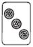
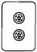
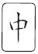
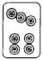
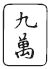

| 悪果 | |
| 黒川 博行 | |
| (2013) | |
悪 果
黒川博行
角川ｅ文庫
本作品の全部または一部を無断で複製、転載、配信、送信したり、ホームページ上に転載することを禁止します。また、本作品の内容を無断で改変、改ざん等を行うことも禁止します。
本作品購入時にご承諾いただいた規約により、有償・無償にかかわらず本作品を第三者に譲渡することはできません。
本作品を示すサムネイルなどのイメージ画像は、再ダウンロード時に予告なく変更される場合があります。
本作品は縦書きでレイアウトされています。
また、ご覧になるリーディングシステムにより、表示の差が認められることがあります。
1
伊達が手牌を見つめている。これでもない、あれでもないと迷ったあげくにを捨てた。
「チー」下家の松井がと開き、ラス牌のを切った。松井はも鳴いているから、聴牌はまちがいない。
「なんや、おい」堀内は伊達を睨みつけた。「見え見えの混一色に辺張のを食わせてどないするんや」
「知ったことかい。わしが和了ったら、それでええんや」
伊達は卓台のビールをとってグラスに注ぐ。
宮崎がをツモ切りした。きつい。生牌だ。
堀内のツモ牌は。これは松井に打てない。食いタン狙いで雀頭のを落とした。
「ロンッ」牌を倒したのは宮崎だった。
「チャンタ・一盃口・ドラ一。すんまへん、荘家の満貫ですわ」
「きたないぞ。聴牌してるんならリーチせんかい」
「こんなとこでリーチするのは素人でっせ」
「ほんまに、どいつもこいつも腐っとる」
点棒を数えた。一万五百点しかない。「あかん、飛んでしもた」
ありったけの点棒を卓に放ったとき、携帯電話が鳴った。
──はい、堀内。
──田代です。いま、いいですか。
──取り込み中や。用件だけいうてくれ。
──折り入って相談がありますねん。今晩、会いたいんやけど。
──かまへん。場所はどこや。
──ミナミ。宗右衛門町の『チルチル』。七時すぎに。
──分かった。行く。
電話を切って、壁の時計に眼をやった。六時十分前だ。
「わるいな。おれ、抜けるわ」
今日はツイてない。いくら粘っても無駄だ。
「ちょっと待てや。わしは負けとるんやで」伊達が泣きを入れる。
「おれも沈んでるんや。あとは三人打ちしたらええやないか」
堀内は立ちあがった。「なんぼや。精算してくれ」
点数表を覗き込んだ。ざっと計算して八十点のマイナス。×が五つもついている。
「トータルで三万円ほどですね」宮崎がいった。
「大負けやないか」ズボンの後ろポケットから札入れを抜いてみせた。
「よろしいがな。ツケにしときます」松井が手を振った。
「そうか。ほな、そうするわ」札入れをひいた。
堀内は端から払うつもりがないし、松井と宮崎も受け取りはしない。こちらが勝ったときは容赦なく取り立てるのだから、これほど効率のいい麻雀はない。
「堀やん、どこ行くんや」伊達が訊いてきた。
「野暮用や。今日はこのまま帰る」
それで伊達には話が通る。野暮用というのは、女に会うかネタ元に会うか、そのどちらかだ。署にもどらないときは伊達が適当に報告してくれる。「おまえも適当に切り上げるんやぞ」
雀荘を出た。路地を抜けてバス通りへ歩く。じりじりと炙るような陽射し、正面から西日が照りつけてくる。ポロシャツのボタンを外して首筋の汗を拭った。
緑橋から地下鉄中央線に乗り、堺筋本町駅で堺筋線に乗り換えた。ホームも階段も人波に埋まっている。日本橋駅で降りて、地下街の蕎麦屋に入った。ざるそばの大盛りと生ビールで腹ごしらえをし、七時ちょうどに蕎麦屋を出た。
千日前のアーケード下を北へ歩いた。煙草の専門店があったので、ホンジュラス産の葉巻を三本買う。一本が千百円だから、安月給の公務員にはけっこうな贅沢だ。葉巻は酒とちがって値が高いほど旨くなる。ほんとうはハバナ産の逸品を吸いたいのだが、一本に三千円も払う金はない。
道頓堀川を渡った。宗右衛門町はぽつぽつとネオンが点きはじめ、パブやラウンジの客引きが声をかけてくる。三千円で飲み放題、若い子ばかりというが、言葉どおりに遊べるわけがない。相手をしながらぶらぶら歩いて、相合橋近くのビルに入った。チルチルは二階の突きあたりだ。
ドアを開けると、田代はカウンターの隅に腰かけて水割りを飲んでいた。客はほかにいない。時間が早いからバーテンダーもひとりだけだ。
「どうも、わざわざ呼びたてて、すんませんな」
田代は愛想よく頭をさげた。「腹のほうはどないです。なんぞ食いに行きますか」
「さっき食うたばっかりや。おれは酒でええ」
田代と飯を食ったら金がいる。なにをしようが堀内の奢りなのだ。
「ターキー。ソーダで割ってもらおか」
バーテンダーにいって、田代の隣に腰をおろした。さっきの葉巻を出す。
「へーえ、えらい粋なもん、やるんですな」
「外で飲むときだけや。家で吸うたら、よめはんが怒る。匂いがきついからな」
折りたたみナイフで葉巻の吸い口を切った。マッチの火で吸いつける。
「ええ香りやな。わし、好きですわ」
たちのぼる煙を田代が吸う。一本やろうかと思ったが、やめた。こんなやつにはもったいない。
バーテンダーがソーダ割りを持ってきた。ひと言でも口をきくのは損といった仏頂面、さも面倒そうにコースターを置き、グラスを置く。堀内がチルチルの馴染みになって三年、この髭のバーテンダーとまともに喋ったことは一度もない。
堀内は一気に半分ほど飲んで深い息を吐いた。旨い。バーボンと葉巻は相性がいい。
「で、相談というのは」低く、いった。
「データが欲しいんですわ」
田代はバーテンダーのほうを見やって、小さくいった。「三人ほど頼みます」
「な、田代さんよ、あんたはいつも他人事みたいにいうけど、データを外へ出すのは、おれの首がかかっとるんやで。照会センターの人間にも迷惑がかかる。あの流出事件以来、データを扱うのは上のチェックが厳しいんや」
九〇年二月、信販会社『セントラルファイナンス』近畿地区本部と高松支店に、警察庁管理の犯歴など個人情報が流出したことが発覚した。大阪府警は枚岡署と枚方署、住吉署の警官三人が府警OBの信販会社員の照会に応じていたことを突きとめて、枚岡署警官を地方公務員法違反容疑で書類送検、枚方署と住吉署の警官を減給処分にした。このとき、府警本部長や警察庁次長など、流出当時の幹部ら十四人が戒告、訓告処分を受けている。
「そこをなんとかお願いしますわ。このとおりや」白髪まじりの頭を田代はさげる。
「あんた、いったいなんぼでデータを売ってるんや」
「さぁね、なんぼでっしゃろ」
この男は入手した個人データを、サラ金や信販会社に、ひとりあたり三万円ほどで売っているはずだ。三人分なら九万の稼ぎになるから、警察情報というのは値が高い。サラ金や信販会社は田代から買った債務者の犯歴データ──氏名、本籍、身体的特徴、犯罪容疑、逮捕検挙歴、管轄警察署、処分内容、判決など──を確認して債権回収の可否を判断し、回収ができそうなら、債務者に過去の犯歴をちらつかせたりして取り立てに利用するのである。
「しゃあない、名前をもらおか」堀内はいった。
「おおきに。これですわ」
田代はポケットから一枚の紙片を出した。細かな字で三人の男の氏名と生年月日、本籍地が書いてある。警察庁保有の犯歴データは、コンピューターに氏名と本籍をインプットすれば瞬時に取り出すことができる。
堀内は紙片をメモ帳に挟んで、バーボンを飲んだ。
「ところで田代さん、見返りはなんや」葉巻をくゆらす。
「ポーカーゲーム屋というのはどないです」田代は水割りで口を湿してささやいた。
「どういうネタや」
「鶴橋商店街の外れですわ。七月の初めからゲーム機を五台ほど置いて派手にやってます。胴元は桃谷の双葉組。近所の商店主が集まって、明け方まで......」
「いらんな。シャブやチャカならまだしも、シケたポーカー屋を叩いて、なんの勲章になる。あんたから聞かんでも、どうせほかからタレ込みがあるんやで」
ばかばかしい。もっと大きなネタでないと、犯歴データとの釣り合いがとれない。
案の定、田代はにやりと笑って、
「もうひとつ、とっておきのネタがあるんやけどね」
「なんや、出し惜しみせずにいうてみんかい」
「けど、堀内さん、こいつは三人分のデータでは喋れませんねん」
「えらい気をひくやないか、え。なにが欲しいんや」
「そやから、あと十人。データをくれると約束してくれませんか」
「食えんな、あんたも。いつから人の足もとを見るようになったんや」
メモ帳に挟んだ、さっきの紙片を抜き出した。灰皿を引き寄せて、マッチを擦る。炎に紙片をかざした。
「待った。そらあかん」
田代はあわてた。「盆です。川坂の盆ですわ」
「ほう、そらおもしろそうやな」
火を吹き消した。「常盆か、約日の盆か」
常盆は毎日開いている賭場、約日の盆は、週に一回とか、十日ごととか、一定の日を決めて開帳する賭場のことをいう。
「遠出ですわ。月にいっぺんほど盆を敷くみたいです」
遠出とは、開帳者のシマを出て、遠方、たとえば郊外の別荘などで行う賭博をいう。
田代はつづけて、「胴元は百丈町の淇道会です」
「淇道会......。うちの管轄やで」
神戸川坂会系神燈連合内淇道会。組長は鳥居洋介、組員は十人。賭博と金融を資金源にしている。「盆の種目は」
「バッタ撒きです。テラはブタ半」
「なんと、古典的な博打やな」
いまどき珍しい。関西の賭場はバッタ撒きや手本引き、追丁カブといった花札を使う賭博が廃れて、サイコロを使うサイ本引きがほとんどだ。最近はカードを使ったバカラも増えている。
バッタ撒きには赤黒の花札二組を使用する。合力が九十六枚の札をいっしょに交ぜてよく切り、伏せたまま将棋倒しにして一列に並べ、上から右に一枚、左に一枚と、交互に振り分けて三回撒く。右に撒かれた三枚（合力側）を〝サキ〟、左に撒かれた三枚（反対側）を〝アト〟といい、客はアトサキいずれかに金を張る。両側の賭け金がそろったところで場札を表に返し、三枚の月数（松は一月、梅は二月、桜は三月......とし、紅葉の十月、雨の十一月、桐の十二月は零とする）を合計して、その端数の多い（九に近い）ほうが勝ちとなる。ブタ半は、アトサキどちらかにブタ目（端数がゼロ）が出て勝負がついたときに、勝った客から五割のテラ銭をとることをいう。
「テラの切り方まで知ってるのは、あんた、その盆に行ったことがあるんかい」
「そいつはいいっこなしにしてくださいな」
「まさか、トロを背負うてるんやないやろな」トロとは賭場の借金のことだ。
「それはありません。心配ないです」田代はかぶりを振る。
盆が摘発されるのは、負けが込んでトロを抱えた客の密告が発端になることが多い。客は常習賭博で書類送検されるが、胴元が賭博開帳図利で逮捕されるから、とりあえず客のトロは帳消しになる。子供の字で『おとうさんがばくちばにいりびたってこまっています。おまわりさん、たすけてください』と書かれたような投書は、たいていは負けた客の自作自演であり、堀内が田代をネタ元に仕立て上げたのも、田代を賭場で検挙したのがきっかけだった。田代は博打で親の代からの料理屋をつぶし、妻子とも別れて住み込みの印刷工員になり、工場が倒産してからは今里新地の『ハピネス』というスナックの雇われマスターをしている。田代はハピネスの常連客相手に競輪や競艇のノミをして小金を稼いでおり、〝淇道会の盆〟はそのあたりの筋から入ったネタだろう。
「で、最近の遠出はどこやった」
「八尾のカラオケボックスです。詳しい場所は知りません。三十人ほど入る宴会用の和室に盆布を敷いたみたいですわ」
「カラオケボックスとは考えたな」
発想に感心した。広い駐車場はあるし、夜中に人が出入りしても怪しまれない。声や音も洩れないから、賭場にするには最適だ。
「ボックスは淇道会の舎弟が経営してるんか」
「そこまでは知りません。調べるのは堀内さんの仕事ですやろ」
「次の遠出はいつや」
「それも分かりません。日にちが決まったら、淇道会から馴染みの客に誘いがかかります」
「馴染みの客はハピネスの常連か」
訊いたが、田代は答えなかった。この男は自分の店の客を売るつもりなのかもしれない。
「次の遠出は、おれに知らせてくれるんやろな」
「そいつは堀内さん、無理ですわ。わしに盆の誘いがあるわけやないんやから」
遠出の場合、胴元から賭け客に連絡があるのは開帳の前日だ。当日の午前中ということもある。客は『たまり』といって、喫茶店や小料理屋などの待ち合わせ場所に集まり、そこから三、四人ずつ胴元の車に乗せられて賭場に向かう。だから、客は賭場に着くまで、どこで開帳されるかを知らないのである。
「ほな、馴染みの客の名前を教えてもらおか」
「その前に、あと十人分のデータ、約束してくれますか」
「そらあかん。あと五人が精一杯やな」
「堀内さんもシブいわ」
田代は薄ら笑いを浮かべて、上着のポケットからまた一枚の紙片を出した。十人分の氏名と本籍が書いてあった。「そのうちの半分でよろしいわ」
「さっきの三人と、この五人、全部で八人やな」念を押す。
「しかたおまへんな」
田代はうなずいて、「遠出の客の名前は西口和博。明和商会いう中古車ディーラーの社長ですわ。明和商会は清水谷の栖蓮院いう寺の向かいにあります」
メモをしながら、頭の中に地図を描いた。天王寺区清水谷から八尾市は、阪神高速道路と近畿自動車道を経由して二十分あまりか。そう遠くはない。
「西口和博の年齢と人相は」内偵のときに必要だ。
「五十すぎで小肥り。鼈甲縁の眼鏡をかけてます」
「よっしゃ、分かった。データが取れたら連絡する」
二枚の紙片をメモ帳に挟んで腰をあげた。
「わし、腹減った。どこか飯でも食いに行きませんか」
「ひとりで食えや」
五千円札をカウンターに置いて、チルチルを出た。
宗右衛門町から畳屋町、一杯飲んだ会社員たちが次へ行こうと声高に談笑しながら歩いている。まだ宵の口だから、足もとのふらついている連中は見かけない。
歩きながら『大三元』に電話をかけた。伊達はまだ卓にいるという。呼んでもらった。
──いつまで打ってるんや。八時すぎやぞ。
──どえらい沈んでて、やめられんのや。
──熱うなるな。極道相手では勝たれへん。
松井と宮崎は、たぶん通している。符牒とブロックサインで、おたがいの聴牌や鳴きたい牌を知らせあっているのだ。三人打ちの麻雀でふたりに組まれたら勝機はない。
──無駄な抵抗はやめて、ミナミへ出てこいや。ええ話を仕入れたんや。
──ネタ元と会うたんか。
──バッタ撒きの盆やで。久しぶりの真打ちや。
──ほう、ええ話やな。どこへ行こ。
──笠屋町の『翔』で待ってる。
電話を切り、署にかけた。一回のコールで落合が出た。
──堀内です。今日は直帰しますわ。伊達もいっしょです。
──了解。ご苦労さん。
落合は、どこにいる、とも訊かなかった。堀内もいちいち詳しい報告はしない。暴犯係の刑事はヤクザの犯罪を取り締まるのが仕事であり、どれだけの情報をもっているかでその手腕が分かる。日頃から組事務所に顔を出してようすをうかがい、ときには個人的な相談にのって情報を拾うのだ。組員とのつきあいにどこで一線を引くかは各人の裁量に任されているといっていい。
立ちどまって、吸いさしの葉巻に火をつけた。
こんばんは。どこ行きますか──。韓国語訛りの女性に声をかけられた。
これから仕事なんや──。それ、葉巻ですか──。ああ、葉巻や──。いい匂いですね──。そうか、おおきに──。
女性に背を向けて歩きだした。
そういや、順子は葉巻が嫌いやった──。ふと思い出す。喉を痛めるといって煙草を吸わず、酒もあまり飲まなかった。
前任の中央署暴犯係にいたころ、千年町の韓国クラブに通いつめたことがある。順子というソウルから来たシンガーと深い仲になり、月に十万を渡してマンションに通った。別れたあとで知ったが、順子には堀内のほかにふたりのスポンサーがいた。ソウルに住む両親と残してきた子供に、毎月、二十万も仕送りしていたというから、うまくころがされたとはいえ、腹は立たなかった。『酒とバラの日々』『ゴッド・ブレス・ザ・チャイルド』といったジャズやブルースのスタンダードナンバーが得意なシンガーだった。
笠屋町、商工会館前のハーフミラーのビルに入った。クラブ『翔』は五階だ。
エレベーターが降りてきて扉が開いた。ホステスと客が出てくる。
「あら、堀内さん」
麻美だった。前髪にメッシュを入れたショートカット、化粧が濃い。オレンジ色のパンツスーツに白のストラップサンダルを履いている。
「杏子、来てるか」
「うん、いるよ」
麻美は外に出て客を送り、すぐにもどってきた。エレベーターに乗るなり、
「今日は同伴だね」と、腕を組んでくる。
「どうや、いっぺんデートするか」
「だめよ。杏子にられるもん」
五階にあがった。『翔』に入る。ライトグレーの壁、ダークグレーのミラー、白い人造石のフロア、黒い革張りのシート、すべてを無彩色で統一した、ひとむかし前のディスコふうのインテリアだ。杏子はピアノのそばのボックスにいた。
堀内はカウンター近くのボックスに座って、おしぼりを使った。麻美が横につく。
「ボトルはヘネシーだっけ。水割りでいいよね」
「あとで、もうひとり来るんや」
「じゃ、グラスは三つ」麻美はボーイを呼んで注文する。
杏子がちらっとこちらを見た。堀内は小さく手をあげる。あとで行く、と杏子は唇で答えた。今日は少し疲れた顔をしている。
「なんだ、なんだ、いやらしい。顔見合わせちゃって」
麻美が口をとがらせる。「ね、お連れって、誰?」
「うちの会社の伊達や。こないだも来たやろ」
「ああ、あの大きなひと」
麻美は笑った。「冗談ばかりいって楽しいよね。でも初めて見たときは怖かった」
「怖い? なんでや」
「だって、髪が二分刈りでしょ。顔はいかついし、体もがっしりしてるじゃない。着てる服もなんだかヤ印関係って感じだから」
「あいつ、身柄は大きいけど、中身は風船や。見かけ倒しのへなちょこやで」
いったが、伊達は風船ではない。去年の府警柔道大会でベスト16まで勝ち進んだ。百八十センチの九十五キロ、素手のケンカならまず負けることはない。
「伊達さん、よく働くんでしょ」
「あれでけっこうまじめなんや。冷凍餃子を作らせたら一流や」
麻美は堀内と伊達の正体を知らない。鶴橋あたりの食品加工会社に勤めていると思っている。ふたりの職業を知っているのは『翔』のママと杏子だけで、飲み代はいつも五千円だ。ヤクザに守り料を払うよりずっと安い。
「おれ、伊達が来るまで歌をうたう」
「だめよ。いま、ピアノの先生がいないんだから」
「カラオケ入れんかい」
「うちはこれでも高級クラブなんです」
あたりさわりのない会話、水割りを飲みながら時間をつぶした。麻美は横に座ったまま動かず、杏子もこちらには来ない。
伊達が現れたのは九時前だった。麻雀をしながら酒を飲んだのだろう、ほんのり顔が赤い。シートに腰をすえるなり、グラスの水を一気に飲みほした。
「わるいけど、ちょっと外してくれるか」堀内は麻美にいった。
「なに、わるだくみ?」
「そんなええもんやない。仕事の打ち合わせや」
「あ、そう」麻美は水割りを作って席を立った。
「さっきの話、聞こか」麻美の後ろ姿を眼で追いながら、伊達がいった。
「百丈町の淇道会や。月にいっぺん遠出をしてる」
「ほう、そらおもろいな。盆はどこや」
「前回は八尾のカラオケボックスやった。宴会用の和室に盆布を敷いたらしい」
「カラオケボックスとは新手やな。しゃれとるがな。マイク片手に札を撒くんかい」
「まあ聞け。おれは張り客の名前をひとり仕入れた。明和商会いう中古車屋の──」
田代から聞いたネタを隠さず話した。伊達はナッツをつまみながら黙って耳を傾けていたが、
「──その西口いう客を攻めるのが早道やな。いずれ近いうちに次の遠出の誘いがあるはずや」
「西口に気取られんように遠張りをする。夜になって出かけるようなら、尾けて盆を突きとめるんや」
「八尾のカラオケボックスを洗お。バックに組筋が隠れてるとこを割り出す」
「淇道会の幹部を張るのもええ。遠出の前に銀行へ行くはずや」
盆を開帳するとき、胴元は廻銭を用意する。遠出の盆なら二百万から三百万の現金を廻銭箱に入れておいて、負けた客に貸す。利息はトイチ、十日で一割の高利だ。熱くなった客は際限なく金を借りて、あげくに警察に駆け込んだりするから、そのあたりを見きわめつつ金をまわすのが胴元の勘どころだとされる。
「銀行で二、三百万もの金を千円札に両替しよったら、もうまちがいはない。ズクを作って、その日の晩に開帳や」
廻銭はほとんどが千円札だ。一万円札ばかりでは一回の賭け金が大きくなって客が張りづらく、盆が盛り上がらない。客は勝ったときに金を懐にしまってしまい、張りをやめることがあるため、千円札ばかりだとかさばって財布に入れにくいという利点もある。胴元は千円札を半折りにし、十枚ないし五十枚ずつをまとめて輪ゴムでとめておく。この半折りの札を〝ズク〟という。
「西口という客、八尾のカラオケボックス、銀行の両替......」
伊達はひとつずつ指を折る。「調べはこの三本やな」
「淇道会の取引銀行を知りたいな。そしたら手間が省ける」
「まさか税理士は使うてへんやろ」
税金をまともに払うヤクザはいない。税法上は無職なのだから。
「百丈町近辺の銀行、信用金庫をしらみつぶしにあたるんや。どこかに組長名義の預金があるはずやで」
「しかし、わしらふたりでは荷が重いな」
伊達はあごをなでながら、「係長に話して、応援もらうか」
「あかん、あかん。バッタ撒きの盆てなことをひと言でも喋ってみい、寄ってたかって美味しいとこをさらわれてしまう。なんのために、おれはネタ元を飼うてるんや」
暴犯係の刑事はつかんだ情報をめったなことではほかに洩らさない。刑事に情報開示というような言葉は無縁であり、自分なりに裏づけをとって、これはいけると確信をもったときに、はじめて口をひらく。そういう縄張根性と、手柄を独り占めにしようとする意思があってこその刑事稼業なのだ。
「これはな、誠やん、おれとおまえのネタなんや。切りのええとこまで、ふたりで仕上げてみせたろやないか」
伊達に情報を明かしたのは、やつがいつも組んでいる相棒で、たがいにひとりでは動くことができないからだ。伊達を信頼しているわけではさらさらない。
「そのネタ元やけど、確かな筋なんやろな」伊達はシートに寄りかかって脚を組む。
「もう四年のつきあいや。博打で人生捨てた男やけど、ガセネタをつかませるような性根はない」田代の詳細はいわなかった。
「で、見返りはなんや」
「データや。犯歴データを八人分」
「むちゃやな」
伊達は首をすくめた。「いっぺんに八人はしんどいぞ」
「おれが五人、誠やんが三人や。それならとれるやろ」
しかるべき口実をでっちあげてデータ照会センターに送ればいい。野球賭博、ノミ行為、手形詐欺......そのつど、適当な捜査理由をいって犯歴データをとってきた。
「これが名前と本籍や。三人分ある」
田代から預かった紙片の一枚をテーブルに置いた。伊達は紙片をポケットに入れ、
「月曜の会議、なにを報告するつもりや」
「鶴橋商店街の外れにポーカーゲーム屋ができたらしい。桃谷の双葉組や」
「ゲーム屋か。大したことないな」
「それをダシにして淇道会のほうを探るんや」
「ま、堀やんにまかせるわ」
伊達は空あくびをした。「飲も。話は終わった」
堀内はボーイを手招きした。
「杏子、呼んでくれるか」
お待ちください──。ボーイはピアノのそばのボックスへ行った。杏子に耳打ちをする。杏子は立ちあがって、こちらにきた。黒のブラウスにオフホワイトのツーピース、ベージュのハイヒールは堀内がプレゼントしたフェラガモだ。
「いらっしゃいませ」
杏子は挨拶して、堀内と伊達の前に座った。ふたつのグラスをとって水割りを作る。
「今日はまた一段と艶やかやな」
伊達がいう。「女の子はきれいに生まれたら得や。なにをしても上品に見える。化粧品もべっぴんさんに使うてもろたらよろこぶがな。今度の休み、おれと口紅でも買いに行こか」
「伊達さん、相変わらずやね」杏子は微笑んで、「いつのまにか口説いてるわ」
「いやいや、おれは杏子ちゃんとお話できるだけで充分や」
「また、そんなこといって上手なんやから」
杏子は脚をそろえてスカートの裾を直した。
零時前に『翔』を出た。蒸し暑い。足もとから熱気がたちのぼってくる。
「明日あたり、雨になりそうやな」空を見あげた。
「ラーメンでも食うて帰るか」伊達がいう。
「やめとこ。おれは眠たい」
「そうか。ほな......」
伊達は肩を振りながら堺筋のほうへ歩いていった。タクシーで天六まで行き、阪急千里線で南千里まで帰るのだ。年上のよめさんと小学生の娘がふたり、2LDKの公団住宅で暮らしている。
堀内は御堂筋へ歩いた。畳屋町の喫茶店『ソルボンヌ』に入る。店内は勤め帰りのホステスと人待ち顔の男たちでいっぱいだ。杏子もしばらくしたら来るだろう。堀内は窓際に席をとって、アイスコーヒーを注文した。
知らぬが仏か──。煙草を吸いつけて独りごちた。伊達には杏子との仲を知られていない。今夜の待ち合わせも、伊達がトイレに立ったときにした。
杏子とはもう三カ月になる。五月の連休前、杏子から同伴の誘いがあり、行ってみると、部屋を替わりたいからいくらか援助してくれないか、と持ちかけられた。いま住んでいる堀江から島之内のマンションに移りたいという。「お願い。敷金の七十万円だけ援助して」杏子は拝むようにいい、月に一回デートするといった。堀内は話を吞んで、その日のうちに杏子と寝た。金は連休のあと杏子に渡したが、島之内のマンションにはまだ一度も招かれたことがない。いつも、荷物が片づいてないから、と断られる。杏子を抱いたのは三回きりで、まだまだ七十万の元はとっていない。
煙草を三本、灰にした。アイスコーヒーの氷が溶けている。
なにをしとるんや──。また時計を見た。もう三十分も待っている。
と、携帯電話が鳴った。杏子だった。
──ごめん。今日は行かれへんねん。
──えっ、どういうこっちゃ。
──急に体調がわるなったんよ。
──体調なんかどうでもええから、顔出せや。
──そやかて、お腹が痛いもん。
部屋に帰って、ベッドの中にいるという。
──それならそうと、もっと早ように電話せい。
電源を切った。むかむかする。隣の席の男がこちらを見ていた。
「なんや、どうかしたんか」
睨みつけると、男はあわてて視線を逸らした。
くそったれ──。伝票をもって立ちあがった。杏子の部屋へ行こうにも、マンションの名前すら知らなかった。
2
遠く霧の向こうにぼんやりとした人影が現れた。近づいてくる。
細い脚、白いサンダル、赤いペディキュア......。杏子だった。拗ねたような顔で、こちらをじっと見つめている。
杏子のそばに近づいた。くるりと背を向けて、杏子が逃げる。
待て──。走ろうとしたが、足が動かない。息がつまる。
うなされて眼が覚めた。窓の下で犬が吠えている。
壁の時計を見あげた。六時二十分。隣の家の柴犬は、毎朝、この時間に吠える。
いつか殺したる。布団の中で罵った。隣の家には二度、苦情をいいにいったことがある。へーえ、そんなにうるさいですか、隣の主婦はそういうだけでなにもしない。犬が吠えてなにがわるいといった口ぶりだった。
犬は餌をもらえるまで鳴きやまない。エアコンの音も耳につく。いったん眼が覚めたら、もう眠れない。
堀内は布団から出た。ひとつ伸びをしてカーテンを引き開ける。里恵子の顔に光があたったが、起きる気配はまるでない。この女はつくづく無神経にできている。
ズボンを穿き、ポロシャツを着て寝室を出た。廊下、階段、玄関から台所まで、壁際という壁際に段ボール箱がぎっしり積みあげてある。洗剤、カー用品、ダイエット食品、化粧品、調理器具、浄水器、これらをみんな金に換算したら、いったいいくらになるのだろう。少なくとも二百万、いや三百万近くの在庫は抱えているにちがいない。
里恵子には口を酸っぱくして、やめろといった。口コミの訪問販売が儲かるわけはない、マルチまがい商法は摘発される、怪我をしないうちに足を洗え──、脅してもすかしても結局は無駄だった。里恵子は堀内に反抗するかのように『リッチウェイ』にのめり込んだ。午前中はセールスの電話をかけつづけ、午後は商品と会員勧誘パンフレットをバッグに詰めて客の家を訪れる。研修セミナー、システムセミナー、セールスミーティングと、徹底した洗脳教育を受け、会員勧誘と商品販売のために連日深夜まで外を駆けずりまわっている。
里恵子がリッチウェイから得る利益は月に十万もないはずだ。労働時間を考えれば主婦のパート仕事よりずっと効率がわるい。無理をして在庫を抱えるのは、売上ノルマを達成するとランクがあがって下位クラスの販売員から歩合が入ってくるからだと、カルト宗教の信者のような口調でいい、そのステージアップシステムを解説した教育本と教育カセットが家中に散乱している。
堀内はしかし、リッチウェイの利点にも気づいた。里恵子がセールスやミーティングにかまけて、ほとんど家にいないことだ。堀内が外でなにをしていようと、いつ家に帰ろうと、里恵子はいっさい文句をいわなくなった。
夫婦仲は冷えきっている。堀内が里恵子に望むことは炊事──家で夕食を食うことはめったにないが──と洗濯だけ。毎月二十五万円の生活費を渡しているが、やりくりには関知しない。里恵子のリッチウェイ狂いで、堀内自身が金銭的な損害をこうむりさえしなければ、それでいいと思っている。
顔を洗い、歯を磨いた。食パンをトースターに入れ、フライパンに卵を落としてスクランブルエッグにする。インスタントコーヒーを淹れて、ダイニングチェアに腰をおろした。昨日の酒が残っているのか、頭の芯がまだ重い。煙草を吸いつけたら吐き気がした。
八時に家を出た。安普請の建売住宅とアパート、こぢんまりしたマンションと町工場の混在する灰色の街。筋向かいのプレス工場のシャッターがあがって、旋盤の音が聞こえはじめた。
国道四三号線を渡り、児童公園を抜け、バス通りを歩いて伝法駅に着いた。煙草を買って電車に乗る。朝のラッシュアワーとはいえ、各駅停車だから、乗客はそう多くない。二駅先が終点の西九条だ。八月十八日、月曜、盆休み明け。勤め人はみんな気だるそうな顔をしている。
西九条からJR環状線に乗り換えて、森ノ宮駅で降りた。中央大通を東へ歩く。平野川を渡って五百メートルほど行った大通り沿いに今里署はある。
おはよう──。あ、おはようございます──。カウンターの向こう、車庫証明係の杉本ますみと挨拶を交わして、ロビー奥の階段をあがった。化粧の派手な杉本は、妻子持ちの保安係主任とつきあっている。去年の夏、ふたりが三宮のセンター街を歩いているところにばったり出くわした。こちらも女連れだったから、たがいに見て見ぬふりをしたが、あれ以来、杉本は妙に愛想がいい。いつか保安と揉めるようなことがあれば切り札を出せる。
三階の刑事部屋に顔を出した。暴力団犯罪対策係は左の壁際に机を並べている。係長の佐伯以下、六人の小所帯だ。
「さ、揃うたな」佐伯がみんなを見まわした。「会議室へ行こ」
六人がぞろぞろと刑事部屋を出て、階段横の会議室に入った。長テーブルをコの字に移動して座る。伊達が大きなあくびをした。
「まず藪さんから報告してくれ」
主任の落合がいって、藪内を指した。
「岸興業の競売妨害ですけど、住宅金融債権管理機構から正式な告発がありました」
藪内はノートを広げて報告する。「来月の中旬までに令状をとって、新東ビルに踏み込みたいんですが」
「引きネタはなんや」佐伯が訊いた。
「詐欺、恐喝、不動産侵奪、強制執行妨害、建造物損壊、偽造私文書行使等です」
「逮捕状は何枚や」
「三枚です。幹部の宍戸と、舎弟の余川、箱崎」
「小物ばっかりやな。組長はむずかしいとしても、若頭ぐらいは引けんのか」
「若頭と宍戸の共謀を証明せんとあきません」
「宍戸を引いて締め上げるのは」
「口を割るとは思えません。宍戸は筋金入りですわ」
「分かった。とにかく令状を揃えてくれ。踏み込むときは全員でやる」
佐伯はいって、紙コップのコーヒーを飲む。
「次は堀やん」落合がこちらを向いた。
「玉津三丁目にポーカーゲーム屋ができました」
杏子にすっぽかされた夜、ミナミからの帰りに鶴橋へ寄った。田代から聞いたとおり、鶴橋東公設市場の裏手にゲームセンターがあった。ネオンを消し、シャッターをおろしていたが、中には客がいる気配がした。
「古い雑居ビルの一階で、店名は『ケントハウス』。隣は『天和』いう雀荘です」
「『天和』なら知ってる」
佐伯がいった。「あの隣は洋食屋とちがうか」
「その洋食屋が、いつのまにやらゲーム屋になったんですわ。胴元は桃谷の双葉組という情報があります」
「双葉組か......」佐伯は腕組みをして、「それ、確かな筋なんやろな」
「これからふたりで内偵に入ります」
いって、伊達を見る。伊達も小さくうなずいた。
「よっしゃ。そのポーカーゲーム屋がものになるようなら、岸興業のあとは双葉組や。そういう段取りで動いてくれ」
「次、嶋さん」落合が嶋田にいった。
「先月検挙した深江の主婦売春で、経営者の身元が割れました。摂津市鳥飼の──」
今里署管内でここしばらく暴力団がらみの大事件や抗争は発生していない。だからルーティンワークとして管内の組関係の情報を収集し、資金源を断つべく地道な捜査を進めている。係長の佐伯は四十七歳の警部補、主任の落合は五十三歳の巡査部長、藪内、嶋田、堀内、伊達は三十代半ばから四十代前半の巡査部長──。大阪府下のB級署の暴犯係はどこも似たような組織構成だ。
会議は四十分で終わり、刑事部屋にもどった。落合が来て、デスクの上に白紙の領収書三枚と、三人分の住所、氏名を書いたメモを置く。市販の領収書はどれも種類がちがっている。
「それ、書いてくれ。金額は六千円ずつ。明細は〝捜査協力費〟」
落合は藪内、嶋田、伊達のデスクにも領収書とメモを置き、自分の席にもどった。
堀内は三枚の領収書にいわれたとおりの金額と明細をボールペンとサインペンで書き入れ、メモを見ながら住所と氏名を書いた。筆跡を少しずつ変えた偽領収書。三人の情報提供者はもちろん架空の人物で、住所はでたらめだ。偽領収書の捜査費は裏金に化けて署長や副署長、刑事課長といった幹部連中に分配される。伊達は書いた領収書に鼻くそをなすりつけていた。
偽領収書を落合に渡し、堀内は鑑識係へ行って、二百ミリの望遠レンズがついた一眼レフのデジタルカメラを借りた。伊達と連れだって署を出る。
「詐欺横領の片棒担いだら腹減った。暑い。冷房の効いた喫茶店でビールでも飲も」
口で息をしながら、伊達がいった。額に汗が噴き出している。
「署のそばで油売るのはまずいやろ」
「歩いたら、よけいに暑いやないか」
「ちょっと瘦せたらどうや。肥えすぎやで」
「これは脂肪やない。鍛えあげた筋肉や」伊達は厚い胸板を叩く。
「ぶつくさいわんと、清水谷まで歩こ」
明和商会と西口を隠し撮りするのだ。「このカメラ持ってくれるか」
「あほいえ。わしは虚弱体質やぞ。そんな重いもん、持てるわけがないやろ」
伊達はさっさと歩きはじめた。相棒とうまくやっていこうというような姿勢はみじんもない。唯我独尊、直情径行、いったんこうと決めたら梃子でも動かず、まわりに迷惑をまき散らす。
伊達は一昨年の春、西成署から今里署に異動してきた。年齢は三十七で、堀内より一つ若い。西成署のマル暴担のころはなにかと噂があったらしいが、こちらに来てからは、堀内といっしょに組員と麻雀をする程度で、そう目立った癒着はない。ミイラとりがミイラにならないよう、堅物で肝の小さい佐伯は、部下の単独行動──ひとりで組事務所に出入りしたり、ひとりで内偵捜査をしたがるマル暴担の刑事は、ヤクザに取り込まれていることが多い──を禁じている。
空堀町まで歩いて、喫茶店に入った。堀内はビール、伊達はビールとピラフを注文する。伊達はテーブルに置いたカメラに眼をやって、
「堀やん、写真、得意か」
「得意やないけど、撮るのはできる。ピント合わせてボタンを押すだけや」
露光やシャッタースピードはカメラ任せだ。
「わしはあかん。使い捨てのカメラも触ったことない」
「子供を撮ったりせえへんのか」
伊達の娘は小学校の一年生と三年生だ。
「そういうことはみんな、よめはんがする。わしはノータッチや」
「気楽なもんやな。おまえは種まいただけか」
「けど堀やん、子供はかわいいで。堀やんとこも早よう作らんと、そろそろマル高やろ」
「ひとのよめはんの心配せんでもええわい。おれは子供なんかいらんのや」
本心だ。里恵子が妊娠すると考えただけでぞっとする。
「堀やんのよめはん、働いてるんやな」
「それがどないした」
「よう稼いでくるんやろ」こちらの表情をうかがうように伊達はいう。
「パートに毛が生えたみたいなもんや。女の稼ぎは高が知れてる」
まさか、リッチウェイをしているとは知らないだろう。
そこへビールがきた。グラスに注いで、ひと息に飲む。生き返る。
伊達もビールを注いで飲みほした。ピラフはまだ来ない。
「わしな、堀やんと組んだときに思たんや。この男はええ服装しとるな、と。スーツも靴もブランドもんで、しょっちゅうミナミへ飲みに行くし、帰りはいつもタクシーや。家は持ち家で、車はBMW。よっぽどええ金ヅルがあるにちがいないとめぼしをつけたんやで」
「たった二十五坪の家と、中古のBMWが贅沢かい」
「わしとこは賃貸の公団住宅や。車は親戚からもろた腐りかけのブルーバードやで」
「おれがなんぞ、おいしいシノギをしてるとでも考えたんか」
「考えた。ごちそうはひとりでこっそり食えというのが、うちの親父の遺言なんや」
「おれとよめはんは別会計や。毎月きまった額をよめはんに渡して、あとはおれの好きなように使うてる」
里恵子がリッチウェイの会員になったとき、堀内は借金のカタになりそうな──知らぬまに連帯保証人にされそうな──ものを隠した。堀内名義の銀行の通帳と銀行印、実印、印鑑登録証、健康保険証などは、まとめて署のロッカーに保管し、クレジットカード類は肌身離さず持ち歩いている。
里恵子が抱えている大量の在庫の仕入れ資金は、実家の兄夫婦から出ているはずだ。兄夫婦はアメリカ資本のリッチウェイが日本で営業を開始した当初からの会員で、いまはかなり上級ランクに位置しているらしい。里恵子がいくら汗水たらして働こうと、つまりは親会員の兄夫婦や、さらに上級のトップ会員に上納金が入るだけというからくりが、欲に狂った里恵子には分からない。そのあたりの洗脳システムが優れているからこそ、リッチウェイは殺到する苦情やマスコミのマルチ商法批判をかわして売上を伸ばし、日本で株式を店頭公開することができたのだ。
「な、堀やん、ええシノギがころがり込んだときは、わしにいうてくれよな」伊達は念を押す。
「旨い饅頭はおれと誠やんで食うがな」
「そうそう、堀やんとわしは一つ穴の狢やで」
伊達はビールを飲みほして、「おーい、ピラフはまだかい」
大声でウェイトレスにいった。
清水谷──。栖蓮院は白い築地塀のこぢんまりした寺だった。クスノキの巨木を挟んで、二車線のバス通りを挟んだ北側に中古車ディーラーがある。青と白の三角旗を周囲に巡らせた屋外展示場に、《明和商会》と書かれたアーチ形の看板、ベンツ、ジャガー、BMW、アウディ、マスタングといった輸入車ばかり、二十台ほどが駐められていた。
「市内にしては、けっこう広い敷地やな」伊達がいった。
二百坪は優にありそうだ。展示場の奥にライトグリーンの外装材を張った二階建のショールーム兼事務所、その左に丸い鋼板屋根の整備工場がある。紺色のツナギを着た茶髪の男が、リフトアップしたレンジローバーの下に潜り込んでマフラーを外している。
「あれは西口やないな」整備担当の従業員だろう。
「五十すぎのおやじが茶髪にはせんわな」
クスノキの根方は、直径五メートルほどのサツキの植栽になっている。縁石に腰をおろして、明和商会を遠張りした。クスノキのてっぺんでセミが鳴いている。
「雨、降りそうやな」
空を見あげて、伊達がいった。「写真、大丈夫かい」
「これぐらいの明るさなら充分やろ」
西口の顔さえ撮れればそれでいい。バッグからカメラを出して、望遠レンズをセットした。
煙草を二本灰にしたとき、ショールームのガラスドアが開いた。出てきたのは男がふたり。前を歩くのは短髪で長身、黒のニットシャツにベージュのゴルフズボン。後ろの男はグレーのスーツ、小肥り、赤ら顔、鼈甲縁の眼鏡をかけている。
「あいつや。後ろの眼鏡が西口や」
低くいって、カメラをかまえた。フレームに西口を入れて、すばやくシャッターボタンを押す。ショールームから整備工場へ歩いていくのを、つづけて五枚撮影した。
「黒シャツは客やな。あの車の持ち主やろ」
西口と男はリフトアップしたレンジローバーのそばに並んで、言葉を交わしながら作業を眺めている。
「黒シャツは堅気か」
肩を揺する歩き方にヤクザらしい匂いがあった。
「極道くさいな。あの恰好も車も、普通の勤め人やない」
「ものはついでや。撮っとくか」
男の上半身にピントを合わせてボタンを押した。左手の指に指輪がふたつ、金色の時計はたぶんロレックスだ。
「さ、撮影会は終了や。どこかで一服するか」
「それより、百丈町はどないや。もう半月ほど、淇道会の事務所を覗いてないで」
「そうか、そらええな。ご機嫌うかがいに行こ」うまくいけば淇道会の取引銀行を探れる。
堀内はカメラをバッグにしまった。二の腕にぽつりと、雨。
「やっぱり、降りだした」
立って、歩きはじめた。
今里署から南へ約二キロ、城東運河にかかる百丈大橋のたもとに二代目淇道会の事務所はある。前面にだけ緑釉タイルを張った木造モルタルの三階建、玄関の軒下には監視カメラと、その下の壁面に《淇道総業》のステンレスプレート。淇道会は神戸川坂会系の三次団体で、表向きは金融と手形割引を稼業にしている。
堀内は肩にかけたバッグを左手に持ちかえて、インターホンのボタンを押した。カメラがこちらを向いている。
──はい、なんです。
若い男の声。ヨシオとかいう暴走族上がりだろう。苗字は確か、永井といった。
──今里署の堀内や。
監視カメラに向かって手をあげた。
──あ、どうも。すぐ開けます。
あわてたふうにヨシオはいった。自動ロックだろう、カチャッと鉄扉の向こうで錠の外れる音がした。
伊達とふたり、事務所に入った。低い衝立の向こうにデスクが四つとファイリングキャビネット、右の壁際に神棚と十数個の飾り提灯。ピンクのTシャツを着たヨシオと、もうひとりのアロハシャツが、
「おはようございます。お世話さんです」声をそろえ、頭を深くさげた。
「鳥居さん、いてるか」
「いてはります。どうぞ、こっちへ」
ヨシオは右横のドアを開けた。あとにつづいて、堀内は事務所を出る。廊下の突きあたりに組長の部屋。ヨシオはノックして、
「今里署の堀内さんと伊達さんが来はりました」どなるようにいう。
「おう、通せ」
声が聞こえて、ヨシオはドアを開けた。
鳥居はソファに寝そべってテレビを見ていた。ゴルフのビデオレッスンらしい。さも面倒そうにリモコンを拾ってテレビの電源を切り、ソファに起きあがった。
「どうも、久しぶりでんな。髪が濡れてるけど、雨降ってまんのか」
胸まではだけていたシャツのボタンをとめて刺青を隠す。
「ああ、降ってる。ついさっき降りだした」
「タオル使いまっか」
「いや、かまへん。放っといたら乾く」
「ま、かけてください。飲み物は」
「きりきりに冷えたビールといいたいとこやけど、今日はアイスコーヒーにしとこ」
ソファに座って、堀内はいった。伊達もアイスコーヒーという。ヨシオはそれを聞いて、ドアを閉めた。
「鳥居さん、ええ色に灼けてんのはゴルフかいな」煙草をくわえた。
「つきあいでね。こうやってビデオで練習してますねん」
パンチパーマに縁なしの眼鏡、鳥居の顔は赤銅色だ。右腕の手首から先だけがよく灼けている。二の腕まで墨を入れているから、真夏でも長袖シャツを着てプレーするのだろう。
「どれくらいでまわるんや」
「八十後半から九十いうとこかな」
鳥居は卓上のライターをとって火をつけた。こちらに差し出す。「わしらのゴルフ、にぎりがきついからね。大叩きはできまへん」
「いつも仲間内でするんかいな」堀内は上体をかがめて煙草を吸いつけた。
「堅気の連中ともコースに出まっせ」
「そういや、こないだ、うちの署長もコンペに出たとかいうてたな」
口から出まかせだ。「三協銀行の支店長が優勝したらしい。銀行とか信用金庫の偉いさんは、しょっちゅうコンペに出てるから巧いんやろ。あんたもいっしょにまわったりせんのかいな」
「わし、銀行とはそんなつきあいないからね」
「手形を割り引くのに資金がいるやろ。振込やなんかで口座のひとつも作っとかんと不便やで」
「そら、取引銀行ぐらいありますがな。預金もあるし、定期もしてる。けど、銀行というやつは、なんぼ担保を積んだところで、わしらにはまとまった金を貸しまへん。バブルのころは別でしたけどな」
「いったい、どこの支店と取引してんのや」
「そんなこと聞いてどないしますねん」鳥居は警戒した。
「おれの遠縁の息子が、この春、清和銀行に就職したんや。営業成績あげるのにシャカリキになってる」とりつくろった。
「まあ、そこは考えときまひょ」
鳥居は仏頂面でいい、「それより、今度、コースに出ましょうな。吉川の『アトラスレーク』の会員権を手に入れましたんや」
「極道と警官のゴルフは洒落にならんで」
「平日に行ったらよろしいがな。誰も見てまへん」
「あかん、あかん。まだこの齢で馘になるわけにはいかんのや」
「おたくの署長、うちの親筋の大幹部としょっちゅうゴルフするという噂でっせ。迎えのハイヤーから打ち上げの飲み会まで、なにからなにまで丸抱えらしい」
「そんなことは、あんたに訊かんでも知ってる。記者クラブのやつらが本腰入れて記事にせん限り、なんの問題にもならへんのや」
鳥居の話は大げさだが、でたらめではない。今里署長の籠谷は地元振興とやらのお題目で、商工会の有力メンバーと年に四、五回ゴルフをする。まちがってもグリーンフィーは払わないし、帰りは忘れずに土産をもらってくる。その地元商工会のメンバーの中に、薫政会系の不動産屋と、パチンコホールを三店経営している神戸川坂会系の企業舎弟がいるのだ。指定暴力団の薫政会と川坂会は敵対関係にあるが、ここ数年、抗争はない。
「で、鳥居さん、景気はどないや」伊達が訊いた。
「あきまへんな。手形はぼちぼちまわってくるんやけど、どれもこれもほんまのクズばっかり。割り引いても、向こうさんが潰れてしもて、金の回収ができまへん」
「倒産整理もできんのかいな」
「整理はややこしい。法律的な知識が要りまっさかいな。それに、ほかの組筋と込み合うたりしたら面倒でっしゃろ」鳥居はにやりとする。
そこへ、ノック──。ヨシオがアイスコーヒーを載せたトレイを持ってきた。グラスを三つテーブルに置いて、どうぞごゆっくり、と出ていった。
「ヨシオも行儀がようなったな」伊達が愛想をいう。
「うちは躾がきびしいさかいね」
「さっき事務所に初顔がいてたけど、あれは新入りかいな」
「初顔......?」
「派手なアロハシャツ着た金髪や」
「ああ、あれはヨシオの連れですわ。この三日ほど組に遊びに来てますねん」
「名前は」
「ゴローとかいうたな。本名は聞いてまへん」
「盃は」堀内が訊いた。
「どこの馬の骨とも知れん若造に、盃なんかおろしますかいな」
暴力団対策法が施行されるまでは、多くの事務所に組員の名札が掛けられていた。それで組員の序列と動向が知れたのだが、最近はいちいちお伺いをたてないと分からない。この業界も世知辛くなって、簡単には情報をとれないのだ。
「あ、そうそう」鳥居が膝を叩いた。「おもろいDVDがあるんやけど、見せまひょか」
「なんや、裏かいな」
「それがもう、ようできてまんねん。おたくらは見飽きてるかもしれんけど、暇つぶしにはなりまっせ」
そう、裏ビデオとDVDはいやというほど見てきた。二年前、東深江の組筋の倉庫に踏み込んで二千本の証拠品を押収したときは、署の講堂に五台のテレビを持ち込み、五人の暴犯係が一週間ぶっとおしで見分した。あれから半月ほどは婦警の脚を見るのもいやだった。堀内は盗撮ものを十本ほど家に持ち帰って、いまも押入れの隅に隠してある。
鳥居はサイドボードの抽斗からDVDを取り出した。デッキにセットして再生する。
堀内はソファにもたれかかって眼をつむった。眠い──。
三時すぎ、傘を借りて淇道会の事務所を出た。雨は降りつづいている。
百丈大橋を渡って、商店街のアーケード下に入った。
「鳥居の腐れ、なにか怪しんだかな」傘をたたんだ。
「いつもの定期巡回や。あいつはそんなに頭のまわる男やない」伊達も傘をたたむ。
「けど、銀行のことは口をつぐみよった」
「頭隠して尻隠さずや。きっちりばれとるがな」
「なんやて......」立ちどまった。
「堀やんの眼は節穴かい」
伊達は笑い声をあげた。「サイドボードの上に電話を置いてたやろ。その隣にデスクダイアリーがあったん、憶えてへんか」
「さあ、そんなもん、あったかな」
「ダイアリーの表紙に金文字で印刷してあったがな。『大成信用金庫』と」
「ようやった。さすが遠視の伊達さんや」
「それ、褒め言葉とは思えんな」
「大成信用金庫の支店は佐多野町にあったな。交通局の西隣や」
この商店街を抜けて百メートルほど行った国道三〇八号線沿いだ。「行って、支店長に会うてみるか」
「行くのはかまへん。強面に出たら鳥居の口座くらい教えてくれるやろ。けど、鳥居が大成の大口客やったらどないなる。支店長はすぐ鳥居に電話するわな。......堀内と伊達いうマル暴担の刑事が訊込みにきました。いかが対処すればよろしゅうございましょう、とご注進や」
「なるほど、それはある」
伊達のいうとおりだ。支店長が鳥居のゴルフ仲間という可能性も、考えてみればなくはない。
「そやから、先に外濠をかためてから攻めるんや。大成は歳末警戒や防犯訓練で地域係や防犯係の世話になってる。そこを利用するのが、賢い刑事さんとちがいまっか」
「分かった。地域係の戸倉に頼んでみよ。あのオヤジなら話が通じる」
戸倉は地域第二係の主任だ。大酒飲みで定年間近、出世はとうの昔に諦めている。一度、『翔』に連れていったら、えらくよろこんでいた。人はそうわるくない。「よっしゃ。そうと決まったら、署へ帰ろ」
「わしは喉が渇いた。雨も降ってる」さも疲れたように伊達はいう。
「また油を売るんかい」
「働きすぎてバテたときは餃子にビールやで」
伊達はきびすを返して歩きだした。少し先に赤い暖簾のラーメン屋がある。
ラーメン屋で一時間、喫茶店で三十分、時間をつぶして署にもどった。吐く息がニンニク臭いような気がする。
四階の鑑識係にカメラを返して、現像を頼んだ。プリントは四つ切りにしてもらう。
二階の地域課へ降りて、戸倉を連れだした。地階の食堂へ行く。伊達が自販機のインスタントコーヒーを買ってきた。休憩室には総務課の連中が三人いる。
「それで、なんや、折り入った話とは」
戸倉はテーブルに片肘をつき、度の強い黒縁眼鏡を指で押しあげた。この暑いのに濃紺のスーツを着て、化繊のワイシャツに水玉のネクタイを締めている。
「戸倉さん、佐多野町は第二係の縄張でしたな」堀内はいった。
「そう、うちの管轄や」戸倉はコーヒーに口をつける。
「大成信用金庫は立ち寄りの金融機関ですやろ」
「一日一回、まわってる」
「支店長は」
「よう知ってる。山盛とかいう五十すぎの男や」
「その山盛に込みをかけたいんですわ。調べたいのは、淇道会の組長の口座で、預金残高と出入金の記録。それと、両替の記録もあったら欲しいんです」
「そんなこと、わしにいわんでも、山盛に直接あたったらええやないか」
「おれは支店長が組長と警察を天秤にかけへんかを心配してますねん。裏でツーツーにされたら、なんのための内偵か分かりませんわ」
「わしに圧力をかけてくれというんやな」戸倉はにやりとする。
「地域課は金融機関の守りをしてる。支店長もまさか、戸倉さんの顔をつぶすようなことはできんでしょ」
「しゃあないな。ほかならぬ堀やんの頼みや、聞かんわけにはいかんがな」
「それと、もうひとつ」堀内は声をひそめて、「このことは、暴犯の連中には内緒ですわ。しばらく黙っててください」
「暴犯係はやっぱり変わっとる。仲間うちも信用できんか」
「おれらの捜査はね、出し抜いてなんぼですねん」
「で、大成にはいつ行くんや」
「明日の昼前は」
「かまへん。つきおうたる」
酒焼けした顔を小さく縦に振って、戸倉は了承した。
3
八月十九日──。
犬の鳴き声で眼を覚ました。珍しく、里恵子が起きて台所にいる。包丁を使っている音を聞いて驚いた。堀内は寝室を出て階下に降りた。
「どないした。なんの気まぐれや」
「今日はホームパーティーがあるの。その下ごしらえ」
九時までに用意をして、奈良の西大和ニュータウンへ行くという。パーティーとは名ばかり、客の家のキッチンを借りた調理器具の販売会だ。
「朝ごはん、食べるでしょ」
いわれて、ダイニングテーブルを見た。茹でたキャベツとブロッコリー、ハムとソーセージにタルタルソースを添えた皿がある。スープはインスタントのポタージュ。クロワッサンとバゲットもある。
「コーヒーは自分で淹れてね」
「ああ......」ブレンドの豆をミルで挽いた。フィルターをパーコレーターにセットして電気ポットの湯を注ぐ。玄関からポーチに出て新聞をとり、台所にもどって椅子に座る。里恵子にとっては手のかからない、できた夫だ。
「料理の材料費は誰が出すんや」スープをすすりながら、厭みで訊いた。
「SVの佐藤さんと折半にする」
里恵子は鍋のアクをとりながら答える。SVというのはスーパーバイザーの略で、里恵子も同じランクらしい。
「それでおまえ、儲かるんか」
「ホームパーティーをしたら、わるくても一セットは売れるから」
リッチウェイの調理器具セットは十五万円だ。なんの変哲もないステンレスの鍋やフライパンがひとつ三万円もするのだから恐れ入る。マージンは売上の三割。客のほとんどは主婦。よほどうまく煽りたてて契約書にサインさせるのだろうが、あとで冷静になった主婦から解約の申し入れが続出するらしい。
「今日は食材を運ぶから、車を使うね」
「好きにせいや。おれは車に乗ることなんかない」
ブロッコリーにタルタルソースをつけて食った。茹ですぎて歯ごたえがない。
「ホームパーティーのあとは支部のセミナーがあるから、遅くなるよ」
「おまえな、客と話をするときも、そうやって背中向きかい」
「だって、急いでるから」
「このスープ冷めてる。温めなおしてくれ」
バゲットをちぎってバターをつけた。新聞を広げる。
湯飲みの茶を飲みほして、伊達といっしょに刑事部屋を出た。二階の地域課に降りる。戸倉はデスクに座って被害通報票を書いていた。
「それは」デスクの前に立って訊いた。
「痴漢や。先週の金曜日、深江北の交番にOLが届け出た」
地下鉄深江橋駅を出て帰宅途中に、前からきた自転車の男に胸を触られ、転倒して肘を擦りむいたという。「行きずりの痴漢やけど、被害者が怪我してるさかい、いちおう書類を作成しとかなあかんのや。わしらの仕事はこんな雑用ばっかりやで」
「その雑用の邪魔するようやけど、これから大成信用金庫へ行きたいんですわ」
「おう、かまへん。行こ」
戸倉は椅子を引いて立ちあがった。後ろのキャビネットにかけてあるハンガーを外して、上着をはおる。ネクタイは昨日と同じ臙脂色の水玉だ。
署を出た。今里筋を南へ向かう。渋滞する車の列。風はそよりとも吹かず、足もとから澱のような熱気がたちのぼってくる。昨日の雨のせいで、湿度は百パーセントに近い。歩道のところどころに水たまりが残っている。
「堀やん、うちの署へきて何年や」ぽつり、戸倉が訊いた。
「今年の春で、丸五年ですわ」
「前は中央署やったな」
「暴犯係に五年です」
中央署の前は二年間、羽衣署地域課の直轄警ら隊にいた。制服を脱いで、もう十年になる。
「わしはな、来年の春に退職や。平々凡々、出世にも大事件にも縁のない、あっというまの警察暮らしやった」
「警官の定年は、まじめに大過なく働いた勲章ですがな」
「あんたと同じ年まわりのころ、わしは曾根崎署の防犯課におったんや。そう、あのゲーム機汚職で捕まった清川と同じ部署や。清川が風紀でわしは保安。清川が逮捕されて三カ月ほどして、わしは岸和田署に飛ばされた。なんのわるいこともしてへんのにな。......とどのつまり、わしの警察人生はそこで終わったんや。いったんついた経歴の傷はどないしようにも消えることはない。なんべん警部補試験を受けても合格することはなかった」
「ほう、そんな経緯があったんですか」
話半分に聞いておけばいい。戸倉は保安のときに甘い汁を吸ったのだ。たとえゲーム機汚職が発覚しなくても、戸倉には警部補試験に受かる能力はない。
「堀やんも気をつけるんやで。警察官というやつは、どこで足もと掬われるかもしれんさかいな」嗄れた声で、つぶやくように戸倉はいう。
佐多野町、大成信用金庫に着いた。三階建、白い吹きつけタイルの安っぽい建物だった。店内に入って、戸倉が支店長の山盛に面会を求める。応接室に通され、すぐに山盛が現れた。ダークグレーのスーツにペイズリー柄のネクタイ、ゴマ塩の髪をきっちり七三に分け、銀縁の眼鏡をかけている。瘦せて背が低く、話すときに前歯が目立つ。ネズミのような貧相な男だ。
「──で、支店長にお願いしたいのは、ある口座の記録をもらいたいということですねん」
戸倉は切り出した。
「それはもちろん、いつもお世話になっている主任さんのことですから、協力するにやぶさかではありません」
山盛は慇懃なものいいで、「どちらさまの口座でしょう」
「鳥居洋介。百丈町の淇道総業の社長ですわ」
一瞬、山盛の眉がぴくりと動いた。せわしなげに眼をしばたたかせて、
「鳥居洋介さまという名は調べさせますが、口座がなければご勘弁ください」
「口座はね、山盛さん、この支店にまちがいなくありますねん」
いったのは伊達だった。「鳥居洋介、または淇道総業。その名義で口座がない場合は、おたくが偽名口座を受け入れてることになる。それは法を遵守すべき金融機関として、まずいのとちがいますか」
「いえ、わたしはご指摘の口座が当支店にない場合を考えまして......」
「口座はある。おたくのその眼がいうてますわ」
「............」山盛は顔を伏せる。
「とにかく、調べてくださいな」
伊達は押しが強い。「鳥居洋介の口座の取引履歴照会表をいただきたい」
「取引履歴照会ができるのは前月の一日以降です。それ以前に遡る場合はマイクロフィルムを一枚ずつ検索しないといけないんです」山盛はなおも抵抗する。
「ややこしいのは、よう分かってます」
伊達はにこりともせず、山盛の眼をじっと見て、「こうして三人の警察官が首そろえて頼んでますねん。決して迷惑はかけしません。協力してください」
「承知しました」
つぶやくように山盛はいった。「しばらくお待ちください」
低頭して応接室を出ていった。
「あんた、やるな」
戸倉が伊達にいった。「有無をいわさずや」
「あんなもん、筋者にくらべたらどうってことない。わし、ごり押しは得意でっせ」
伊達は手を頭の後ろに組んでソファに寄りかかった。
「取引履歴とか照会表とか、えらい詳しいな」
「マル暴担は極道の資金源を洗うのが商売やからね」
「ま、大したもんやで」
戸倉は腰を浮かせて、「わしはもう用済みやな」
「すんません。助かりました」堀内は礼をいう。
「堀やんにひとつ貸しができたな」
「また、なにかのときに返しますわ」
「ほな、がんばって」
戸倉はテーブルの煙草を一本くわえて腰をあげた。
そうして四十分──。山盛がもどってきた。
「ご指摘の口座がございました」と、B4のコピー用紙をテーブルに置く。
用紙は三枚あった。普通預金口座で、名義は鳥居洋介。入出金および取引明細が一枚あたり三十行にわたって印字されている。
「五年分の還元帳表です。マイクロフィルムで検索できるのはそこまでですから」
「それでけっこう。充分です」
用紙を取りあげた。伊達とふたりで読む。
去年の五月から、毎月末に三十万円前後の振込があった。振込人は《カモノリオ》。加茂紀夫は淇道会の組員で、序列は下から二、三番めだ。その下っ端が毎月三十万もの金を組長に振り込んでいるのは......。
「支店長、この振込元の銀行は分かりますか」記号を指さして、山盛に訊いた。
「7008は三協銀行です。186は店番号。たぶん大阪府下の支店でしょう」
「それ、調べてもらえませんか」
「はい、すぐに」山盛はまた応接室を出ていった。
「な、どう思う。これは上納金か」伊達にいった。
「加茂みたいなチンピラに、そんな金はないで」
伊達はかぶりを振った。「鳥居は加茂になんぞシノギをやらしてるんやろ。わしはそのアガリやと思う」
「アガリの振込か......」うなずける。
「それより、わしがひっかかるのはこれや」
伊達はコピーの一枚をこちらに滑らせて、「今年になって毎月のように、まとまった金が出たり入ったりしてる。見てくれ」
▼ 1・24 支払い金額---2000000
▼ 1・27 預かり金額---3720000
▼ 2・21 支払い金額---2500000
▼ 2・24 預かり金額---4280000
▼ 3・28 支払い金額---2000000
▼ 3・31 預かり金額---2910000
▼ 4・18 ............
▼ 4・21 ............
伊達の言葉どおり、一月から七月まで、同じような金の出入りがあった。
堀内は手帳のカレンダーを見た。一月二十四日、金曜──。二月二十一日、金曜──。三月二十八日、金曜──。四月十八日、金曜──。判で押したようにそうなっている。
「支払い金額は切りがええ。金曜日に、きっちり二百とか二百五十や。そして月曜か火曜に、支払いより多めの入金がある」
「これは堀やん、なにを意味してると思う」
「金曜の出金は賭場の廻銭や。その稼ぎを週明けに預けとる」
「それで決まりか」伊達が笑う。
「まちがいないやろ」堀内も笑った。
そこへノック。山盛がもどってきた。
「店番号186は、三協銀行の八尾北支店です」
「そうですか。どうも」
堀内はいって、「キャッシュカードで一日に引き出せる限度額はいくらです」
「わたしどもは二百万円です。それ以上の額は印鑑と通帳が必要です」
「この七月十八日の二百五十万の出金やけど......」
照会表を山盛に見せた。「どんな人物が支店に来ました」
「それは、わたしには分かりません。窓口でないと」窓口係は四人だという。
「ひとりずつここへ呼んでもらえませんか」
「はあ......」山盛は眉根を寄せてうなずいた。
山盛が部屋を出て、入れ替わりに女子社員が来た。淡いブルーのベストに『渡辺』というネームプレートをつけている。二十歳すぎ、色白でかわいい。
堀内は七月十八日の出金のことを訊いた。渡辺は質問が終わるとすぐに、
「よく憶えてます。なんか怖そうな男のひとです。いつも、そのひとが来るんです」
「人相、体形、年恰好は」
「四十くらいだと思います。眼が細くて、髪が短いです。お相撲さんみたいに背が高くて肥ってて、そう、刑事さんみたいな」と、伊達を見る。
若頭の鎌田だ。淇道会の組員は十人しかいないから、それで分かる。
「その男は両替せんかったですか」
「しました」こくりとうなずく。「二百五十万円のうち、百五十万円を千円札にしてくれというんです。いったい、どんなお仕事をしてはるんですか」
「さぁね、釣り銭のぎょうさん要る商売ですやろ」
堀内はいって、「次に、その相撲取りが金を下ろしにきたときは、いつでもよろしい、連絡してください。渡辺さんの協力が不可欠なんです」
名刺の裏に携帯電話の番号を書いて渡した。
「刑事さんて、暴力団の捜査をしてはるんですか」名刺を見つめて、渡辺はいう。
「気は優しくて力持ち。困ったことがあったら相談にのります」
「わたし、ちゃんと電話しますから」
「いや、ありがとうございました。あとの出納係の方はけっこうです」
渡辺はお辞儀をして出ていった。白いストッキングの細い脚が杏子を連想させた。
「な、堀やん」伊達がいう。「わし、相撲取りみたいに肥ってるか」
「いっぺん、まわしを締めてみたらどうや」
「へっ、あほくさい」
伊達は両手を広げて大あくびをした。
大成信用金庫の向かいの蕎麦屋で昼定食を食べ、八尾へ向かった。加茂紀夫が三協銀行八尾北支店から振込をしているのが気にかかったからだ。最近の淇道会の遠出は八尾のカラオケボックスで開帳されたといい、そこが符合する。
鶴橋から近鉄大阪線に乗り、河内山本駅で降りた。八尾北支店の所在地は山盛から聞いている。
府道一五号線を南に歩く。行き交う車、信号、横断歩道、派手な看板、雑多なビルの建ち並んだ大阪郊外の幹線道路沿いは、どこも同じような風景だ。
二百メートルほど行った五月橋交差点の角に三協銀行はあった。大成信金よりひとまわり大きな四階建の古めかしいビルだった。
ロビーに入って、フロア係に手帳を呈示し、支店長に会いたいといった。フロア係は少し緊張した面持ちで、カウンター奥の支店長室に案内してくれた。
「初めまして。今里署刑事課の堀内といいます」
「刑事課の伊達です」
「園部と申します」
支店長は眉に白いものの混じった実直そうな男だった。「どうぞ、おかけください」
ソファに座り、大成信金でもらった取引履歴照会表を卓上に置いて、用件を話した。
「──去年の五月から、毎月末に振込をしてます。振込元は加茂紀夫、振込先は大成信用金庫今里支店の鳥居洋介。この加茂紀夫の取引明細と住所が知りたいんですわ」
「最近の振込はいつですか」園部が訊く。
「七月三十日です」三十二万円、振り込んでいる。
「調べてきます。お待ちください」
園部は部屋を出ていった。
「信金も銀行も、金融マンというやつはタイプが似てるな」
小さく息をついて、伊達がいう。「まじめそうで、くそ丁寧で、人間に色がない。ああいうのに限って、女癖と酒癖がわるいんや」
女癖はともかく、酒癖と聞いて、思わずふきだしてしまった。いままで知った刑事の中で伊達ほど酒癖がわるい男もいない。
「なんや、なにがおかしいんや」
「誠やん、おれと飲んでて、なんべん喧嘩した。ミナミで二回、キタで一回。おれはそのたびにタマ縮ませて震えてるんやで」
伊達は天性のマル暴担だ。ものいい、眼つき、体形、服装、歩き方、すべてが極道以上に極道らしい。それが大きな顔をして盛り場をのし歩くから、地回りに眼をつけられる。いっしょにいるこちらは、たまったものではない。
「わしはな、チンピラとかゴロツキが嫌いなんや」
こともなげに伊達はいう。「ああいう腐れがちゃらちゃら歩いてるのを見たら、耳の奥でプチッという音が聞こえる。ついついガンつけてしまうんやな」
「どっちが喧嘩売ってるんやら分からんな」
「向こうもプロや。売った喧嘩は買いよるがな」
相手が何人だろうと、伊達は怯まない。手を出した瞬間、ひとりは倒れている。堀内はそばで見ているだけ。かけつけた警官に身分を明かすと、その場でことはうやむやになる。
園部がもどってきた。一枚の紙片を手にしている。
「当行に加茂紀夫さま名義の預金口座はありません」
「そら、残念ですな」園部が噓をついているような感じはない。
「七月三十日の振込ですが、記録が残ってました」
園部は紙片を差し出した。ATMの利用明細だった。
＊お振込先 大成信用金庫今里支店 普通5566489
＊お受取人 鳥居洋介様
＊お振込人 カモノリオ様 072・953・11××
＊金額 ￥320000
「振込人の住所は」
「振込伝票を書いていただいたときは分かるんですが......」
「このあたりにNTTはありますか」電話番号で住所は割れる。
「河内山本駅の北側です。市役所の出張所の隣です」
「了解。お手数かけました」
利用明細をポケットに入れて、三協銀行を出た。
来た道を引き返した。近鉄の高架をくぐる。NTT山本支店はすぐに見つかった。
カウンターの女子社員に警察手帳を示して、加茂の電話番号の契約名義人と住所を訊いた。女子社員はパソコンのキーボードを叩き、プリントアウトした。受け取った用紙には、《八尾市西山本9---8---37 安東知子》とあった。
「わるいけど、この近辺の地図を見せてもらえませんか」
「区分地図ですね」
「居住者の名前が載ってる詳細図を」
バインダーに挟んだ詳細図を借りた。カウンターに置いて、繰る。西山本九丁目八番地に、安東という家はなかった。
「どういうことや......」
「よう見てみい」伊達がいった。「これが安東知子の商売や」
伊達の指の先に『グレープ』というカラオケボックスを見つけた。
河内山本駅から北西に三百メートルほど行った住宅地の外れに、ぽつんと一棟だけプレハブ造りの陸屋根の建物があった。パーキングは約十台、それに面してL字形にボックスが並んでいる。一階に六部屋と二階に三部屋、上の部屋はどれも十畳以上か。一階の左端、鉄骨の階段横が受付で、営業時間は午前十時から午前零時。定休日は第一、第三水曜とある。パーキングに軽四のミニバンが二台駐まっているのは、近所の主婦が集まって新曲の練習でもしているのだろう。
「金曜日に開帳するのは、零時をすぎてからやな」
「カラオケの客が帰るまで、酒でも飲んで待っとるんやろ」
二車線の道路を挟んだ反対側の歩道を足早に歩いていく。立ちどまったり、受付のほうを見つめたりはしない。それでなくても、大男の伊達は目立つ。
バス通りに出た。酒屋の前で、野球帽のおやじが荷降ろしをしている。近くに交番はないかと訊くと、次の信号のすぐ先だと教えてくれた。
西山本交番には、にきび面の警官がいた。手帳を示して所属をいうと、畏まって敬礼した。
「ひとつ頼みがある。九丁目の『グレープ』やけど、案内簿を見せてほしいんや」
案内簿とは、外勤警察官が管内の各戸を訪問し、本籍、家族構成（全員の氏名、生年月日、勤務先や学校）、非常の場合の連絡先、保有自動車、その他の留意事項などを収集して作成している個人情報資料をいう。
「すみません、もういっぺん手帳を見せてもらえますか」
「えらい堅苦しいな」
「上から指示されてるんです」
警官は堀内の手帳を開いて、階級と名前をメモした。キャビネットに鍵を挿して案内簿を出す。当該のページを広げた。
＊カラオケボックス『グレープ』西山本9---8---37（53・11××）
＊経営者---安東知子 昭和47年3月4日生
「なんや、これだけかいな」
「外勤がなんべん巡回しても、質問事項にちゃんと答えてくれるひとは少ないです。それに、この経営者は西山本に居住していないと思います」
「『グレープ』はいつできたんや」
「去年の一月......いや、一昨年の十二月でした」
それまでは『サウンド・スタジオ』というカラオケボックスだったが、改装されて『グレープ』になったという。
「いままでにトラブルは」
「特に、ありません」
「繁盛してるか」
「それは税務署に訊いてください」
「しゃあない。安東の現住所はこっちで調べる」
安東知子の生年月日をメモ帳に書いて交番を出た。
「くそ生意気なやっちゃ」
伊達が怒る。「巡査のくせに口のきき方を知らん。なにが、税務署に訊けや」
「べつに、まちごうたことはいうてへんがな」
「わしは外勤のころ、もっとビシッとしてた」
「それがいまは、地回り相手にゴロまくか」
「あれはわしのレクリエーションや」
「おれと飲むときはやめてくれ」
「安東知子は、加茂のこれか」伊達は小指を立てる。
「昭和四十七年生まれやったら、三十四か。加茂より年上やな」
「ほな、鳥居の女かもしれんな」
「鳥居は愛人を経営者に仕立てて『グレープ』をやらせてる。そう読むのが本筋やろ」
加茂は鳥居にいわれて安東の手伝いをしているのだろう。そしてカラオケボックスの収益を鳥居の口座に振り込んでいるのだ。
「しんどい。今日は仕事しすぎた。ビール飲も」
「駅前にビアホールがあったな」
足にはずみがつく。
署に帰り着いたのは五時だった。佐伯も落合も席にいない。藪内が椅子にもたれかかって麦茶を飲んでいた。
「ごくろうさん。今日は暑かったやろ」
「ほんまにね。へばりました」
「鶴橋のゲーム屋、うまいこといきそうか」
「まぁね。ぼちぼちですわ」
外でなにをしていたか、仕事の経過をいちいち話すことはない。訊かれたときは適当に答える。刑事は情報が命であり、相手が上司であれ同僚であれ、不用意にたれ流していたら自分の首を絞めることになる。情報は独占してこその値打ちであり、持ちネタが多ければ多いほど、この世界ではうまく立ちまわれる。
藪内が席を外したのを見計らって、本部照会センターに警電をかけた。氏名と官職を名乗り、照会目的（暴犯捜査）をいって、安東知子と、ネタ元の田代から預かった五人の人物の個人データを請求する。ほどなくして六人分の個人照会回答出力票がファクスで送られてきた。
安東知子の現住所は《藤井寺市藤ケ丘5---8---12---505》だった。本籍は《兵庫県南あわじ市壺井2---45》で、家族関係なし。婚姻歴なし。藤井寺市のマンションか集合住宅の505号室に独りで住んでいるらしい。血液型O。病歴なし。職業はホステス（──以前の職業か）。平成十二年五月、覚醒剤所持で横堀署に検挙され、懲役一年六カ月に執行猶予三年の判決を受けている。素行欄の《暴力団員との交際を認める》は、鳥居か加茂のことかもしれない。
「予想どおりや。こいつはなかなかのタマやで」伊達にいった。
「シャブで引かれとるな。横堀署に逮捕写真が残ってるやろ」
「明日、行ってみよ」
「前回、若頭の鎌田が金を下ろしたんは、七月十八日の金曜や。となると、今月の遠出は......」
「二十二日か、二十九日やな」卓上カレンダーを見た。
「今日は十九日やぞ。二十二日は三日後や」
「まずいな。たった三日でガサの準備はできん」
ガサ、とは現行犯一斉検挙のことをいう。その準備としては、
賭場の状況（間取り、出入口、周辺の状況）を調べて見取図を作成する──。
開帳事実を再確認し、関係者の尾行と賭場の張り込みを徹底する──。
盆の規模に応じた検挙班（被疑者逮捕だけでなく、採証、掩護などもある）を編成し、班員は各自の任務を把握する──。
被疑者の押送に使用する車両を確保し、機材（投光器、証拠品収納袋、荷札、カメラ等）を用意する──。
検挙後の留置場確保と、取調べの分担をしておく──。
少なくとも、それだけの条件を整えて踏み込まなければならないのだ。
「もし二十二日に開帳したときは、しゃあない、見送ろ。二十九日が本番やったら、そのときはガサ入れや」
「わしはどうも、二十二日はないような気がする」
デスクに頰杖をついて伊達はいう。「盆休みが終わったばっかりで、客は小遣いが少ない。勝負に気合が入らんし、場も盛り上がらん。わしが胴元なら、給料日あとの二十九日に開帳するな」
「なるほど。そのとおりや」
「そやから、二十二日の昼までは裏をとろ。そこで動きがないときは、係長に報告や」
「分かった。そうしよ」
「あと三日や。どえらい忙しいで」
伊達が嘆息したとき、佐伯と落合がファイルを持って席にもどってきた。刑事課の幹部会議があったらしい。
「おう、帰ってたんか」
「今日は早仕舞いですわ」
「鶴橋のゲーム屋、いけそうか」藪内と同じことをいう。
「ぼちぼちです」同じように答えた。
四階の鑑識係にあがって、明和商会の西口を撮影した十二枚のプリントをもらった。どれもピントが合って、よく撮れている。西口の隣にいた黒シャツの男もうまく写っていた。
ズームレンズつきの小型カメラを借りて一階に降りた。車庫証明のカウンターに杉本ますみがいる。堀内はカウンターのそばへ行った。
「ちょっと話がある。休憩室へ来てくれるか」
口早にいうと、杉本は小さくうなずいた。保安係主任とのつきあいはまだつづいているのだろうか。
地階。食堂の一角をパーティションで区切ったところを休憩室と呼んでいる。煙草をくわえたところへ、杉本が入ってきた。
「あの、なんでしょうか」不安げな顔で訊く。
「ま、座りぃな」
杉本はテーブルを挟んで腰かけた。栗色の髪を肩のあたりで切り揃えている。顔だちが派手で化粧も濃い。制服を脱いだら、すぐ風俗にいける。
「杉本さん、今晩、カラオケせえへんか」
「えっ......。カラオケですか」身をひくようにしていう。
「ちがう、ちがう。おれと行くんやない。友達と行ってもええし、ひとりで行ってもかまへん。このカメラでカラオケボックスを撮ってほしいんや」
「どういうことですか」
「詳しい事情はいえんのやけど、そのカラオケボックスは捜査対象になってる。あんたは受付に行って、二階のいちばん大きな部屋を借りてもらいたい。その部屋は和室で、宴会ができるような造りになってるはずや。そして、受付からその部屋に行くまでの階段や廊下、出入口のようす、室内の構造を撮影する。気づかれんように、フラッシュをたくのは部屋の中だけや」
「どうして、わたしがそんなことを......」
「カラオケボックスはあんたみたいな若い女の子が行くもんや」
受付に加茂がいたらまずい。加茂は堀内の顔を知っている。
「でも、ひとりかふたりで行って、大きな部屋は入れないのとちがいますか」
「同窓会の下見やというんや。料金は向こうのいうままに払うたらええ」
「............」杉本は俯いたまま返事をしない。
「どないした。いやなんか」
「いえ、そんな......」
「おれはあんたを見込んで頼んでるんや。あんた、口のかたい警察官やもんな」
札入れから一万円を出して、カメラといっしょに押しつけた。
刑事部屋にもどって、プリントを抽斗にしまった。佐伯と落合はなにやら打ち合わせをし、伊達は右足だけ靴と靴下を脱いで指のあいだに薬を塗っている。
堀内は電話をした。そろそろ六時だから、田代は店にいるだろう。すぐにつながって、田代が出た。
──はい、ハピネスです。
──おれや、堀内。
──あ、どうも。
──いまから、そっちに寄るわ。
──そうですか、待ってます。
電話を切った。伊達が扇子で足の指をあおいでいる。
「堀やん、飲みにいくんか」小声で訊く。
「行かへん」
「そっちに寄る、とかいうてたがな」
「ネタ元や。遊びやない」聞き耳をたてていたのだ。
「そうか、そらしゃあないな」
「明日は朝いちで横堀署へ行こ。段取りしといてくれ」
目配せをし、上着を肩にかけて刑事部屋を出た。田代に頼まれた五人分の個人照会回答出力票は上着の内ポケットにある。
今里新地まで歩いた。外はまだ明るい。むかしの遊廓さながらに小料理屋が軒を接した小路を東へ抜けると、カレーの匂いが漂ってきた。『ハピネス』の向かいは食品加工場だ。業務用の缶詰を作っていると、田代に聞いたことがある。
ペイントの剝げた寄木のドアを引いた。短いカウンターと小さなボックスがひとつあるだけの狭い店だ。壁の漆喰はコーヒー色に変色し、クロス張りの天井は油とヤニでまだらになっている。客はひとりもいず、棚のスピーカーから演歌が流れている。
「いらっしゃいませ」田代がにやりとして、「飲み物は」
「飲むのはあとや。ノートかメモ帳、出してくれ」
田代はノートとボールペンを用意した。堀内は個人照会票を出す。
「ええか、読むぞ」
「はい、はい」田代はシーリングライトの照度をあげた。
「大村浩一。昭和三十九年二月十九日生まれ。出生地、茨木。本籍──。現住所──」
職業、所属団体、人相風体、身体的特徴、性格・習癖・素行、趣味嗜好、特技、団体歴、学歴、職歴、婚姻歴、財産保有状況、収入、家族・親戚の状況、異性関係、交友関係、運転免許番号、所有車の型式とナンバー、犯罪歴（容疑名・逮捕検挙歴・管轄警察署・処分内容・判決）、指名手配の有無......。これらの項目から適当に選択して読み上げた。
田代はノートに書きとめて、
「さすがに警察は怖いわ。プライバシーもくそもない」
「いっぺん、自分の個人データを見てみるか」
「どうせ、ろくでもないことが載ってますんやろ」
「さ、次や。河野敏和。昭和四十四年十二月二日生まれ──」
面倒だが、こうして田代にメモさせるのは、生データをそのまま渡したり、コピーしたりすると、そこから足がつくからだ。九〇年の犯歴データ流出事件のように、堀内自身が書類送検されてはたまらない。堀内には金でデータを売っていないという矜持がある。こちらもリスクをおかさなければ情報はとれないのだ。
五人分のデータを書き写させた。照会票を上着のポケットにもどす。
「あれ? これで終わりでっか。わしは八人分を......」
「残りは待ってくれ。いっぺんに八人はきついんや」
あとの三人分は伊達に頼んでいる。伊達はまだデータをとっていない。
「そうでっか。しかたおまへんな」
「酒、飲も。ターキーのロックや」
「十二年ものね」田代は後ろのキャビネットからボトルをおろす。
「ところで、あんたに調べてもらいたいことがあるんやけどな」
「なんです」
「淇道会の盆や。毎回、何人ぐらいの客が集まるかを知りたい」
「客の数ね......」
「あんた、行ったことあるんやろ、遠出の盆に」
「正直なとこ、いいますわ」
田代はグラスに氷を入れてバーボンを注ぐ。「わし、淇道会の盆を覗いたことはいっぺんもない。バッタ撒きいうやつは性に合いまへんねん。ブタ半のテラはむちゃでっせ」
「客はみんなテラ銭負けするわな」
バッタ撒きでアトサキどちらかにブタ目が出るのは十回に二回、二割の確率だ。それで勝ったほうの賭け金から半分を抜く。トータルして一勝負あたり一割のテラ銭は、手本引きやサイ本引きのそれ（約三・三パーセント）に較べて高すぎる。
「堀内さん、明和商会は」
「行った。鼈甲の眼鏡かけたデブを遠くから見た」
「淇道会の盆で、西口はいつも百万以上溶かすそうでっせ」
「西口はこの店の常連とちがうんかい」
「ひと晩に百万もの金をスるような客が、こんなシケたスナックに来ますかいな。わしの連れが西口のことを知ってますねん」
「あんたの連れと西口は、どういう関係や」
「さぁね、どういう関係やろ」
「ひょっとして、あんたの連れは西口を嵌めるつもりか」
「世間は狭い。いろんなしがらみがありますねん」独りごちるように田代はいった。
堀内はカウンターの電話を引き寄せた。『翔』の番号を押す。マネージャーが出た。
──ありがとうございます。『翔』でございます。
──堀内や。杏子に代わってくれるか。
──お待ちください。
ほどなくして杏子が出た。
──ごめんなさいね、このあいだは。ほんまに体調がわるなって......。
──しゃあないがな。今日、行ってもええか。
──うん。来て、来て。
──こないだの埋め合わせをしてもらわんとな。
──でも、デートはできへんよ。
──なんでや。
──わたし、今日もお姫様やねん。
──そうか。ほな、またにするわ。
受話器を置いた。
「ふられたみたいですな」
田代が笑う。「女抱くんやったら、この新地でよろしいがな」
「地元でやってどないすんねん。誰にチクられるやら分かったもんやない」
「警察いうとこは不自由でんな」
「地方公務員は公序良俗を重んじて、市民に恥じることのない行いをせんとな」ロックを飲む。
壁の時計を見ると、六時四十分だった。杉本ますみはまだ署にいるかもしれない。
「今里署に電話するから、交通課の杉本いう婦警を呼んでくれ」
田代に受話器を渡した。ボタンを押す。
「いろんなとこに女がいてますんやな」
感心したように田代はいって、「──もしもし、交通課の杉本さんをお願いします。──ああ、わたし、田中といいます」
ほどなくして、杉本が出たらしい。堀内は受話器を受けとった。
──もしもし、堀内や。
──あ、杉本です。
驚いたような声だった。
──あんた、何時に『グレープ』へ行くんや。
──九時ごろのつもりですけど......。
──おれも行くわ。
──わたし、ひとりで行けます。
──やっぱり、現場を見ときたいんや。九時に近鉄の河内山本駅。改札口で会お。
いって、電話を切った。
「八尾でデートですか。婦警さんと」田代がいう。
「河内山本駅の近くにな、グレープいう洒落たホテルがあるんや」
「その、なんですか、婦警さんとするときは、手錠かけたりするんですか」
「あんた、そういうのが趣味かい」
「趣味やないけど、紐を使うたりしたことはありましたわ」
「縛るのはおもしろいんか」
「燃えますな。けっこう」
「そら充分に趣味やで」
ロックを飲みほした。
午後九時、河内山本駅──。杉本ますみは改札口にいた。
「来てくれたんやな」
「来いって、いったやないですか」
杉本は白いニットのワンピースを着ている。襟ぐりの広いキャミソールふうのデザインだ。華奢で背が高いからよく似合う。グッチのエナメルバッグを提げていた。
「私服になったら、またいちだんとべっぴんさんやな」
「堀内さん、お酒飲んでますね」
「ほんの二、三杯や」ボトルを半分、空にした。
「わたし、こんなことするのはこれっきりですからね」
「おれはあんたに嫌われてるんかな」
杉本はぷいと横を向く。
改札を出て、タクシーに乗った。杉本は肘の先でも身体に触れさせまいと、あいだにバッグを置いてシートに座った。
五分もしないうちに、西山本九丁目に着いた。グレープから少し離れたところでタクシーを降りる。
「ええな、署でいうたとおり、二階のいちばん大きな和室を借りるんや。もしそこがふさがってたら、隣の部屋や。おれはあんたが部屋に入るのを見てから動く」
撮影はしなくていい、といった。杉本はバッグからカメラを出して、
「申し込みのときの名前は」
「佐藤でも鈴木でも、適当に書いたらええ」カメラを受けとった。
「利用時間は」
「一時間や」
「じゃ......」
杉本は背を向けてグレープに入っていく。パーキングを抜けて階段横の受付に向かった。堀内は歩道の電柱の陰からようすをうかがう。
杉本は受付で申し込みをしている。窓口の奥にいる人物は見えない。杉本はマイクとリモコンの入った籠を持って階段をあがり、二階の右端の部屋に入った。
堀内はカメラをかまえてグレープの位置関係が分かるように周辺を撮影した。ズームにしてパーキング、建物、階段、受付を撮る。撮影した写真をもとにして、ガサ入れの際の見取図を作るのだ。
電柱の陰から出た。ゲート横の植込みを突っ切ってパーキングへ。並んだ車と塀のあいだを縫って建物に近づく。テント屋根の待合室を通り抜けて受付をやりすごし、足音をひそめて鉄骨階段をあがった。外廊下を右へ歩き、南端の『ひいらぎ』のドアを引く。杉本は座卓の前に座っていた。
「広いな......」
畳敷きの和室だった。二十畳はある。手前に四組の座卓、正面奥のステージにカラオケセット、右奥に押入れと、その向こうにあずき色の鉄扉があった。
「妙やな。カラオケの部屋にドアがふたつも要るか」
靴を脱いで畳にあがった。奥へ行って鉄扉のノブを引いてみたが、施錠されていた。押入れには座布団が約二十枚、灰皿と歌の本が積まれている。
と、そのとき、入口のドアが開いた。トレイにコーヒーカップを載せたTシャツの女の子が、
「おふたりですか」と、首をかしげる。
「おれはビールや。生ビール」とっさに堀内はいった。
女の子はこくりとうなずき、座卓にコーヒーを置いて出ていった。
「びっくりしたがな、え」
あれが加茂だったら、すべてはぶちこわしだった。加茂は堀内を知っている。
「──受付におったんは、あの子か」
「ちがいます」
杉本はかぶりを振った。「肥ってて、眼鏡をかけてる男です。バイトの学生みたい」
加茂ではない。加茂紀夫はシャブ中のように瘦せていて顔色がわるい。去年の暮れに淇道会の事務所で見かけたときは髪を赤く染めていた。
「そこ、どいてくれ。写真を撮る」
杉本が立ち、堀内は室内を十カットほど撮った。いちおうの目的は果たしたが、奥の鉄扉が気にかかる。部屋の配置からみて鉄扉は非常口ではなく、向こう側に隠し部屋がありそうな気がするのだ。
堀内はもう一度、鉄扉のノブをまわしてみた。開かない。
「あんた、錠をようあけるか」
「錠って、そのドアの」
「そう。シリンダー錠や」
「わたし、泥棒の真似なんかできません」杉本は口をとがらせる。
「あんた、カラオケやってくれ。ボックスに来て歌わんのはおかしいやろ」
「堀内さんが歌ったらいいやないですか」
「おれは下手なんや。味噌も梅干しも腐るほどのな」
「そんな感じですね」
ばかにしたようにいって、杉本はリモコンを手にとる。耳に憶えのあるイントロが流れはじめた。『銀座の恋の物語』だ。
「おれとデュエットするんかい」
「適当にボタンを押したんです」
杉本はコーヒーにミルクを落として混ぜる。いちいち癇に障る女だ。
「あんた、〝ホテカラ〟はせんのか」
「なんですか、それ」
「ホテルの部屋でカラオケするんや。ふたりがベッドに入ってな」
保安係の主任のことをいった。杉本に反応はない。
堀内は鉄扉の錠を外す方法を考えた。ドライバーもなければバールもない。ポケットに葉巻用の折りたたみナイフはあるが、鍵穴に挿すには刃が厚すぎる。
鉄扉から離れてステージの縁に腰かけたとき、ドアが開いて、さっきの女の子が生ビールを持ってきた。堀内はマイクを拾う。
「ねぇ、ちょっと」杉本が声をかけた。「そこのドアって、なに。非常口?」
「トイレです」女の子は答えた。
「トイレ......」
「故障してるそうです。それで鍵をかけてるんです」
女の子はいって、部屋を出ていった。
そうか、トイレか──。堀内はつぶやいた。考えてみれば、賭場にはトイレが必要だ。勝負の最中にいちいち室外に出て階段を降り、受付横のトイレまで行くのは面倒だ。カラオケの客には鍵をかけてトイレを使わせず、賭場になったときだけ利用するのだ。だから従業員には、故障といいふくめている。
「けどあんた、よう訊いてくれたな」
ビールに口をつけた。「さすが、警官や」
「分からないことは質問するのが普通でしょ」しれっとして杉本はいう。
「お手柄や。どこかで飯でも食お。イタリアンでもフレンチでも、なんでもええで」
「お断りします」
「そら残念やな」
「もう用はないんでしょ。帰ります」
杉本はバッグの紐を肩にかけた。「これ、要りません」
座卓に四つ折りの一万円札を置き、パンプスを履いて出ていった。
4
八月二十日、朝──。
森ノ宮駅を出て、坂辺の携帯に電話をした。長いコールのあと、やっとつながった。
──おれや。堀内。
──ああ、どうも。
──こないだからなんべんも電話してるんやで。いつも留守電や。
──先週の木曜からソウルに行ってましてね。昨日、帰ってきました。
──仕事かいな。
──取材です。一晩だけウォーカーヒルに泊まって、旅費と同じくらいスッちゃいました。
坂辺はいわゆるフリージャーナリストで、北浜の証券取引所の近くに事務所をかまえている。スタッフはふたりだけ。ひとりは坂辺の愛人だ。
──ところで、そろそろ金が欲しいんやけどな。
──いくら?
──五十ほど。
──五十ですか......。
坂辺の渋面が見えるようだ。
──このところ、物入りでな。
──とりあえず、三十というのは。
──かまへん。その代わり、午前中にもらえるか。
銀行振込は絶対にさせない。たとえ偽名口座でも証拠が残る。
──いいでしょう。用意します。
──十一時半。『アヴァンテ』のティールームで。
坂辺の事務所から高麗橋のアヴァンテは、歩いて三分だ。
──じゃ、十一時半に。
舌打ちが微かに聞こえて、電話は切れた。
「くそっ、舐めくさって......」吐き捨てた。
坂辺とはもう六年あまりになる。近ごろはこちらを見透かして値切るようになってきた。野良犬はすぐに恩義を忘れる。また新しい餌が必要だ。
携帯をポケットに入れて、歩きだした。
九時十分前、署に入った。杉本は車庫証明のカウンターにいる。おはよう──。おはようございます──。なに食わぬ顔で挨拶を交わし、刑事部屋にあがった。
伊達はデスクに座ってスポーツ新聞を読んでいた。目配せをしてこちらに呼ぶ。ふたりで廊下に出た。階段踊り場が喫煙所になっている。
「どないやった、阪神」
「知らんのかい。四対七で負けた」
「昨日の晩、八尾へ行った。グレープや。カメラ持ってな」
「なんと、グレープへ......」
伊達は驚いたようだが、「ひとりで行ったんやないな。これといっしょやろ」
小指を立てて、にやりとした。
「ま、そんなとこや。加茂が受付におったらまずいからな」
交通課の杉本を連れていったと知ったら、どんな顔をするだろう。
「で、和室は」伊達は訊く。
「あった。二階の右端や。広さは二十畳。防音は完璧。部屋の右奥にトイレがある」
踊り場のベンチに腰をおろした。「まちがいない。賭場や」
「そのトイレ、何人用や」
「鉄扉に鍵がかかってたから見てへんけど、ガサが入ったときは、そこから客を逃がすんやろ。トイレには外階段につながる出口があると思う。建物を改装したときから、賭場に使う段取りやったんやで」
昨日、西山本交番の警官から聞いた。一昨年の十二月、グレープは『サウンド・スタジオ』というカラオケボックスを改装してオープンした、と。
「鳥居のやつ、ない頭で考えよったな」
伊達は煙草をくわえた。堀内も一本抜いて火をつけた。
「写真は撮った。三、四十カット。今日、プリントにする」
「安東知子の顔も要るな」
「誠やん、わるいけど、ひとりで横堀署へ行ってくれへんか。安東の逮捕写真をもろてくれ」
「堀やんは行かんのかい」
「おれはちょいと用事がある。ネタを仕入れるんや」
「そうかい」伊達はうなずいて、「今日も暑いぞ。昼間は三十四、五度になるらしい」
「体温並みやな」
「ほんまにかなわん。わしはひとより二、三枚、肉が厚いからの」
伊達はのっそり立ちあがり、くわえ煙草で階段をあがっていった。
鑑識にカメラを返してプリントを頼み、みんなが出払った刑事部屋でグレープの周辺図と配置図、二階和室『ひいらぎ』の見取図を作成した。時計を見あげると、十一時をとっくにすぎている。ファイルを抽斗に入れて錠をかけ、上着をはおって部屋を出た。
中央大通を西へ歩き、城東大橋の手前でタクシーを拾った。上町筋、谷町筋、松屋町筋を越え、堺筋を右折する。ひどい渋滞だ。交差点にさしかかるたびに赤信号にひっかかる。高麗橋のアヴァンテに入ったときは二十分の遅刻だった。
一階ティールーム。坂辺はケーキカウンター横の席にいた。堀内をみとめて小さく手をあげる。
「すまんな。遅れてしもた」椅子を引いて座った。
「もう来ないかと思いましたよ」
坂辺はにこりともせず、「堀内さんが来なくても、わたしは困りませんがね」
いつ会っても無愛想な男だ。坂辺の前にはほとんど氷だけのアイスティーがある。
「このところ忙しい。ひょっとしたら、ガサをかけるかもしれん」
「裏カジノですか」
「盆や。......極道のな」
「それはいい。ものになりそうですか」
「分からん。ガサがどうなるかや」
ウェイトレスが水とおしぼりを持ってきた。アイスコーヒーを注文する。
堀内はおしぼりを使いながら、
「韓国の取材はなにを?」
「ソウルの南の安養に種苗のベンチャー企業がありましてね、これがバイオで新種のブロッコリーを開発した。単位面積あたり、いままでの二倍の収穫ができて、食味もいい。それを日本とアメリカで品種登録しようというんです。表向きは業界紙の取材で行ったんだけど、資料を集めただけで記事にするつもりはない。......そう、日本の種苗連合会に依頼された産業スパイですよ」
坂辺は薄ら笑いを浮かべた。短髪、縁なしの眼鏡、鼻下に細く切り整えた髭、白のポロシャツに生成りのジャケットをはおっている。いかにもやり手──そう自称している──の業界人らしい恰好をしてはいるが、この男には矜恃というものがない。金になることならなんでもする。
「それで、三十は......」低く、いった。
坂辺はわずかに唇をゆがめた。ジャケットの内ポケットから封筒を出してテーブルにおく。
堀内は封筒を手にとった。厚みがある。中はあらためず、ポケットに入れた。
「さっきのガサ入れだけど、賭場の客は何人くらいです」
氷だけのアイスティーをストローで混ぜながら、坂辺は訊いた。
「それは確かめてへん。......たぶん、十人から十五人ぐらいやろ」
「標的になりそうなのがいたら、お願いしますよ」
「いわれんでも教えるがな」天井を向いて、けむりを吐く。
坂辺を知ったのは六年前の二月だった。中央署暴犯係に新歌舞伎座裏の雀荘でレートの大きな麻雀をしているという密告があり、内偵の上、ガサをかけた。三人打ちの東風戦。坂辺を含むメンバー六人と雀荘の経営者を検挙した。組筋はからんでいなかったが、一晩で二、三百万円の金が動く博打麻雀だった。
堀内は坂辺の取調べをして供述調書を作成した。坂辺は半年前からその雀荘に出入りし、四百万近く勝ち越していた。堀内は坂辺の職業──『総合都市経済新報』という月刊のタブロイド誌を主宰発行していた──と悪擦れした性格を知って、いつかは利用できるとめぼしをつけた。
その年の七月、中央署暴犯係は鰻谷のマンションカジノに踏み込んだ。胴元は島之内の猩々組で、ディーラー、サブディーラー、用心棒、テーブル係五人と、賭け客十二人を賭博開帳図利及び賭博容疑で現行犯逮捕した。賭け客は賭博容疑で起訴され、全員に有罪判決が下って罰金刑を受けた。
堀内は賭け客の中から、黒沢恒雄と福井澄郎をマークし、個人データを密かに集めた。黒沢は漢方薬品卸商社の三代目社長で、道修町に五階建の自社ビルをかまえている。福井は黒沢のゴルフ仲間で、関西一円に二十数店舗を持つ健康食品販売会社を経営していた。
十月、堀内は坂辺の事務所を訪れた。坂辺は訝ったが、堀内の計画を聞いて話に乗った。稼ぎは折半、ネタはすべて堀内が出すという条件だった。
坂辺は堀内の情報をもとに、総合都市経済新報に〝鰻谷マンションカジノ一斉検挙〟の記事を書き、黒沢と福井の会社に行って、広告の出稿を要求した。坂辺は総会屋系の新聞や雑誌にもスキャンダル記事を書いていて、企業脅迫の勘どころは心得ている。黒沢はその場で出稿契約をしたが、福井は言を左右にして要求を吞まなかった。
頃合いをみて、堀内は福井に電話をした。
──七月の一斉検挙について怪文書が出まわってる。内容は確かで、どうやら猩々組の周辺から情報が洩れたらしい。あなたのところに坂辺という事件屋が顔を出しませんでしたか。
──ええ、来ました。どうしたらいいんです。
思惑どおり、福井は堀内に助けを求めてきた。健康食品販売会社の代表者が賭博現行犯で逮捕され、福井の名が業界紙に大きく載るというのは、やはり相当のダメージになる。堀内は事情を聞いた上で、恐喝罪としては立件できないといい、坂辺が尻尾を出すまではいうとおりにしたほうがいいだろうとアドバイスした。
絵に描いたような〝マッチポンプ〟だが、福井はひっかかった。黒沢と同じく、総都新報に一ページの広告を掲載し、年間八十万円の広告料を支払う契約を交わした。
こうして堀内は賭場の一斉検挙をするたびにスポンサーを開拓した。企業のオーナーや役員は、こと会社の経費となると驚くほど安易に金を出す。現在、堀内の情報によって総都新報社が広告契約をしている企業は五社を数え、堀内は坂辺から年に二百万円前後の〝顧問料〟を受けとっている。
「半月ほど前だったかな、『愛生会』の細江さんから電話があってね、今年いっぱいで契約を打ち切りたいっていうんです」
「それであんた、ウンというたんかい」
「しかたないでしょう。五年間も貢いでもらったんだから」
「そうか、細江を引いたんは、〝鰻谷〟のあとやったな」
医療法人愛生会は堺市深井にある総合病院だ。理事長の細江は周防町の裏カジノで網にかかった。世に競馬や競輪では満足できない博打好きはいくらでもいる。
「みんな、検挙されてから何年も経つと、考えるんですよ。そろそろほとぼりが冷めたんじゃないか、ってね。こちらも脛に傷がないわけじゃないから、そう強くはいえない」
「どいつもこいつも、取調べのときは泣きそうな顔してるのにな」
賭場に踏み込んだとき、客はあわてふためいてポケットに金を隠す。胴師や合力は観念して抵抗せず、こちらの指示どおり、その場にじっと座っているのが普通だ。賭場で回収した現金は、それが盆布の上にあろうと客の財布の中にあろうと、すべて没収して国庫に納められる。
アイスコーヒーが来た。堀内はシロップとミルクを入れてストローを挿す。
「ようすがおかしいのは愛生会だけじゃない。船場の『東永』も振込が滞ってる」
坂辺はつづける。「いつまでも過去の遺産で食ってられないんですよ」
「そやから、今度のガサで新しい金主を探すがな」
今里署に異動してから、大きな賭場を摘発したことは一度もない。管内にミナミという盛り場があり、マル暴担だけで三十数人もいる中央署とはそこがちがう。今里署で検挙したゲーム喫茶などの賭け客は町工場や飲食店の経営者が多く、金ヅルにはなりそうもなかった。
「北浜界隈の総会屋も軒並み解散して事務所を閉めてる。正直いって、うちも苦しいんですよ」
「それがウォーカーヒルに泊まって博打をするんかい」
「韓国は取材だって、いったじゃないですか」
「まさか、ひとりで行ったんやないやろ」
坂辺は口をつぐんだ。やはり、女を連れていったのだ。
「羨ましいの。ジャーナリストはスタッフの旅費までスポンサーに請求できるんや」
「これから、そのスポンサーに会うんですよ」
坂辺は腕のフランク・ミュラーに眼をやった。「じゃ、失礼します」
いうなり、伝票をとってレジへ行き、金を払って出ていった。
堀内はテーブルの下で封筒を破った。札を数える。三十枚あった。
これで半月ほどは遊べるか──。
アイスコーヒーを飲みほして、伊達の携帯に電話をした。
──おれや。いま、どこにおる。
──それがまだ、横堀署なんや。
──写真、ないんか。安東知子の。
──いや、写真は手に入れた。男好きのするべっぴんや。
生活安全課に安東の取調べをした主任がいる、と伊達はいう。
──その主任が外に出てるから、待ってるんや。安東が淇道会とどうつながってるか、知ってるかもしれんからな。
──そらええな。話を聞いてくれ。
──堀やんはどこや。
──おれは高麗橋。これからもういっぺん、八尾へ行く。
グレープの二階、『ひいらぎ』のトイレの位置を裏から確認し、配置図に描き加えるといった。
──わし、ここの署員食堂で昼飯食うた。どえらい不味かったぞ。
──ええやないか。安いんやから。
今里署も相当に不味い。外勤の連中は外で食う。
──堀やんはなに食うたんや。
──まだ食うてへん。
伊達は人一倍食い意地が張っているから、他人の食い物が気になってしかたないのだ。
──くそっ、きりっと冷えたビールが飲みたいのう。
そこで電話は切れた。
アヴァンテ前の蕎麦屋でざるそばを食い、生ビールを一杯飲んだ。蕎麦屋を出て高麗橋から天満橋まで歩き、地下鉄谷町線で谷町九丁目へ。上本町から近鉄大阪線に乗り、河内山本駅に降り立ったのは二時すぎだった。雲ひとつない日盛りの中をグレープへ向かう。暑い。ビールの汗が噴き出した。
グレープのパーキングは車が一台もなく、出入口にはチェーンが張られていた。ゲートの案内表示を見て、第三水曜日の今日が定休日だと気づく。好都合だ。階段横の受付も窓口が閉まっている。
一度、あたりを見まわしてからチェーンを跨ぎ越し、パーキングに入った。テント屋根の待合室を抜けて階段下から建物の裏にまわる。通路幅は二メートル弱で、ブロック塀のすぐ向こうから隣家のモチノキが張り出していた。陸屋根の建物の南端、ちょうど『ひいらぎ』の位置から鉄骨の非常階段が通路に降りている。考えていたとおりの構造だ。
建物の庇と壁面に監視カメラがないことを確認し、堀内は非常階段をあがった。幅は狭い。踏み面と手すりに錆が浮いていないのは、一昨年の暮れのオープンのときに改修したからだろう。
階段をあがりきったところはモルタル床のバルコニーだった。広さは一畳ほど。あずき色の鉄扉がある。ノブを引いてみると、施錠されていた。
鉄扉の左横の窓は磨りガラスだった。サッシの上にはガラリの換気口があり、そこがトイレであることを示している。
もう、まちがいない。この階段は賭場にガサが入ったとき、客を逃がすためのものだ。であれば、客をどう誘導して敷地の外へ出すのか──。
バルコニーから下を見ると、通路の突きあたりのブロック塀にアルミの扉があった。扉の向こう側は児童公園だ。公園は夾竹桃の植込みに囲まれているから、植込みの陰に隠れて客はバス通りまで逃げられる。なるほど、このカラオケボックスを賭場にしようと考えたやつは頭がいい。淇道会組長の鳥居の発想ではないような気がした。
通路、非常階段、扉、児童公園──。配置を頭に刻んで階段を降りた。念のために塀の扉を押してみたが、開きはしなかった。通路を半周して受付の反対側からパーキングに出た。
伊達からの電話は河内山本駅のホームにいるところへかかってきた。生活安全課の主任に話を聞いたという。上本町の『東華菜館』で会うことにし、電車に乗った。
東華菜館に入ると、伊達は餃子を肴に生ビールを飲んでいた。堀内も生ビールを注文して席に座る。伊達とコンビを組んでからは、ほとんど毎日、勤務中に酒を飲むようになった。
「で、主任の話はどうやった」おしぼりを使いながら訊いた。
「ぼろくそにいうてたな。安東知子は海千山千の腐れ女やと。取調べはのらりくらりで往生したらしい。これがブロマイドや」
伊達は上着のポケットから紙片を抜いてテーブルに置いた。堀内は手にとって広げる。俗にブロマイドとか見合写真と呼ばれる逮捕写真のコピーだ。正面と横向きの二枚。横向きの写真は《563》という番号札と《平成12年5月20日・横堀警察署》のプレートがいっしょに撮影されている。
「ええ女やな」
化粧気のまったくないすっぴんだが、顔立ちは整っている。撮影されたときは二十八歳だから、ホステスとして脂の乗り切ったころだ。
「べっぴんやけど、顔色はようないやろ。シャブのせいや」
「シャブはどこで手に入れてたんや」
「西成の売人から買うたと言い張ったらしい。......主任はつきおうてた極道から渡ったもんやと踏んでたけど、安東はシラを切りとおした。女ながらに大した性根や」
「その、極道というのは」
「淇道会やない。ミナミの黒燿会の下っ端で、名前は金井貴大。いまは檻ん中や」
男は覚醒剤取締法違反と銃刀法違反で四年前に逮捕され、七年の刑を受けて服役中だという。
「安東は金井が引かれる前に別れた。宗右衛門町のクラブ勤めを辞めて、島之内のマンションから藤井寺に引っ越したんや」
主任の話によると、安東はミナミから北新地に移ったようだが、キタでどんな勤めをしていたかは分からないという。
「──たぶん、新地のクラブで淇道会の鳥居と知り合うたんやろな」
「それで鳥居に囲われて、グレープの経営を任されたというわけか」
「ま、そんなとこやろ」
伊達はうなずき、餃子をつまむ。そこへ堀内のビールが来た。伊達はビールの追加を頼んで、
「堀やんはどないや。カラオケ屋の裏側に階段はあったか」
「あった。狭い鉄骨階段や。あがったとこに鉄扉があって、二階の和室のトイレから外に出られるようになってる。階段で裏の通路に降りたら、ブロック塀にまた扉がある。塀の向こうは児童公園や」
ガサをかけるときは、階段を降りたところにふたり、扉のところにふたりを配置すればいい、といった。
「堀やんは昨日、和室に入ったんやろ。カラオケ屋の」
「ああ、入った。『ひいらぎ』いう部屋や」
生ビールを飲んだ。旨い。勤務中のビールはとりわけ旨い。
「畳にカスガイの痕はあったか」
「いや、そこまでは分からんかったな。畳が新しいんや」
賭場の畳に盆布を敷くときは毛布を二つ折りにし、その上から晒をかける。晒をぴんと張って、端をカスガイと呼ぶ足の長い鋲でとめるのだが、畳が古いときはささくれが残ることもある。盆布とカスガイは重要な証拠物件だから、ガサ入れの際に必ず押収する。
「床と天井に仕掛けは」
「それはどうかな。床下は一階の部屋やし、天井に妙なもんはついてなかった」
中央署でサイ本引きの遠出の盆に踏み込んだとき、床下から直径三十センチもある磁石を発見したことがある。スイッチは胴元の廻銭箱の裏にあり、客の張り目を見て、仕込み骰子の目を変えていた。イカサマ博打は賭博を装う〝詐欺〟とみなされて詐欺利得罪が適用され、量刑が重くなるのだ。
「しかし、いまどきバッタ撒きの盆いうのは怪しいぞ」
「札ごとにサマはつきもんやもんな」
バッタ撒きは花札に細工をしていることが多い。〝ひかり〟というのは、札の縁に薬品などで目印をつけ、光線を利用して月数を見分けるもの。〝押がん〟は札の裏や縁に爪などで目印をつける方法をいい、針の先でつけるものは〝針がん〟または〝ポチがん〟という。〝ツノがん〟は札の角に毛髪などを入れ、触ったときに月数が分かるもの。〝化け札〟はピアノ線のような細い金属を札にとおしておき、それを引くと模様が変わる仕掛け札のこと。〝両面札〟は札の両面に模様が仕込まれ、一方を開けると松であり、反対側を開けると梅が出たりする札のこと。〝屛風札〟は札の真ん中を左右に折り返して、桜や藤を出したりする仕掛け札をいう。
いずれにしろプロのサマ師が細工した仕掛け札は素人に見分けがつかず、またバッタ撒きは客が札に触れることが許されないため、イカサマの多い博打とみられている。ブタ半のテラを切られた上にイカサマまでされたら、客が勝つことは万に一つもない。
「堀やん、佐伯のおっさんにはいつ報告するつもりや」伊達は餃子を食う。
「来週の月曜日。捜査会議で報告する」
「二十五日か......」
伊達は手帳のカレンダーを見て、「開帳が二十九日と考えたら、ガサ入れまで四日しかないで」
「四日あったら、ガサの準備はできるやろ」
淇道会の盆は毎月第三金曜か第四金曜、もしくは第五金曜に開かれている。
「今週はわしら、どないする」
「おれは明和商会の西口を洗いたいな。西口の連れに盆の客がおるような気がするんや」
「西口のデータをとるか」
「本籍地と生年月日が要るな」
司法捜査員の身分で住民票がとれる。住民票には本籍地と生年月日が書いてあり、それが分かれば個人データを照会することができる。「今日は天王寺区役所に寄ってから署に帰るわ」
「わしもつきあおか、区役所」
「いや、誠やんは安東知子を調べてくれ。宗右衛門町のクラブを辞めてからの経歴や」
「分かった。そうする」
そこへ、伊達の生ビールが来た。伊達は餃子を二人前、注文する。
「いったい、何人前食うつもりや、え」
「堀やんが来るまでに三人前食うた」
「痛風になるぞ」
「わしの尿酸値、なんぼか知ってるか」
「知らんわい」
「九・二や。発作が起こらんのが不思議やと、医者にいわれた」
伊達はいって、野放図に笑った。
5
八月二十一日、木曜──。
終日、伊達と別行動をとった。伊達は安東知子の経歴と交友関係を調べ、堀内は西口和博を洗う。西口の個人データをとったところ、七年前、中古車売買にからんで府警本部捜査二課の事情聴取を受け、有印公文書偽造容疑で書類送検されていた。地検は西口を起訴猶予としたため裁判にはなっていない。
二十二日、金曜──。
午前九時から大成信用金庫の遠張りをした。淇道会の若頭、鎌田は午後三時の閉店まで姿を現さなかった。窓口係の渡辺に電話で問い合わせたが、やはり鎌田は両替をしていなかった。鳥居の口座の金も動いてはいない。
署を出たあと、ミナミのスナックを飲み歩いて夜まで時間をつぶし、八尾へ行った。午後十一時から午前一時までグレープを遠張りしたが、午前零時の閉店後、パーキングに入る車はなく、約日の盆は来週の金曜日、八月二十九日に開帳されるものと判断した。
二十三日、土曜──。
伊達とふたり、鶴橋のポーカーゲーム屋を内偵した。ネタ元の田代から聞いたとおり、近所の商店主が集まって明け方までポーカー賭博をしているらしい。シケた〝ちんから〟──賭け金の小さい賭博──だが、ほかに標的のないときに摘発すれば成績にはなる。胴元の双葉組は昭和三十年代からつづく博徒だが、組員はもう三人しかいない。いずれは解散するだろう。
夜、電話をしてから『翔』へ行き、杏子をアフターに連れ出した。杏子もさすがに観念したらしく、元町のホテルについてきた。杏子は後背位が好きで声も大きい。引っ越したマンションに熱帯魚の水槽が欲しいといわれ、五万円の小遣いをやった。
二十四日、日曜──。
家でごろ寝。杏子に電話をしたがつながらない。里恵子は朝から外出、リッチウェイ教の信者と化している。里恵子がどこでなにをしていようが、なんの興味もない。夕方、杏子に電話したら電源が切れていた。
二十五日、月曜──。
捜査会議は午前九時にはじまった。藪内、嶋田の報告が終わり、
「次、堀やん。鶴橋のゲーム屋はどないや」佐伯が訊いた。
「年中無休でやってます。換金を確認しました」
「ガサは」
「いつでも入れます」
堀内はいって、「それとひとつ、遠出のネタをつかみました」
「なんやて......」
「百丈町の淇道会です。種目はバッタ撒き。テラはブタ半。敷は八尾です」
伊達を除く四人の眼がこちらを向いた。驚いている。
「組長の鳥居の口座を調べました。佐多野町の大成信金です。今年の一月から七月まで、毎月第三金曜か第四、第五金曜に、二百万ないし二百五十万の現金をおろしてます」
若頭の鎌田が、引き出した金のうち百五十万円を千円札に両替しているといった。「金をおろした翌週の月曜か火曜に、三百万から四百五十万ほどの入金があります。両替した金は盆の廻銭で、遠出のたびに五、六百万のアガリがあるとみられます」
引き出し額が二百万で入金額が三百五十なら、百五十万の利益があったと考えてはいけない。賭場では必ず負けた客が借金をし、その廻銭を淇道会は貸し付けているのだ。金利はトイチかトオニで、ツメは十日後。ツメた金が大成信金の口座に入っていないのは、どこかに隠し口座があるからだ。隠し口座の残高は百万単位の端金ではなく、ひょっとしたら億を超えているかもしれない。
「約日は月末の金曜やな」
佐伯はいって、「敷はつかんでるんか」
「八尾市西山本九---八---三十七、カラオケボックス『グレープ』です」
経営者の安東知子、淇道会組員の加茂紀夫、賭け客の明和商会社長西口和博──、内偵した情報を順を追って説明した。
「──今月の金曜はあと、二十九日だけです。まちがいなく開帳すると思います」
「遠出の客は何人や」
「廻銭の額からみて、十五ないし二十人ですか」
「大会やな」
賭け客や賭け金の大きな賭博を〝ちんから〟に対して〝おおがい〟という。
「たまりはどこや」
「それは確認してません」
いったん客を集合させる場所を〝たまり〟という。
「ネタ元は誰や」
「ちょっとした知り合いですわ」田代のことは伏せる。
「その知り合いは盆の客か」
「いや、ちがいます」
「グレープというカラオケ屋で加茂紀夫を見たか」
「見てません」
「加茂と安東知子の関係は」
佐伯はしつこい。いつも細かいところを突いてくる。
「単なる従業員と経営者やと思います。......安東は平成十三年三月から北新地のクラブ『レジェンド』に勤め、平成十六年十二月に辞めてます。そして同じ月にグレープがオープンしたんです」
この情報は伊達が調べてきた。
「クラブホステスからカラオケ屋のママとはな......」佐伯はあごをなでる。
「鳥居はレジェンドの上客でした。安東はホステスより愛人のほうが堅いと思たんでしょ」
堀内はいって、「グレープのオーナーは鳥居です。加茂紀夫は毎月三十万前後の金を、三協銀行八尾北支店から大成信金の鳥居の口座に振り込んでます」
グレープの一カ月の利益を百万円と仮定したら、七十万円のお手当を安東がとり、残りの三十万を加茂が鳥居に上納しているのだ。ヤクザの世界に給料というものはなく、下っ端の加茂は鳥居から月に五、六万の小遣いをもらっているだけだろう。
「安東知子に犯歴は」
「平成十二年五月、シャブの所持で横堀署に引かれてます」
ファイルから安東知子の個人データを抜いて佐伯に渡した。佐伯は一瞥して、
「敷は調べたか」
「グレープ二階南端の和室です。部屋名は『ひいらぎ』。広さは二十畳。防音完備でトイレつきです」
撮影した三十六枚の写真と周辺図、建物の配置図、和室の見取図を佐伯に渡した。「トイレから建物裏の非常階段に出られます。階段を降りた通路の突きあたりに扉があって、それをくぐったら児童公園です」
「なるほどな。なにからなにまで内偵済みというわけや」
佐伯は折りたたみの長テーブルに片肘ついて、「いや、ようやった。......二十九日まで四日しかない。こいつは忙しいぞ」
「今日から張りをかけんとあきませんな」落合がいった。
「淇道会、グレープ、明和商会やな。動きがあったら対応せないかん」
「ガサの編成と人員配置は」
「二十人以上は要るな。課長に報告して、強行犯係と盗犯係から応援をもらお」
佐伯はいって、「主任、あんたは顔写真や。淇道会の組員と組事務所に出入りしてるゴロツキ、安東知子、西口和博......。リストを作って三十枚ずつコピーしてくれるか。それとガサ用の車両と機材も手配してくれ」
「了解」落合はうなずく。
「張りの分担は」藪内が訊いた。
「藪さんは淇道会や。嶋さんはグレープを張ってくれ。堀やんと誠やんは明和商会を張って、遠出の客を割り出すんや。西口だけやない、西口の連れにも常連の客がおるはずや。くれぐれもいうとくけど、張りをかけてることは絶対に気取られんようにな」
「久しぶりのでかいガサですな。がんばりまひょ」
落合が追従でいう。このぐうたらが事件を拾ってきたことは一度もないのだ。
「よっしゃ。解散」
佐伯がいって、全員が立ちあがった。落合、藪内、嶋田と会議室を出ていく。
「堀やん、ちょっと待て」後ろから声がかかった。
「なんです」
振り返った。伊達も立ちどまる。
「ま、そこ閉めんかい」
いわれて、伊達がドアを閉めた。椅子に座る。
「君ら、鶴橋のゲーム屋はどう調べた」腕を組んで、佐伯は訊く。
「張りをかけたり、込みを入れたりしたんですわ」
伊達が答えた。「双葉組の組員が集金に来るのを確認しました」
「ご立派や。ゲーム屋を内偵しながら鳥居の口座を洗い、八尾のカラオケ屋を調べ、八面六臂の大活躍やないか。これで淇道会をつぶしたら、本部長表彰に一号俸昇給や。本部の四課にスカウトされるかもしれんがな」
レンズの厚い金縁眼鏡を指で押しあげ、厭みたらしく佐伯はいう。「けど、これだけは忘れんな。むかしはどうあれ、四課もいまは組織捜査の時代なんや。つかんだ情報はさっさと上にあげるのが職務やということを、頭の芯に刻み込んどけ」
「............」
「なんや、その顔は。不服か」
「いえ......」
「分かったら行け。明和商会へ」
佐伯はさもうっとうしそうに手を振った。
「なんじゃい、あのボケ。おのれの無能は棚にあげて、組織捜査の時代やと。胸糞がわるいわ」
廊下に出るなり、伊達は吐き捨てた。「どこのどなたが遠出の盆てな美味しいネタをタダで教えてくれたんや、え。......おおきに、ご苦労さん、大手柄です。揉み手をして礼をいうのが、まっとうな人間やないか。ちがうか」
「やめとけ、誠やん。声が大きい」
堀内はとめた。「ガサ入れはふたりではできん。しゃあないやないか」
「あほくさい。前任署ではこんな仕打ちはなかったぞ」
「頭冷やせ。こっちや」
伊達の腕をとって階段を降りた。地階の食堂へ行く。紙コップのアイスコーヒーを買って腰をおろした。
「くそったれ、マル暴担がいちいち上にお伺い立てて、どんなご立派な捜査ができるんや。自分ではなんのネタもとれんくせに偉そうな顔しくさって。試験とゴマのすり方さえ巧かったら、それで安泰かい。わしはあのひょうたんヅラを殴りかけたぞ」伊達の憤懣はおさまらない。
「もうええ。あのおっさんは二十年以上、日和見でやってきたんや」
佐伯には強いヒキがある。副署長の熊谷だ。去年春の定期異動で熊谷が今里署に赴任したとき、佐伯を連れてきた。暴犯係の中では主任の落合がいちばんの古株で、係長の佐伯が新しい。だからなにかとぎくしゃくする。佐伯は佐伯で部下が思いどおりに動かないのが癪の種らしく、ことあるごとにぶつぶつ演説をたれる。
堀内はしかし、不満はない。係の中にまるでまとまりがなく、おたがいプライベートなことにはなんの関心もないところが、堀内には好都合で性に合っている。
「な、そうやろ。あんなに好き放題いわれて、堀やんは腹が立たんのかい」
「おれは初めから、あのおっさんを見限ってる。腹立てるだけあほらしい」
「へっ、いつから仏さんになったんや」
「来年あたり、おれは異動や。手柄立てて本部へ行くのもわるうない」
府警本部の捜査四課か組織犯罪対策本部へ行けば大きなガサ入れが頻繁にある。シノギのタネもいっぱいころがっているはずだ。「さ、コーヒー飲め。仕事はぼちぼちやったらええんや」
椅子にもたれて伸びをした。休み明けは眠い。
森之宮の喫茶店で一時間ほど油を売り、清水谷に着いたときは昼前だった。じりじりと炙るような陽射しに汗がしたたり落ちる。
「なぁ、堀やん、夏はなんでこんなに暑いんや」伊達は口で息をしている。
「地球の地軸が傾いてるからや。夏は北半球が太陽のほうを向く」
「誰が理科を教えてくれというた。わしはこの暑さが我慢できんのや」
「ちょっとは瘦せたらどうや」
「わしには暑さよりダイエットのほうがきつい」
「ほな、文句いうな」
遠張りをはじめて、まだ二時間も経っていない。このあいだと同じ栖蓮院のクスノキの根方に腰をおろして明和商会を張っている。西口は事務所にいるのか、姿は見えない。整備工場のシャッターは開いているが、ひとはいない。
「うるさいな」伊達が舌打ちした。
「なにが......」
「蟬や。ジージーとうるさい」
いわれて気づいた。蟬しぐれが頭上から降ってくる。
「こんな都会の真ん中でな......」
「緑が少ないから、余計に集まるんやろ」
つぶやくように伊達はいって、「堀やんは子供のころ、蟬を捕まえたか」
「よう採った。近くの山でな。トンボやクワガタもぎょうさん採った」
堀内は和歌山の有田市で生まれ育った。高校を出て京都の私立大学に入り、四年で卒業した。就職は柄にもなく金融関係を目指したが、内定をもらったのは生保系の三流信販会社だけだった。学生課の掲示板に張ってあった大阪府警察官募集のポスターを見て冗談半分に受験したら、思いがけず合格した。
警察学校を出て北淀署に配属され、交番勤めを二年した。駐車違反一件十点、自転車盗三十点、空き巣の検挙二百点といったノルマが課せられ、それをクリアしようと血眼になって職務質問をした時期もあったが、成績はよくなかった。ただ街を歩いている人間を見て、あいつは怪しい、と感じるのは一種の才能であり、それが堀内にはなかった。地域住民との交流をとおして警察官としての自覚が芽生えるともいわれたが、そんなものは噓っぱちだ。
交番勤めから本署地域課の苦情処理担当になったとき、ある保育園の保育士が相談に来た。園児の母親と同居している男が園児に暴力をふるっているらしく、生傷が絶えないという。典型的な児童虐待だった。堀内はアパートを訪れて母親と男から事情を訊き、問題を地域課の上司に引き継いだ。ほどなくして母親は男と別れ、暴力はやんだ。その間、保育士とは何度か顔を合わせたが、責任感の強いはきはきした態度に好意をもって交際を申し込み、一年後に結婚した。それが里恵子だ。あの行動的で生真面目な性格が、いまリッチウェイにのめり込んでいるいちばんの原因かと思うと情けなくなる。里恵子は一度妊娠したが流産し、次の妊娠はしないまま三十代半ばになった。ここ五、六年、里恵子と同じベッドで寝たことはなく、里恵子も堀内を避けている。おたがい離婚の話を持ち出さないのは、手続きが煩わしいというだけの理由だ。
「わし、小学校四年のとき、粘土細工で蟬をこしらえた。あれ、よう見たら、ものすごいグロテスクな顔してるやろ。担任の女教師がな、わしの蟬を見て、ウルトラマンの怪獣やと笑いくさった。わしはその日から担任が大嫌いになったんや」
「その大きな身体で、繊細な心が傷ついたか」堀内は笑った。
「小学生のころから九十キロもあったわけやないわい」
と、そのとき、シルバーのレンジローバーがウインカーを点滅させて明和商会の展示場に入った。事務所の前に停まる。降りてきたのは薄茶のサマーセーターを着た髪の短い男だった。
「堀やん、あれは......」
「こないだ、写真を撮った男や。あのときは黒シャツにベージュのゴルフズボンやった」
「そうか。レンジローバーの修理を見てたな」
事務所のドアが開いて西口が現れた。愛想よく男を迎え入れる。
「誠やん、あの車のナンバーを見てくれ」
「おう、待て」
伊達は双眼鏡をとりあげてレンジローバーのプレートナンバーを読む。
「大阪・33・く・50××」
それを堀内は手帳に書きとる。あとで車の所有者を照会するのだ。
「堀やん、あの男はどう見ても堅気やないぞ」
伊達は双眼鏡を膝に置き、そういった。
そして三時間──。暑い。風がない。湿った熱気がまとわりつく。蟬の音が降ってくる。
レンジローバーの男は十分ほどで帰り、そのあとはひとりの客も来ない。
時計を見た。そろそろ四時だ。
「なぁ、ちょっと離れてもええかな。用事を思い出したんや」
「なんや、これか」伊達は小指を立てる。
「そんなええもんやない」
立って、ズボンの土埃を払った。「一時間でもどってくる。なにかあったら携帯にかけてくれ」
「よっしゃ、分かった」
「ほな......」
上町筋まで出て、電話をかけた。
──はい、総都新報社。
──坂辺さん、おれや。堀内。
──どうも。
さもうっとうしそうな坂辺の声。
──そろそろ残金が欲しいんやけどな、こないだの。
──いくらでしたっけ。
──二十万や。
舌打ちを嚙みころした。坂辺は分かっていて訊いている。
──あります、二十万なら。どこで......。
──アヴァンテのティールームは。
──いいですよ。
十五分後に行く、といって電話を切った。タクシーに手をあげる。
上町筋から長堀通を西へ走り、谷町筋、松屋町筋を越えて堺筋を右折した。夕方の渋滞がはじまっている。大阪市内中心部を制限速度で走れるのは早朝と深夜だけだ。それでも十五分後にはアヴァンテのティールームに入った。
坂辺は先日と同じケーキカウンター横の席にいた。来たばかりだろう、ガラスの円テーブルに飲み物はない。
「すまんな、呼び出して」
シートに座った。ウェイトレスが来る。坂辺はオレンジジュース、堀内はアイスコーヒーを注文した。
「これ、二十万です」
坂辺は封筒を差し出した。堀内は受けとって上着の内ポケットに収める。
「こないだいうた賭場やけどな、今週、ガサをかける」
「そうですか」
「一時間だけ抜けてきた。いま、張り込み中なんや」
「張り込みね。......車で?」
「いや、外や。大きな木の下で蟬がうるさい」
「真夏はきついでしょう」
「暑い。ほんまに暑い。居眠りするわけにもいかんし、新聞読むわけにもいかん。地獄やで」
「張り込みの相手は」
「堅気や。盆に出入りしとる」
「ものになりそうですか」
「どうかな。中古自動車屋の社長やから体面は気にせんのとちがうか」
坂辺が脅すのは上場会社や老舗、総合病院など、役員のスキャンダルが経営に影響する企業や法人だ。明和商会の西口は金を持っているだろうが、賭博の逮捕が痛手になるとは思えない。
「賭け客は十五人から二十人。中にひとりやふたりは食いつけるやつがおるはずや」
「ま、そう願いたいですね。このままじゃ、我々のビジネスもじり貧だ」
坂辺は〝我々〟という言葉を強調した。
「あんた、本業はどうなんや」グラスの水に口をつけた。
「ダメですね。ここ五、六年で部数が半分に減りました」
坂辺が発行している『総合都市経済新報』は、たった五十ページほどの、ぺらぺらの月刊誌だ。まともな記事は皆無といってもいい。
「麻雀はやめたんか」
「週に一回は徹マンをしてますよ。ハコ割りで三万円ほどのちんけなレートだけど」
「ハコ割り三万は立派な博打やで」
「じゃ、検挙してください」
「あほくさい。時間の無駄や」
ジュースとアイスコーヒーが来た。煙草を吸いつける。松源会の松井と宮崎にいって坂辺をイカサマ麻雀に誘い込み、その仲間を食うのもわるくない。
携帯が鳴った。
──堀やん、わしや。
伊達だった。
──いま、どこにおる。
──高麗橋や。すぐ、そっちにもどる。
──西口が事務所を出た。タクシーに乗って、谷町筋を北へ向かってる。
伊達もタクシーを拾って尾行しているといった。
──まさか、今日、遠出するんやないやろな。
──それはない。たまりへ行くときは淇道会の若い衆が迎えにくるはずや。
──おれはどうしたらええ。
──西口がタクシー降りたら電話する。
──よし、待ってる。
電話を切った。
「相棒ですか」坂辺が訊く。
「まぁな」アイスコーヒーを飲む。
「いつもふたりだと、気づまりじゃないですか」
「気づまりというよりは、目障りやな」
伊達は暑苦しい。「──けど、いらんことを詮索せんからええ」
「知ってるんですか、堀内さんのシノギを」
「いうわけないがな。......相棒もどこぞで稼いどるわ」
「みんな一匹狼なんですね」
「誰も餌をくれんからな。自分で探すしかない」
「大した了簡だ」
「あんたにいわれる筋合いはない」
坂辺を睨めつけた。
伊達からの電話は三十分後にかかった。坂辺はいない。
──わしや。西口はヒルトンホテルの喫茶室に入った。
──誰かと会うてるんか。
──いまはひとりやけど、しょっちゅう時計を見とるわ。
伊達は喫茶室前のロビーにいるといった。
──分かった。ヒルトンへ行く。
高麗橋から梅田は車で十分だ。ヒルトンホテルは大阪駅の真ん前にある。
五時二十分、ロビーに入った。伊達は電話コーナーのそばにいた。
「西口は」訊いた。
「見てみい。鼻の下がこんなに伸びとるわ」
ガラス越しに喫茶室を覗いた。右の壁際、ダークブラウンのスーツを着た西口の向かいに女が座っている。サーモンピンクのツーピース、髪はショートカットで化粧が濃い。
「なんや、同伴か」女は新地あたりのクラブホステスだろう。
「これからお食事して、いっしょにご出勤やろ。ええ気なもんやで」
喫茶室にはそれらしいふたり連れが何組もいる。ヒルトンホテルから南へ三百メートルほど行くと、北新地だ。
「新地のホステスも質が落ちた。あれはどう見ても、わしより年上やで」嘲るように伊達はいう。
「齢で質を云々されたらかなわんな」
「堀やん、『翔』の杏子とはどないなんや」
「なんのこっちゃ......」
「わし、なんとなく感じるんや。堀やんと杏子はできてるんとちがうかな、と」
「あほくさ。できるもんならしてみたいわ」
この男、鈍いようでけっこう観察しているのだ。
西口と女が席を立った。ロビーに出てくる。堀内と伊達は視線を避けて背中を向けた。
西口はエレベーターのボタンを押した。乗る。扉が閉まった。
堀内は走って、エレベーターの壁面を見た。階数表示ランプがない。
「あかん。行き先が分からん」
「部屋をとってたんか」
「いや、飯を食いに行ったんやろ」
この時間から部屋に入るとは考えにくい。「おれはここで張る。誠やんは上に行って捜してくれ。三十五階のレストラン街や」
「分かった」
伊達は隣のエレベーターに乗り、十分後に降りてきた。上階のレストランはどこも外から店内を覗くことができず、西口は捜せないという。
「しゃあない。待つしかないわ」
堀内と伊達はロビーのソファに並んで腰をおろした。
西口は八時すぎにロビーへ降りてきた。女と連れだって北新地へ行き、本通りの『WIN』というクラブに入った。堀内と伊達はたこ焼きを食いながら『WIN』を張る。途中、佐伯に連絡したら、淇道会に動きはなく、グレープも普段どおり営業しているといった。
西口は十一時に『WIN』を出て、浜通りの『サザンクロス』というスナックに寄り、一時まで飲んだ。帰りはタクシーを拾って清水谷へ。清水谷高校近くの自宅に入るのを見とどけて、堀内と伊達は一日がかりの遠張りを終えた。
6
八月二十六日、火曜──。
署には出ず、清水谷に直行した。清水谷公園近くの喫茶店『ホープ』で伊達と落ち合い、モーニングサービスを注文して時間をつぶす。伊達は『ナニワ金融道』というマンガ本を一巻から順に読み、堀内が声をかけても返事をしない。
「──な、誠やん、そろそろ十時やぞ」
「もうちょっと待ってくれ。あと五分だけ」
「マンガみたいなもんが、そんなにおもしろいか」
「こういうのはクセになるんや」
伊達は十分かけて第四巻を読み終えた。第五巻に手を伸ばす。
「誠やん、ええ加減にしとけ。また明日、読めるやろ」
「街金いうのも、なかなか頭の要る稼業やの」伊達はグラスの水を飲む。
「そのマンガはなんや、街金が主人公かい」
「街金が極道をやり込めたりするんやけどな、こんなヘタレの極道はおらへんで」
「そこがマンガやないか」
堀内は十円玉を指で弾いて受けとめた。「どっちや」
「表」伊達はいって、「いや、裏にする」
手を開いた。表だった。
「わしは向いてへんな。博打には」
伊達は伝票をとって立ちあがった。
栖蓮院のクスノキの根方に腰をすえて明和商会を遠張りした。丈の高いキンモクセイの生垣があるから、向こうからこちらは見とおせない。直線距離は約七十メートル。二車線のバス通りを挟んだ北側に明和商会はある。シャッターをあげた整備工場の奥で、青いツナギを着た従業員がBMWのホイールを交換している。
「暑い。死にそうや」
またはじまった。伊達はぐったりしてクスノキにもたれかかる。
「この蟬どもにいうてきかせてくれ。もうちょいと静かにせい、と」
「蟬は鳴くのが仕事や。メスを探して交尾せないかん」
「こないにジージーやかましかったら、メスが逃げるやろ」
伊達は小石を拾って上の枝に投げつけるが、鳴き声はやまない。〝耳を聾する〟とは、確かにこんな蟬時雨のことをいうのだろう。
「堀やん、明日から車で遠張りしようや。わしはほんまに倒れてしまうわ」
「けど、駐めるとこがないやないか」
バス通りに車を駐めっ放しにはできない。否が応でも通行人の注意をひいてしまう。明和商会の周辺には車で張り込みをする適当な空き地がないのだ。
「こんな街中で中古車屋なんぞしくさって。他人の迷惑を考えんかい」伊達は当たり散らす。
そこへ、堀内の携帯が震えた。
──はい、堀内。
──常磐です。
──あ、どうも。
常磐は交通捜査係のデカ長だ。昨日、明和商会に来たレンジローバーのプレートナンバーを伝えて、所有者を陸運事務所に照会してくれと頼んでいた。陸事への照会はもちろん暴犯係からもできるが、交通捜査係に頼んだほうがことは速い。常磐とはときどき、署の休憩室で将棋を指す。どちらもヘボだが。
──大阪33・く・50××の所有者は建築屋や。
──ほう、そうかいな。
──安井健次。四十二歳。念のためにデータをとったら、賭博の前科があった。平成十二年十一月に、曾根崎の裏カジノで検挙されてる。
罪名は常習賭博。六カ月の懲役刑に一年半の執行猶予がついた、と常磐はいう。初犯の常習賭博に六カ月の刑というのは、相当に心証がわるかったのだ。
──検挙歴はその一回だけや。
──なるほどな。ほとぼりが冷めて、またぞろ博打の虫が騒ぎだしたというわけや。
──安井の会社は勝山や。天王寺区勝山西四の二の十六。有限会社安井建設。自宅もそこになってる。
メモ帳に書きとった。
──どうや、ためになったか。
──なった。ひとつ借りやな。
常磐の捜査で組筋の情報を流してやることもある。おたがい持ちつ持たれつでやっているのだ。
──すまんな。わざわざ連絡してくれて。
電話を切った。
「昨日、レンジローバーに乗ってきた薄茶のサマーセーターの男、曾根崎の裏カジノで引かれとるで──」
常磐から聞いた話を伊達に伝えた。「──安井と西口は博打仲間やな」
「安井だけやない。ほかにも仲間はおるやろ」
「明和商会に来る車のナンバーを片っ端から洗お。もっと網にかかるはずや」
「一網打尽とはこのこっちゃな」
伊達は笑って、「わし、眠たなってきた。寝てもええか」
「ああ、かまへん」
「ほな、一時間だけ寝るからな」
伊達は芝生のところへ行って横になった。顔にハンカチをかけ、あくびをひとつすると、すぐに寝息が聞こえはじめた。あんなに暑い暑いといいながらよく眠れるものだと、堀内は感心する。寝る子は育つ、というのはほんとうなのだ。
堀内は双眼鏡を首に提げ、クスノキの根方にあぐらをかいた。キンモクセイの枝先でなにかが動く。カマキリが堀内に向かって鎌を振りあげていた。
一時間ずつ交代で遠張りをした。夕方までに明和商会に出入りした車は赤いゴルフと白いレガシーの二台だけで、どちらも展示場に並べた車を見にきたフリの客らしく、案内する西口と親しげなようすはなかった。
六時半──。ダークグリーンのジャガーが明和商会に来た。紺のポロシャツの五十男が車を降りて事務所に入り、閉店の七時までソファに座って西口と話をし、帰っていった。ジャガーのプレートナンバーは《大阪33・に・98××》。常磐に電話をして照会を依頼した。
七時五分──。従業員は整備工場のシャッターを降ろして帰り、西口も事務所を出た。
堀内と伊達は離れて尾行する。西口は歩いて清水谷高校近くの自宅に帰り、そこでふたりは遠張りを終えた。
「誠やん、一杯やるか」
「いや、今日はやめとこ。たまには家で晩飯食わんとな」
「明日はどないする」
「わしは直行するわ」
「ほな、おれは署に寄ってから『ホープ』へ行く」
地下鉄の谷町六丁目駅で伊達と別れた。連れがいないと、飲みに行くにも勢いがつかない。杏子に電話をしたいが、同伴しろといわれるだろう。『翔』の閉店まで粘ったところで、杏子を抱けるとは限らない。セックスのない同伴は金を捨てるようなものだ。
迷った末に、まっすぐ帰ることにした。どうせ里恵子は家にいないだろう。そう、里恵子と最後に晩飯を食ったのは確か、桜が咲いていたころだった。
伝法駅の改札を出たときは日が暮れていた。バス通りを歩いて児童公園を抜ける。家に帰り着いたら、やはり窓に明かりはなかった。隣の家の柴犬がうるさく吠えかかってくる。フェンス越しに唾を吐きかけてからドアに鍵を挿した。
ダイニングの電話が点滅していた。再生ボタンを押す。メッセージは三件。里恵子のリッチウェイ仲間から。聞かずに消去した。
冷蔵庫を覗いた。缶ビールと生ハムを出す。パッケージを切るナイフを出そうとして流し台の抽斗を開けたら、ノートがあった。里恵子がいつもつけている日記代わりのメモ帳だ。中は見たことがない。堀内が先に帰るとは思わず、隠し忘れたのだろう。
椅子に座り、ビールを飲みながらノートを広げた。細かい字がびっしり詰まっている。里恵子は本来、几帳面でストイックなのだ。若いころは好ましく思った性格が、いまはどうしようもなくうっとうしい。
6／18
黒ちゃん、佐藤さん、アポ。黒ちゃんはお母さんが昔リッチウェイをやってたみたいで浄水器とかあるけど、プロテインは欲しいと言って買って行った。￥9800---。バカだな。彼女のところにもチャンスの女神が来てたのに。幸運の女神は前髪しかないって言うじゃない。どうして分からないの。私はガンバるよ。夢を実現させるんだ。大金持ちになって長者番付にのらなきゃ。ユッコさんにもいって、皺とりを勧める。無リンの洗剤もお店で使ってもらう。会社の事務所とか給食センターとか美容院とか勧誘する。
人を育てる。人が先! ナショナルセミナーでGSVの遠山夫妻がおっしゃった。とても素晴らしい一言。輝いてる。人を育てなきゃ。目標はそれだけ。
一歩一歩確実に進んで行く。迷いはしない。私はリッチウェイに試されている。人格を磨くこと。そして必ずやマスターSVになる。
☆ ダイヤモンドの実践!
☆ 1・言葉。2・仲間。3・行動。
☆ ガンバレ。ガンバレ。ガンバレ!
6／19
・ごめんね。電話で噓ついた。メグちゃん、プロテインは飲み過ぎないでね。
・みちよさん、会員になった。火曜にティアドロップ持って行く。岸和田って遠い。交通費大変なんだ。でも文句言ったらバチが当たる。会員なんだもん。
・啓子さんに電話。リッチウェイはやらないって。臆病だからね、彼女。
・石田先生に電話。本業が忙しくて張り切ってるけど収入は少ない。その代わりストレスがないって、言い訳だ。7年も会員やってれば50～60万ぐらいあるはずなのに。CMしよう。
・菜緒ちゃんに夜電話。ダンナが大反対だって。説得して人生かけなきゃ。
・シャンプー---2350。リンス---2350。クイックレモン---980。プロテイン---8820。LBO---1270。スポンサーパック---300×6＝1800。小売伝票220。
※累計PV＝32678。まだまだ──。
「腐っとる」独りごちた。
髪の中を毛虫が這いまわるような不快感。里恵子は完全に洗脳されている。
まさか、これほどまでとは思っていなかった。主婦のパート代わりといった範疇をとっくに超えている。
そういえば、里恵子のむかしの友人はひとりもいなくなった。里恵子に電話をかけてくるのはリッチウェイの仲間と客だけ。PVがどうの、SVがこうのと、里恵子が電話口で吐く言葉は仲間うちの符牒と数字ばかりだ。
パッケージを嚙みちぎって生ハムを口に入れた。ページを繰る。
8／1
今日から8月。『リッチウェイの心理学』を読み終えた。素直で柔軟な気持ちになる。強引すぎてブーメラン現象を起こさないように気をつけなきゃ。どうか神様、チャンスをください。あと一歩でマスターSV。ほんと、あと少しです。ちょっぴり弱気。でもプラス思考でガンバレ! いまの状況に感謝するんだ。もっと大人になるんだ。
寺尾さんは私よりずっと先輩で経験豊かだけど、熱意が見えないのはリッチウェイを疑っているからだ。そう、油断していたら会員になっても出し抜かれる。ウカウカしていたらダメ。人を大事にしないと出し抜かれる。やっぱり人。人が財産!
8／2
小塚さんにアポ。世の中には頭の固い人もいるんだね。50万くらい、ガンバレばすぐなのに。でも私はそれくらいじゃ満足しない。MSVになれば1000万円だ。成功者になって皆を見返してやる。私にはその権利がある。使命がある。
皆、ある程度まで行ったら努力を忘れて人ばかり探し始める。それでオウムみたいになって、相手に嫌われて、イヤな印象を与えてしまう。誠心誠意ぶつかれば、必ず通じるのに。
金本さんにレター＆アポ。〝時間を預金できる仕事!〟リッチウェイは家造りと同じだ。大工さんや職人さんが焦って家を建ててしまったら地震や台風に強い家はできない。家もリッチウェイも時間は絶対に必要。大事なのは自分が納得し、相手も納得させること。夢や幸せや目標を忘れず、生きがいのある人生を送ること。まず自分がすばらしい人間になって、大きく成長して、いつもチャンスを狙っていて、相手が近づいて来るのを確実にキャッチする。
リッチウェイは一生の仕事。私の宇宙。必ず、必ず、必ず、絶対にマスターSVになる。ゴールデンSVになる!
もう読めなかった。まさにカルトだ。どのページを広げても延々と呪文が書いてある。里恵子はちがう世界に行ってしまった。
結婚したころ、里恵子はかいがいしく堀内の世話をやいた。毎日、朝早くから起きて朝食の支度をし、堀内と自分の弁当を作ってから近くのスーパーへパートに出る。夜は堀内が何時に帰ろうと、起きて食事を用意して待っていた。
当時は官舎住まいだったから、里恵子がつきあうのは同じ警察官の妻が多かった。大半は巡査や巡査部長の妻だが、中には警部補、警部の妻もいた。警察は息がつまるほど濃密なムラ社会だから、夫の階級が妻のつきあい方に影響する。里恵子は上級職の妻から官舎内の自治活動やサークルの世話など雑用をいいつけられ、パート勤めのかたわら懸命にそれをこなした。里恵子は生真面目な性格だからストレスをため込む。ふさぎ込むことが多くなり、官舎を出たいというようになったが、そのためにはまとまった金がいる。堀内の家も里恵子の実家もさほど裕福ではなく、金銭的援助は期待できなかった。堀内は睡眠時間を削って昇任試験の勉強をし、里恵子はパート勤めをつづけた。
堀内は二十八歳で昇任試験に合格した。巡査部長昇進の平均年齢は三十歳前後だから、多少は速い昇進だといえる。羽衣署地域課から中央署刑事課に転属し、それを機に伝法の建売住宅を買った。頭金はそれまでに貯めた五百万円。警察共済組合、警察職員生活共同組合、住宅金融公庫、銀行から三千五百万円を借りたが、結果的に四千万円もの持ち家は三十前の地方公務員には重すぎた。里恵子は子供を流産してパート勤めができなくなり、堀内の収入は生活費を除いて、ほとんどがローンの返済に消えた。
一方、中央署マル暴担の仕事は金が要った。組筋から情報をとるには飲み食いが欠かせず、でかい情報をとるにはどれだけ多くのネタ元を抱えているかが勝負だと知った。できる刑事はあらゆるところにコネクションをもち、それを維持しなければならない。そのためにはシノギをして金を稼がないといけないのだ。
先輩刑事は多かれ少なかれ裏のシノギをもっていた。堀内は彼らを見習って少しずつシノギを覚え、二年もするうちには小遣いに不自由することはなくなっていた。
マル暴担がネタ元とつきあうには自腹を切るしかない。回転鮨を食おうが、場末のスナックで飲もうが、払いは堀内だ。捜査費は上級幹部が懐に入れ、現場の刑事におりてくることはない。残業手当など口にするだけで変人扱いされるのがマル暴担だった。ヤクザもシノギをして食っている、そのヤクザを取り締まるマル暴担がシノギをしてどこがわるい、と思っていた。
里恵子は流産して体調をくずした。口数が少なくなり、不眠を訴えて昼間も寝ていることが多くなった。パートに出ても長続きせず、二、三日もすると辞めてしまう。医者の診断は鬱病だったが、堀内には怠け病としか思えなかった。堀内は里恵子を怒鳴りつけ、里恵子は泣く。夫婦の会話はなくなり、里恵子は堀内を避けるようになった。そのころから堀内は順子とつきあいはじめて外泊が重なった。里恵子は堀内を詰ることもなく、ただ黙って堪えていた。その反応のなさがかえって堀内の神経を逆なでし、里恵子に厭みをいう。夫婦の関係は冷えきって、里恵子の鬱病がいつ軽減したのか、まだ抗鬱剤を服んでいるかどうかも、堀内は知らない。いまの堀内と里恵子は同じ屋根の下で寝起きしている他人なのだ。
おれもこいつも似たようなもんか──。独りごちた。
堀内は裏のシノギに染まり、里恵子はリッチウェイに染まった。つまるところ、欲しいのは金だ。堀内は賭場の客を強請って金の生る木に仕立てあげ、里恵子はリッチウェイの客を騙して下部会員に仕立てあげている。ちがうのは里恵子がカルトで、呪文を唱えていることだろう。
ビールを飲みほした。ノートを抽斗にもどす。塩味のきつい生ハムは半分ほど食って捨てた。風呂場へ行ってバスタブの蓋をとり、湯のコックをひねった。
朝、刑事部屋に入ると、佐伯はデスクに鏡を置いて電気カミソリを使っていた。九時半から署長と副署長にガサ入れの報告と説明をするという。事前情報はできるだけ外に洩らさないほうがいいのだが、地域課や盗犯係の応援を要請するからにはやむを得ない。
「──で、西口のようすはどうなんや」佐伯は訊く。
「明和商会に出入りする連中を洗うてます。その中にひとり、曾根崎署のガサ入れにひっかかったやつがいてました」
安井健次の報告をした。「約日には安井も盆へ行くような気がします」
「常習賭博か......。当日は安井に張りをつけんといかんな」
「淇道会とグレープはどないです」
「これといった動きはない。金曜まではナリをひそめとるやろ」
「ほな、おれは清水谷へ行きます」
「ご苦労」
佐伯はまた電気カミソリのスイッチを入れた。
堀内は交通課に降りた。常磐は難しい顔で新聞の将棋欄を睨んでいる。声をかけた。
「昨日頼んだジャガーのナンバー、照会はできたかな」
「ああ、ここにある」
常磐は新聞を置き、レターケースからコピー用紙をとり出した。「内山昌則。五十三歳。印刷会社の社長や。前科前歴はない」
「そうか、ハズレか......」
「なんで車の持ち主を調べてるんや」
「わるいな。それはあんたにもいえんのや」
遠張りをして賭場の客を洗っているとはいえない。常磐は主に轢き逃げや自動車盗を捜査しているから、暴犯の仕事には疎い。
「堀さん、このごろ将棋はどうなんや」
「さぁ、しばらく指してへんな」
「わし、パソコン将棋のソフトを買うた。『龍の道』とかいうんやけど、こいつがめちゃくちゃ強うて、いっぺんも勝ったことがない。堀さんに貸したろか」
「いや、やめとこ。おれはいま忙しいんや」
将棋に負けると悔しい。たとえ相手がコンピューターでも。「ありがとうな。また頼むわ」
手をあげて交通課を出た。
清水谷の喫茶店『ホープ』に顔を出したのは十一時前だった。伊達はにやりとして、読んでいた新聞を堀内に差し出した。
《大阪府裏金 家畜衛生所長を懲戒免 詐欺容疑告訴も》と、見出しにある。
大阪府の裏金問題で、府は処分を先送りしていた家畜保健衛生所の職員の処分を発表した。部下に裏金作りを指示していた藤中利秀・家畜保健衛生所長（60）を懲戒免職にするとともに、公金をだまし取ったとして詐欺の疑いで大阪府警に刑事告訴。ほかに停職2人、減給26人など計34人を処分した。一連の裏金問題での懲戒免職は計8人、太沢房子知事も含めた処分者は計202人になった──。
衛生所は家畜の予防接種事業で民間獣医師が働いた日数を水増しし、支払われた日当の一部をキックバックさせるなどの手法で裏金を捻出。この5年間で総額1194万円を職場の懇親会費などに充てていた──。
府は藤中所長について、部下に直接裏金作りを指示し、昨年12月からの全庁調査でも内部告発があるまで過去の裏金作りを申告しなかった、などの点を重視。裏金の個人的な流用は確認できなかったものの「極めて悪質」とし、「聞き取り調査での解明は不可能」と判断、大阪府警に捜査を要請することにした──。
「どうや、堀やん、おもしろいやろ」
伊達はいう。「府庁のバカどもは、武装強盗団にコソ泥を捜査せいというとるんやで」
「五年間で、たった千二百万か。府警の裏金はこの五千倍やな」堀内は笑った。
「それも、衛生所は職員親睦のための飲食費や。府警みたいに闇給与で消えたんやない」
「うちの前の署長の餞別、誠やん、知ってるか」
「なんぼや。千二百万より多かったんか」
「おれは千六百万と聞いた」
警視正や警視といった上級幹部の餞別の原資は、署にプールしている裏金と、警部クラスの幹部連中が地元商工会から集めてくる上納金だ。上級幹部は毎月の闇給与と闇交際費に加えて、異動するときは餞別と称する闇ボーナスまで持っていく。署長を二回もすれば家が建つというのは、決して大げさな話ではない。
「わしらもいつかはお代官さまになって、越後屋から賂をもらえるかのう」
「ま、別の星に行かんと無理やろ」
新聞を放り、伊達といっしょに栖蓮院に向かった。
「──きのう、家に帰ったら下の娘が飛びついてきてな」
伊達は生垣のそばに座って双眼鏡を覗きながらいう。「パパ、お願い、と膝に乗るから、なにかいなと思たら、宿題や。夏休みの宿題をなにひとつしとらへん。工作をした上に絵日記の文章まで考えてくれというから、わしはひっくり返ったがな」
「そういや、夏休みも終わりやな。パパに甘えたかったんや」
伊達は顔と身体に似合わず、子煩悩だ。しょっちゅう子供の話をする。堀内も里恵子が流産しなかったら子供がいたはずだ。それを思うとどこか複雑な気持ちになる。もし子供がいたら里恵子はリッチウェイにのめり込まなかったはずだし、堀内ももう少しは家に寄りついていたはずだ。
「子は鎹て、ほんまか」
「どうやろな......」
伊達は双眼鏡を膝に置いて、「わしらが籍を入れたとき、よめはんは五カ月の身重やったから、子供のおらん家庭生活は知らんのや。......堀やんは子供がいらんのとちがうんかい」
「欲しいことはない。よめはんの子供はな」
「ほかの女やったら、ええんか」
「分からん。もひとつリアリティーがない」
伊達の隣に腰をおろした。明和商会に変わりはない。整備工場の従業員はBMWの車体の下に潜り込んで脚だけが見えている。
「誠やん、あのツナギの男は調べんでもええかな」
「ただの整備員や。盆に出入りするほどの給料はもろてへんやろ」
「ま、そうやな」
男は若い。まだ三十前だろう。いつもまじめに働いている。
「な、堀やん、ああいうスポーツタイプのベンツは高いんか」
伊達は展示場のSL500を指した。
「あれは新車で買うたら千三百万ほどかな」
「おとろしい車やの」
「バブルのころはホステスがよう乗ってたらしい」
組長クラスのヤクザが愛人に買い与えたのだ。それがバブルが弾けて組長がローンを払えなくなり、ディーラーが車の回収に行ったら、愛人が組長を契約不履行で訴えたという噓のような話を聞いたことがある。いざとなると女は度胸がすわっているのだ。
「それにしても暑いのう。かんかん照りやで」
伊達は汗を拭って空を見あげる。「たまには一雨来てもバチはあたらんで」
「琵琶湖の水位がまた下がったと、ニュースでいうてたな」
「うちの自治会の回覧板は〝節水〟ばっかりや」
「車を洗うのも肩身が狭いな」
堀内も空を見あげた。雲ひとつない。蟬は必死で鳴いている。
この日、八月二十七日と、翌二十八日、明和商会の西口にこれといった動きはなかった。
7
八月二十九日、金曜──。
暴犯係は午前八時に出勤し、会議室に入った。佐伯がホワイトボードに検挙班の編成と人員配置《淇道会---落合・藪内 グレープ---嶋田 明和商会---伊達 大成信用金庫---堀内》を書いて説明する。
「応援は強行犯係から四名、盗犯係から六名、地域一係と二係から九名や。我々六名を加えて、計二十五名。現場の指揮はわしが執る」
応援捜査員十九名のうち九名は午前中から淇道会、グレープ、明和商会の遠張りを補佐し、あとの十名は夕方から署に待機して、佐伯の指示でグレープに向かうという。
「わしの相棒は誰です」伊達が訊いた。
「地域係の川崎や」
「あの新米でっか」
「そういうな。新米でも数のうちや」
「うちは何人もらえます」淇道会を張る藪内が訊いた。
「強行犯係四名と盗犯係二名や。グレープの遠張りは盗犯係二名を割り振る」
「堀やんが大成信金にひとりだけいうのは、かまわんのですか」伊達がいった。
「預金の引き出しを見張るだけや。人数が多すぎるのは、かえってまずいやろ」
佐伯は答えて、椅子に座る。
「車両と機材は手配した」
落合がつづけた。「乗用車が七台と、ワンボックスワゴンが二台。投光器や梯子は一台のワゴンにまとめて積む」
「車両が少ないことないですか」嶋田が訊いた。
「逮捕者が多いときはパトカーで押送する」
「写真と地図はこれや。応援の捜査員に渡してくれ」
佐伯がグレープ経営者の安東知子と、盆の張り客の西口和博、安井健次、淇道会組長の鳥居洋介と若頭の鎌田敏彦以下、組員十名の顔写真を配った。堀内が作成したグレープの周辺図と配置図、『ひいらぎ』の平面図も配る。「くれぐれもいうとくけど、淇道会や西口にこっちの存在を気取られるな。寄り合い所帯はそのへんに隙があるから、暴犯係がきっちり目配りするんや。個人の判断で行動せずに、チームワークを優先せい」
「本番の指示はいつ出ます」藪内がいった。
「たぶん、最初に動きがあるのは大成信金や。若頭の鎌田が金をおろして両替したら、まちがいない、開帳や」
「拳銃は携帯しますか」と、嶋田。
「物騒なもんはいらん。特殊警棒だけでええ」
佐伯は答えて、「ほかに、なにかあるか」
誰も口をきかない。
「携帯電話の電源は切らんと、ポケットに入れとけ。着信はバイブレーションや」
佐伯はもう一度、全員の顔を見た。「よっしゃ。解散」
会議室を出た。
堀内と伊達は刑事部屋にもどり、洗い晒しの作業服に着替えた。佐伯は警棒を携帯するようにいったが、そんなものは必要ない。博徒は普通、賭場に銃器や刃物を持ち込まないのだ。もしガサが入ったら、賭博開帳図利に銃刀法違反というおまけがつく。
「佐伯のおっさん、大丈夫かい」
伊達がいう。「現場の指揮はわしが執ると大見得切りよったけど、あのおっさん、遠出の盆にガサかけたことあるんか」
「ガサ入れはなんべんもあるやろ。指揮を執るのはどうか知らんけど」
「おっさんのお手並み拝見やな」
嘲るように伊達はいう。責任がないのは気楽なものだ。
駐車場に降りた。車は白のカローラバン。リアウインドーとフェンダーに赤のペイントで《今里電設》と大きく書いてある。そばに地域係の川崎が立っていた。川崎は電設工員らしく、紺色の作業服上下に同色の作業帽を被っている。
「よろしくお願いします」
川崎は一礼した。伊達はひょいと手をあげて運転席のドアを開ける。堀内が助手席、川崎がリアシートに座り、署をあとにした。
「今日はいい天気や。ガサ入れ日和ですね」川崎がいった。
「ガサはどっちかいうたら雨のほうがええんや」
堀内は振り返る。「暗いから見張りの眼を避けられるし、雨音でこっちの気配が消えるからな」
「そうですか。雨降りのほうがね......」
川崎はうなずいて、「ひとつ質問してもいいですか」
「なんや」
「こうして変装するのは張り込みのためやけど、車まで変装するのはどういうわけです」
「ちょいと気の利いた博徒はな、盆の開帳日、所轄署の近くに組員を立てて、マル暴担の動向を見張るんや」
「へーえ、そらほんまに気が利いてる。そこまで用心深いヤクザがおるんですか」
「念には念のためや。こっちも対抗せんとな」
堀内はいって、「あんた、盆のガサ入れは初めてかいな」
「家宅捜索は一回だけ経験がありますけど、賭場の一斉検挙は初めてです」
川崎は一昨年の春、今里署へ来た。それまでは美原署の交番勤務だったという。
「どんな捜索をしたんや」伊達が訊いた。
「偽ブランド商品の倉庫です。生活安全課の応援でした」
堺市美原の縫製会社の倉庫にはルイ・ヴィトンやエルメス、グッチなどのバッグや衣料品が数千点、山積みされていた。バッグ類は韓国、衣料品はフィリピンやベトナムから輸入された偽物で、それらがもし本物なら一億円を超える値がついただろうという。
「押収して証拠固めが終わったら、みんな焼却処分ですわ」
「もったいないのう。二つ、三つ、わしにくれたら、よめはんにやって機嫌をとるのに」伊達がいった。
「いっしょに捜索した連中もそういうてました」
川崎は笑って、「今日は楽しみです。ヤクザの賭場て、どんなふうですか」
「遠出の盆は安旅館や田舎料亭が多いな」
堀内が答えた。「八畳と十二畳ほどの座敷の襖を外して、真ん中に盆布を敷くんや」
「あの、白いマットですか」
「マットやない。晒の一枚布や。盆布の一方に胴師が座って、その両隣に合力がつく。客は胴師と合力の向かい側や」
「合力いうのは賭け金を集めたり、配当をくばったりするんですね」
「さぁ張った、張った、よろしいか、あとありませんか、勝負、サキ・ゴケ、アト・ロッポウ......と、ひっきりなしに声を出してる。場の景気づけもせなあかんのや」
「白のダボシャツにラメの腹巻ですよね」
「ダボシャツは多いけど、腹巻はしてへんな」
能天気な川崎の反応に笑ってしまった。堀内が若かったころ、先輩のマル暴担は鬼のように怖かったが。
「自分はヤクザ映画が好きですねん」
「映画は万札が飛び交うてるけど、本物はしょぼいで。いっぺんの勝負に十万も賭けるやつは滅多におらへん」
百万円以上の現金を懐に入れている客もそう多くはいない。一勝負の張り取りは小さいが、バッタ撒きはルールが簡単だから、平均して一時間に一撒き（十五回）の勝負をし、持ち金をスッた客には十万、二十万と廻銭をまわしてやる。客が十数人もいれば一晩で数千万円の金が動くのだ。胴元のアガリは動いた金の二割から三割が相場とされ、淇道会のようにブタ半のテラを切っていれば、一回の遠出で六、七百万の稼ぎになるはずだ。
「盆を長続きさせるコツは客を殺さんことや。あの客はもう百万近う負けてるなと分かったら、廻銭をしぼって、それ以上負けさせんようにするのも合力の腕やな」
「客を殺してしもたら、タレ込まれるんですね」
「破れかぶれの堅気は怖いんや」
川崎に講義をしているうちに、佐多野町に着いた。伊達は大成信用金庫の前ではなく、一ブロック離れた横断歩道の手前で車を停めた。
堀内は車を降りた。カローラは走り去る。
作業帽を目深に被り、大成信用金庫に入った。出納カウンターに、このあいだ話を聞いた渡辺という窓口係がいる。
「どうも。今里署の堀内です」
声をかけた。渡辺は顔をあげ、
「刑事さん......」驚いたようにいった。堀内の作業服姿が意外だったのだろう。
「支店長は」
「おります」
渡辺は席を立った。
堀内は応接室に通され、ほどなくして山盛が現れた。本日はどういうご用件でしょうか、と慇懃に訊く。この部屋に詰めて張り込みをしたい、と堀内はいった。
「百丈町の淇道総業です。今日あたり、番頭の鎌田が預金をおろしにくるような気がしてね」
「あの、淇道総業さまは......」
「分かってますがな。大事な取引先ですやろ」
うなずいた。「心配いりません。おたくに迷惑かかるようなことはあらへんから」
「あ、はい......」山盛もうなずく。
「鎌田に限らず、淇道総業の人間が来たら知らせるように」
強くいった。山盛のようなタイプの人間には頭ごなしに命令するほうがいい。
「承知しました。よろしくお願いします」
山盛は力なくいって応接室を出ていった。
あとは待つだけか──。堀内はソファにもたれかかった。
昨日、明和商会の遠張りを終えたのは午後八時だった。署にはもどらず、伊達とふたりで宗右衛門町に出て、スナックを三軒ハシゴした。伊達はどの店でも大声で演歌を歌い、ほかの客を辟易させた。伊達は並外れた音痴だが、放っておいたらマイクを独り占めして際限なく歌いつづける。堀内は伊達の歌で悪酔いした。
千日前でラーメンを食い、家に帰ったのは午前三時だった。シャワーを浴びて寝床に入ったのが三時半。六時半には起きて、コーヒーを淹れていた。
眠い──。堀内はひとつあくびをして眼をつむった。ここで寝ておかないと身体がもたない。ガサ入れはまちがいなく徹夜になる。
刑事さん──。声をかけられて眼を覚ました。山盛が立っている。
「淇道総業の方が来られてます」
「どこです」堀内は跳ね起きた。
「いま、ロビーにいらっしゃいます」
応接室を出た。腕の時計を見る。二時五十五分。もう閉店前だ。
廊下の端からロビーを覗き見た。黒いニットシャツに薄茶のゴルフズボン、でっぷりと肥った鎌田がカウンター前のベンチシートに腰かけている。足もとにヴィトンのボストンバッグを置いているのは、両替した千円札を入れるためだろう。
「淇道総業さま」と呼ばれて、鎌田は立ちあがった。カウンターに札束が積まれ、鎌田はバッグを開けて無造作に放り込む。通帳と印鑑はズボンのポケットに入れ、バッグを提げて足早にロビーを出ていった。
堀内はロビーを抜けて外に出た。鎌田はバス停近くに立って手をあげている。タクシーを拾うようだ。
堀内は周囲を見まわした。鎌田には尾行がついているはずだ。淇道会を張っている藪内たちが組員ひとりずつをマークする手筈になっているのだが......。
タクシーが停まり、鎌田は乗り込んだ。堀内は焦る。車道に出てタクシーを停めようとしたところへ、軽四のミニバンが来た。
「堀やん、乗れ」助手席から顔をのぞかせたのは藪内だった。
堀内はミニバンに乗った。走り出す。運転しているのは強行犯係の江口だ。
「気がつきませんでしたわ。まさか、軽四で尾けてるとは思わへんから」
「堀やんにも気づかれへんかったんは光栄やな」
藪内はいった。「鎌田のやつ、組を出たときから、あのボストンバッグや。廻銭をおろしに行くのが丸分かりやないか」
それでも多少は警戒して、何度も後ろを振り返ったりしたという。離れて尾行しても、あの肥満体と大きなヴィトンのバッグを見失うことはない。
タクシーは佐多野町から千日前通に出て左折した。江口はあいだにトラックを挟んでタクシーを追走する。
タクシーは鶴橋のJRのガードをくぐって一キロほど走り、上本町の近鉄百貨店前で停まった。リアウインドー越しに、鎌田が料金を払っているのが見える。
「堀やん、鎌田は降りるぞ」
「そうですね......」
鎌田は車外に出た。周囲を見まわし、百貨店に入っていく。
「ここで待っててくれ」
江口にいい、藪内と堀内は車を降りて鎌田を尾ける。
鎌田はエレベーターホールにいた。階数表示ランプを見あげている。藪内と堀内は顔を知られているから、同じエレベーターに乗るわけにはいかない。
「どないします」
「わしは一階で張ってる。堀やんはエスカレーターであがってくれ」
「おもちゃ売場ですね」
「七階や」
ふたりとも鎌田の目的は分かっている。今日の盆で使う花札を買うのだ。通常、バッタ撒きの盆では一撒きの勝負で札を交換するから、二十組以上の花札が必要になる。──博徒は花札をストックするようなことはせず、盆を開帳するたびに新しい札を買い入れる。使用済みの札は重要な物証になるから、ガサ入れの際、必ず押収する──。
エスカレーターで七階にあがった。鎌田はやはり、ゲーム用品売場にいた。
堀内は引き返して一階に降りた。藪内が来る。
「どうやった」
「花札を買うてました。もうすぐ降りてきます」
エレベーターの扉が開き、鎌田が出てきた。シャツの袖で額の汗を拭いながら玄関へ歩いていく。鎌田は見るからに暑苦しい。藪内と堀内も外に出た。
鎌田は横断歩道を渡り、立ちどまった。またタクシーを拾うようだ。藪内と堀内はミニバンに乗った。
鎌田はタクシーを停めて乗り込んだ。上町筋を北へ向かう。江口は交差点を右折してタクシーを追った。
「どこへ行くつもりや」
「廻銭はおろしたし、花札も用意した。グレープへ行くような気がしますわ」
午後三時四十分──。鎌田はもう組にもどらないだろう。グレープへ行って盆の準備をするのではないかと思った。
タクシーは法円坂交差点を右折し、森之宮入口から阪神高速道路にあがった。鎌田はやはり、八尾のグレープに向かっている。
「堀やん、連絡や」
いわれて、堀内は携帯電話を出した。佐伯は今里署に詰めている。
──堀内です。いま、藪さんといっしょに鎌田を尾行してます。
状況を手短に報告した。
──よっしゃ、分かった。そのまま鎌田を尾けてくれ。グレープは嶋さんが張ってる。
──淇道会のようすはどうですか。
──変わりなし。鳥居は事務所におる。鎌田が動いてるだけや。
組のシノギはすべて若頭が差配する。
──伊達から連絡ありましたか。
──さっき、あった。明和商会も動きはない。堀やんは適当なとこで車を降りて、清水谷にまわってくれ。
伊達の応援をしろ、と佐伯はいう。
──了解。また連絡します。
電話を切った。阪神高速は渋滞がはじまっている。
鎌田の乗ったタクシーは四時二十分に阪神高速道路を出た。中央環状線の新家町三丁目交差点を左折し、八尾へ向かう。藪内は江口にいって尾行をやめさせた。
「堀やん、嶋やんに電話してくれるか」
堀内は嶋田の携帯の番号を押した。
──はい、嶋田。
──堀内です。あと五分ほどで鎌田がそっちへ行きます。
車は黒の『飛鳥タクシー』。鎌田は廻銭をボストンバッグに詰めているといった。
──嶋さんはどこですか。
──グレープからバス通りを二百メートルほど南へ行ったとこや。
フェンス囲いの駐車場に車を乗り入れ、双眼鏡でグレープを張っているという。
──安東と加茂は受付にいてますか。
──わしの位置からは見えんのや。
──これから十分後に藪さんが合流します。
──フェンスに『巽パーキング』いう看板がついてる。そこへ来てくれ。
──了解。そうします。
合流場所を藪内に伝えて、堀内は車を降りた。中央環状線を渡って、タクシーを停めた。
清水谷の栖蓮院──。伊達と川崎はキンモクセイの生垣越しに明和商会を遠張りしていた。
「どうや、ようすは」伊達に訊いた。
「変化なし。西口は事務所におる」
クスノキの根方にコンビニ弁当の空き容器と空のペットボトルがころがっている。伊達は電設工員の上着を脱いでいるが、グレーのTシャツの背中は汗でまだらになっていた。
「車はどこに駐めた」
「この寺の境内や。山門のそばに駐めてる」
栖蓮院の住職には了解をとった、と伊達はいう。カローラバンには《今里電設》と書いてあるから、西口に見られても怪しまれることはない。寺の電気工事をしていると思うだけだ。
「堀やんはどないやった」
「鎌田が大成信金で廻銭をおろした。ボストンバッグに千円札を詰めて、上本町の近鉄百貨店へ行った」
「それ、花札やな」
「七階のおもちゃ売場や」
上本町から八尾まで鎌田を尾行し、それから清水谷へ来た、といった。
「グレープはどんな感じや」
「嶋さんが張ってる。藪さんと強行犯係の江口が合流した」
「江口は頼りになるやろ。無口やけど、きっちり仕事する」
川崎への皮肉だろう、伊達はいって、腕の時計に眼をやった。「五時五分......。まだ早いな。あと一時間や二時間は動きがないやろ」
「誠やん、寝たらどうや。今晩は徹夜やぞ」
「堀やんは寝たんかい」
「大成信金で昼寝した」
「そうか。ほな、交代や」
伊達は生垣を離れた。クスノキのそばに腰をおろしてもたれかかる。腹の上に手を組んで眠る体勢をとった。なにを食ってもあたらないのと、いつどんなところでも眠れるのが伊達の特技だ。すぐに寝息が聞こえはじめた。
そして二時間──。伊達の隣でうつらうつらしているところへ、
「車が来ました」
川崎がいった。「銀色のレンジローバー。事務所の前に停まります」
「ナンバーは」顔を向けた。
「大阪・33・く・50××」川崎は双眼鏡をかまえて読みとる。
安井健次──。西口の博打仲間の登場だ。
「おい、誠やん、起きろ。安井が来た」
伊達を揺り起こした。生垣のそばへ行って、川崎から双眼鏡を受けとる。車を降りた安井は黒地にオレンジの花を散らしたアロハシャツを着ていた。
伊達があくびをしながら横へ来た。
「なんじゃい、あの恰好は。ええ年して、ちょっとは体裁を考えんかい。建築屋の社長やろ」
さも不機嫌そうに吐き捨てる。伊達は安井のアロハシャツではなく、レンジローバーを乗りまわしている羽振りのよさが気に入らないのだ。
安井は事務所のドアを引いて中に入った。西口のようすは見えない。
「安井は西口を迎えにきたんですか」川崎が訊いた。
「なんともいえんな」
堀内は答える。「ふたりでまっすぐ八尾へ行くことはない。たまりへ行くんや」
「どこです、たまりは」
「分かったら苦労せえへんがな」
たまりを突きとめるために、こうして遠張りをしているのだ。
「堀やん、西口は動くぞ。わしらは車で待機しよ」
伊達は作業服の上着をとりあげ、中腰で生垣から離れる。堀内と川崎もあとにつづいた。
午後七時二十分──。西口と安井が明和商会から出てきた。バス通りを見やってタクシーを停めようとしている。安井のレンジローバーは明和商会においていくようだ。
堀内はカローラのエンジンをかけた。ハンドブレーキをおろす。
西口と安井はタクシーに乗り込んだ。バス通りを西へ行く。堀内は栖蓮院の山門を出た。
タクシーは上町筋を北上し、長堀通を左折した。ひどい渋滞だ。大阪市内の幹線道路、日暮れ、月末の金曜日──。これで雨でも降れば、歩くほうが速くなるだろう。堀内はタクシーとのあいだにワゴン車を一台はさんで尾行する。
「八尾とは反対方向ですね」リアシートの川崎がいう。
「たまりはただの集合場所や。賭場に近いとは限らん」と、堀内。
「どんなとこが多いんですか、たまりは」
「場末の喫茶店が多いな。商店街の外れにあるような」
「ヤクザがやってる喫茶店ですか」
「極道はあんまり、喫茶店はやらん。コーヒー一杯で何万円もとれんから」
「ぼったくりバーはあっても、ぼったくり喫茶店はないですね」
さもおかしそうに川崎は笑う。この男はどこかずれている。
「たまりから賭場へ行くのはタクシーですか」
「一概にはいえんな。タクシーも使うし、組員の車で送り迎えもする」
そのむかし大阪万博が開催されたころ、たまりと賭場を往復するのに二十人乗りのバスを購入した組もあったと聞く。博徒のシノギを目こぼししていた、のどかな時代の話だ。暴対法の施行以降、大阪府下の常盆と約日の盆は激減し、いまは遠出の盆と裏カジノが主流になっている。
タクシーは長堀通から御堂筋に入った。周防町筋を右折してアメリカ村へ向かう。
「まさか、アメ村の中にたまりがあるんやないやろな」
伊達がいう。アメリカ村にたむろする若者と盆で博打をする客は、イメージにギャップがありすぎるのだ。
タクシーはアメリカ村を抜けて阪神高速環状線の高架をくぐった。四つ橋筋の手前で停まる。
堀内はタクシーを追い越して四つ橋筋に出た。歩道脇にカローラを停める。西口と安井はタクシーを降り、高架の向かい側のパチスロ屋に入っていった。
「妙やな。パチスロしながら淇道会の迎えを待つんか」
「こんなたまりは初めてやで」
伊達はつぶやいて、「ようすを見てこいや」川崎にいう。
了解──。川崎は車を降りてパチスロ屋に入っていった。
「あいつ、気が利かんのう。よう喋るくせにボーッとして」
「ボーッとしてるほうがええやないか。まちごうても警官には見えん」
川崎は電設工員の作業服が似合っている。堀内はルームミラーをパチスロ屋に向けた。
「ミナミのこのあたりはどこが仕切ってる」伊達は煙草に火をつける。
「玄地組の縄張内や」
神戸川坂会の直系組織だ。構成員は約五十人。中央署にいたころ、八幡町の組事務所にガサをかけて下っ端をふたり検挙したことがある。麻薬取締法違反──覚醒剤所持で、一年二カ月と八カ月のションベン刑だった。
「玄地組と淇道会の関係は」
「分からん。あとで調べよ」堀内も煙草を吸いつけた。
川崎は五分ほどして、もどってきた。西口と安井はパチスロ屋ではなく、二階のプールバーにいるという。
「入口がいっしょですねん。入って左がパチスロ屋、右に二階へあがる階段があります」
「二階にあがってみたんか」
「あがりました。プールバーはガラスドアです。ドアの外からようすを見ました」
川崎が中に入らなかったのは正解だ。
「西口と安井は」
「カウンターに座ってます」
プールバーは広い。ビリヤードテーブルが七台。中央に飲み物を出すカウンターがあるという。
「客は何人おった」伊達が訊いた。
「西口と安井のほかに、八人です」
「その中に淇道会の連中は」
「さあ......。分かりません」
「おまえ、写真を配られたやろ。組員の顔写真や」
「あ、そうでしたね」
川崎は作業服の胸ポケットから写真を出した。一枚ずつ見ていくが、首をかしげるばかりでなにもいわない。
「な、川崎くんよ」
伊達の声がとがった。「君はわしらが汗水たらして用意した資料を見てへんのやな」
「いえ、そんなことはないけど......」川崎は俯いたまま顔をあげない。
「たまりにはな、世話係の組員が三、四人おるんや。そいつらが手分けして客を賭場に連れていく。それぐらいのことは常識やろ」
「すんません......」
川崎はあっさり謝った。この男はやはり、頼りにならない。
「どないする、堀やん」伊達はこちらを向いた。
「客のようすはどうでもええけど、世話係が何人おるか知りたいな」
「わしが行こか」
「あほいえ。誠やんはあかん」
人並み外れて大きな図体は目立ちすぎる。「おれが行く」
堀内は黒縁眼鏡をかけた。レンズに度は入っていない。作業帽をかぶって車を降りた。
パチスロ屋に入った。川崎の報告どおり、右に幅広の階段がある。段裏はトイレなのか、芳香剤の匂いがした。
二階にあがった。正面にガラスドア。ゆっくり近づいた。
ビリヤードテーブル七台のうち、三台に客がいた。キューを手にナインボールをしている。八人の客はすべて男だ。
西口と安井はカウンターのスツールに腰かけてビールを飲み、レジのそばには赤いベストの若い女がふたりいる。淇道会の組員は安井の隣にひとりと、ビリヤードテーブルのそばにひとり、壁際の椅子にもひとり座っていた。堀内のほうに視線を向けた組員はいない。
階段を降りて外に出た。四つ橋筋へ歩き、カローラの運転席に乗り込む。
「どないやった」伊達が訊く。
「三人や。組員は」
岡本、永井、横山──。名前をいった。みんな二十代の下っ端だ。
「いちばん奥のテーブルで玉を撞いてる客は若い。ふたりとも博打には関係ないやろ」
「ということは、貸切りとちがうんやな」
「そう」うなずいた。「店員も、たまりに使われてるとは知らんやろ」
「となると、盆がらみの客はいまんとこ、西口と安井を入れて五人......」伊達は指を折る。
「おれは下のパチスロ屋にも何人かおるような気がする」
「五人プラス、アルファか」
伊達はあごをなでながら、「けど、時間待ちに玉突きさせるとはシャレてるな」
「誠やん、ビリヤードは」
「よめはんとつきおうてたころ、なんべんかした。あのころはプールバーが流行ってた」
撞いた球がテーブルを飛び出して隣の男にあたり、トラブルになったことがあると伊達はいう。「向こうはふたり。地回りや。わしを睨みつけて舌打ちしくさったから、ちょいと懲らしめたろと思た」
「そら、向こうも相手がわるかったな」堀内は笑う。
「なんや、おまえら、その顔は......。わしはいうたがな」
「喧嘩を売ったわけや」
「堀やん、知ってるやろ。お初天神通りの『百楽園』。あそこの二階にある玉突き屋や」
「ああ、むかしからあるな。行ったことないけど」
「それで、どうなったんです」
川崎が訊いた。伊達はにやりとして、
「外へ出んかい、と地回りはいいよった。よめはんは竦んでたな」
「竦みもするやろ。堅気の女の子や」と、堀内。
「心配ない、ここで待っとけ。よめはんにいうて外へ出た」
自動扉が閉まるなり、伊達は地回りのひとりに右ストレートを放った。鼻に入って地回りはストンと腰から落ちる。もうひとりが殴りかかってきたのをかわして腕をとり、腰にのせて床に叩きつけた。呻きながら起きあがろうとする脇腹を思い切り蹴りつけると、地回りは階段を踊り場までころがり落ちて昏倒した。それであっさり、片はついた。
「伊達先輩、めちゃくちゃ強いんですね」川崎は羨望のまなざしを向けた。
「わし、好きなんや。ゴロツキをいわすのがな」
「奥さん、びっくりしたでしょ」
「その晩や。よめはんのパンツをはじめて拝んだんは」
伊達は笑い声をあげた。喧嘩の話をさせると、やたら機嫌がいい。
8
午後九時五分──。組員の永井がパチスロ屋から出てきた。六人の男がいっしょだ。七人はタクシー二台に分乗し、阪神高速道路沿いの一方通行路を北へ走り去った。パチスロ屋から百メートルほど行ったところに阪神高速環状線の四つ橋入口がある。
「尾行せんでもいいんですか」川崎がいう。
「かまへん。どうせ行き先は分かってる。わしらは盆の客の人数を確認したらええんや」
伊達は作業帽を逆さにかぶってペットボトルの茶を飲む。
堀内は今里署の佐伯に報告を入れた。
──堀内です。二十一時五分、永井と客六人がたまりを出ました。客は四十代の男がふたり、五十代の男が四人です。
服装と背恰好を手短に伝えた。佐伯はメモしているようだ。
──よっしゃ。張りをつづけてくれ。
電話は切れた。堀内はルームミラーを睨んで遠張りをする。
西口と安井のあと、三十二人の客がパチスロ屋に入ったが、そのうち何人が二階にあがったかは確かめていない。いくら電設工員の作業服を着ているとはいえ、プールバーのようすを何度も見にいくのは危険だ。世話係の顔ぶれさえつかんでいたらそれでいい。
次に組員が現れたのは九時十一分だった。横山が七人の男を連れている。二台のタクシーを停めて乗り込んだ。堀内はそれを佐伯に報告した。
「世話係はあとひとり。岡本だけやな」
伊達がいう。「岡本が六人か七人を連れて出たら、盆の客は二十人近いぞ。こいつは思てた以上の大会や」
「我々は何人です」川崎が訊いた。
「聞いてへんかったんかい」
「ガサ入れの応援をせいと、係長にいわれただけです」
「これやもんな。地域係はぬるま湯や」
伊達は嘆息して、「おまえ、暴犯係にスカウトしたろか」
「いや、自分はその、ぬるま湯のほうが性に合うてます」
「極道は社会のダニや。ダニを退治するのはおもしろいぞ」
「そういうの、ヤクザ映画だけでけっこうです」
「おまえはなんで警官になったんや」
「単なる就職です。地方公務員はリストラがないから」
「大卒か」
「同志社の文学部です」
誇らしげに川崎がいったとき、パチスロ屋から岡本が出てきた。後ろに西口と安井、ほかに男が三人いる。六人は二台のタクシーに分乗し、走り去った。
「これで最後やな」
六人、七人、五人──。十八人の張り客を集めた大会だ。
堀内は眼鏡をかけて車を降りた。パチスロ屋に入って階段をあがる。プールバーには若いカップルがいるだけだった。
車にもどって佐伯に報告した。
──二十一時十七分、岡本が出ました。客は五人です。
──よし、了解。
──我々も八尾へ行きます。
ハンドブレーキをおろした。ヘッドライトをつける。眼鏡を外して発進した。
八尾市西山本──。巽パーキングにカローラを乗り入れたのは九時五十分だった。二百坪ほどの広い駐車場のフェンス際に嶋田と盗犯係の乗るマークⅡ、その横に藪内と江口の乗る軽四が駐められていた。堀内は駐車場の奥にカローラを駐め、嶋田たちと合流した。
「どないです、状況は」伊達が嶋田に訊いた。
「タクシーが六台、グレープに出入りした。客が降りるとこは確認してへん」
この駐車場からグレープの敷地内は見とおせないのだ。
「たまりを出た客は十八人です。それと組員が三人」堀内はいった。
「二十一人か」
嶋田はグレープの配置図を広げてペンライトの光をあてた。「全員が『ひいらぎ』に入ったとは思えんな」
「二階の三部屋に分かれて入ったと思います」
一階は六室。二階の三室はどれも十畳以上の広さがあり、南端のひいらぎが二十畳で、いちばん大きい。
「二階は今晩、貸切りか」
嶋田はあくびをして、「開帳は十二時。それまでは酒でも飲んでるんやろ」
「いま、一階に入ってる客は何組です」
「そこまでは分からんけど、車は四台入った。ミニバンが二台と軽四が二台や」
一階はカラオケの客、二階は賭場の客──。おもしろい取りあわせだ。
「帳付と胴師と合力は誰ですかね」
「帳付は三宅やろ。胴師と合力は遠藤、真野、玉井、永井......、そんなとこや」
三宅は組長の鳥居、若頭の鎌田に次ぐ若頭補佐だ。遠藤と真野は四十代の幹部、玉井、横山、岡本、永井、加茂は三十代から二十代の平組員だが、稼業人としてまともな収入があるのは鳥居と鎌田だけだろう。ヤクザ組織は上に極端に厚く、下に薄い。
「鳥居は顔を出しませんかね」
「来るとは思えんな」嶋田はかぶりを振る。
組長が盆の現場に出張ることはめったにない。例外は神戸川坂会若頭補佐クラスの組が開帳するような総長賭博だが、暴対法施行以後は噂を耳にすることもなくなった。いまはヤクザの世界も世知辛く、賭博を資金源にしている組も少ない。
「それで、こっちの組長はいつ来ますねん」伊達がいった。
「さっき連絡があった。応援の連中を編成して、十一時に来る」
「佐伯のおっさん、朝から張り切ってましたな」
「一世一代の晴れ舞台や。張り切りもするやろ」
「わし、それが気に入らんのですわ」
「なんでや」
「堀やんとわしの仕入れたネタがおっさんの手柄になる」
「それやったら、なんで淇道会の内偵なんぞした」
「本能ですがな。暴犯デカの狩猟本能」
「立派や。おまえらふたりとも、ええ刑事や」
嶋田はまるでやる気がない。このガサ入れも面倒くさいと思っているのだろう。
「ま、カラオケ屋の閉店まで動きはないやろ。ゆっくりかまえとこ」
嶋田は角刈りの頭をくるりとなでた。
十一時五分、主任の落合から連絡が入り、嶋田と江口を巽パーキングに残して高安町の市営グラウンドに移動した。グレープと市営グラウンドは二キロ以上離れている。グラウンドの駐車場には乗用車七台とワンボックスワゴン二台が駐められ、暴犯係と応援捜査員二十三名が集結した。はじめに落合が状況を説明し、佐伯が話を継ぐ。
「本日は刑事課の各係に協力いただいてありがとうございます」
佐伯は一礼し、「現時点で、淇道会の組員九名と賭け客十八名がグレープ内に参集してます。若頭の鎌田以下──」
名前を読みあげて、組長の鳥居をのぞく淇道会の全構成員がそろっているといった。
「検挙班の編成はふたり一組を基本とします。まずグレープの周辺図と配置図を見てください」
全員が図面を広げた。暗いが水銀灯の明かりはとどく。
「周辺図に記入したAからLまでの記号は、各組の配置です。当該の捜査員はその配置についてください」
A組は伊達と強行犯係、B組は盗犯係二名、C組は藪内と地域係──。
堀内はE組で、川崎とのコンビだった。A組からH組までの十六名が突入班、I、Jの二組が建物裏の逃走路、K組とL組が出入口周辺を固めるという配置は、可もなく不可もない。
「突入班のうち、A、B、C組は現場制圧を主としてください。D、E、F、G、H組は証拠品の押収。賭け具、賭け金、駒札、盆布、留め鋲......。テラ銭とテラ箱、帳付したノート類は重要な証拠品ですから、特に留意して押収するように。それと賭け客が出目の状況をノートや煙草の空箱にメモしてることが多いので、これは賭博の回数を特定する重要資料になります。......賭け金については、現場にあったものと、賭け客の財布や鞄の中にあったものとは区別して押収すること。テラ銭、廻銭についても、きちっと区別するように」
佐伯は応援捜査員に対する遠慮があるのか、いつもの横柄なものいいではなく、改まった口調で補足説明をしていく。「──踏み込んだら、自己の分担に従って迅速に処理すること。身体検査を徹底し、手を頭上にあげさせて証拠隠滅の防止につとめること。証拠品押収組は賭け客の常習性立証に留意するとともに、凶器、麻薬等の関係にも留意すること。写真撮影はできるだけ、そのままの状態で行うこと。......しかしながら、突入時には予想外の事態がつきものですから、そのときは各人の判断で冷静に対処してください」
「テラ箱の押収は先に決めといたほうがよろしいな」
落合がいった。「わしがやりまひょか」
「そうやな。主任が押収してくれるか」佐伯はうなずく。
落合がわざわざそういったのは、テラ箱が賭場でもっとも重要な押収品であり、これがあればテラ銭をとっていた事実の立証が容易だからだ。特にテラ箱に封印または施錠されているような場合は、開帳者である組長が賭場に臨まず、テラ銭の管理を子分に委せていることの証明になるため、軽々しく封印を破棄したり、錠を外したりしてはいけない。ガサ入れに際して、こういう細かな配慮は応援捜査員にはできないのだ。
「客の賭け金とテラ銭はどう区別するんですか」G組の地域係が訊いた。
「賭け金は客の前に置かれてるけど、テラ銭はこれを徴収する合力の前にあります」
「組員に抵抗されたときはどうします」B組の盗犯係が訊く。
「警棒で制圧してください。迅速に」
「賭場から逃げるやつは」
「深追いはせんように。逃走阻止組が逮捕します」
「安東知子はグレープにおるんですか」H組の強行班係が訊いた。
「安東は夕方五時四十分ごろ、グレープに入りました」
「グレープの従業員は」
「岩田夏穂、二十三歳、フリーター。青木秀樹、近畿学院大二回生。ふたりともバイトで、賭博には関係してないと思われますが、明日、詳しい事情を聴取します」
「ガサの携行品は」C組の地域係が訊いた。
「警笛、手錠、特殊警棒、懐中電灯、筆記具......。それと、質問状を配付します」
佐伯は全員に一枚ずつ紙片を配った。逮捕現場において捜査員が賭け客に質問し、記入すべき事項を印刷した書状だ。正式な取調調書ではないが、起訴の際の有力な資料になる。
『逮捕現場において質問、記入すべきこと』
▼配置（各人の位置）
1・自分の位置
2・左は
3・右は
4・正面は
5・胴師は
6・帳付は
7・合力（中盆）は
▼その略図
▼質問事項
1・氏名、生年月日
2・住所、職業
3・本籍
4・出生地
5・張り銭（所持金、賭け金）
6・張り札
7・所持品の発見
8・君は何回張ったか
9・君の相手は何人か
10・君はいくら金を持参したか
11・勝ったか、負けたか、その額は
12・胴金はいくらか
13・前回の胴師は誰か、その胴金は
14・テラ銭は何割とられるか、そのきまりは
15・勝ったときは誰にどのように金をもらうか
16・負けたときは誰がどのように金を徴収するか
17・賭場の所在地は 賭場の所有者は 賭場の責任者は その身分（地位）は
▼その他注意事項
1・帳簿の発見につとめる
2・テラ箱の発見につとめる
3・証拠品をそれぞれの封筒に納める
「それと、逮捕者は全員、今里署に押送します。各組ごとに手分けして取調べをしますが、一般事件の取調要領以外に、特に賭博事件で必要な取調要領をまとめておきました。参照してください」
佐伯はまた書類を配った。三枚ある。
『賭博事犯における取調要領』
▼単純賭博
1・前科
2・資産状況
3・所持金額（賭博に使用する目的であったか、家からいくら持って行ったか、どうやって金を調達したか、他の用途の金であったか）
4・賭博参集の動機（いつ賭博をするにいたったか、いつ決意したか──偶然か、誘われたのか、また賭博と知って行ったのか、誘ったのは誰か）
5・賭場へ行ったのは何回目か
6・行ったとき下足をとったのは誰か、そこに誰がいたか、賭博ははじまっていたか
7・犯行の日時（被疑者の認識は確かか、その動機は）
8・賭場はどこか（博徒の家か、親分衆の家か、料理屋、旅館、その他水商売の家か）
9・賭け具（賭け具の名称、数量、所有者）
10・賭博の方法および賭け金額（賭博の具体的方法は、詐欺賭博ではないか、一回あたりの賭け金額は、賭博の回数は、その時間は、勝敗の結果は、張ったのは現金か駒札か、その駒札は誰が換えたか）
11・相手方（必要的共犯）の勝負の模様（胴親と賭者または賭者相互間の知己、面識の有無）
12・犯行当時の空席、賭場の状況、勝負中のできごと
13・娯楽性の弁明（賭け金は賭場内での飲食費に使用するつもりだった等の弁明は裁判〈証人出廷〉時に出るものと心得て、弁解の余地のないよう処置しておくことが必要）
14・余罪（本件以外の賭博）
▼常習賭博
1・経歴（特に博徒関係の有無）
2・職業および収入
3・賭博の前科および犯歴（賭博はいつどこで覚えたか、出入りした賭場、賭博の方法等）
4・犯行における反省
5・余罪（起訴できる程度のものでなくとも、共犯から傍証をとっておくこと）
6・賭博開帳関係者（胴師、合力、帳付、見張り等）の前科および犯歴
（ア）賭博に起因する闘争、抗争等の犯歴
（イ）博徒関係の詳細、盃ごとの有無、組織内の地位役割
（ウ）生活関係、子分の場合は親分からの給金関係等
（エ）縄張、勢力関係
7・開帳または開帳に参画した動機および共犯関係（開帳までの準備行為と役割、賭場における役割とその実行行為の詳細、賭博方法とテラ銭徴収の方法、賭場参集者の行為、約日の有無および余罪、賭け金、貸金＝廻銭の取立状況）
8・賭け客の参集時刻と参集当時の賭場の状況（たまりの場所および賭場への案内者、利用交通機関、連絡方法）
9・賭場の座席の確定方法
10・テラ銭の割合とその徴収者、ならびに管理者
11・開帳関係者の挙動
12・賭場の縄張関係、親分子分の関係
13・食事等の接待の有無
14・もどり銭の関係
15・その他（見張りは出ていたか、下足番、案内、灰皿等の取替えは誰がしたか、飲食代はどうしたか）
詳細な取調要領だった。これといった抜けはない。佐伯が作ったにしてはよくできている。この数日、刑事部屋のデスクに張りついていたわけが分かった。
「なにか質問は......」
佐伯は捜査員を見まわした。誰も手をあげない。
「現場に踏み込むのは、状況によりますが、午前一時半から二時ごろを予定してます。それまではここで待機。取調べは明朝までかかると思いますので、腹ごしらえしといてください」
ワゴン車に弁当と茶を用意していると佐伯はいった。捜査員は受けとって各自の車にもどった。
「いよいよ本番ですね」
弁当を開きながら、川崎がいった。「自分は堀内先輩の後ろについていきますから、よろしくお願いします」
「そう緊張せんでもええ。博徒というやつは、踏み込まれたときは観念してじっとしとるわ」
「抵抗はせんのですか」
「客を逃がすための時間稼ぎで邪魔するやつはおるかもしれんけど、大したことはない。賭博開帳図利に公務執行妨害までついたら、あほらしいからな」
「ヤクザも考えるんですね、それなりに」
「いまどき、堅気の衆のために身体を張るような極道はいてへん」
「伊達先輩は制圧班ですね」
川崎は伊達にいった。伊達はおもしろくもないといった顔で、
「わしはいつでも突撃隊や」
「迫力ありますもんね、伊達先輩は」
「うちの署でこういう大会にぶちあたるのは三、四年にいっぺんや。川崎君、おまえは運がええわ。しっかり憶えといて話のタネにせい」
「写真撮影は誰がするんですか」
「藪さんやろ」堀内はいった。「写真が趣味やからな」
撮影会に参加し、市民展に応募したりしている。藪内はハッセルブラッドとかいう北欧製のカメラが自慢だ。
「けど、楽しみですわ。もうすぐほんまもんの賭場が見られる」
「おまえ、博打はせんのかい」伊達も弁当に箸をつける。
「するわけないやないですか。警官やのに」
「パチンコもウマも立派な博打やぞ」
「それやったら、自分は麻雀をします」
「ほう、見どころのある若者やの」
「伊達先輩もするんですか」
「いっぺん〝サンマー〟をするか。この三人で」
「いいですよ」川崎はいって、「レートは」
「デカ一や」
「ハコ割りでいくらです」
「三万円」
「わるいけど、遠慮しときます」
川崎は弁当を食いはじめた。
零時八分、嶋田から連絡が入った。グレープのパーキングからミニバン二台と軽四が二台出たという。
零時十二分、岩田夏穂がミニバイクに乗ってグレープを出た。
零時十六分、青木秀樹が自転車に乗ってグレープを出た。加茂が出入口のゲートに三本のポールを立て、鎖を張った。
午前零時五十分、佐伯の指示で全捜査員が行動を開始した。車に分乗して西山本へ向かう。いったん巽パーキングに集結して、そこからガサをかけるのだ。
「車でそのままグレープに突っ込んだりはせんのですか」川崎がいう。
「そういう派手なアクションは映画の中だけや」
伊達が笑う。「日本の警察はな、市民に迷惑かけたらあかんのや」
西山本。九台の車はグレープ前のバス通りに入った。
巽パーキングに車を駐め、捜査員は集合した。落合がワンボックスワゴンのリアハッチをあげる。捜査員はそれぞれ、懐中電灯、警笛、手錠、特殊警棒、ハンディトーキー、梯子、脚立、サーチライト、バール、ワイヤーカッターなど、必要なものを受けとり、《POLICE》と蛍光文字で印刷されたベストと帽子を着用する。
「捜索終了まで、携帯の電源は切ってください」
佐伯がいう。「各班の相互連絡はハンディトーキーでお願いします」
全員が携帯電話を出して電源を切った。ハンディトーキーをチェックする。
「ほかに質問は」
佐伯は全員を見まわす。誰も発言しない。佐伯は腕の時計に眼をやった。
「八月三十日午前一時二十七分、淇道会賭博開帳現場であるカラオケボックス『グレープ』の捜索、一斉検挙にかかります。各班は配置についてください」
逃走阻止班のI組とJ組、四人の捜査員が一台の車に乗って巽パーキングを出た。四人はグレープ裏の児童公園から建物に近づき、くぐり戸が施錠されている場合はブロック塀を乗り越えて敷地内に入る。通路で待機し、非常階段を降りてくる賭け客を逮捕するのだ。
三分後、K組とL組が二台のワゴン車に分乗してパーキングを出た。彼らはバス通りの北側の交差点で待機し、突入班がグレープに入ったあと、出入口にワゴン車を駐めてサーチライトを点け、逃走を阻止する。
一時三十五分、K組の応援捜査員から連絡が入った。グレープの出入口付近に見張りはいないという。佐伯以下、十七人の捜査員は行動を開始した。歩いてグレープに向かう。
「なんかしらん、膝がギクシャクしますわ」
川崎が話しかけてきた。「こんなに緊張したんは、警察学校の射撃訓練以来です」
「拳銃を撃ったんはそのときが初めてか」
近ごろは済州島やフィリピンまで飛んで銃を撃つマニアがいる。
「あれ、なかなか当たらんもんですね」
「成績はどうやった」
「からっきしでした。三十六人中の三十三番でしたかね」
「ひどいな。ほとんど標的を外したんやろ」
「自分は近視と乱視ですねん」
「眼鏡、かけんのか」
「コンタクトです」
川崎は堀内の前にまわって眼をしばたたいた。この男はやはり変わっている。同志社大学を出たというから、IQは人並みにあるはずだが。
「文学部でなにを専攻したんや」
「塙保己一です」
「なんや、それ」
「『群書類従』です」
「あ、そう......」
ガサ入れの前にわけの分からないことを訊いてしまった。
グレープに着いた。全員が無言。パーキングに車はない。建物の二階廊下の蛍光灯は点いているが、『ひいらぎ』の窓は真っ暗だ。賭場は外に明かりが洩れないよう、段ボールや厚紙で窓に目張りをするのだ。一階受付の隣、カラオケ客に飲み物などを出す厨房の明かりも消えている。
鎖を跨ぎ越した。足音をひそめてパーキングを走り抜ける。受付横の屋根の下に集合した。
「全員、揃てるか」佐伯が訊いた。
「揃てます」落合が答える。
「よし、行こ」
A組の伊達と強行犯係が階段をあがった。B組もつづく。暗いが、懐中電灯は使わない。
二階の外廊下に十七名があがった。『ひいらぎ』の防音ドアをかこむ。
はい、サキないか、サキないか、張った、張った、サキ張った──。合力の囃し言葉が微かに聞こえてくる。
落合がドアのノブをつかんだ。そっと引く。
「あかん。錠がかかってる」小さくいった。
嶋田が前に出た。ノブの横にバールを差し込む。ドアはマーブル模様の合板だ。
伊達がドアをノックした。
「手入れや。開けろ」
返事がない。伊達は嶋田を見た。嶋田がバールをこじる。ドアは弾けたように開いた。伊達は突入し、全員がなだれ込む。
「動くな。警察や」
「そのままや。じっとしとけ」
「動くな。その場に座っとれ」
煌々とした明かりの下、白い盆布をかこんで男たちがあぐらをかいている。みんな口をあけて、事態をのみ込んでいないようだ。カラオケのステージにテーブルが置かれ、鮨桶や水割りのグラスが並んでいる。テーブルの向こうには接待係の安東知子がいた。
「なんや、おまえら」
凄味を利かせたのは加茂だった。入口近くに両手を広げて立ちはだかる。
「やかましい。手入れや」
伊達の野太い声が響きわたった。加茂の頭を片手でつかんで突き倒す。加茂はカーペットに尻餅をついた。
張り客は居すくんだように動かない。盆の上にはズクが置かれ、胴師の遠藤の前には、アト、サキに配られた三枚ずつの花札が伏せたままになっている。客のひとりがそっと手を伸ばしてズクをとろうとした。
「こら、じっとせんかい。動いたら手錠かけるぞ」藪内がいう。
堀内はすばやく、張り客の頭数をかぞえた。十四人しかいない。
「トイレや」
川崎にいって奥へ走った。鉄扉のノブを引く。開かない。
「鍵は誰が持ってるんや」
賭場に向かって訊いた。誰も返事をしない。
「鎌田、鍵を出せ」
落合がいった。若頭の鎌田は胴師の後ろで壁にもたれている。鎌田は横を向き、薄ら笑いを浮かべた。
嶋田と盗犯係がそばに来た。盗犯係がハンマーでノブを叩き壊す。嶋田がバールを差し込んでこじると、鉄扉は開いた。
トイレに客はいなかった。非常口の鉄扉を開けて外に出る。バルコニーから階段下を見ると、通路に男が六人いる。そのうちの四人はI組とJ組の逃走阻止班だ。張り客をふたり、逮捕したらしい。
「ここから出たんは、そのふたりだけ?」捜査員に訊いた。
「そう。こいつらだけや」
おかしい。まだふたり、足りない。たまりから出てタクシーに乗った客は十八人だ。賭場に十四人いて、通路にふたりいる。あとのふたりがいないのはなぜだ。
トイレにもどった。川崎がいる。ふたつ並んだブースを指さした。右のブースは開いているが、左は閉まっている。
堀内は特殊警棒を振った。伸縮式のバトンが伸びる。かまえた。
「警察や。出てこい。下手な抵抗をして罪を重ねるな」
ブースの中でカタッと音がした。扉が開く。ゴマ塩頭の小柄な男が両手をあげて出てきた。
「なにしてたんや、こんなとこで」
「いや、下痢してますねん」
「名前は」
「三浦です」
「便器になにか流したか」
「なにも流したりしてまへんで」
「シャブ、やってんのか」
「そんなあほなこと、しまっかいな」
あとで三浦の尿検査をしないといけない。ガサ入れのときにトイレに隠れるやつは薬物常用者が多く、便器にクスリやパケを流したりするのだ。
三浦を川崎に任せて、もう一度、外に出た。懐中電灯を点けて周囲を見る。踊り場、階段、通路──。張り客の隠れる物陰はなかった。
賭場にもどった。落合がテラ箱を押収している。胴師、合力、張り客は盆布のまわりに座ったまま動かず、藪内が写真撮影の準備をしている。安東知子はステージでふてくされていた。
堀内はもう一度、客の数をかぞえた。三浦を入れて十五人。やはり、ひとり足りない。
「誠やん」
手招きした。伊達が来る。「おかしい。なんべん数えても、ひとりおらんのや」
裏の通路でふたり逮捕されたといった。
「たまりからここに来る途中で、タクシーを降りたかな」
「そんなはずはない。どこぞに隠れとるんや」
また、トイレに入った。左のブースの扉を開けて天井を見る。点検口がずれていた。
堀内は便器の上にあがった。ブースの天井は低い。点検口の蓋を押しあげ、頭を入れる。懐中電灯を点けた。
天井裏には煙草のパッケージがあった。指紋がつかないよう、特殊警棒にひっかけて伊達に渡す。パッケージの中身は注射器だ。さっき三浦が隠したのだろう。
天井裏を見まわした。広さは四畳半ほどか。ネズミ一匹いなかった。
「こんなあほなことあるんか。大の男がひとり消えたんやぞ」
腑に落ちない。考えられるところはみんな捜した。
伊達とふたりで外に出た。バルコニーは狭い。空の植木鉢がいくつかころがっている。
伊達は庇に飛びついた。手すりに足をかけて屋根に這いあがる。大きな図体のくせに身が軽い。
「堀やん、おった」
「ほんまかい」
堀内も庇に飛びついて、あがった。伊達が照らす懐中電灯の先、モスグリーンの陸屋根の隅に黒シャツの男がうずくまっている。
「安井健次。往生際がわるいぞ。こっち来い」
伊達が声をかけた。男は黙って起きあがる。黒地のシャツにオレンジ色のハイビスカスが浮きあがった。
9
現場で事情を聴取したあと、淇道会の九人と安東知子、張り客十八人を今里署に押送した。全員をいったん留置場に入れ、捜査員は分担して、ひとりずつ取調べをする。堀内と川崎は六階の武道場に折りたたみテーブルと椅子を持ち込み、安東を座らせた。
「──まず、名前から聞こか」
「安東です」
「フルネームをいうてくれるか」
「安東知子」
観念しているのか、俯き加減で応じる。安東をそばで見るのは初めてだが、確かにいい女だ。
「生年月日は」
「昭和四十七年三月四日」
「現住所は」
「藤井寺市藤ケ丘五の八、十二の五〇五」
「五〇五は、マンションか集合住宅やな」
「マンションです。『藤ケ丘パークハイツ』」
「分譲か、賃貸か」
「賃貸です」
家賃まで訊きはしないが、取調べは詳細にする必要がある。分譲の場合は資金の出処を特定しないといけないこともあるのだ。
「本籍と出生地は」
「兵庫県南あわじ市壺井二の四十五」出生地も同じだという。
「婚姻歴は」
「ありません」
質問は堀内がし、川崎が調書に書きとっていく。
「これは、あんたにはいやな質問かもしらんけど、平成十二年五月、横堀署に検挙されてるな。覚醒剤所持や」
安東は答えない。
「懲役一年六カ月に執行猶予三年。まちがいないな」
安東は顔をあげ、挑むような眼を堀内に向けた。
「そんなこと、いつ調べたんです」
「内偵捜査や。淇道会やあんたのことは徹底して調べた」
「わたしはもうクスリなんかしてない。今日の手入れとは関係ないでしょ」
「関係があるかどうかは、こっちが判断する。これは取調べや」
強くいった。安東は口をとがらせて横を向く。普通、賭博の被疑者は泣き落としが多いが、この女は筋金が入っている。
「安東さん、職業は」
「............」黙っている。
「な、拗ねるのはかまへんけど、時間の無駄やで。さっさと済ませて藤ケ丘に帰ろうや」
餌を投げた。張り客はともかく、安東が身柄を放される可能性はないのだが。
「カラオケボックスを経営してます」安東はいった。
「名称と所在地は」
「グレープ。八尾市西山本九の八の三十七」
「グレープで賭場を開帳しはじめたんは、いつからや」
「分かりません」
「だいたいの年月日でええんやけどな」
「今年の春ごろでしょ」
「そら、おかしいな。グレープは一昨年の十二月にオープンして、去年の九月に建物の全面改装をしてるんやで」
「いつオープンしようと、いつ改装しようと、いいやないですか。警察にとやかくいわれる筋合いはないわ」
「二階の南端の『ひいらぎ』は二十畳の広さや。ブースふたつのトイレ付きで、裏の通路に出られる外階段まであるのはどういう理由や」
「............」安東の表情に変化はない。
「ラブホテルでもないのに、トイレのあるカラオケルームてなもんは聞いたことないで。おまけにトイレのドアは頑丈な鉄扉や。こいつはグレープをオープンしたときから、いずれは部屋を改装して賭場に使う段取りやったとしか考えられんな」
「グレープはわたしが建てたんとちがいます」安東はかぶりを振る。
「そう、一昨年の十一月に『サウンド・スタジオ』いうカラオケボックスを買い取って、看板だけ付け替えたんや。それが、改装が済んでリニューアルオープンしたときは、『ひいらぎ』が〝トイレ・外階段付き〟になってたというわけや」
安東は舌打ちをし、俯いた。いくら抗弁しようと、勝負は最初からついている。
堀内はファイルを広げた。資料を見る。
「佐多野町の大成信用金庫。鳥居洋介の普通預金口座や。今年の一月二十四日に、二百万の出金。二月二十一日に二百五十万の出金。三月二十八日に二百万の出金......。これがなにを意味するのか、あんたにはよう分かってるわな」
「さぁ、なんのことですか」
「今年の一月から賭場を開帳してるということや」
「へーえ、そうですか」
「あんた、賭場の接待係をしてて、知らんのかい」
「接待は今日がはじめてです」
「ほな、今日の接待をしたことは認めるんやな」
「認めます。いやですけど」しれっとして、安東はいう。
この女はしぶとい。ここで無理押ししても、一月からの開帳は否認するだろう。
「グレープの登記簿をとった......」
搦手から攻めることにした。「名義は安東知子やけど、買収資金の裏付けがない。あんた、一億二千万もの金をどこで都合したんや」
「銀行で借りたんです」
「どこの銀行や」
「三協銀行八尾北支店」
「三協銀行だけやないやろ」
「えっ......」
「グレープの土地建物には抵当が三件ついてる。根抵当は三協銀行八尾北支店。第二抵当と第三抵当をつけてる金融機関を教えてくれるか」
虚をつかれたのか、安東は動揺している。金策などしていないのだ。
「こいつはおかしいな。自分が所有する土地建物の抵当を知らんのか」
「............」
「教えたろ。第二抵当は大成信用金庫佐多野支店。第三抵当は大阪共栄銀行今里支店や。あんたは淇道会組長の鳥居洋介に実印を預けて印鑑証明をとっただけや。委任状の文面も、ろくすっぽ読んでないんやろ」
たたみかけた。安東は俯いたまま、もう堀内を睨みつけようともしない。この女は海千山千だが、さほど頭はわるくなさそうだから、理詰めの取調べをすれば抵抗はやむ。抵抗がやめば、落ちるのは時間の問題だ。
「あんた、鳥居とはいつからや」
直截に訊いた。返事はない。「平成十二年、横堀署に検挙されたとき、あんたはミナミの黒燿会の金井貴大いう組員と同棲してた。金井は覚醒剤と銃刀法違反で服役し、あんたは島之内のマンションを出て藤井寺に引っ越した。同時に宗右衛門町のクラブ勤めを辞めて、北新地のクラブ『レジェンド』に移った......。そう、レジェンドは鳥居の馴染みの店や」
「............」
「安東さん、あんた、金井と同棲してるときに大怪我してるな。マンションの住人が一一〇番したんや」
DV──、ドメスティック・バイオレンスだ。横堀署の記録に残っていたが、肋骨骨折など全治二カ月の重傷を負っている。安東は階段から落ちたと言い張り、事件にはならなかった。
「なんで鳥居とつきおうたんや。ヤクザは金井で懲りたんとちがうんか」
「金井はもうすぐ出所します」ぽつり、安東はいった。
金井の刑期は七年だった。覚醒剤事犯でも売人は刑が重い。金井が仮釈放になるなら──組員の仮釈放はほとんどないが──安東のいうとおり、出所の時期が迫っている。
「ひょっとして、鳥居は金井避けの保険か」
「金井はきっと、わたしを捜すから......」小さく、安東はうなずく。
「大阪を離れたらええやないか」
「この齢になって、どこへ行くんです。もう遅いわ」
たまにこんな女がいる。ヤクザと縁の切れない女だ。自覚はしていないかもしれないが、ヤクザ社会に生きる男の匂いが本能的に好きなのだ。まちがっても、まともな勤め人といっしょになって子供を産み、ミニバンを買って家族旅行をするようなことはない。
「新地のホステスを辞めてカラオケボックスの経営者になった感想はどないや。あんたが思てたほどの稼ぎはないのとちがうか」
「それ、どういう意味です」
「去年の五月から、淇道会に振込があるんや。振込元は三協銀行八尾北支店。振込人は加茂紀夫。大成信用金庫の鳥居洋介の口座に、毎月三十万前後の振込がある」
「............」
「加茂はグレープの売上から毎月三十万を組長に振り込んでる。その三十万の残りの売上が、あんたの収入というわけや」
グレープの前年度の収支は、嶋田が八尾税務署へ行って調べた。総売上が約二千九百万円、人件費やカラオケ機器のリース料など経費を除外した営業利益が約千二百万円、事業税等を除外した約八百万円が純益だった。経費のごまかしはあるにせよ、安東の〝お手当〟は毎月五十万に足りないのではないかと考えられる。新地のホステスをしていたころに比べて、安東の収入は減っているはずだ。
「安東さん、賭場の接待をして、いくらもらうんや」
本筋に入った。「毎月一回の開帳は、あんたにとってボーナスや。二十万や三十万は鳥居からもろてると、我々は踏んでる。......今年の一月から、この八月まで、淇道会がグレープに張り客を集めて、バッタ撒きの賭場を開帳してたことを認めるな」
安東の口もとが微かにゆがんだ。あと一押しで安東は落ちる。
「あんたは賭博の常習者でも賭博の開帳者でもない。いうたら、賭博の場所を提供しただけや。ここは素直に認めて、心証を良うしといたほうがええのとちがうか。あんたがどう否認しても証拠は山ほどある。いまごろグレープの張り客は、あることないこと油紙に火をつけたように喋り散らしてるんやで」
「刑事さんのいうとおりです」
つぶやくように、安東はいった。「今年の一月から八月まで、賭場をしてました」
「毎月末か、その前の週の金曜日やな」
「そうです」
「一月二十四日。二月二十一日。三月二十八日......」
日にちを安東にいい、確認した。「──で、週明けの月曜か火曜、アガリを大成信用金庫の鳥居の口座に入れるんやな」
「お金のことは、わたしは知りません」
「賭場の仕切りは鎌田やな」
「はい、そうです」
「帳付は誰がやってた」
「三宅さんです」
「八回とも?」
「はい」もう肚を決めたのか、安東は素直に答える。
「テラ箱の管理は」
「鎌田さんです」
「客に廻銭をまわすときの定めは」
「トイチやと思います」
「十日で一割の利息やな」
「はい......」
取調調書に〝トイチ〟とは書けない。〝十日につき貸金の一割の利息をとり〟と、具体的に書くのだ。川崎は脇目も振らずにボールペンを走らせている。
「廻銭の回収はどうするんや」
「翌々週の月曜の昼間、淇道会のひとが手分けして、相手の会社や店をまわります」
「張り客の自宅には行かんのか」
「行きません。家族に知られたら困るでしょ」
「加茂も回収に行くんか」
「はい、もちろん」
加茂紀夫は月に二十日ほどグレープにいて雑用をし、あとは百丈町の組事務所に詰めている、と安東はいった。
「賭博の貸金を取立てに行って、すんなり返してもらえるとは思わんけど、トラブッたときはどうするんや」
「利息だけもらうんです。......紀夫くんがそういってました」
「利息ももらえんときは」
「知りません。あまり強引なことして、警察に駆け込まれたりしたらあかんから......」
「そのあたりの匙加減は鎌田が指示してるんやな」
「と、思います」安東はうなずく。
「鳥居はいっさいタッチせんのか」
「ええ。『ひいらぎ』に入ったこともありません」
──そこへ、足音がして、落合が武道場に入ってきた。安東を一瞥し、テーブルに四つ折りの紙片を置いて出ていく。堀内は紙片を広げた。
《鳥居フケた。事務所×、自宅×。
テラ箱の鍵、鳥居所持。鳥居の立回り先は?》
堀内は紙片を丸めて胸のポケットに入れた。
「あんた、鳥居の立回り先を知らんか。組事務所にも自宅にもおらんのや」
「あのひと、逃げたんですか」
「みたいやな」
鳥居の自宅は組事務所の西隣にある。二十坪ほどの敷地いっぱいに建てられたプレハブ住宅だが、一階から三階まで、窓という窓に鉄製の面格子を取り付けた、一種異様な建物だ。組事務所と自宅は昨日から落合と藪内たちが遠張りをし、ガサ入れのときは地域係に張りを引き継いだはずだが......。
「そういうひとです」
安東はいった。「あのひとはなにもかも鎌田さんに任せて、自分は逃げるんです」
「あんた、鳥居が嫌いなんか」
「好きやと思たことはいっぺんもありません」
「ほな、なんで鳥居とつきおうたんや」
「さぁ、なんでやろ......」
安東は顔をあげた。「ほだされたんかな」
「ほだされた?」
「そう。あのひと、毎晩のようにレジェンドに通ってくれたんです」
安東はふっと笑った。「わたし、いつかこんなことになると思てました」
視線を宙にやり、自業自得ですよね、と独りごちるようにいった。
堀内は立って、武道場の床の間の花瓶を持ってきた。もう何年も花が挿された跡はなく、底に埃がたまっている。灰皿にちょうどいい。椅子にもたれて煙草をくわえた。
「吸うか」
パッケージを差し出した。安東は黙って一本抜く。堀内は火をつけてやり、自分も吸いつけた。安東はテーブルに片肘をつけ、旨そうに煙草を吸う。
「爪、きれいな」
「そうですか」
安東のマニキュアはマスカットグリーンにパールが入っている。指もほっそりして白い。
「料理なんか、するんかいな」
「しますよ。たまには」
「爪が邪魔にならへんか」
「そんな凝った料理はしませんよ」
安東は花瓶に灰を落とす。「もう、調べは終わりですか」
「いや、そう簡単には終わらん。調書ができたら、あんたに読み聞かせて、署名をもらわんといかんのや」
「だったら、早ようしてください。わたし、眠いから」
この女は取調べが終わったら家に帰れると思っているらしい。
「あんた、カラオケの客を賭場に誘うたことはないんか」
「ありません」しれっとして安東はいう。
「ホステス時代の客に賭場を教えたことは」
「あほらし。そんなことするわけないやないですか。賭場のお客を増やしたって、わたしにリベートが入るわけでもないのに」
「ほな、張り客は誰が探してきたんや」
「知りませんよ。そういうことは組のひとに訊いてください」
安東はいって、川崎のほうを向いた。「もういいですか。調書を書いたら聞かせてください」
「なにをいうてるんや。調べはまだ半分も済んでへんがな」
堀内はいった。「これから詳細を聴取するんや」
「だったら、さっさと訊いてくださいよ」安東は煙草を花瓶に捨てた。
「まず、テラ箱や。形状を教えてくれるか」
「手提げの金庫です。大きさはみかん箱の半分くらい。蓋に細長い穴があいてて、そこから札を入れてました」
「テラ箱の管理は鎌田がしてたんやな」
「そうです」
「鎌田のほかに、テラ箱に触れるのは」
「いません。鎌田さんだけです」
「鎌田はテラ箱の鍵を持ってたか」
「いいえ。持ってません」
「鳥居が持ってるんやな」
「はい。たぶん」
少しでも心証をよくしようと考えているのか、安東は澱みなく答える。自分は賭博の当事者ではないと思い込んでいるのだろう。同じような事情聴取は何度もしてきたが、こういう割り切りは男より女のほうがはっきりしている。
「帳付は三宅にまちがいないな」
「はい。そうです」
「どんな帳面や」
「小学生が使うような学習帳です」
「もっと具体的に」
「表紙はキティちゃんです。それを五冊くらい三宅さんは用意して、三色ボールペンで書き込んでました。内容は見たことないです」
「電卓は使うてたか」
「使ってました」
どんな細かいことでも気がついたことは訊いて、調書に記載しておかないといけない。それが取調べだ。
「胴師は遠藤やな」
「そうです」
「合力は誰がしてた」
真野、玉井、横山、岡本、永井、加茂と、ひとりずつ名前をあげた。安東は、永井と加茂を除く四人が交代で胴師の両側に座る、と答えた。
「永井と加茂は下足番か」
「灰皿を換えたり、飲み物を運んだり、お客の世話もしてました」
「あんたもそういう接待をしたんやな」
「はい。しました」安東はうなずく。
「賭け金は一晩にどれくらい動くんや」
「分かりません。お金のことは鎌田さんが仕切ってます」
「我々が踏み込んだ時点で、いちばん沈んでたんは誰や」
「遠藤さんの真ん前に座ってたひとやと思います」
名前は知らないが、合力からは〝理事長〟と呼ばれていたという。
「理事長の張り方は荒いんか」
「賭けるお金の桁がちがってました」
「千円札のズクとちがうんやな」
「ええ。いつも一万円札です」
理事長は常時、十万円以上を張っていたようだ。ということは、理事長は少なくとも三、四百万の現金を懐に入れて賭場へ行ったのだろう。
「理事長に連れはおったか」
「いいえ。ひとりです」
「理事長は堅気か」
「ヤクザの匂いはしません」
齢は五十代半ば。白髪、瘦身。服装は地味だが、金無垢のパテックフィリップにダイヤの指輪をし、たえず葉巻を吸っているという。
「理事長がグレープに来たんは何回目や」
あとで理事長の名と身元を調べる必要がある。愛生会理事長の細江のように、金の卵を生む鵞鳥になるかもしれないのだ。
「五、六回目かな。先月も来てました」
「いつも負けるんやな」
「あんな一本調子の賭け方して、勝てるはずないでしょ」
「理事長が廻銭を借りたりすることは」
「わたし、帳付のことは知りません」
「理事長のほかに派手な張り方をする客はおったか」
「そう目立つ客はいません。みんな無口で、勝っても負けても騒いだりしません」
「あんた、たまりは知ってたか」
「たまりって?」
「張り客の集合場所や」
たまりは二、三回、利用すると、場所を変えるのが普通だ。
「知りません。わたしには関係ないから」
安東がたまりを聞いていないはずはない。そう思ったが、追及はしなかった。
「もどり金はなんぼや」
「なんです、それ」
「負けた客に帰りの車代を渡すやろ。一万とか二万とか」
「ふーん、そうですか」
「張り客の酒や煙草や食いもんは、誰が用意した」
「紀夫くんです」
昼間、加茂が河内山本駅前の商店街へ買い出しに行ったという。弁当や鮨は、夕方、近所の仕出屋がとどけてきた。
「代金は誰が払うたんや」
「鎌田さんです」
「あんたは金にタッチせんのか」
「わたしはただ、接待するだけです」
「日当はもらうんかいな」
一瞬、安東は口をつぐんだ。もらう、といえば賭博開帳図利の共犯になり、もらっていない、といえば賭博開帳の主催者ととられるかもしれない。そのあたりの判断がつかないのだろう。
安東は考えた末に、
「五万円もらいます。バイト料として」いって、堀内の顔色をうかがう。
「それはバイト料やのうて、賭場の接待料やろ」
「そんなん、意識したことないです」
「あんた、頭がええな」
「え......」
「ちょっとやそっとでボロを出さん。自分の不利になりそうなとこは適当にとぼけて、そうでないとこはよう喋る。めりはりが利いてるがな」
笑いながら厭みをいったが、安東に反応はない。
堀内は川崎を見た。脇目もふらずにボールペンを動かしている。
「休憩や。なにか飲むか」安東に訊いた。
「コーヒーください。ブラックで」
「すまんな。ここは缶コーヒーしかないんや」
立って、伸びをした。
10
刑事部屋に椅子を並べて仮眠をとり、目覚めたときは九時すぎだった。伊達と藪内がそばで寝ている。
堀内は起きあがって煙草をくわえた。寝返りも打てない体勢だったせいか、肩が痺れ、脚がむくんでいる。身体中に汗と脂の膜が張りついているようだ。
安東知子を留置場にもどしたあと、もうひとり、張り客の取調べをした。山口という鶴橋商店街のクリーニング店の経営者で、はじめて賭場へ行き、ガサ入れにあったと泣くような顔で訴えた。山口には前科前歴がなく、同じ商店街の金物屋の経営者に誘われたらしい。所持金も三十三万円と少額で、賭けた回数も十回に満たなかったため、供述調書に署名させたあと、家族に連絡して身柄をひきとらせた。なにがなんでも重罪に問うのが検挙の目的ではない。山口には事後、地裁から呼び出しがあり、単純賭博罪で罰金、または科料が言い渡される。山口は金物屋とのつきあいはやめ、二度と賭場には近寄らないだろう。
堀内はトイレに入って放尿し、洗面所で顔を洗った。伸びた髭が掌に刺さる。
それにしても、ひどい顔だ。瞼が腫れ、眼が赤い。頰がたるんでいるのは寝不足のせいだけではない。再来年は四十になる。
こうしてガサをかけ、組のほとんど全員を逮捕したところで、階級があがるわけでも給料が増えるわけでもない。定年までに四、五回、職場を変わり、たぶん巡査部長のままで退職するのだ。若いころはまじめに試験も受けて昇進しようとしたが、コネもヒキもない三流大学卒のノンキャリでは、どう頑張っても警部がせいぜいだ。それを思うと試験のための勉強などばかばかしい。
マル暴担の足もとにはシノギのタネがいくらでもころがっている。タネを拾って金の生る木に仕立てあげる才覚があれば、これほど美味い稼業はほかにない。出世より金だ。Sクラスのベンツに乗り、いい女を抱き、羽振りをきかせてこそ、男に生まれた甲斐がある。
踊り場の長椅子に腰かけて、坂辺の携帯に電話をした。つながらない。電源が切られている。
会社の番号を押した。
──総合都市経済新報社です。
坂辺の女が出た。
──堀内です。
──お世話さまです。お待ちください。
坂辺に代わった。
──淇道会の盆にガサをかけて、張り客十八人と淇道会組員九人を引いた。
──ほう、それはいい。
──組長の鳥居は逃走した。
──すると、淇道会は解散ですか。
──解散はせんにしても、開店休業は確かやな。
賭博開帳図利罪は三月以上五年以下の懲役刑だ。下っ端の加茂や永井で半年から一年、鎌田や鳥居で三年半から四年といったところが相場だろう。張り客も共犯の要素がある賭博罪は、世間が考えるほどの重い刑ではない。
──調べて欲しいことがある。張り客の中に学校法人の理事長がおるんや。
──学校法人の理事長ね。いいじゃないですか。
──森本延郎。学校法人春日井学園の理事長で、北大阪デザイン造形専門学校のオーナーや。
──もう一度、いってください。メモします。
堀内はゆっくり、繰り返した。
──森本の取調べをしたんはおれやないから、詳しいことは分からんのや。あんたのほうで調べてくれるか。
──森本は留置場ですか。
──常習賭博や。そうそう簡単には出られへん。
森本が容疑事実をすべて認めても、検挙した全員の供述をつきあわせて裏をとる必要がある。張り客は先に調書をとって身柄を放すようにしているが、これほどの大人数を検挙したときは作業が輻輳する。ガサ入れは起訴のための書類を作成して地裁へ送致するまでが大変なのだ。
──おれはしばらく自由には動けん。理事長の件、頼むわ。
電話を切った。窓から駐車場を見おろすと、制服姿の杉本がミニパトに乗り込むところだった。巡回に出るのだろう。杉本のスカートは少し短い。
刑事部屋にもどると、暴犯係は嶋田しかいなかった。
「あれっ、伊達や藪さんは」
さっきまで寝ていたのが見あたらない。
「会議や。これから」
嶋田は机の抽斗からファイルを抜いて出ていった。堀内はデスクダイアリーを持って廊下に出る。階段横の会議室に入った。
「みんな、どうした。しんどそうな顔して」
ホワイトボードの前に座っている佐伯がいった。「シャキッとせいや」
「ちゃんと布団の上で寝たらシャキッとするんですけどね」伊達がいう。
「暴犯係がそういうことをいうな。ガサの応援をしてくれた捜査員にわるいやろ」
佐伯は不機嫌そうにいって、「今後の捜査を確認する。まず、鳥居や」
「鳥居の逃走先は不明です」
藪内がいった。「本日、午前二時すぎに車で自宅を出たきり、連絡なし」
「若頭の鎌田が鳥居に電話したんや。嶋さんがドアを破ってるときにな」落合が補足した。
そういえば、賭場に踏み込んだとき、鎌田は胴師の後ろで壁にもたれていた。あの直前まで携帯を使っていたのだろう。
「鳥居の車はキャデラックのセビル。色はパールホワイト」
落合はつづける。「ナンバーは『大阪33・ろ・92××』」
誰もメモしない。落合は小さく舌打ちした。
「鳥居の立ちまわり先に目星はついてるんですか」嶋田が訊いた。
「まだや。淇道会の上部組織に探りを入れて情報を集めてる」
「鳥居の本籍と出生地は」
「尼崎や」落合はファイルを繰る。「南立花五の二十三の三。父親は死んで、母親と兄夫婦が住んでる」
「張りはかけてるんですか」
「尼崎署の暴犯に協力は要請した。それだけや」
いま、張り込みに割く人員はないと落合はいう。事実上、鳥居は野放しなのだ。
「いずれ、鳥居は出頭してくる。組員が根こそぎ捕まったんやから」佐伯がいった。
そう、鳥居に逃走をつづける目的はない。組員が留置場にいるのに組長が逃げまわっていては、ヤクザ社会に示しがつかないだろう。
「で、これからの組員の取調べと、書類の作成や。送致罪名は、鎌田は賭博開帳図利罪。三宅、遠藤、真野、玉井、横山、岡本、永井、加茂は賭博開帳図利幇助罪。張り客は賭博罪、もしくは常習賭博罪で統一してくれ」
佐伯はファイルを開いて、「差押調書関係や。押収品目録に抜けはないと思うけど、もしあったら、いま、教えてくれ」
押収品目録のコピーを配った。ミミズがのたくったようなひどい字は落合の筆跡だ。
手提げ金庫（テラ箱）一個
ボストンバッグ（廻銭入れ）一個
プラスチックざる（廻銭・碁石入れ）五個
花札 二十四組（うち、使用済み四組）
白布（盆布）一枚
毛布（盆布の下敷き）一枚
留め鋲（盆布の固定用）二十八本
碁石（白石・百円代用石）百四十三個
碁石（黒石・五百円代用石）八十五個
学習帳（帳付用）六冊
メモ帳（張り客用）十三冊
筆記具（三色ボールペン、黒ボールペン、赤ボールペン、鉛筆等）三十四本
電卓 三個
「注射器が抜けてますな」
伊達がいった。「三浦とかいう客が便所の天井裏に隠した注射器ですわ」
「あれは賭場の押収品とは別口や。それで書かんかった」落合はいう。
「三浦の尿は採取した」
藪内がいった。「検査の結果はまだや」
「金はなんぼ押収しました」堀内は訊いた。
「千六百万ほどや」
佐伯が答えた。ファイルを見ながら、「いまはまだ集計中やから、きっちりした額はいえんけど、盆布の上の賭け金が二十八万、場に出てた金が三百四十二万、客の所持金が全部で千三十万、廻銭のバッグとざるの中に百八十万と、テラ箱の中に三十一万や」
札を撒きはじめて一時間十分で、三十一万のテラ銭がテラ箱に入ったのだから、ブタ半のテラはきつい。土曜日の十時前まで勝負をすれば、三百万前後のアガリになる。そこへ負けた客に貸した金が上乗せされるのだから、一回の開帳で六百万から七百万の稼ぎになる計算だ。淇道会にとってはまさに濡れ手で粟のシノギだろう。
「以上、質問は」
佐伯は全員を見まわした。誰も口をきかない。
「ほな、そのコピーを持って、極道どもの取調べをしてくれ」
「もう応援の捜査員はおらんのですか」伊達が訊いた。
「いつまでも、ほかの連中に迷惑かけるわけにはいかんやろ」
「きついですな」
「仕事はきついのがあたりまえや」
佐伯は邪険にいって、ファイルを閉じた。
十時十五分、加茂を留置場から出して取調室に入れた。加茂には手錠をかけ、腰縄を巻いている。堀内は加茂の正面、伊達が横に座って調書を書く。川崎は地域係に帰った。
「まず、名前を聞こか」
「加茂です。加茂紀夫」
視線を落として素直に答える。右の眉尻が赤く腫れているのは、ガサ入れのとき、伊達に突き倒された傷だろう。
「生年月日は」
「昭和五十三年六月十九日です」
「年齢は二十八やな」
「そうです」
「現住所と本籍地」
「大阪市生野区巽西八の十八の六の四〇三。本籍は羽曳野市大浦三の五の十二です」
「出生地も羽曳野か」
「なんです......」
「出生地や。羽曳野で生まれたんか」
「生まれたんは河内長野です。高向いうて、いまは家がぎょうさん建ってるけど、むかしは山でした。親父は野菜を作ってますねん」
訊きもしないことまでよく喋る。
「婚姻関係は」
「コンイン......?」
「結婚や」
この男は相当に鈍い。
「おれ、独身です」
「六の四〇三いうのはマンションか」
「アパートです」
「アパートの名前は」
「栄光ハイツです」
「ほな、生野区巽西八丁目十八番地の六、栄光ハイツ403号やな」
「はい、そうです」
加茂は堀内の顔色をうかがうように頭をさげる。表情が乏しく、ヤクザらしい押し出しも覇気もない。この手のチンピラはいつまで組にいても自分のシノギがなく、食わせてくれる女もつくれない。組を抜けようにも〝抜け金〟がないから、使い走りの下っ端のままでヤクザ渡世を終えるのだ。
「前科前歴をいうから、まちごうてたらいうてくれ」
ファイルを繰った。「平成八年、窃盗。平成九年、傷害。平成十年、凶器準備集合。同年、強制猥褻。平成十一年、強盗致傷。平成十五年、恐喝、傷害。......まちがいないか」
「ありません」あっさり、加茂はうなずく。
平成八年から九年にかけての罪状は暴走族当時の犯罪で、強制猥褻により六カ月の実刑を食らっている。平成十一年の強盗致傷は原付バイクによるひったくりで、六十二歳の女性を転倒させ、全治一カ月の傷を負わした。これは三年の実刑。出所後、淇道会の組員となり、平成十五年に鶴橋のスナックで〝守り料〟を要求し、断られたため経営者を殴りつけて逮捕。一年の実刑。平成十六年に出所してからの逮捕歴はない。
「おまえも大したもんやのう」
伊達がいった。「十八の齢からいままで、檻の中と外を行ったり来たりやないか。ええ加減に眼を覚まさんと、一生を棒に振るぞ」
「すんません。おれもそう思てます」しおらしく、加茂はいった。
「淇道会は壊滅状態や。これを潮に足を洗え」
「おれ、足を洗います」
「ほんまやろな」
「極道はあきません。嫌気がさしてましてん」
加茂はしおらしく、「おれ、今度は何年ほどもらうんですか」
「さぁな。おまえは組でいちばんの三下やから、一年以下とちがうか」
伊達はボールペンを置いた。椅子にもたれて腕を組む。「娑婆にもどるのはおまえがいちばん先やろ。兄貴連中が出てくる前に大阪を離れんかい。東京でも名古屋でも九州でもええ。おまえのことを誰も知らん土地へ行って出直すんや」
「おおきに。おれ、出直します。ほんまに」
自分の言葉を吞み込むように加茂はうなずく。いままで逮捕されたときもこんなふうに殊勝な顔をしていたのだろうが、更生するとは思えない。それだけ意志が強ければヤクザになどなっていないし、未成年のときに足を洗っているはずだ。こういう犯罪性向の進んだ人間の反省は三日とつづかない。堀内はいやというほど同じケースを見てきた。
「グレープの手伝いはいつからしてるんや」堀内は訊いた。
「一昨年の暮れです」
「鳥居が『サウンド・スタジオ』を買い取って、リニューアルオープンしてからやな」
「あの、なんとかオープンて、どういう意味ですか」
「新装開店や。グレープの」
「そうです。グレープが開店してから、おれは八尾に通うてます」
「おまえ、去年の五月から毎月三十万前後の金を鳥居の口座に振り込んでるな。三協銀行の八尾北支店から佐多野町の大成信用金庫や」
「............」加茂は答えない。
「ネタはあがってるんや。三協と大成の振込伝票を見せたろか」
加茂はやはり黙っている。
「な、加茂よ、そういう非協力的な態度はようないぞ。子分を捨てて逃げまわってるような親分に、いまさら忠義立てしてどないするんや」
「おやっさん、まだ逃げてるんですか」
「そうや。おまえらが捕まって、こうして調べを受けてるのにな」
「おれ、振り込みました。大成信用金庫に」小さく、加茂はいった。
「去年の五月末から今年の七月末まで、十五回やな」
「そうです。たぶん......」
「毎月三十万いうのは、グレープのアガリから出てるんやな」
「はい......」
「アガリは毎月、なんぼほどあるんや」
「おれ、知りません。金のことは知子さんがしてます」
「おまえの役目はなんや。安東が金をごまかさんように、鳥居にいわれてグレープに行ってるんとちがうんかい」
「おれは知子さんから金を預かって、おやっさんに振り込むだけです」
加茂はほんとうに知らないようだ。こんな昼行灯に経理ができるわけはない。
「おまえの給料はなんぼや」
「決まってません」
七万円しかもらえない月もあれば、十万円の月もあるという。
「そんな端金で食えるんか。アパートの家賃を払うたら、なんぼも残らへんやろ」
哀れだ。同情に値する。「盆のアガリはどないや。祝儀があるはずやぞ」
「おれ、五万円もらいます」
「誰にもらうんや」
「若頭です」
「岡本や横山はなんぼや」
「兄貴がなんぼもろてるか知らんけど、おれよりは多いと思います」
「いつ、祝儀をもらうんや。盆がハネて客が帰ったあとか。客に貸した廻銭を集金したあとか」
ここが事情聴取の要点だ。金の流れは詳細に聴取し、鳥居と鎌田の賭博開帳図利を立証しなければならない。
「盆のあとです。片付けが済んだら、若頭が廻銭入れから金を出して、みんなにくれます」
「鎌田が金勘定するのを見てるんか」
「若頭は部屋の隅で勘定してます」
そのあと、鎌田がひとりずつ組員を呼んで金を渡すのだという。
「その金は封筒に入ってるんか」
「裸の一万円札です」
「おまえはいつも五万やな」
「そうです」
頭の中でざっと計算した。加茂が五万なら、同じ世話係の永井も五万だ。合力の真野、玉井、横山、岡本が十万ずつ、胴師の遠藤と帳付の三宅が十五万とみて、そう大きなちがいはないだろう。一回の開帳ごとに八十万前後の分け前が八人の組員に配られている。
「廻銭の集金は帳付の三宅が差配するんか」
「サハイて、なんですか」
「三宅が段取りして組の連中に集金させるんか、と訊いてるんや」
いちいち言い直さないといけない。
「それは若頭が決めますねん。おまえはあそこへ行け、おまえはここへ行け、と」
「で、おまえは何軒ほどまわるんや」
「おれはだいたい、三、四軒です」
生野区から平野区、東大阪市などの張り客のところへ行くことが多い、と加茂はいった。その名前と集金額を堀内は訊き、伊達が調書に書きとる。今朝のガサ入れで検挙された館野という東大阪市菱江の鉄工所の社長は先々月、百万円近くの廻銭を借りていた。
「持ち金を剝いだ上に、百万ものトイチの金を貸してどないするんや。そんなやつを追い込んだら警察にタレ込むやろ」
「ほんま、そうですわ。館野にはきつい取立てするなと、若頭にいわれてましてん」
他人事のように加茂はいう。もうなんでも喋ります、という顔だ。
「盆のアガリは毎月、どれくらいあるんや」
「さぁ......。知りませんわ」
「ほんまに知らんのかい」
「おれは若頭のいうとおりに手伝いするだけです」
「三宅は帳付や。金のことをいうやろ」
「あの兄貴は普段からものいいません。若頭も金のことは全然、喋りません」
「ほな、おまえはあてがいぶちの祝儀をもらうだけか」
「なんです、アテガイブチて」
「もうええ。一服や」
疲れた。今日は加茂のあと、真野の取調べをする予定になっている。あまり根をつめると身体がもたない。午前六時から九時まで、三時間しか眠っていないのだ。それも刑事部屋に椅子を並べた不自由な体勢で。
伊達があくびをした。つられて、堀内もあくびをする。
「コーヒーでも飲むか」伊達に訊いた。
「缶コーヒーなんぞいらん」
伊達は天井を仰いでまたあくびをする。喉まで無精髭が覆っている。「ビールが飲みたいの。ジョッキから滴の垂れてるような生ビールをクーッとやりたいわ」
「飲んだらあかんのですか。刑事さんは」加茂がいった。
「加茂君よ、いまはな、勤務中や」低く、伊達はいう。
「飲んだらええのに。おれ、誰にもいわへんから」
「やかましい。取調べの最中に酒を飲むあほがどこにおるんじゃ」
伊達は怒鳴りつけた。「今度、わしにタメ口をきいたらぶち叩くからそう思え」
「すんません。いらんこといいました」
加茂は背中を丸める。伊達も寝不足だから機嫌がわるい。
堀内は煙草をくわえた。伊達がパッケージから一本抜く。加茂にも勧めた。
「おれ、吸わんのです」
「ほう、珍しいな」
「むかし、シンナーやってたから」
そういえば、加茂の前歯は黒ずんでいる。歯茎も瘦せて歯並びがわるい。
「シンナー吸うて煙草吸うたら、口から火を噴くか」笑ってしまった。
「刑事さんはシャブとか、やらんのですか」
「どういう意味や、こら」伊達がけむりを吹きかけた。
「せやかて、売人を捕まえたりしたらシャブが手に入るでしょ」
「あほんだらッ」
伊達は加茂の椅子を蹴った。「マル暴担を舐めとんのか」
「すんません」加茂は謝った。
伊達は怒ってみせたが、押収したクスリを女と寝るときに使ったり、横流ししたりする刑事は確かにいる。堀内の前任の中央署でマル暴担がふたり依願退職したのは、本部の監察にひっかかったからだ。どこの道府県警でもそうだが、監察の役目は警察官の犯罪や不正を摘発することではなく、いかにしてその犯罪を隠蔽するかにある。とりわけ保安や暴犯担当の長い刑事は女や博打や組筋とのつきあいで身を持ちくずすことが多く、定年まで勤めあげる刑事はほかの部署に比べて圧倒的に少ない。堀内にいわせれば、優秀なマル暴担ほど途中でドロップアウトするのだ。
おれもいつか、依願退職するか──。中央署暴犯係の同僚だった元木の顔が思い浮かんだ。
十五分ほど休憩し、加茂紀夫の取調べを再開した。いったん博打から離れて淇道会の資金源を訊く。
「グレープの盆は月に一回。......普段はなにをしてるんや」
「カラオケルームの掃除したり、受付の手伝いしたりしてます」
「そんなことは訊いてへん。淇道会の表稼業は金融や手形割引やろ」
「ああ、そうですわ」
「金融はなんや。街金と闇金か」
「はい。街金もやってます」
「小口か、大口か」
「なんです......」
「そこらの借金まみれの客に五万、十万の金を貸し付けるのが小口。資金繰りの苦しい企業に五十万、百万の金を貸すのが大口や」
加茂の鈍さにいらいらする。
「おれ、そっちのことは知らんのです」
「組のシノギを知らん組員がどこにおるんや」
「おれも勉強しようとは思てるんですけどね。なんか、法律が難しいて......」
法律の勉強ときた。笑わせる。
「今年の三月、百丈町の商店街の饅頭屋が潰れた。その倒産整理に淇道会が入ったやろ」
「へーえ、そうですか」
「おまえもなんぞ手伝いしたやろ」
「いや、してません」加茂はかぶりを振る。
「噓つくな」
「噓やないです。おれ、知りません」
「街金や整理や手形割引は誰がやってるんや」
「若頭です」
「おまえみたいな組員ばっかりやったら、鎌田も忙しいの」
「そうです。若頭はいつも忙しいにしてはります」
しれっとして加茂はいう。とぼけているふうはない。
時間の無駄だ。こんな間抜けに表稼業を訊いたのがまちがいだった。
「おまえ、極道には向いてへん。足を洗え」
「はい。洗います」
「ほんまやろな」
「ほんまです」
やる気が失せた。伊達の顔を見る。伊達は小さくうなずいた。
「終了や」
加茂にいった。「今日はこのへんにしとこ」
机の脚に巻いていた腰縄を解いた。
11
署の食堂で昼飯を食い、午後は真野修司の取調べをした。真野はなにを訊いても知らぬ存ぜぬで、加茂のように頭も口も軽くはない。さすがに組幹部はしたたかだった。
取調べは五時で打ち切り、佐伯に報告をして六時前に署を出た。へとへとだ。疲れきった身体に外の暑さが追い打ちをかける。
「堀やん、ちょっとつきあえや」
「なんや、ビールか」
「わしはもう倒れる。飲まんとやってられん」
「一杯だけやぞ」
正直、家に帰って風呂に入り、脚を伸ばして眠りたかった。伊達のようなゴリラ並みの体力は、堀内にはない。
伊達につきあったら一杯ではすまないと思いながらも、タクシーでミナミに出た。千日前の煙草屋で葉巻を三本買い、北へ歩いて太左衛門橋を渡る。笠屋町の四つ角で客引きにつかまった。エステサロン風のピンクのワンピースを着た若い女だ。
「こんちは。どこ行かれるんですか」
「ちょいと生ビールでも飲んで、お家に帰るんや」と、伊達。
「じゃ、うちで飲んでくださいよ。生ビールもあるから」
飲み放題で二千円、と女はいった。胡散臭いが、二千円は安い。
誘われるまま、階段をあがった。店の形態はキャバクラだ。まだ宵の口だから、ほかに客はいない。ボックス席に座った。
芝居の書き割りのようなシケた内装。ぐらぐら揺れるガラステーブルに、縫い目のほつれたビニールレザーのソファ。耳を聾する六〇年代ロックンロール。甘ったるい香水の匂い。鶏ガラのように瘦せた色黒のホステスは愛想のかけらもなく、頼みもしないジンジャーエールやオードブルを次々に注文する。
「これはなんや。わしは生ビールというたんやぞ」
茶髪のボーイが運んできた瓶ビールを見て、伊達は怒った。
「わるいね。生はないねん」
ホステスは伊達にグラスを持たせてビールを注ぐ。伊達はたてつづけに二杯を飲みほして、
「飲み放題二千円いうのは、ほんまやろな」
「そう。ビール一本、飲み放題」
「おまえ、おもろいのう。話も顔も」
伊達は手酌で三杯目を注ぐ。「マネージャーを呼べや。飲み放題の意味を教えたる」
「誠やん、やめとけ」
堀内はとめた。今日の伊達は機嫌がわるい。さっき客引きと眼が合ったときから、いやな予感がしたのだ。
ホステスは仏頂面で立ちあがり、店の奥へ行って男を連れてきた。白のワイシャツにあずき色のベスト、赤い蝶ネクタイを締めている。
「お客さん、楽しく飲んでくださいよ。うちはハイクラスな店なんやからね」
男は伊達と堀内を見おろしてへらへら笑う。
「へっ、こんな場末の腐った店がハイクラスとはよういうたな」伊達はビールを飲む。
「お客さん、どこのひと」
「大阪のひとや」
「おたくら、迷惑やから帰りいな。勘定を払うて」
「堀やん、わしは頭が痛いぞ」
伊達は舌打ちする。「こいつのものいいがいちいち癇に障るんや」
「誠やん、もうええ」
堀内は札入れから四千円を抜いた。テーブルに置く。「出よ」
伊達の肩を叩いて、腰を浮かせた。
「待てや、おい」
男はいった。「ひとり一万や」
「そうかい。そら安いのう」
伊達は腰をあげた。男はまだにやついている。
瞬間、伊達は男の襟首をつかんで引き寄せた。ガツッと鈍い音がして頭突きが入る。男の足が浮き、鼻から血がしたたり落ちた。
「な、兄ちゃんよ、客にクンロク入れるときは、相手をよう見てからにせいや」
伊達は白眼を剝いた男をソファに放り出し、首をこくりと鳴らして店を出た。
「呆れたな。おれの前で喧嘩したん、何回目や」
「あれは喧嘩やない。躾や」しれっとして伊達はいう。
「躾も度がすぎたら、いつか怪我するぞ」
こうなったら飲み直しだ。キャバクラから一筋北へ歩いた。商工会館前のビルに入り、エレベーターで五階へあがる。『翔』のドアを引いた。
いらっしゃいませ。お早いですね──。マネージャーがいった。
「杏子は」訊いた。
「ごめんなさい。お休みなんです」
「あ、そう......」
店内を見まわした。麻美もいない。飲まずに出るわけにもいかないから、いつものボックスへ行く。ホステスがふたり、追いかけてきた。
ソファに腰をおろして、おしぼりを使った。伊達は顔を拭き、シャツをはだけて首を拭く。
「太いですね、首」ホステスのひとりがいった。
「あんた、名前は」と、伊達。
「有沙です」
「ヘルプかいな」
「そうです」
「ほな教えとこ」伊達は笑った。「客に向かって、いきなり、首が太いとかいうもんやない。たくましいお首ですね、というんや」
「あ、そうか。すみません」
有沙も笑った。栗色のショートヘア。眼がくりっとして、あごが尖っている。
「おでこ、どうかしはったんですか」
もうひとりのホステスがいった。伊達の額には赤いこぶができている。さっきの頭突きだろう。
「あんた、名前は」
「加奈です」
「加奈ちゃんもヘルプ?」
「いえ、ちがいます」
色白、切れ長の眼、鼻筋のとおったクールな顔だちは堀内の好みだ。
「昨日、八尾の現場で夜勤をしたんや」
伊達は額を搔いた。「蚊に刺されたんやろ」
そこへ、ボーイが来た。バーボンのボトルを置く。伊達はロック、堀内は水割りにした。
「有沙ちゃんは昼間、なにしてるんや」伊達は訊く。
「学生です」
「高校かいな」
「ちがいますよぉ」
「へーえ、かわいいから女子高生かと思たがな。スクール水着が似合いそうや」
「ひどい。それって、セクハラですよ」
「おれはな、フェチなんや」
「なんのフェチ?」
「ブルマフェチ」
ふたりで話がはずむ。伊達は座持ちがいい。堀内は加奈に話しかけた。
「おれの横に座ったん、はじめてやな」
「いつもは杏子さんですよね」
「今日は休みらしいな。月末の土曜やというのに」
「杏子さんは今週、ずっとお休みですよ」
「なんやて......」
そういえば、しばらく杏子には電話をしていない。「まさか、辞めてへんわな」
「知りません。杏子さんとはあまり親しくないんです」
麻美が来たら、訊いてみようと思った。
八時をすぎた。客が増え、ボックス席の半分が埋まったが、麻美はまだ顔を見せない。堀内はトイレに立ち、カウンターに寄ってママに訊いた。
「杏子はなんで休みなんや」
「それがね、理由が分からないんですよ」
「連絡がないんかいな」
「はい。困ってるんです」ママは表情を曇らせた。
「電話は」
「しました。部屋にも、携帯にも」いくら電話をしてもつながらないという。
「杏子のマンションには行ってみたんかいな」
「一昨日、マネージャーに行ってもらったんだけど、いないんです」
「島之内のマンションへ?」
「いえ、北堀江です」
「北堀江?」
杏子は五月の連休前、島之内の賃貸マンションに引っ越すといったのだ。
「北堀江の『ダンディライアン』ってマンションだけど、管理人さんに訊いたら、若江さんは去年の秋に部屋を出たって、そういわれたんです」
「若江いうのが、杏子の苗字か」
「そう。名前は涼子です」
若江涼子──。いわれてみれば、杏子の本名すら知らなかった。
「杏子はバンスがあるんやな」
「あります」
「そうか......」
「堀内さんもお金を貸したんじゃないんですか」
探るような眼で、ママは訊いてくる。「あの子、男を手玉にとってたから」
「おれは地方公務員やで。クラブのホステスにまわすような小遣いがどこにあるんや」
くそっ、マンションの敷金を援助して欲しいといわれ、七十万もの金を渡したのだ。杏子に金を騙しとられた男は、ひとりやふたりではないだろう。
「麻美は杏子のことを知らんのかいな」
「なにも聞いてないようです」
ママは首を振り、「そうだ。あの子を捜してくださいよ。堀内さんは刑事なんだから」
「捜して、どないするんや」
「あの子のバンスと売掛金を回収するんです」
「おれは『翔』の取立係かい」笑ってしまった。「なんぼや。杏子の借金は」
「七百万円です」
「ほう、大きいな」せいぜい、二、三百万だと思ったが。
「回収してくれますか」
「そら、ママの頼みやったらな」
思いがけないところから儲け話が飛び込んできた。「──ただし、おれはバンスや売掛金がどうのこうのというのは分からんから、杏子の首に賞金を懸けてくれ。そしたら、杏子をひっつかまえてくる」
債権取立は面倒だ。賞金稼ぎだけでいい。
「懸賞金って、いくらです」
「そうやな、これでどないや」人差し指を立てた。
「十万円ですか」
「百万や」
「そんな、高すぎますよ。女の子ひとり捜すだけなのに」
「ほな、七十万。バンスの一割や」杏子に掠めとられた金がもどってくる。
「堀内さん、うちはそんな余裕はないんです」
五十万円、とママはいった。
「ああ、それでええ」
「あの子を捕まえたら、バンスを清算しなきゃ刑務所に入れるって、いってくださいね」
「なんと、そういうアフターサービスも要るんかい」
「だって、刑事でしょ」
「分かった。ソープに沈めると脅したる」
話はまとまった。五十万でもわるくはない。「──そしたら、履歴書をもらおか」
「なんです......」
「杏子の履歴書や。採用するときに書かせたやろ」
「ま、いちおうは書いてもらいましたけどね」
ママはカウンター奥の更衣室に入り、薄っぺらいメモ帳を持ってきた。広げる。
《若江涼子 昭和五十二年四月二十三日生 大阪市西区北堀江7---12---3 ダンディライアン315》──。たった二行の履歴書だ。顔写真も貼っていない。
「ただ、これだけか」
「これだけです」
「身元を証明するもんは見たんか。運転免許証とか、健康保険証とか」
「そんな細かいことをいってたら、ほかの店に行っちゃいますよ。杏子のような垢抜けた子は」
「見てくれさえよかったら、不法滞在の外国人でもええんやな」厭みでいった。
「いいですよ。日本語ができればね」しれっとして、ママはいう。
「杏子のバンスの借用書はあるんかいな」
「あります。それはちゃんととってます」
「コピーでええから、この履歴書といっしょに、今里署の刑事課に封書で送ってくれるか」名刺を出してカウンターに置いた。
「あの子、ほんとに逃げたんですよね」
「逃げたから、ここにおらんのやろ」
履歴書の住所を指で押さえた。ママは黙ってうなずいた。
杏子のことはもちろん、伊達にはいわなかった。同伴出勤の麻美が九時前に顔を見せたが、堀内たちの席には来なかった。
「腹が減った。ラーメンでも食おうや」
伊達がいう。そういえば、晩飯を食ってなかった。
「ラーメンを食うたら、家に帰るぞ。ええな」
堀内は念を押して『翔』を出た。
堺筋に向かって歩いた。夜のミナミはひとが出盛っている。キャバクラやラウンジの客引き、スーツにネクタイの勤め人、眉を剃りあげ、瞼や鼻にピアスをした若者、そのあいだを縫うようにタクシーがのろのろ走る。暑い。汗が噴き出してくる。この一週間、熱帯夜がつづいている。
笠屋町から玉屋町にさしかかったとき、
ちょっと待ちぃな──。後ろから呼びとめられた。男が近づいてくる。
「さっきは機嫌よう暴れてくれたそうやないか」
「こいつはなにをいうとんのや」
伊達が応じた。「ポン引きに用はないぞ」
「おい、おい、それはないやろ」
男はせせら笑い、「こんな男前のポン引きがどこにおるんや」
長身、パンチパーマ、黒のスウェットに雪駄。頰が削げ、鉤鼻の付け根に刃物で切られたような古傷がある。
「おまえらを待ってたんや。顔、貸したれや」
「どこへ貸すんや」
「すぐそこや」
「すぐそこ、では分からんな」
そこへ、男がまたひとり、肩を揺すりながら近づいてきた。肩まで伸ばした茶髪、ピンクのジャージに女物のサンダル。鉤鼻の連れだ。
「こいつ、でかいのう」
茶髪はジャージのポケットに両手を突っ込んで伊達を見あげた。伊達は醒めた顔で、
「堀やん、さっきのキャバクラはどこの縄張内や」
「あのあたりは鴻友会やろ」
堀内が中央署にいたのは五年前だ。鴻友会の事務所で鉤鼻を見かけたような憶えはあるが、定かではない。今里署とちがって、中央署の管内には千人近い組員と準構成員がいる。
「おまえら、極道かい」
茶髪は横を向いて唾を吐き、凄みをきかせる。
「こんな男前の極道がどこにおるんや」
伊達はにやりとした。この状況をおもしろがっている。
「舐めとんのか、こら」
茶髪は伊達の襟首に手を伸ばした。
瞬間、伊達は腕をとり、茶髪を腰に乗せた。ピンクのジャージが宙を舞い、サンダルが飛ぶ。茶髪は肩から叩きつけられてアスファルトに突っ伏した。
「このガキッ」
鉤鼻がわめいた。伊達は鉤鼻のほうに踏み出す。鉤鼻はあとじさりこそしないが、殴りかかりもしない。野次馬が集まってきた。
「やめとけ。ここまでや」
堀内は割って入った。こうなると収めがむずかしい。
「鴻友会の若頭はいま、誰や」
うめき声をあげる茶髪を横目に、鉤鼻に訊いた。「加藤の智さんか」
「えっ......」鉤鼻の顔色が変わった。
「事務所へ行こ。話をつける」
足もとにころがったサンダルを蹴り、葉巻をくわえて歩きだした。
鴻友会の若頭、加藤智弘は組事務所にいた。堀内を見て、どうも、久しぶりです、元気でっか、と愛想よくいう。
「わるいな。今日はちょっと、もめごとや」葉巻を吸いつけた。
「いったい、なんですねん」加藤は鉤鼻と伊達に眼をやる。
「笠屋町でエステサロンのねえちゃんにつかまってな、あんたとこが守りをしてるのを知らずに、キャバクラに入ったんや。ひとり二千円で飲み放題やというたから、そのつもりやったんやけど──」
顚末を話した。加藤は話を聞き終えると、鉤鼻に向かって、
「おまえ、このひとが誰や知ってんのか」
「いや......」鉤鼻は小さく首を振る。
「堀内さんいうてな、泣く子も黙る四課の刑事さんや。前は中央署にいてはって、わしらはえらいお世話になったんやぞ」
「あ、そうでっか」
鉤鼻は唇を嚙んだ。「わしはサブマネがやられたというから......」
「もうええ。ごちゃごちゃいうな」
加藤は遮った。「おふたりに謝れ」
いわれて、鉤鼻は直立した。
「すんません。失礼しました」と、腰を折る。
「な、加藤さんよ、堅気の客を相手にあくどい商売をさせるもんやないで」
堀内はいった。「なんぼケツ持ちやいうても、鴻友会の代紋に傷がつくがな」
「すんまへん。わしの監督不行き届きですわ」
加藤は頭をさげた。「この不景気で、若いもんが半端なシノギに手を出してますんや。堪忍したってください」
「よっしゃ。これで手打ちや」
伊達を見た。伊達は鉤鼻に向かってにやりとした。
「ところで、そちらのお方は」加藤が訊く。
「伊達や。今里署のマル暴担。おれと組んでる」
「そうでっか。これからもよろしゅうに」
加藤は伊達に一礼し、「堀内さん、今日は」
「ラーメンを食うて、帰るんや」
「夜はこれからでんがな。験直しに飲みまひょ」
「おれ、満足に寝てへんのや。この二、三日」
「よろしいがな。堀内さんがそんなこというてどないしますねん。つきおうてください」
加藤は立ちあがった。鉤鼻が加藤の肩にジャケットをかける。
「さ、行きまひょ」
加藤について事務所を出た。
笠屋町から千年町へ歩いた。加藤が入ったのは一階に老舗のサパークラブ『ドリー』のあるビルだった。白い大理石の階段を降りていく。
「ここは......」
「馴染みのクラブですわ。けっこう、ええ子を揃えてますねん」
地階に降りた。チークのドアに『オベロン』とある。
「堀内さん、初めてやないんですか」
「いや、なんべんか来たことある。中央署のころにな。......あのころは『慶州』いう韓国クラブやった」
「ほな、代替わりしたんでっしゃろ。わし、慶州というのは知りまへん」
オベロンに入った。マネージャーが加藤をみとめて深々と頭をさげ、奥のボックス席に案内する。客の入りは七分か。ホステスは十五、六人いる。
グレーの革張りのシートに座った。加藤の係だろう、黒いベルベットのドレスを着たホステスが来た。いらっしゃいませ、と三人に挨拶する。
「お飲み物は」
「ビールや」
加藤はいい、伊達と堀内もビールを注文した。
堀内はおしぼりを使いながら店内を見た。高い天井にシャンデリアが三基、壁は漆喰で、腰壁はダークブラウンのチーク、グレーのカーペットに細かな花柄が織り込まれている。慶州のころよりボックスはゆったりして、英国風の落ち着いたインテリアに変わっていた。
「これ、ちいママの規子」
加藤はいった。「顔はもひとつやけど、気風のええ女ですわ」
ま、失礼ね。ちいママは笑いながら、
「規子と申します。初めてのお客さまですよね。よろしかったら、お名前を」
「おれは堀内、こっちは伊達」
苗字だけいった。加藤との関係などいう必要はない。規子は伊達を見て、同じ稼業の人間だと思ったはずだ。
「堀内さんはな、ここの前の店に来たことあるそうやで」加藤はいった。
「あら、そうですか。なんて店でした」規子が訊く。
「慶州。韓国クラブや」
そう、慶州にはよく通った。月に二、三回は顔を出していた──。
慶州を知ったのは、堀内が羽衣署から中央署に異動して一カ月ほど経ったころだった。暴犯係の先輩、元木に連れられて、ミナミを飲み歩いたのだ。
マル暴担はいろいろと誘惑が多いから、きれいに飲めるとこを教えといたる──。元木はそういって、宗右衛門町から畳屋町、玉屋町、千年町、笠屋町、東清水町界隈のクラブ、ラウンジ、スナックと、堀内を連れまわした。不思議だったのは元木がどの店でも勘定を払わず、請求書を送れ、ともいわなかったことだった。
みんなツケですか──。元木に訊いたら、黙って笑っていたが、あとで元木の噂を耳にした。あいつは年がら年中、タダ酒を飲んでいる、と。
元木のことを悪しざまにいう保安の連中もいたが、彼らもまた元木と同じように、まともな飲み代は払っていない。誰もが管内に自分の縄張と称する店を持ち、店はヤクザ避けとして警察官を出入りさせていると知った。
警察官は水商売の人間に評判がわるい。どこでも横柄な態度で酒を飲み、体育会ののりで大騒ぎするから、ほかの客の顰蹙を買う。堀内は摘発した風俗店の経営者にいわれたことがある。
警察はヤクザよりひどい。ヤクザの守り料は定額で、それ以上は要求しないし、払えば守ってくれる。だが、警察は守り料はとらないかわりにしょっちゅうタダで遊んでいくし、マナーが最悪だから女の子も嫌がる。おまけに盆暮れの挨拶、異動時の餞別、各署対抗の武道大会のご祝儀なども要求されるから際限なく金が出ていく。しかし、払わなければ営業停止だから、いいなりになるしかない──。
経営者の言い分に同意することもなければ、義憤を感じることもなかった。悔しかったら風俗なんかやめろ、ワルの上前をはねてどこがわるい、世の中はそういうふうにしてまわってるんや、と胸のうちで嘲笑した。〝被疑者は風俗営業取締法違反の前科を二回有する者であり、警察に対する悪感情が強く再犯の可能性大であるため、厳重処分願いたい〟と、送致書の情状欄に意見を書いておいた。
元木に教えてもらった店は確かに、きれいに飲めた。堀内がひとりで行っても飲み代を請求されることはない。だが堀内は、たとえ二千円でも三千円でも飲み代をおいてくるようにした。元木のように署内で噂になれば、どこかで足もとをすくわれないともかぎらないと思ったからだ。
マル暴担になって二年目、堀内はある組筋から『ラ・フォーレ』というアメリカ村のカジノバーの情報を入手し、内偵をはじめていたが、元木に呼ばれて、ラ・フォーレには手を出すな、といわれた。
なんで知ってるんです、ラ・フォーレを──。
そんなことはどうでもええ。とにかく手を出すな。あそこはどうせつぶれる──。
元木がいったとおり、半月後にラ・フォーレは閉店し、堀内の内偵は空振りに終わった。元木はラ・フォーレだけではなく、複数の違法カジノバーに摘発情報を漏洩して、見返りに百万円単位の現金を受けとっていたようだ。それからしばらくして元木は府警本部監察の調べを受け、依願退職した。元木はいま大証一部上場のゼネコンに天下りし、総会屋対策をしていると聞く。
「ここが韓国クラブやったころはカウンターの向かいにステージがあって、キーボードやドラムセットが置いてあった。毎晩二回、上の『ドリー』からフィリピンバンドが来て、韓国のシンガーが歌うんや」
「なにを歌うんです」規子はいう。
「ジャズのスタンダードナンバーとか、ブルースが多かったな。『ゴッド・ブレス・ザ・チャイルド』は絶品やった」
堀内は『慶州』で李順子と知り合った。シンガーの順子は歌のあと、ボックスに座って客の相手をした。韓国から日本に来て十カ月だといったが、日常会話には不自由しなかった。ソウルに三歳の娘がいる、と順子はいい、フッと涙ぐんだ。堀内は週に一度は店に通い、二カ月後には順子のマンションに通うようになった。
「『ゴッド・ブレス・ザ・チャイルド』って、ビリー・ホリデーですよね」
「ほう、よう知ってるな」
「わたし、好きなんです」
「歌ってくれや、あんたが」
「ごめんなさい。カラオケないんです」
規子は小さく首を振る。そこへ、ホステスがふたり来た。オレンジのミニスカートと白のミニスカートの、若いホステスだった。
12
八月三十一日は朝八時から、ぶっとおしで取調べをした。午前中に永井と岡本、午後は横山と玉井。四人の供述に大きな食い違いはなかった。
午後七時、暴犯係の六人が会議室に集まり、供述調書の読み合わせをした。これにも齟齬はない。逃走中の淇道会組長鳥居について、佐伯が状況を説明した。
「──本部四課から情報がきた。〝大阪33・ろ・92××〟のキャデラックが、中国自動車道の神戸三田インターから福崎インターまで走った」
「Nシステムですな」嶋田がいった。
「鳥居は女連れや。それがディスクに残ってる」
Nシステムはカメラが車線ごとに設置されているため、『オービス』より精度が高いとされている。堀内も何度かモニターを見たことがあるが、昼間に撮影された映像は車内の人物がくっきり判別できる。
「鳥居は福崎インターを出たんですな」と、藪内。
「昨日の十三時四十二分が最後の映像や。福崎から先、鳥居の足跡はない」
鳥居は中国道を出たあと、Nシステムにはひっかかっていない。落合が地図を広げた。
「福崎インターにつながってるのは播但連絡道路ですな。南へ行ったら姫路、北へ走ったら和田山から豊岡、城崎ですわ」
「鳥居は姫路や城崎に鑑があるんですかね」伊達がいった。
「さぁ、そこまでは分からんな」と、落合。
「播但連絡道路のNシステムを兵庫県警に調べてもろたら」
「依頼しても、ほったらかしや」
鳥居は近畿をまたにかけて凶悪犯罪をおかすような大物ではない。賭博開帳図利容疑で追われている、ケチなヤクザの組長だ。
「おれは女連れというのが気に入りませんね」
「安東知子のほかに、鳥居に愛人は」嶋田が訊いた。
「いまんとこ、ネタはない」と、落合。
「若頭の鎌田も知らんのですか」
「あいつはしぶとい。黙秘をとおしてる」
鎌田の調べにあたっているのは落合だ。
「鳥居の追跡は、引き続き本部四課に依頼する」
佐伯がいった。「ほかに、なにかあるか」
誰も発言しない。
「解散」
佐伯はファイルを閉じた。
午後九時、家に帰ると、珍しく里恵子がキッチンにいた。
「お帰り。ご飯は」
「食う」
ジャケットを脱ぎ、椅子に腰かけた。「ビールや」
里恵子は冷蔵庫から缶ビールを出し、グラスといっしょにテーブルに置く。
「つまみは」
「生ハムとイカの塩辛があるけど」
「塩辛でええ」
里恵子は塩辛を小皿に盛り、箸をそろえた。
「おまえ、晩飯は」
「さっき帰ったばっかりやから」里恵子は首を振る。
「毎日、毎日、外を出歩いて、けっこうなこっちゃな」
缶ビールのプルタブを引き、グラスに注いだ。里恵子はなにもいわず、冷凍の酢豚をレンジに入れてスイッチを押す。
「おれはレトルトの食い物しか食えんのか」
「だって、いつも外で食べて帰るやない」
「今日は日曜や。こましな料理屋は開いてへん」
舌打ちしてビールを飲んだ。「風呂は」
「沸いてます」
立って洗面所へ行き、服を脱いだ。鏡に上半身を映す。胸の肉が落ちて弛んでいた。これで腹が迫り出せば、立派な中年の身体になる。
ひとつあくびをし、T字かみそりとシェービングフォームを持って風呂場に入った。
九月一日、月曜──。
午前中に淇道会幹部の真野、午後は張り客の三浦弘之の取調べをした。三浦から採取した尿には覚醒剤反応があり、それを追及した。賭博を認めた三浦だったが、覚醒剤使用に関しては頑強に否定した。『ひいらぎ』のトイレの天井裏で発見した注射器も、指紋が付着していたにもかかわらず、自分のものではないと主張する。三浦の動作には落ち着きがなく、膝の上に組んだ指先は細かく震えていて、発汗もひどい。覚醒剤の禁断症状だと思われたが、医療的な手続きはせず、そのまま留置場にもどした。禁断症状がもっとすすめば、三浦は容疑を認めるだろう。張り客の十八人については、三浦のほかは全員、身柄を放した。
会議室で調書の読み合わせをし、午後八時、伊達といっしょに署を出た。
「誠やん、まっすぐ帰るんか」
「ああ」伊達はうなずいて、「この一週間、寝不足や。さすがにしんどい」
一昨日は鴻友会の加藤につきあって一時すぎまで飲んだ。『オベロン』のあと、『深山』というクラブにも行ったが、加藤が気を利かせたのだろう、頰に傷のあるような連中はおらず、客筋はわるくなかった。伊達は深山で隣についたホステスが気に入って携帯の番号を交換していた。
「メール、来てへんのか、携帯に」
「なんのこっちゃ」
「瑠美とかいうホステスやないか」
「そういや、番号を教えたな」
伊達は歩きながら携帯電話を出してメールを見る。「おっと、来とるわ。......先日はとても楽しかったです、またお会いしたいです、お電話ください、『深山』瑠美......。こら同伴せんといかんな」
「同伴はええけど、あの女、けっこう齢食うてたで。四十近いのとちがうか」
「二十歳の女がふたりおると思たらええんや」
伊達は携帯をしまう。「わしはな、むかしから年増が好きなんや」
「ブルマフェチとかいうてたんは噓かい」
「ブルマでもズロースでも、なんでもええ」
笑ってしまった。要するに、誰かれかまわずなのだ。
「おれ、思い出したんやけどな」
立ちどまった。「鳥居が連れて逃げてる女は、北新地のホステスやないかという気がするんや」
「どういうこっちゃ」伊達も立ちどまる。
「去年の秋口やったかな、おれは淇道会の鎌田と新地のクラブで飲んだ」
「ほう、それで?」
「鎌田が呼んだホステスが小股の切れあがったええ女で、これがどう見てもデブの鎌田とは釣り合いがとれてへん。どういう仲や、と鎌田に訊いたら、親分のコレですわ、と小指を立てよった。三十すぎやのに、水商売歴二十年いう感じの女やった」
「安東知子とは似てるんか」
「タイプはいっしょやったな」細面で男好きのする顔だった。
「堀やん、なんでそれをいわんかったんや。昨日の会議で」
「佐伯のおっさんに、鎌田と飲んだと知られとうないんや。あのおっさんは極道とのつきあいに、妙にうるさい」
ヤクザと飲み食いするのも仕事のうちなのだ。勘定はむろん、払う必要はない。こちらが弱みを見せればこそ、向こうも隙を見せる。それがマル暴担の刑事の度量というものだ。
「あのおっさんは無能や。あんな尻の穴の小さい男に極道が叩けるかい」
伊達はせせら笑い、「そのクラブへ行ってみよ。新地のどこや」
「永楽町や。エレベーターで上にあがった」
「なんちゅう店や」
「それが、憶えてへんのや」
「ほんまかい......」
「いっぺん行ったきりやしな。鎌田と飲んだんも、その一回だけや」
「ほな、女の名前も憶えてへんのか」
「マリとかエリとか、どこにでもころがってる名前やったと思う」
「なんと、まぁ、堀やんは優秀な刑事やで」
呆れたように伊達はいい、「今日はやっぱり、家に帰るわ」
「いや、新地へ行こ。行ったら思い出すような気がするんや」
タクシーを停め、渋る伊達をリアシートに押し込んだ。
新地本通の一筋北、永楽町を歩いた。一車線の道路を挟んで細長いテナントビルが建ち並んでいる。どのビルも同じような外装で、見分けがつかない。
「その店は広かったか」伊達が訊く。
「いや、そうでもなかったな。エレベーターを降りたら、廊下の両側にドアがあった」
「エレベーターで何階にあがったんや」
「四、五階かな。......いや、七、八階かもしれん」
去年の秋口は鶴橋の組筋の闇金融を内偵していて、そう忙しくはなかった。だから毎晩のように飲みに出て、懐がさみしかった。今里新地の『ハピネス』の近くで鎌田に呼びとめられ、ふたりで新地へ行ったのだ。
「どんな店や」
「さぁ、これという特徴のないクラブやったな」記憶をたどりながら伊達に説明する。
入ったところに短いカウンターがあり、奥にボックス席が五つ、六つ並んでいた。ホステスは十人前後で、〝質〟は中の上。アップライトのピアノが右の壁際にあった。そのピアノの上の壁面に大きな抽象の絵が掛けてあったように思うが、定かではない。新地やミナミのクラブはどこも同じような造りだから、ほとんど印象に残らないのだ。
「雲をつかむような話というのは、このことやな」
伊達は煙草をくわえる。「店の名前は憶えてへん、ビルの場所も、何階かも知らん......。この永楽町だけで、二、三百軒のクラブがあるんやで」
「ああ、ひとつ思い出した......」
「なんや」
「エレベーターや。四方の壁が金色やった」
金箔を貼りめぐらしていたのだ。「金閣寺みたいなエレベーターですやろ、と鎌田がいうてた」
「そいつはええな。新地に金閣寺は珍しい」
伊達は煙草に火をつけた。
金箔のエレベーターは三十分後に見つかった。御堂筋から五十メートルほど西へ入った脇道の角にある六階建のビルだった。バブルのころに建てられたのだろう、エントランスホールはすべてダークグリーンの大理石を張りつめ、薔薇を象った真鍮棒を象嵌のように埋め込んでいる。こんなばかばかしい装飾をしても、ひとむかし前はテナント料でペイできたのだ。
エレベーターで三階にあがった。廊下の左右にある店は『アルビオン』と『ピンクドール』。そんな店名ではなかった。
「漢字の店やったと思うんや」
「漢字ね......」伊達は額の汗を手の甲で拭う。
四階は『ドレス』と『月のしずく』、これでもない。
五階にあがった。『山桜桃』と『アンバサダー』だった。
「思い出した。ここや」
《会員制》のプレートのある山桜桃のドアを押した。
いらっしゃいませ──。マネージャーがそばに来た。見憶えがある。
「失礼ですが......」
向こうは堀内を憶えていないらしい。
「淇道総業の鳥居さんの紹介や」
「はい、ありがとうございます」
マネージャーは一礼し、案内のボーイを呼ぶ。
「おれ、この店は二回目なんやけど、こないだ席についた子は誰やったかな」
「鳥居社長の〝係〟は紗和です」
「ほな、紗和ちゃんを呼んでくれるか」
「申しわけありません。紗和はお休みをいただいてます」
「ほう、いつから」
「今日だけです」
「先週の金曜は出勤したんやな」
「あ、はい......」
ボーイが来た。席へ案内しようとする。
「いや、飲みに来たんとちがうんや」
マネージャーに警察手帳を呈示した。「いま、淇道総業の捜査をしてる。......おれは今里署の堀内。こっちは伊達」
マネージャーはこわばった表情で頭をさげ、ボーイを向こうへやった。
「おたく、名前は」伊達が訊く。
「円井です」と、マネージャー。
「鳥居社長はよう来るんかいな。この店に」
「そうですね、月に一、二回はいらっしゃいます」
「最近は」
「八月の初めでしたか、お見えになりました」
「ひとりで?」
「はい。おひとりでした」
紗和と同伴したという。複数で来るときは専務の鎌田が同席することが多いと、円井はいった。
「紗和いうのは本名かいな」
「いえ、和美です。根岸和美......」
「根岸和美は今日、なんで休んだんや」
「風邪ひきです。昼すぎに、休ませてくださいと連絡がありました」
電話は円井の携帯にかかった。咳がとまらないと和美はいう。客に失礼があってはいけないので、円井は和美の欠勤を認めた。
「根岸はよう休むんか。そんなふうに」
「めったに休みませんね。いい子ですよ」
「齢は」
「三十二か、三だと思います」
「住まいは」
「福島です」JR環状線福島駅近くのマンションだという。
「根岸の部屋の電話と、携帯の番号を教えてくれるか」
円井はうなずき、自分の携帯を出した。モニターに番号を表示する。それを堀内はメモ帳に控えて山桜桃を出た。廊下の非常口のそばへ行き、番号を見ながら携帯のボタンを押す。根岸の部屋の電話も、携帯も、つながらなかった。
堀内は山桜桃にもどった。伊達に向かって首を振る。伊達は円井に根岸和美の住所、本籍、生年月日が知りたいといった。円井はカウンターの中に入り、ロッカーを開けて抽斗からファイルを出した。手早く繰って、こちらに差し出す。ミナミの『翔』とちがって、山桜桃はホステスの履歴書をとっていた。顔写真はない。
《姓名・根岸和美
生年月日・昭和48年2月14日生
本籍・奈良県生駒郡三郷町竜野馬場1---11---25
現住所・大阪市福島区福島6---18---7 福島コンド109》
学歴と職歴は書いていないが、個人データをとるにはこれで充分だ。
「ちょっと、お訊きしていいですか」
円井は顔をあげた。「紗和がなにかしたんでしょうか」
「いや、なにもしてへん」
「だったら、なぜ......」
「根岸和美は鳥居の女やろ」
伊達がいった。「そういう情報があるんや」
円井はなにも答えなかった。認めた、ということだ。
「あんた、淇道総業がどういう組織か、知ってるわな」
円井はやはり、答えない。
「わしらはいま、鳥居を捜してる。鳥居や根岸和美から連絡があったら、知らせてくれるか」
伊達は名刺を円井に渡した。「その電話は刑事部屋に直通やから」
「我々がここに来たことは、誰かれに喋らんようにな」
堀内は念を押し、小さく手をあげて、山桜桃をあとにした。
永楽町から新地本通に出た。ひとが出盛っている。北新地には風俗店がなく、接待で飲む客が多いから、ミナミのような猥雑な感じはしない。
「どうする、誠やん。おれは福島へ行ってみたいんやけどな」
「つきあうのはかまへんけど、わしは腹減った。なんぞ食お」
喉も渇いた、と伊達はいい、とおりかかった蕎麦屋の暖簾をくぐった。
新地から福島まで腹ごなしに歩いた。JR神戸線の高架をくぐり、なにわ筋を北へ行く。将棋会館の角を右に折れると、すぐに《福島コンド》は見つかった。八階建、けっこう大きなマンションだ。ガラス張りのエントランス、玄関ドアはオートロックがかかっている。
「うっとうしいのう。どこもここも、ややこしいもんをつけよって」伊達は舌打ちする。
「管理人を置く金がないからや。誠やんとこはどうなんや」
「うちは天下の公団住宅やで。管理人どころか、オートロックもないがな」
伊達を南千里まで送って、家にあがったことがある。四階建なのにエレベーターはなく、公団サイズの2LDKは狭かった。伊達は二歳上のよめさんと仲がよく、小学生の娘ふたりをかわいがっている。
「そのうち、住人が帰ってくるやろ」
白いタイルの階段に腰かけて、煙草を吸いつけた。伊達は隣で大あくびをする。暑い。風はあるが、むしむしする。今日もまた熱帯夜だろう。
煙草を一本灰にしたとき、若い男が現れた。Tシャツに膝の破れたジーンズ、赤い野球帽を後ろ前にかぶっている。男は堀内と伊達を一瞥し、壁のボタンを押してロックを解除した。男につづいてロビーに入る。男はエレベーターに乗り、上階へ消えた。
堀内はメールボックスのところへ行き、《109》の蓋を引いた。
「開かんな」施錠されている。
「わしがやったろか」
「あかん。壊れる」
廊下を歩き、109号室の前に立った。ドアの横に《根岸》と書かれたプラスチックプレート。インターホンのボタンを押す。返答がない。
伊達が配電盤の扉を開けた。電気メーターの回転盤がゆっくりまわっている。冷蔵庫やテレビの待機電力だろう。家にひとがいなくても電力は消費される。
堀内は108号室のインターホンを押した。返事がない。
110号室のボタンを押すと、すぐに返答があった。男の声だ。
──夜分、すみません。警察のものですけど、ちょっと、話をおうかがいしたいんです。
──警察? 警察がなんの用や。
──お隣の根岸さんのことで、訊きたいことがありますねん。
──そうかい。
ほどなくしてドアが開いた。ぼさぼさ頭、生白い顔、ダボシャツにステテコ姿の四十男が顔をのぞかせる。男はこれ見よがしにあくびをして、
「隣のねえちゃんがどないしたというんや」
「ここ二、三日、根岸さんを見ましたか」
「その前に、おまえら、ほんまの警察かい」
「今里署ですわ」
男のものいいが癇に障ったが、手帳を広げて身分証と徽章を見せた。いまの警察手帳は表紙が無地になっている。
「で、なにが訊きたいんや」男は酒の匂いがする。
「そやから、ここ二、三日、隣の根岸さんを見かけましたか」同じ質問を繰り返す。
「見てへん。ひと月もふた月も見てへんわ」
「ほな、隣の部屋から物音は」
「そういや、昨日も一昨日も静かやったな」
男は隣のドアに眼をやって、「隣の女は水商売やから、夜中の一時、二時に帰って来よる。帰ったらすぐ、風呂に湯を張るから、ジャージャーと音がするんや。それが昨日も一昨日も聞こえんかった」
「おたく、そんな遅うまで起きてるんかいな」伊達が訊いた。
「わしはおまえ、昼間に寝とるんや」
「勤めは」
「気が向いたら、する」男は鼻で笑う。
「ええ御身分やな」
「おまえにいわれる筋合いはないわい」
「おたく、これかいな」伊達は指で頰を切る。
「そんなええもんやないけど、警察の厄介になるようなことはしてへんぞ」
「女に食わせてもろてるんか」
「なんじゃい、こら。それがひとにものを教えてもらうやつのいいぐさかい」
男の口調が変わった。伊達を睨めつける。
「やめとけ」堀内はいった。「こんなとこで喧嘩してどないするんや」
「こいつが舐めた口たたくからやないけ」
男はなおも伊達を挑発する。この男はヤクザではなさそうだが、堅気でもない。
「隣の部屋に誰か来ることはなかったか」堀内は訊いた。
「ときどき、来たな」
男は少し間をおいて、「男の声が聞こえることもあった。......月に二、三べんか」
「それはいつも、同じ声か」
「そんなことまで分からん。わしは警察とちがうんや」
「あんた、いつからここに住んでるんや」
「もう五、六年になるな。隣の女が越してきたんは、その一年ほどあとや」
「根岸さんと話をしたことは」
「ない。顔が合うても挨拶ひとつしよらへん」
「そうか、分かった。夜分、わるかったな」堀内は手を振った。
「また来いや。いつでも協力したるで」
男はせせら笑ってドアを閉めた。
13
朝、刑事部屋に入るとデスクの上に封書があった。差出人は《橋本芳江》で、住所は書かれていない。
橋本芳江? 憶えがない。封を切った。
三枚の紙片が出てきた。『翔』の杏子──若江涼子──の履歴書と、二枚の借用書だ。
「若江涼子」は一昨年の三月に百二十万円、五月に六十万円を「橋本芳江」から借りている。橋本芳江は『翔』のママだった。
ママは堀内に、杏子の借金は七百万円だといった。ということは、杏子のバンス──支度金、契約金、前借金など──は百八十万で、杏子の客の売掛金が五百二十万という計算になる。客の飲み代まで借金になるのだから、ホステス稼業も楽ではない。
堀内は履歴書のコピーを広げた。
《若江涼子 昭和五十二年四月二十三日生 大阪市西区北堀江7---12---3 ダンディライアン315》。
堀内はメモ帳を繰り、昨日、北新地の『山桜桃』で聞いた根岸和美の履歴を見た。
《根岸和美・昭48／2／14 本籍＝奈良県生駒郡三郷町竜野馬場1---11---25》
根岸の履歴と若江涼子の履歴書をデスクに並べ、警電を使って本部照会センターに電話をした。氏名と官職を名乗り、照会目的（暴犯捜査）をいって、若江と根岸の氏名、生年月日、本籍を伝える。ほどなくして、ふたりの個人照会回答出力票がファクスで送られてきた。
若江涼子は《対象者不詳》だった。データベースにデータがないか、生年月日が虚偽だった可能性がある。
根岸和美はデータが来たが、項目が少ない。生年月日、現住所、本籍はメモ帳と同じ。家族関係なし。婚姻歴なし。犯歴なし。職業と勤め先は不詳。素行欄に記述はなかった。根岸はおそらく運転免許も持っていないのだ。
「きれいさっぱりとしたデータやな」
背中から声をかけられ、振り向くと伊達が立っていた。
「その『若江涼子』いうのは誰や」
「なんや、誠やん、行儀がわるいぞ」
「覗く気はなかっても、見えるがな」
「これはな、『翔』の杏子の本名や」
杏子を捜してくれと、ママに頼まれたことを話した。「杏子のバンスと売掛金は七百万。懸賞金は五十万や」
「そらええな。わしもお手伝いさせてくれ」
「杏子をひっつかまえたら、折れにしよ」
しかたがない。伊達にデータを見られたのが不運だった。折れ、とは折半のことをいう。
「うれしいのう。持つべきものは相棒や」
伊達は自分のデスクに腰をおろして、抽斗からスポーツ飲料を出す。署の近くのディスカウントショップからケースごと買ってきてストックしているのだ。毎朝、冷えてもいないスポーツ飲料を飲む伊達の嗜好が、堀内には理解できない。
「誠やん、今日は遠出をするか」
根岸和美のデータ票をかざして、伊達にいった。「生駒の三郷町や。根岸の実家に行ったら、なんぞつかめるかもしれん」
「遠出はええけど、取調べはどないするんや」
「佐伯のおっさんに頼んだらええ」
午前中、堀内と伊達は帳付の三宅から供述調書をとる予定になっている。今日で鳥居を除く淇道会の組員全員と安東知子の調書が揃うのだ。
そこへ佐伯と落合が姿を現した。さも疲れたふうにデスクに腰をおろす。彼ら管理職は火曜日と金曜日、一時間早めに出勤して署の幹部連中に捜査状況を説明し、署長の訓示を受ける。前任の署長は万事が雑だったが、いまの署長はなにかと小うるさいことをいう。曾根崎署や中央署、西成署などのA級署は別にして、今里署のようなB、C級署は赴任してきた署長の性格によって管理体制がころっと変わるのだ。
堀内は佐伯のデスクの前に立った。あるネタ元から鳥居の愛人と思われるホステスの情報を得たといい、訊込みに走りたいといった。
「根岸和美、三十三歳。北新地の『山桜桃』いうクラブに勤めてます。根岸はここ二、三日、福島のマンションに帰ってないし、店にも出てません。鳥居といっしょに逃げてる女は根岸やないかという気がするんです」
「そのホステスが鳥居の女やというのは確かなんか」椅子にもたれて、佐伯は訊く。
「山桜桃のマネージャーがいうには、鳥居は月に一、二回のペースで同伴をして、アフターもしてます」
先週の金曜日、根岸和美は山桜桃に出勤した。その夜、午前一時四十分、グレープに一斉手入れが入り、その知らせが若頭の鎌田から組長の鳥居に行った。鳥居は午前二時すぎ、百丈町の自宅からキャデラック・セビルに乗って逃走した──。
「鳥居は車の中から根岸に電話して、福島のマンションへ寄った。根岸を拾うて、どこかに泊まったんやと思います。そうして土曜の昼、阪神高速から中国自動車道に入り、十三時四十二分に福崎インターでNシステムに捕捉されたと考えたら、筋がとおります」
「そうか、分かった」
佐伯はうなずいた。「根岸を追いかけてくれ。もし、鳥居といっしょやのうても、無駄にはならんやろ」
「ほな、すぐに出ますわ。三郷町へ」
椅子の背もたれにかけたブルゾンを手にとり、伊達といっしょに刑事部屋を出た。
「妙に素直やったな、佐伯のおっさん」階段を降りながら、伊達はいう。
「焦っとるんやろ。鳥居が兵庫県警に出頭したりしたら、おっさんの面目丸つぶれやからな」
「わしは気に入らんぞ。グレープの内偵から鳥居の愛人まで、堀やんとわしは佐伯の手柄を立てるために働いてるみたいやないか」
「ま、そういうな。獲物を見つけたらなにがなんでも追いかけるのが、おれらの本能や」
「堀やんはひとがよすぎる。鳥居を引いても、わしらは得にならんのやぞ」
「おれは外へ出たかったんや。毎日、毎日、取調べばっかりでは気が滅入るやろ」
「それやったら天王寺でサウナでも行くか。さっぱりするで」
署を出た。森ノ宮駅まで歩くのが面倒になり、タクシーを停めた。
天王寺駅近くのサウナでマッサージを受けたら寝入ってしまい、昼すぎにそこを出た。JR大和路線で王寺駅。近鉄生駒線に乗り換え、信貴山下駅で降りた。駅員に訊くと、竜野馬場は龍田大社の裏手だという。道順を訊き、十分ほど歩いて竜野馬場に着いた。探しあてた根岸家は、周囲に土塀をめぐらした敷地百坪ほどの平屋だった。
「誠やん、この家は人気がないで」
土塀はところどころ瓦が外れ、漆喰が剝がれて木舞がのぞいていた。庭木は伸び放題で母屋の軒にかぶさっている。門の周辺にインターホンやチャイムは見あたらない。
堀内は戸の隙間から中を覗き込み、根岸さん、と声をかけた。誰も出てこない。伊達は戸を叩いたが、反応はなかった。
そこへ、軽四トラックが通りかかった。タオル鉢巻きの爺さんが運転席から顔を出す。
「誰もおらんで、その家は。空家や」
「そうですか」
堀内はいった。「ここ、和美いう女の子がいてましたか」
「ああ、よう知ってる。眼のくりっとした、かわいい子や。長いこと見てへんな」
「いつ、空家になったんです」
「さあ、もう五、六年になるかいな......」
根岸家には長男、長女、次女、三女の和美と、四人の子どもがいる。七年ほど前に父親が亡くなり、しばらく独りで住んでいた母親を長男が引きとって、それからは空家だと爺さんはいった。
「長男の家はどこですねん」伊達が訊いた。
「北九州やと聞いたけどな」
「そら遠いな」
伊達は少し考えて、「長女はどこに住んでます」
「知らん」
「次女は」
「桜ケ丘や」
「桜ケ丘?」
「王寺の駅から南へ行った上牧町のニュータウンや」ここから車で十分ぐらいだという。
「そんなに近いんやったら、行ってみますわ」
堀内はいった。「次女の苗字は」
結婚したのなら変わっているはずだ。
「知らん」爺さんはあっさり首を振り、「うちの婆さんやったら知ってるやろ」
「わるいけど、訊いてもらえませんかね」
「あんたら、なんや」
「刑事ですねん」
手帳を見せた。爺さんはなにか珍しいものでも見たような顔で、へーえ、そうかい、と小さくうなずいた。
電車で王寺駅にもどった。駅前からニュータウン行きのバスが出ているが、タクシーに乗る。夏の日盛りに屋外は歩きたくない。
上牧町の西大和ニュータウン、桜ケ丘五丁目でタクシーを降りた。根岸和美の姉、山本真純は五丁目の分譲マンションに住んでいると、さっきの爺さんの奥さんに聞いた。
「なんや、おい、マンションだらけやないか」伊達がいう。
道路の東側は緑地、西側に五棟のビルが建ち並んでいる。どれも似たような煉瓦タイル張りの外装で、屋上塔屋にAからEまでステンレスの切り文字が取り付けてある。
「しゃあない。一棟ずつ探そ」
ゲートをくぐり、A棟に入った。メールボックスはワンフロアに十二室、八階まである。
《山本》というボックスは三階と七階にあった。両方とも家族全員の名を添えている。山本真純、はなかった。
A棟を出て、隣のB棟に入った。メールボックスに《山本》はない。
C棟には一軒、《山本》があったが、真純ではなかった。D棟には、なし。
「さっきの婆さん、ほんまに知ってたんかな」
ひとの記憶ほどあてにならないものはない。事件捜査で目撃者から話を聞き、白いセダンを追っていたら、ほんとは黒のミニバンだったことがある。被疑者が四十男だと聞き、逮捕したら未成年だったこともある。眼鏡の有無など聞くだけ無駄で、服装もほとんど参考にならない。ひとは頭で想像したことを〝見た〟〝聞いた〟と思い込んでしまうのだ。
D棟からE棟に行った。メールボックスを確かめる。《508》に《山本真純》がいた。家族構成は夫と娘がひとり。
エレベーターで五階にあがった。インターホンのボタンを押す。返答がない。いまどき、三十代の主婦が一日中、家にいることはないのだ。
堀内は507号室のボタンを押した。返事があった。
──はい、なんです。
嗄れた声。年輩の女だ。
──すんません。お隣の山本さんとこへ来たんですけど、誰もいないんですわ。
──預かりましょうか。荷物。
宅配便と勘違いしているらしい。
──山本真純さんに直接、手渡さんとあかんのです。
──それやったら、『カネカ』にいたはりますわ。
──なんです、『カネカ』て。
──ホームセンターです。片岡台の。そこでパートしたはります。
──分かりました。ありがとうございます。
堀内はインターホンのそばを離れた。訊込みというやつはテレビの刑事ドラマのように安直にできるものではない。
桜ケ丘から片岡台まで十分近く歩いた。堀内も伊達も汗みずくだ。真夏の訊込みと真冬の張込みは、ほんとにしたくない。寿命をちぢめる。
『カネカ』はかなり大きなホームセンターだった。広いパーキングの一角に資材置場を設けてブロックや煉瓦はもちろん、砕石や砂利まで売っている。郊外型のホームセンターやパチンコ店は規模で勝負しなければ生き残れないと、なにかの雑誌で読んだ憶えがある。
店内に入った。レジ係の女性に山本真純の名を告げる。外の園芸売場にいる、と女性はいった。
「堀やん、汗がひくまでここにおろうや」
伊達は舌を出し、肩で息をしている。「冷房が効いとる」
「ちょっとは瘦せたらどうや」
「わしは肥えてるんやない。骨太や」
伊達は扇風機売場へ行って風にあたる。堀内もシャツをはだけて涼んだ。
「夏前に、うちの娘が学校からメダカをもろてきてな」
伊達はハンカチで首筋を拭きながら、「メダカを飼う鉢が欲しいというから、わしは娘を連れて近所のホームセンターへ行った。睡蓮鉢て三千円もするんやで。水草もいっしょに買うて鉢をベランダに置いてたら、メダカがいつのまにか卵を産んだらしい。糸くずみたいな稚魚が孵って、水面をひょこひょこ泳いでるんや。びっくりしたな。生命の神秘や。わしは毎晩、家に帰ってからメダカを観察してるがな」
稚魚は長さ四ミリ。親に食われるおそれがあるから、見つけると網ですくって別の鉢に入れてやるのだと伊達はいう。「うちのベランダ、いまは睡蓮鉢が四つも並んでるんやで。次々に稚魚が産まれるからな」
「娘が飼うんやのうて、誠やんが飼うてるんかいな」
「子どもはすぐに飽きるよってな」
この大男がメダカの世話をしている光景を想像するとおかしい。
しばらく風にあたっていると汗がひいた。外に出て園芸売場へ行く。花の苗に水をやっている女性に声をかけた。腰を伸ばしてこちらを向く。胸の名札は《山本》だった。
「山本真純さん?」
「あ、はい......」
小さくうなずいた。齢は三十代半ば、男好きのする顔だ。髪をセットしてきれいに化粧をすれば、クラブは無理でもパブやスナックなら働ける。
「大阪府警今里署の堀内といいます」
「伊達です」
山本真純は驚いたような表情を見せた。無理もない。いきなり「大阪府警」なのだから。
「山本さんは根岸和美さんの姉さんですな」
「はい、そうですけど......」
「いま、我々は和美さんを捜してます。行方をご存じないですか」直截にいった。
「和美がなにかしたんですか」
「犯罪を起こしたというわけやないんです」
笑ってみせた。「指名手配中の被疑者といっしょにいる可能性があるので、行方を確かめたいんですわ。......和美さんから連絡はありますか」
「いえ、ありません」
真純は傍らの作業台にジョウロを置いた。
「和美さんが北新地の山桜桃というクラブに勤めてることは」
「それは知ってます」
「和美さんの客で、淇道総業の鳥居という男の名前を聞いたことは」
真純は黙って首を振る。
「これは口外せんようにして欲しいんやけど、鳥居は賭場を開帳した罪で指名手配されてます」
鳥居と和美の関係、鳥居の逃走、和美の所在不明──を、支障のない程度に説明した。
「和美さんが鳥居といっしょやったら危険です。鳥居は追い込まれたら和美さんを盾にとるかもしれんし、危害を加えるかもしれません。和美さんは鳥居に脅されて拉致されたということも考えられます」
拉致や誘拐はありえないが、そういった。和美を被害者のようにいっておけば話は聞きやすい。訊込みの際の初歩的なテクニックだ。
「和美にはしばらく会ってないんです。......話をしたんは、そう、夏前でした」
宝塚歌劇の切符が手に入ったからいっしょに行かないか、という電話の誘いだった。真純は行きたかったが、娘の幼稚園のバザーとかちあったので断ったという。
「和美さんの携帯の番号は」
「知ってます。もちろん」
「そら、そうですよね......」
山桜桃のマネージャーから根岸和美の携帯の番号を聞き、何度も電話をかけたが、つながったことはない。和美はおそらく、モニターに表示されたこちらの電話番号を見て、着信ボタンを押さないのだ。
「山本さんは携帯を持ってますよね」
「はい、持ってます」
「その携帯で和美さんに電話をしてくれませんか」
真純の携帯からかかった電話なら、根岸和美は出るような気がした。名前が登録されているだろうから。
「和美になにをいったらいいんですか」
「いまどこにいるか、それとなく場所を訊いてください。我々がそばにおることはもちろん、内緒です」
「どんなふうにいうたらいいか、わたし、分かりません」
真純は困惑している。ふいに刑事が現れて妹の居どころを突きとめろといわれたら、誰だって困るだろう。まして妹はヤクザに拉致されているのかもしれないのだから。
「宅配で妹さんになにか送ったことにしましょか」
伊達がいった。「なまものにしましょ。知り合いからぎょうさん送ってもろたから福島のマンションに送ったと、そういうことです」
「なまものですか......」真純はつぶやく。
「鰺や鰈の一夜干しはどないです。腐るかもしれんから、ちゃんと届いたかどうか確かめる電話をかけるんです」
「分かりました。うちの主人、釣りをするから干物はいいかもしれません」
山本真純は黄色いジャンパーのポケットから携帯を出して短縮ボタンを押した。電話はすぐにつながった。
「──あ、和美。──そう、わたし。──あんたとこに魚の干物を送ったんやけど、届いた? ──そらあかんわ。氷は入れといたけど、溶けるやない。──あんた、マンションに帰ってへんの? ──どこにいるのよ。──あ、そう」
真純はうまく喋る。話に不自然なところはない。
「ふーん、友だちとふたりで。──いつ帰るの、大阪に。──分かった。運送屋さんにはわたしから連絡しとく」
真純は電話を切った。ふーっと長い息をつき、顔をあげる。「和美はハチ北高原です。女ふたりで旅館に泊まってるといいました」
「ハチ北高原......。福崎インターから行ったんやな」
根岸和美と鳥居はいっしょだと確信した。鳥居の運転するキャデラック・セビルは中国自動車道福崎インターから播但連絡道路を北上したのだ。
「鳥居はしかし、ええとこに眼をつけたな。夏のスキー場というのは盲点やで」
「この季節、ハチ北高原一帯はアウトドアスポーツと温泉や」
伊達がいう。「旅館や民宿は山ほどある」
「旅館の名前、聞きましたか」堀内は真純に訊いた。
「いえ、聞いてません」
「そうですか......」
もう一度、真純に電話をさせたら、鳥居が怪しむ。また逃走されたら元も子もない。ここはハチ北高原へ行くしかないだろう。
「いや、どうもありがとうございました」
礼をいった。「妹さんを保護します」
「和美は大丈夫ですか」
「いまのとこ、危害を加えられるおそれはないと思います」
「和美に会うたら、知らせてもらえますか」
「それはもちろん」
真純の携帯の番号を聞いた。「このことはくれぐれも内密に」
念を押して、園芸売場を離れた。
今里署にもどり、佐伯にことの次第を報告した。佐伯は落合に指示し、車両係からセドリックとマークⅡを借り受けた。午後四時、セドリックに藪内と嶋田、マークⅡに堀内と伊達が乗ってハチ北高原に向かった。
「な、堀やん、今回の捜査はネタ拾いから内偵、ガサ入れ、鳥居の逃走先を割ったんも、なにからなにまで、わしらの手柄や。それを佐伯のおっさんは、ご苦労さんの一言もいわへんぞ」
伊達はシートベルトがきついのか、しきりに身体を揺する。
「ちゃんと部下をねぎらえるような人間なら、もっと早ように出世しとるわ。いちいち腹立ててたら、こっちの身がもたん」
「くそっ、上司と親は選ばれへんと、誰ぞがいうてたな」
「誠やん、寝とけ。福崎のあたりまで行ったら運転交代や」
阪神高速が込んでいなければ、中国自動車道福崎インターまで二時間弱だろうか。福崎インターからハチ北高原は、播但連絡道路、国道三一二号線、国道九号線を経由して約七十キロ。しめて三時間半ほどの行程だ。
伊達はシートを倒して顔にハンカチを置いた。すぐに寝息が聞こえはじめた。
美方郡村岡町大笹に着いたときは日が暮れていた。ハチ北高原観光協会を探して車を停める。セドリックの藪内と嶋田も降りてきた。
観光協会でパンフレットと地図をもらった。ハチ北高原には宿泊施設が三十八軒──プチホテルが一軒と、旅館、民宿が三十七軒あった。冬はスキー、夏はパラグライダーやテニス、フィールドアスレティックで観光客を誘致しているようだ。
「さて、どう攻める」
藪内はセドリックのボンネットに地図を広げ、ペンライトをあてた。
「手分けして、込みをかけるか」と、嶋田。
宿泊施設は東西に延びる二車線の道路沿いに建ち並んでいる。大きな旅館でも客室は二、三十室。民宿が増築を繰り返して旅館に衣替えしたらしい。
「下手に込みをかけたら鳥居に気取られるかもしれん。キャデラックを見つけるほうがええのとちがいますか」堀内はいった。
「そうやな。車でぐるっと走ってみよ」
セドリックにつづいて観光協会のパーキングを出た。左折して西へ行く。観光客と宿泊客用の駐車場も道路沿いに並んでいる。
二キロほどゆっくり走ったが、キャデラックは見つからなかった。道路は大きく右にカーブして急勾配の上り坂になった。道幅も狭くなる。キャンプ場やパラグライダー場のある山腹へ向かっているのだ。
三叉路に突きあたった。セドリックは左へ行く。曲がりくねった山道だ。
五百メートルほど走って、セドリックはスピードを落とした。右のウインカーを点滅させて未舗装の脇道に入っていく。周囲は緑が濃い。伊達は少し行きすぎてからマークⅡを停めた。
「あれやな」
伊達の指さす先、脇道の奥に駐車場がある。セドリックのヘッドライトの中に白いキャデラックが浮かびあがった。駐車場の入口には『わらびや』という看板が立っている。
セドリックは駐車場の中でUターンし、脇道を出てきた。舗装路に停まって、嶋田が降りてくる。堀内はサイドウインドーをおろした。
「ナンバーを確認した。『大阪33・ろ・92××』。鳥居の車にまちがいない」
駐車場から五十メートルほど離れた雑木林の向こうにログハウス風のロッジが五棟あると嶋田はいう。
「明かり、ついてましたか、ロッジの窓に」
「明かりはポツポツ見えた。鳥居と根岸はロッジにおるやろ」
「どうします。カチ込みますか」
インパネの時計は八時二十分を表示している。頃合いだ。
「車はここに駐めとこ。行くぞ」
嶋田はセドリックに向けて手をあげた。藪内が助手席から降りる。
「鳥居の手錠はわしがかけますわ」伊達がいった。
「好きにせいや」
嶋田は歩きだした。
伊達、堀内、嶋田、藪内の順で駐車場から雑木林に分け入った。姿勢を低くし、立木のあいだを歩いてロッジに近づいていく。月明かりはあるが、足もとはほとんど見えない。落葉や枯れ枝を踏みしだく音が意外に大きく耳に響く。
雑木林を抜けた。視界がひらける。砂利を敷きつめた平地に五棟のロッジが建っていた。どれも造りは同じで、高さ一メートルほどのテラスがつき、その奥に出入口がある。五棟のうち、手前の二棟と最奥の一棟の窓に明かりがついていた。
「鳥居はどのロッジや」
太い赤松の陰に隠れて嶋田がいった。
「さて、どれやろな」藪内はまるでやる気がなさそうだ。
「わし、見てきますわ」伊達がいった。
「誠やんはあかん。図体がでかすぎる」
堀内はいい、かがんだまま左へ移動した。手前のロッジに走り寄ってテラスの床下に這い込む。澱んだ熱気、草いきれ、丈の低い雑草がいっぱい生えていた。
しばらくじっとして息を整え、床下から出た。テラスに這いのぼり、手すりを跨ぎ越す。出入口の左横、窓の脇に張りついて中を覗いた。板張りの床、赤いカーペット、ソファ、テーブル、籘の衝立の向こうに白木のベッド、けっこう広いワンルームだ。テレビの前に若い男と女が座っている。
堀内はそっとテラスを降りた。隣のロッジへ行く。テラスにのぼり、手すりを跨ぎ越して、同じようにドアの左側の窓から中のようすを見る。テーブルの上に缶ビールが七、八本とウイスキーの空き瓶、赤いトレーナーにジーンズの女が流し台の前に立って洗いものをしている。衝立の奥のベッドに男の腕が見えた。眠っているらしい。
堀内はテラスを降り、赤松のところへもどった。
「鳥居はふたつめのロッジですわ」
「根岸和美は」と、嶋田。
「台所にいてます」
「鳥居はなにしてる」
「ベッドで寝てます。絵模様の入った腕を放り出してね」
「ロッジに裏口は」
「なし。出入口はテラスのドアだけです」
窓は四方に一カ所ずつ。キッチンとベッドの配置を教えた。
「よっしゃ。鳥居を引こ」
嶋田を先頭にロッジに近づいた。藪内と嶋田は裏へまわり、堀内と伊達はテラスにあがる。伊達がドアをノックした。こんばんは、と声をかける。はーい、と返事があった。足音が近づいてくる。
「はい、なんでしょう」ドア越しに聞こえた。
「すみません、佐藤燃料店です。LPガスのタンクを交換したいんですが」伊達はいう。
「火はつきますよ、ちゃんと」
「ガスの残量がないんです。交換せんと、大きな火が噴き出したりして危ないから」
「でも、タンクは外でしょ」
「先にコンロの調整をせんといかんのです」
伊達は意外に芸が細かい。女が信じなければ、ドアを破るだろう。
カチャリと音がして錠が外れた。ドアが開く。伊達は女の腕をつかんで引きずり出した。
堀内は中に飛び込んだ。鳥居はさっきと同じ恰好で寝ている。
衝立を横にずらしてベッドの脇に立った。鳥居はダボシャツとステテコ姿で腹にタオルケットをかけていた。
「起きろ。警察や」
小さくいうと、鳥居は眼をあけた。
「早いな、堀内さん」
鳥居はにやりとした。「もう、二、三日は静養できると思てたんやけどな」
「女連れで逃げるのは贅沢やろ」
「わし、ひとり寝ができんのや」
そこへ、女の腕をとった伊達と、藪内、嶋田が入ってきた。女は膨れっ面で腕を振り払い、ソファに座る。
「あれ、根岸和美やな」
「どこで調べたんや」鳥居は笑う。
「おれはマル暴担やで。今里一帯の組長のことは、ナニの曲がり具合から飼い犬の餌まで頭に入っとるわ」
「組の連中はどないしてる」
「親分に捨てられました、いうて泣いとるがな」
「鎌田を若頭にしたんはまちがいやったかのう。わしは子分に恵まれんかった」
「それ、留置場でみんなにいうたれや」
腐った男だ。こんなタマなしを御輿に担いでいた組員こそ、いい面の皮だろう。
「わしの車、どないするんや」
「乗って帰ったる。大阪へ」
「スピード違反すんなよ。ガソリン満タンにしてから、よめはんに返してくれ」
「ぐずぐずいうてんと、起きて服着いや」
チェストの上の黒シャツとゴルフズボンを鳥居に放った。鳥居は上体を起こしてシャツをはおる。ベッドから降りてズボンを穿いた。
伊達がそばに来た。
「手ぇ出せ」
鳥居の腕を前に出させて手錠をかけた。
14
九月三日──。朝、刑事部屋に電話をし、昼すぎに署へ出ると落合に伝えた。落合は理由を訊いたが、ネタ元に会うといったら、黙って電話を切った。
豆を挽いてコーヒーを淹れ、里恵子がテーブルに置いていったハムサラダとトーストを食った。里恵子は朝から家にいない。《尼崎のセミナーに行きます》と、書き置きがあった。里恵子がどこでなにをしていようと、知ったことではない。男でも作って出ていったら好都合なのだが。
コーヒーをブラックで二杯飲んだが、眠気がとれない。
昨日、ハチ北高原から今里署へ帰り着いたのは午前一時だった。根岸和美の身柄は落合に預け、鳥居は留置場へ放り込んで家に帰った。くたくたに疲れていて、風呂にも入らず、着替えもせずに寝た。伊達も今日の午前中は鶴橋あたりで〝情報収集〟だろう。
煙草を吸いつけ、『翔』のママにもらった履歴書のコピーを見た。《若江涼子 大阪市西区北堀江7---12---3 ダンディライアン315》。
ママの携帯に電話をした。十回ほどコールして、ようやくつながった。
──おはようさん。堀内や。
──あ、どうも。
寝起きの声。あの壁のような厚化粧の顔をすっぴんで見たら、まったくの別人だろう。
──杏子のことで訊きたいことがある。
──なんでしょう。
──杏子といちばん仲がよかったホステスは麻美かいな。
──ちがいますね。麻美が親しそうにするのはお店の中だけ。杏子と気が合ったのは亜矢かな。
亜矢なら知っている。身長が百七十近いモデルタイプのホステスだ。長身なのに高いヒールを履くから、指名客がつかないと聞いたことがある。
──亜矢の携帯、教えてくれるか。
──はい。いいますよ。
番号を聞いて電話を切った。ボタンを押す。
──もしもし。
──朝早ようからわるいな。『翔』の客の堀内です。
──あ、おはようございます。
亜矢はすぐ、営業口調になった。
──事情はいえんのやけど、ママに頼まれて、おれの係の杏子を捜してる。あんた、杏子がどこに住んでるか知らんかな。
──さぁ、どこだろ......。
──北堀江から島之内のマンションに移るというような話はしてなかったか。
──そういえば、あの子、引っ越したんですよね。去年の秋だったかな。
杏子が移ったのは島之内ではなく、南堀江のマンションではないか、と亜矢はいった。
──マンションの名前は。
──それは知りません。でも、けっこう大きなマンションで、中庭に池があるって、杏ちゃんに聞いたことがあります。
中庭に池がある大きなマンション......。雲をつかむような話だ。南堀江は北堀江より広い。分譲をふくめて百棟近いマンションがあるだろう。
──あの子、辞めたんですか。お店。
──なんで知ってるんや。
──だって、先週からずっと休んでるから。
──あんた、杏子の本名を知ってるか。
──杏子、じゃないんですか。
──苗字は。
──なんていったかな......。
──いや、知らんかったらええんや。
亜矢と杏子はさほど親しくない。それで分かった。
礼をいって、電話を切った。下着を脱ぎながら風呂場へ行き、シャワーを浴びた。
環状線西九条駅からタクシーに乗り、北堀江の中央図書館前で降りた。階段をあがり、ロビーに入る。
堀内は閲覧室で西区の住居地図を広げた。縮尺比が小さいから、マンションは建物の形が分かる。南堀江一丁目から四丁目までじっくり調べたが、棟と棟のあいだに池のあるようなマンションはなかった。そもそも住居地図に中庭の形状まで載っているはずがない。
さて、どうする──。地図を閉じた。南堀江をくまなく歩いたら、今日一日では済まない。
カウンターにいる司書に訊いた。ひとのよさそうな丸顔のおばさんだ。
「南堀江で、中庭に池があるマンションを探してるんですけど、パソコンかなにかで検索する方法はないですかね」
「そんなコンピューターはありません。市役所で訊ねられたらどうですか」
「市役所ね......」気がすすまない。役人はうっとうしい。
「だったら、不動産屋さんは」
「そうか。それがよろしいな」
手を打った。「行ってみますわ」
地図を書架にもどして、図書館を出た。
不動産屋は新なにわ筋に面した公団住宅のそばにあった。薄汚れたテナントビルの一階、ガラス窓に隙間なく朱書きのチラシを貼りつけているのが、いかにも時代遅れ、丼勘定商売といった印象を与える。経営者は走るより横にころがしたほうが速いくらいに肥った五十男で、堀内を客と勘違いしたのか、やたらに愛想がいい。要りもしないのに名刺を差し出して、
「どんな物件をお探しですか」
「マンションです。南堀江で」
「賃貸ですか、分譲ですか」
「賃貸やけど、予算が合うたら分譲でもよろしいわ」
杏子が賃貸マンションに移ったと決めつけるわけにはいかない。パトロンをつかまえて、分譲の部屋を買ってもらった可能性もなくはないのだ。
「ご予算とか、広さは」
「部屋は狭うてもええけど、敷地に余裕のあるマンションはないかな。......そう、中庭に池があるような」
「中庭つきのマンションはいくつもありますけど、池は無理ですわ。子どもが溺れるかもしれませんやろ。水はポンプで浄化せないかんし、管理もできませんからね」
さすがに不動産屋だ。べらべらとよく喋る。
「そしたら、南堀江で中庭つきのマンションはいくつくらいあります」
「そうですな、十軒ほどはあるやろか」
妙な客だ、というような顔をする。「どうしても中庭がないとあかんのですか」
「おれ、田舎育ちでね、池に鯉を飼うてました」適当にいった。
「ほう、それはええ趣味ですな」
男は追従で笑い、ファイルを持ってきた。手早くカードを繰りながら物件を選び出していく。南堀江には中庭つきの賃貸、分譲マンションが八件あった。
「わるいけど、その八件、あとでコピーしてくれませんかね」堀内はいった。
「コピーはしますけど、中庭のほかにお望みは」
「新築で、若い女の子が好みそうなマンションです」
「若い女の子ね......」
男は眼鏡の縁越しに堀内を見て、「この『シャトレ堀江』なんかどないです。築二年、1DKで、家賃は九万八千円です」
南堀江四丁目──とある。さっきの中央図書館から五百メートルも離れていない。
「もうひとつ、これもよさそうですわ」
抜き出したカードには《メゾン・アンジェリーク》とあった。
「凝った名前ばっかりやね」
「崩れかけのアパートでも名前だけは高級そうにせんとね。『堀江荘』とか『堀江アパート』では、住んでるひとが住所を書きにくいでしょ」
男はいって、「あ、そうや......」とカードに眼を近づける。「このメゾン・アンジェリーク、中庭に池はないけど、噴水がありますわ」
「噴水? そらええな」
「噴き出した水がドーナツ形の溝に落ちて循環しますねん」
「そこ、賃貸ですか」
「賃貸マンションです」
2DKで、家賃は十万七千円だという。
「行ってみますわ」
「案内しましょか」
「いや、物件が気に入ったらもどってきます」
八枚の物件カードのコピーを持って不動産屋を出た。もらった名刺は破って捨てた。
メゾン・アンジェリークの住所は南堀江三丁目だった。あみだ池筋の東側だろうと見当をつけて歩く。歩道橋を渡ったところで額にポツリときた。
ほら、しっかり降れ──。堀内は雨が嫌いではない。暗く垂れ込めた曇り空より、いっそ潔く降ったほうが心地よい。子どものころは、ずぶ濡れになって裸足で外を歩くのが好きだった。
メゾン・アンジェリークは堀江中学の北側にあった。六階建、焦げ茶の磁器タイル外装、各階に白い唐草模様の手すりをしつらえたバルコニー。道路を隔てて中学の教室からリコーダーの合奏が耳に入ってくる。堀内は華奢なアーチのブロンズゲートをくぐり、ポーチを抜けて突きあたりの格子戸を開いた。
中庭は思ったより狭かった。コの字に囲まれた五十坪ほどのスペースに芝を張り、中央に花壇と藤棚を配している。藤棚の手前の噴水はステンレスの半球の天辺に噴き出し口があり、水がちょろちょろ流れている。ドーナツ形の溝は幅が七十センチほどしかない。この水たまりを、杏子は亜矢に〝池〟といったのだろうか。
堀内は中庭からロビーに入った。メールボックスを見る。各階に十二室。プレートを差してあるのは七、八室で、若江という名はない。
こことちがうんか──。管理人室はなく、ロビーを出入りするひともいない。エレベーターも一階に停まったままだ。
と、そこへ段ボール箱を抱えた宅配の配達員が入ってきた。
「ちょっと教えて欲しいんやけど、このマンションに若江涼子というひとはいませんか」
「若江さん......」配達員は少し考えて、「五階か六階に、そんな名前の部屋があったかな。配達したことがあるような気がするけど」
「何号室です」
「いや、そこまでは......」
「茶髪のほっそりした子ですか」
「うーん、どうやったかな」配達員は首をかしげる。
「メールボックスには名前がないんですわ」
「そこになくても、部屋に表札をかけてるひとがいますよ」
いって、配達員は階段をあがっていった。
堀内はエレベーターで六階にあがった。壁はベージュの吹きつけタイル、モスグリーンのドアに白いプラスチックの表札。字はフェルトペンの手書きだ。
601号室から順に表札を見ていった。プレートを裏返しにしているのは空室だろう。六階の十二室に若江という表札はなかった。
階段で五階に降りた。この階にも〝若江〟はなし。
あかんな──。なかば諦めつつ、ほかの階も確かめてみることにする。
四階に降りた。401、402、403──。
そうして見つけた。406号室に《若江涼子》という表札があった。ドアの脇の格子窓に、吊るした鍋やフライパンの影が映っている。
インターホンのボタンを押した。応答がない。
留守か──。十一時二十分。まだ昼食には早い。杏子は寝ているような気がする。
しつこくボタンを押して、やっと返答があった。
──誰?
眠そうな声。
──堀内や。
──えっ......。
──ドア、開けてくれ。
──なんの用?
──えらい挨拶やな。自分の胸に訊いてみいや。
──どうやって調べたんよ。この部屋。
突っかかるような口調だ。生意気な。
──ドアを開けろ。蹴破るぞ。
──待って。
ドアが開いた。チェーンがかかっている。堀内は靴先をドアの内側に挟み込んだ。
「チェーン、外せや」
「やめてよ。わたしの部屋やで」
「な、杏子、おれは『翔』のママに頼まれて来たんや」
「それ、なに。どういうこと」
「バンスや。七百万。取立てを頼まれた」
「そんな、あほな」
「いつまで立ち話するつもりや。ビールの一杯ぐらい出しても罰はあたらんやろ」
「静かにして。近所迷惑や」
杏子はドアチェーンを外した。堀内は中に入る。玄関の三和土にあるのはパンプスが二足とミュールが一足。
シューズボックスを開けた。履物はみんな女ものだ。男と住んではいないらしい。
「それって、刑事の癖?」
嘲笑するように杏子はいった。堀内は答えず、靴を脱いで廊下にあがった。
ダイニングキッチンに入り、椅子を引いて座った。冷房が効いている。
堀内は煙草をくわえた。杏子は灰皿を出し、冷蔵庫から缶ビールを出す。グラスをテーブルに置いてビールを注いだ。
「このマンション、去年の秋に引っ越したんやてな」
いったが、杏子は答えない。
「五月の連休前に島之内へ越すというてたんは、どうなったんや」
「島之内は行くつもりよ。今年の秋に」
「おれの七十万を敷金にするんか」
「なんやの、しつこいね。たった七十万で愛人気取り?」
「おれはそのつもりやったけどな」
「だったら、する? セックス」
「その前に、『翔』のバンスはどうするつもりや」
「七百万というても、ほとんどが売掛金やんか。マネージャーが回収したらいいねん」
「おれはママから百八十万の借用書を預かってる。それはどうするんや」
「次の店が決まったら、清算するわ」
ミナミや新地のクラブホステスはバンスを抱えているものが多い。店を替わる際に新しい店から支度金や前払い金をもらい、それで前の店のバンスを清算するのだが、売掛金が大きいからどうしてもマイナスを持ち越してしまう。そんなふうに雪ダルマ式に借金が増えて首がまわらなくなると、行方をくらますか、ホステスをやめて風俗嬢に転身するのだ。
「次の店も決めずに『翔』を辞めたんか」
「いろいろあったんよ」
「どんなことや」
「いいたくない」
杏子は堀内の煙草を一本抜いた。ピンクのトレーナーにうっすらと乳首が浮き出ている。堀内はライターを擦って火をつけてやった。
「おれの取立て料はな、バンスの一割や」
金の取立ては頼まれていないし、する気もないが、そういった。杏子を脅しておかないと、ママから懸賞金をもらえない。「返せや、七百万」
「そんな大金、あるわけないでしょ」
杏子は上を向いてけむりを吐いた。「もっと援助してよ。堀内さん」
「あほぬかせ」食えない女だ。
「ほんとの愛人になったげるから」
杏子は立って、そばに来た。「ね、借用書、ちょうだい」
煙草を灰皿に置き、堀内のズボンのベルトに手をかける。
「おれが持ってるのはコピーや」
「なんや、コピーかいな」
「売掛金はともかく、借用書の金は返さなあかんやろ」
「堀内さん、ミナミのクラブは何軒、用心棒をしてるの」
「人聞きがわるいな。おれはそんなクズやないぞ」
どの店からも守り料はもらっていない。飲み代が五千円均一というだけだ。
「でも、金まわりがよさそうやんか」
「そら、多少の余禄はある」
「ヨロクって、なに」
「ボーナスみたいなもんや」
「そう......」
杏子はベルトを外し、ジッパーをさげた。床にひざまずき、顔を近づけた。
杏子とのセックスは燃えた。抱きあげてリビングのソファに横たえ、ジーンズとショーツを剝ぎとるなり挿入した。杏子は挿入されたままトレーナーを脱ぎ捨てて、堀内の上着をとる。杏子の声は大きく、奔放に動く。堀内は我慢せず、杏子の下腹に放った。
「なんやの。もうおわり?」
「わるいか」
杏子の腹をティッシュで拭いた。杏子の手がペニスに伸びる。
「まだ勃ってる」
「長いことしてなかったからな」
杏子の脚を広げて被いかぶさった。尿道にはまだ精液が残っている。「あれ、ないか」
「そこ。その抽斗」
サイドボードを杏子は指差した。堀内は立って抽斗を開ける。パッケージの中のコンドームをひとつ抜いて杏子のそばにもどった。
つづけざまに二回したら、裸のままソファでうとうとし、起きたときは昼すぎだった。店屋物の鰻重をとってふたりで食い、堀内は部屋を出た。
あみだ池筋でタクシーを待っているところへ携帯が鳴った。
──はい。堀内。
──わたし。芳江です。
『翔』のママだった。
──亜矢ちゃん、連絡つきました?
──ああ。ついた。
──で、杏子は。
──見つからんのや。亜矢は杏子が南堀江に住んでるというたんやけどな。
ママにはまだ杏子の所在を知らせる必要はない。メゾン・アンジェリークの406号室に行きさえすれば、いつでも杏子を抱けるのだ。七十万円分のセックスをして、杏子に飽きたら、ママから懸賞金をもらえばいい。
──杏子の売掛金はマネージャーに回収させたらええんとちがうんかいな。全額は無理としても半分くらいはもどるやろ。
──ま、そうやけど......。
ママは言葉を濁し、頼みますよ、といって電話は切れた。
欲の深いおばはんやで──。堀内はつぶやき、走ってきたタクシーに手をあげた。
刑事部屋に入るなり、藪内にいわれた。
「えらいさっぱりした顔やな。どこぞ風俗でも寄ってきたんかい」
「そんな金と暇がどこにありますねん」
自分のデスクに腰をおろした。藪内もたまには勘がはたらくようだ。
「伊達は」
「まだ来てへん」
藪内は鏡を手に鋏で鼻毛を切っている。「わしは堀やんといっしょやと思てた」
「伊達がそばにおったら暑苦しい。いっしょに動くのは仕事のときだけですわ」
堀内は暴犯係の五人を信用していない。心を許したら足もとをすくわれる。
藪内には携帯もふくめて私用の電話がよくかかってくる。相手はたぶんサラ金や闇金、保険屋などの金融関係者で、藪内は金と引き換えに個人情報を流しているらしい。暴犯係で個人照会の回数がいちばん多いのは藪内だが、内偵情報を上にあげたことは数えるほどしかない。あのおっさんはあかん、使いものにならん──。伊達は万事にやる気のない藪内を嫌っているが、藪内は金儲けがうまい。西宮の浜甲子園に三十五坪の土地を買い、ちゃんとした門構えのある一戸建を新築したのは、藪内が四十歳になったばかりの去年の春先だった。新築祝いに行ったときは、屋根つきのガレージにCクラスのベンツが駐めてあった。妻はパート勤め、中学生の息子がふたりいるというのに、あの暮らしぶりはおかしい。
主任の落合は鶴橋近辺の在日商工業者に顔が広い。繁盛しているパチンコ屋や焼肉屋は税務署に睨まれ、ヤクザも寄ってくるから、ちょっとした口利きがけっこうな稼ぎになる。落合は今里署暴犯係にもう十年近く居座っているのだ。落合の自宅は枚方の香里園にあり、敷地六十坪で生垣に見越しの松まで植わっている。親の遺産や、と落合はいうが、そんなものは信じられない。
嶋田は前任の北野署に金づるがあるらしい。いまもしょっちゅう十三界隈で飲んでいる。十三の繁華街やラブホテル街は北野署の管轄で、嶋田のマンションは三国本町にある。
伊達は嶋田や堀内に比べて金まわりはよくないが、警察学校のころのワル仲間と組んで〝マンションころがし〟にかかわっているらしい。いまや全国の警察に普及したといわれる〝マンションころがし〟の手口は、──暴犯の刑事が第三者名義でヤクザが入居しているマンションを買う（これは競売が多い）。そうして暴対法の中止命令などをかけてヤクザを追い出し、マンションの値があがったところで転売する──、といったものだが、伊達にはマンションを買う資金がない。金主に頼まれてヤクザを追い出し、歩合の手数料をもらっているようだ。
係長の佐伯は異動してきて一年半だから、どんなシノギをしているのか分からない。妻は看護師で大学生の息子と短大生の娘がいるというが、泉北ニュータウンの自宅に招かれたことはない。佐伯は刑事課の飲み会でも部下の飲み代までは払わず、一万円札を一枚置いて電車のあるうちに先に帰る。
堀内をふくめて今里署暴犯係六人は、おたがいのシノギをほんとうのところは知らないのだ。ただいえることは、六人が給料以外の無税の金をどこかで稼いでいることにまちがいはない。
そう、暴力団犯罪担当刑事という利権を手にしながら気の利いたシノギのひとつも見つけられないやつは出世の見込みがない。そんな宝の持ち腐れをする能なしはとっとと異動して、交番のパトロールや駐車違反の取締りでもしていればいい。
「堀やん、なにをボーッとしとんのや」
藪内がいった。「さっきからじっと窓の外を見て、おかしいぞ」
「いや、こうして椅子にもたれてたら眠とうなるんですわ」
煙草をくわえた。「係長や主任はどこです」
「佐伯のおっさんは刑事課の会議や。落合のおっさんと嶋田は鳥居の調べをしてる」
「根岸和美は」
「さっき出頭させた。取調室におる」
根岸の身柄は拘束していない。今朝の三時ごろ福島のマンションに帰したという。
「誰が根岸を......」
「わしが調べるんや」
「藪さん、ここにいてるやないですか」
「そやから、おまえを待ってたんや」
「そうですか......」
喉の奥で舌打ちした。藪内と組んで事情聴取をしたら調書書きをさせられる。藪内の調べは杜撰で穴だらけだから、きれいな調書が作れない。
藪内は堀内を待っていたといいながらデスクを離れようとしない。しつこく鼻毛を切っている。堀内は煙草に火をつけた。
「藪さんはなんで暴犯に来たんですか」
「なんや、それ。やぶからぼうに」
「いや、なんとなく......」
藪内の前任は岬署の盗犯係だ。大阪府の最南端で泥棒を追いかけていた。
「わしはおまえ、ほんまは保安とか風紀に行きたかったんや。堂島署や中央署のな。そやけど、ぎょうさん順番待ちがあるから、願いどおりにはいかん。それでこんなB級署の暴犯にまわされた。もう六年目やで」
はじめて聞いた。保安や風紀というのが、いかにも藪内らしい。キタやミナミの盛り場を管轄にする堂島署や中央署の保安係、風紀係は最高の利権だ。飲食業や風俗業に対する許認可権と取締権の両方を持ち、おのれの胸三寸でどうにでもできる。業者からの接待攻勢はひきもきらず、飲み食いはもちろんのこと、ゴルフコンペ、温泉旅行と、次々にお座敷がかかって身体の空く暇がない。堀内の前任は中央署の暴犯係だったが、保安と風紀係の幹部連中は羽振りがちがった。毎晩のようにミナミを飲み歩き、女をあてがわれ、高級車を乗りまわしていた。堀内がいたころの保安係主任は宗右衛門町の闇カジノに入り浸り、無料のチップを強要してはスッていたが、それを中国マフィアに嗅ぎつけられて脅迫された。管轄のパチンコホールの新台検査に入った際、これを取り付けろと、裏ROMを数十個、渡されたのだ。進退きわまった主任は刑事課長に泣きつき、堀内たち暴犯係は闇カジノを摘発して、中国マフィアを指名手配した。保安係主任の収賄と常習賭博は不問にされ、依願退職した。大阪のマル暴担なら誰もが知っている裏話だ。
「堀やんにこんなこというてもしゃあないけど、わしは三年前からずっと転属願いを出してる。わしは暴犯には向いてへん」
暴犯どころか、この男は警察そのものに向いていない──。
そこへ、伊達が現れた。
「すんまへん。遅うなりました」藪内にいう。
「おう、ちょうどええ。堀やんとふたりで根岸和美の調べをしてくれ」
藪内は鋏と鏡を置き、ひとつあくびをした。
根岸和美の事情聴取は夕方までに終わった。
根岸の供述によると、北新地の『山桜桃』から福島区のマンションに帰宅した八月三十日の午前二時すぎ、鳥居洋介から電話がかかった。これから迎えに行く、とだけ鳥居はいい、午前三時前にキャデラックに乗って現れた。根岸は車に乗せられ、十三のラブホテル『アルデバラン』に入った。鳥居は淇道会の賭場がガサ入れされたため、しばらく身を隠すのだ、といった。根岸はいやだったが、鳥居が怖いからいうとおりにした。
三十日午前十一時ごろ、鳥居と根岸はホテルを出た。近くの蕎麦屋で昼食をとったあと、国道一七六号線から中国自動車道に入って西へ向かった。福崎インター付近でNシステムに捕捉された十三時四十二分、キャデラックの助手席に座っていたのは自分だと、根岸は認めた。
福崎インターを出て播但連絡道路から国道三一二号線、国道九号線を走り、午後三時半ごろ、ハチ北高原に着いた。『わらびや』に宿泊したのは道路からログハウス風の建物が見えたためで、鳥居に土地鑑やアテがあったわけではない。
逃走中、鳥居は頻繁に携帯電話をかけていたが、発信、受信記録は残っておらず、そのたびにメモリーを消去していたらしい。根岸には、携帯にかかってきた相手の分からない電話には出るな、と釘をさしていた。
鳥居は四十万円ほどの現金を所持していた。逃走資金としては少ないが、クレジットカードやキャッシュカードを使ったら足がつくと知っていたようだ。鳥居にはヤクザの組長に似合わぬ小心なところがあった。
鳥居は暇さえあれば根岸を抱いた。いまここで女を抱いておかないと、懲役に行ったらマスターベーションもできないといった。鳥居のセックスは執拗だが、最後までできないことが多かった。糖尿病だと、鳥居はいった。
『わらびや』のロッジに堀内たちが踏み込んだとき、根岸はホッとした。これで鳥居から逃れられる。いくら金離れがよくてもヤクザ者とは二度とつきあわない、そう心に誓った。
根岸和美は訊かれたことに素直に答え、参考人供述調書にもすんなり署名した。心証はわるくなかった。
根岸を署の玄関で見送り、地階の食堂でカップラーメンを食った。伊達は柔道場で後輩の指導をするという。堀内は七時前に署を出た。
鶴橋のほうへ歩きながら電話をした。
──総都新報です。
坂辺が出た。
──おれ。堀内。こないだの学校法人の理事長、調べはついたか。
──春日井学園の森本延郎ですね。調べましたよ。
森本は一昨日、身柄を放した。取調べにあたったのは嶋田だった。供述調書は堀内も読んで要点を頭に入れている。
──森本の本業は森本恒産というディベロッパーですよ。学校法人の理事長をするような教育者じゃないですね。
──それは......。
──森本は春日井学園に金を貸したんです。
坂辺は説明をはじめた。
春日井学園の前オーナーは春日井康介といい、五年前に肝硬変で死んだ。春日井は二度結婚して、前妻とのあいだに長女と次女、後妻とのあいだに長男がいる。春日井学園の経営する北大阪デザイン造形専門学校は春日井康介が理事長、長女の婿養子が校長、長男が副校長という同族経営だったが、康介の死後、校長と副校長が対立した。双方が理事会の多数派工作をし、校長が副校長を罷免して勝負はあったが、この多数派工作の過程で校長は一億円近い借金をした。金を貸したのは校長のゴルフ仲間の森本延郎だった。
──簡単にいえば、長女の婿と腹違いの弟の相続争いですよ。校長は副校長に七千万ほど渡して、春日井学園から身をひかせたようですね。
──その学校法人がなんで森本の持ち物になったんや。
──少子化です。北大阪デザイン造形専門学校は毎年、定員割れです。
──婿養子は赤字の学校を相続したというわけか。
──四年前の春、春日井学園の負債は八億を超えてました。これを負債ごと森本が買収したんです。
──森本の狙いは。
──専門学校の敷地でしょう。桜塚市南緑丘の千坪。千里中央駅から徒歩十分の好立地です。
築三十年の建物に資産価値はないが、土地値は坪あたり八十五万円。千坪で八億五千万円だと坂辺はいう。
──負債が八億で土地値が八億五千万やったら、五千万の値打ちしかないな。森本は婿養子に一億も貸して、どう回収するつもりなんや。
──森本はディベロッパーです。八〇年代から北摂一帯で分譲マンションを販売してきました。専門学校をつぶして、跡地にマンションを建てる肚じゃないですか。
千坪を更地にすれば、建坪百五十坪の建物が三棟は建つ。八十平米の部屋がワンフロアに五室。仮に十階建なら百五十室で、一軒あたり三千万円の売出し価格をつけられるから、総売上は四十五億になると坂辺はいった。
──ま、こんなものは机上の計算ですがね。森本は春日井学園を買収してペイできると踏んだんですよ。
──ほな、学校法人の理事長というのは。
──いずれ、その肩書は外すつもりでしょう。
──ということは、森本が教育者を名乗ってるうちに攻めんといかんな。
──記事はいつでも書けますよ。見出しは『八尾カラオケボックス賭博場一斉検挙。学校法人理事長、常習賭博で逮捕』でどうです。
──内容はあんたに任すけど、あんまり詳しいのはあかんで。
情報が堀内から洩れたと知れたら元も子もない。
──むろん、そこは配慮します。
──淇道会の調べは今週中に片がつくやろ。来週の月曜、森本のとこへ行ってくれ。
──分かりました。八日ですね。
坂辺はメモしているようだ。
──なにかあったら、また連絡する。
電話を切った。いつのまにか玉津三丁目の交差点まで歩いていた。
15
九月八日、月曜──。
ひとりで昼食に出て、北浜へ行った。タクシーを降り、日生今橋ビルの東隣、煤けた煉瓦タイルの大阪繊維会館ビルに入った。踏み面の深い石造りの階段、エントランスホールは広く、以前は受付があったのだろう、ウォールナットのカウンターが壁際に寄せられている。一階と二階は大阪繊維組合、三階から六階は貸事務所で、総合都市経済新報社は五階にある。
エレベーターで五階にあがり、ドアをノックした。返事を聞いて中に入る。坂辺は奥の窓際のデスクにいて、わざとらしく時計を見あげた。
「すまんな。ちょいと抜けられん用事があったんや」
一時に来る約束だった。三十分、遅れた。
「いいんですよ。待つのは慣れてるから」
坂辺は立って、こちらに来た。「ま、どうぞ」
堀内はソファに腰をおろした。暑い。冷房は効いているが、汗が滲み出た。
「飲み物は」
「アイスコーヒー」
ビール、とはいわない。昼間にアルコールを飲むのは伊達と連れだっているときだけだ。
坂辺は電話でアイスコーヒーをふたつ注文した。地階の喫茶店が出前をしているという。
「今日はひとりかいな」スタッフが見あたらない。
「田口はエステ。徳山は取材に出てます」
田口は坂辺の愛人でもある四十前後の事務員、徳山は六十すぎの男で記事も書く。
「気楽なもんやな。勤務時間中にエステか」
「堀内さんが来るから外に出したんですよ」
生臭い話は聞かせたくないということだろう。
坂辺はソファに座り、ファイルから紙片を抜き出した。
「これです」
パソコンの刷り出し原稿だった。A4二枚に記事が書かれている。四百字詰め原稿用紙に換算すれば四、五枚だろうか。見出しは、
《八尾市のカラオケボックスで花札賭博。暴力団組員10人逮捕》で、左に《張り客18人の中には教育関係者も》と小見出しがついている。九月一日に掲載された新聞各紙の報道記事とちがうのは、組員の人数──そのころは鳥居が逃走していた──がひとり増えているのと、張り客の職業──〝教育関係者〟が明かされている点だった。
「どうです。その小見出しは」坂辺が訊く。
「わるうない。この程度やったらネタ元は分からへん」
煙草をくわえて原稿を読んだ。ガサ入れの記事そのものはあたりさわりがない。張り客のうち、ひとりに覚醒剤反応があったことも、既に新聞で報道されている。〝教育関係者〟の身分は《学校法人理事長》とだけ書かれ、二枚目の原稿は組長の逃走と逮捕を、北新地のクラブホステスをからめて週刊誌風にまとめていた。
「これでええ。上出来や」
医療法人愛生会の理事長や漢方薬品卸商社の社長、健康食品販売会社の社長や企業オーナーを脅迫したときも、こうして坂辺の原稿を検閲した。坂辺も心得ているから、すれすれのところで筆をとめる。長年、アンダーグラウンドの業界誌で食ってきた不良ライターの芸だ。
「じゃ、この記事を仮綴じにして江坂へ行ってきます」
吹田市江坂には森本恒産の本社ビルがある。森本延郎が組関係者でないことは、堀内が調べて坂辺に伝えていた。
「で、森本恒産の広告料は」
「とりあえず、百万でどうですか」
「森本は極道の盆で常習賭博をした教育者やで」
「じゃ、百二十......」
「いや、百五十にしよ。安売りはあかん」
公称発行部数三千部のタブロイド誌の年間広告掲載料が百五十万というのは無茶だが、とれるような気がする。なにしろ森本は学校法人春日井学園の理事長だ。広告契約がとれたら、堀内には七十五万が入ってくる。
そこへ、ノック。坂辺は立ってドアを開け、アイスコーヒーの載ったトレイを受けとった。堀内はまた煙草を吸いつける。
「一日に何本吸うんですか」坂辺は堀内の前にコーヒーを置いた。
「さぁ、三箱は灰にするな」
「六十本......」
坂辺はグラスにストローを挿す。「起きてるあいだはひっきりなしに吸ってるんだ」
「ニコチン中毒はシャブよりきついともいうな」
高校二年のときからもう二十年吸っている。禁煙なんかしようと思ったことはない。日本は先進国でもっとも煙草が安く買えるのだ。「そういや、あんた、酒も煙草もやらへんな」
「体質的に合わないんですよ」
「〝打つ〟と〝買う〟だけか」
「むかしみたいな博打麻雀はやってません」
坂辺は顔をあげて、「鳥居は賭博開帳図利を認めたんですか」
「認めた。あっさりとな。いまさらじたばたしてもしゃあないやろ」
「淇道会のシマは」
「川坂の枝が仕切るやろ」
淇道会は神戸川坂会系の三次団体だ。こんなふうに組の全員が引かれたときは上部団体である川坂会直系神燈連合の組持ち幹部が縄張を預かるのだが、鳥居が出所したときに返してやるとは限らない。鳥居が元の組長にもどるためには金が要る。それも億に近い金を神燈連合に納めなければならないのだ。
「ヤクザの世界も大変ですね」
「いまどきの極道は金や。組同士の込み合いも個人のいざこざも、どんな不始末も金でおさまる。たとえ殺されても、つまりは金や。世知辛いもんやで」
「金が仇の世の中ですか」
「あんたもおれも、せいぜい稼がんとな」
アイスコーヒーを飲みほした。煙草を灰皿で消す。「ほな、夜にまた連絡するわ」
事務所を出た。エレベーターのボタンを押す。一階に降りて、エントランスホールから電話をかけた。
──はい、今里署刑事課。
──堀内です。ネタ拾いをして、直帰します。
──よっしゃ、分かった。
佐伯はあっさりそういった。
つづけて、杏子に電話をかけた。長いコールのあと、つながった。
──今日は暑いな。
──誰?
──堀内。これから、そっちへ行く。
──やめてよ。わたし、寝てたんやで。
──寝てたらええがな。おれが行くまで。
電話を切った。繊維会館ビルを出る。炙るような陽射しが照りつけた。
杏子の部屋は錠があいていた。堀内は黙って寝室に入った。エアコンが軋んだ音をたてている。杏子はベッドの上で夏布団をかぶっていた。
布団を少しずつ下からめくった。杏子の脚が出る。内腿に指を這わせた。香水と体臭の混ざった濃密な匂いを胸いっぱいに嗅ぐ。白いショーツが見えた。
「あほ。なにするねん」
いきなり、額を蹴られた。カッとする。布団を引き剝がして杏子に乗りかかり、ベルトを外してズボンを脱ぐ。杏子は暴れた。
「じっとせい。怪我するぞ」
両手を腋の下にまわして締めた。杏子は喘ぎ、抵抗をやめる。堀内は身体をずらして乳首を口にふくんだ。
夕方、杏子を連れてミナミに出た。長堀の馴染みの割烹へ歩く。杏子は口数が少なく、機嫌がわるい。
「どうした。鰻でも食うて元気出せや」
「食欲ないねん」
「そうかい」
「あんた、いつからそんなわるい人間になったん」
「どういう意味や」
「ひとの気持ちも考えんと、好きなときに来てうちを抱く。することしたら、飯食うぞ、とうちを連れ歩いて......」
杏子は立ちどまった。「うちはあんたのなによ。愛人? おもちゃ? 召使い? 大阪の刑事て、あんたみたいな腐った男しかおらへんの?」
「おれのどこが腐ってるんや」
杏子の顔をじっと見た。「おまえはクラブのホステスで、おれは客や。おまえにはもう百万以上の金を使うてる。とやかくいわれる筋合いはないぞ」
「その金をどこで稼いでんのよ。刑事の給料が月に百万もあるわけ」
「大阪の刑事は利権と役得や。上も下もうまいこと立ちまわってシノギをしてる。それができんやつは一生、下積みのままで終わるんや」
「あんた、警官になったときからそんなふうに思てたん」
「あほいえ。おれも使命感に燃えた時期はあった」
警察学校を出て北淀署に配属されたころだ。当初は交番勤めをしながら地域住民と交流しようと本気で思っていた。その考えが変わったのは、本署地域課で苦情処理を担当し、市民の相談を受けるようになってからだった。
堀内はまじめに相談を受け、地域課の上司に問題を上げたが、上司はその大半を握りつぶした。〝警察は民事不介入や〟が上司の口癖であり、〝なんぼ手柄をあげても出世には関係ない〟と、堀内に耳打ちした。
実際、そのとおりだった。署長賞や部長賞や本部長賞といった褒賞をいくら受けたところで、巡査が巡査部長に昇進するわけではない。昇任試験を受けて合格しないかぎり、巡査は永遠に巡査のままなのだ。警察という絶対の階級社会の中では、まじめに働く人間が損をし、試験に長けた要領のいいやつが得をする。
「警察官はな、星の数や。ヤクザに睨まれて職務質問ひとつできんやつでも、試験にとおって星の数を増やしたら美味い汁が吸える。妙な使命感や正義感は出世の妨げやと、おれは気がついたんや」
「ふーん、それであんたは勉強したわけ」
嘲るように杏子はいう。「三十八にもなっていまだに巡査部長いうのは、よほど試験に向いてないんやね」
「おまえ、殴られたいんか」
「なんやの、その顔。怒ったん」
「教えといたろ。警察官は三とおりある。ごますりの点取り虫と、まじめなだけのボンクラと、ほんまもんの捜査ができる本物の刑事や。おれは本物のマル暴担やぞ」
北淀署に配属されたとき、地域課の会計担当から印鑑を二つ、自費で作るようにいわれた。ひとつは本人が使用するためだが、あとひとつは課に預けさせられて、会計が各種の偽造文書を作る際、本人の承諾なしに印鑑を使えるようにするためだった。あとで知ったが課の会計には数百本の三文判が保管されており、多種多様な偽領収書に使用されていた。
北淀署から羽衣署、羽衣署から中央署に異動したときも二本ずつ印鑑を作らされたが、中央署では偽領収書も書かされた。カラ出張やカラ会合、実際には支払われることのない協力者謝礼や参考人の旅費・日当といった偽造文書を、会計担当の指示のままに作成した。毎月えんえんと、命令によって偽領収書を作るのである。──仮にこれを拒否すれば、半年後には大阪府下のC級署で交番勤めをすることになる。
堀内のノルマは月に三件、金額にしたら三万から四万円だったが、警部補は五件、警部は七件というふうに、階級によって件数も金額もあがっていた。そうして集められた裏金はどこへ行くのか──。
上納だ。刑事課長、副署長、署長など、幹部のヤミ給与と、彼らの異動の際の餞別として裏金は消えていく。堀内がいたころの中央署の〝署長経費〟は月に百万と噂され、飲み代からゴルフ代、署長公舎の家具、家電製品、カーテンから味噌、醬油にいたるまで署が丸抱えしていた。
上が上なら下も下、と中央署は腐りきっていた。ミナミという盛り場を管轄とする利権の巣に放り込まれて染まらない人間はいない。保安や風紀担当はもちろんのことマル暴担も、いかにして利権に食い込み余禄を得るか、おのれのシノギにやっきになっていた。堀内は先輩の元木に連れられてミナミの風俗業界を知り、坂辺というイエローペーパーの主宰者を強請の道具に仕立てて、徐々に自分のシノギを拡大していったのだが......。
六年前の秋、堀内は府警本部人事課の警部補から呼び出しを受けた。警部補は諏訪と名乗り、内々で話を聞きたいといった。諏訪は監察だと、堀内は見当をつけた。
諏訪と会ったのは夜の九時、天満の喫茶店だった。諏訪は職制をいわず、元木について訊きたいことがある、と切り出した。
君は元木と仲がええらしいな。ようつるんで飲んでるそうやないか──。元木さんとはたまに飲むだけですわ。そんなに親しいことはないです──。元木は道頓堀界隈のテレクラや、三津寺、アメリカ村の裏カジノに摘発情報を流して賄賂をとってる。君もおこぼれにあずかってるんやないんか──。冗談やない。なにを証拠にそんなことを──。元木は江之子島に女を囲うてる。畳屋町の『淳』というクラブのホステスとも深い仲や。刑事の給料では無理やと思わんか──。それ、ほんまですか。びっくりしたな──。下手なおとぼけはやめとけ。元木がどこでどう稼いでるか、君の知ってることをいうてくれ──。たとえ知ってても、同僚を売るてなことはできませんね──。そうか。君も一蓮托生か──。どういうことです──。千年町の『慶州』のホステスや。李順子というそうやな──。慶州には行きますけど、個人的なつきあいはしてません──。ネタはあがってるんや。わしは子供の使いやないで──。おれがどこで誰と飲もうと自由やないですか。それに李順子はホステスやない。シンガーですわ──。君、辞めるか、警察を──。辞める理由なんかないですね──。それやったら元木のことを教えてくれ。我々は君に辞めて欲しいわけやない──。
そんなやりとりの末に、堀内は元木を刺した。順子とのつきあいは不問にするという条件で、元木のシノギについて知っていることを洗いざらい話した。元木はその年の暮れに依願退職し、堀内は翌年の春、今里署に異動した。A級署の中央署からB級署の今里署に転属したのは明らかな左遷人事だったが、堀内は退職しなかった。坂辺との関係は監察に知られておらず、同じ暴犯係への転属ならシノギのタネはあると自分に納得させたのだ。堀内は順子と別れ、それからしばらくして慶州はつぶれた。
「あんた、いったいなにをしてお金を稼いでるの」
杏子はいう。「刑事の利権とか役得って、どういうこと」
「おれのよめはんはな、吉野の山持ちの娘なんや」
「呆れた。奥さんのお金で遊び歩いてるんかいな」
「それが男の甲斐性やろ」
「あんた、刑事のくせに噓が下手やね」
「もうええ。行くぞ。鰻食うんや」
「待って」
杏子は背中を向けて、ブティックのショーウインドーを覗き込む。
「ほら、なにしてるんや。ぐずぐずするな」
「これ、買ってよ」
杏子が指さしたのは黒と白の豹柄のワンピースだった。値札は十二万円。一桁ちがうのかと眼をこすった。
「冗談いうな。おれは薄給の公務員で、家のローンも払うてるんや」
「買ってよ。セックスしたんやから」
しれっとして杏子はいう。ショーウインドーの前を動こうとしない。
「分かった。これっきりやぞ」
クレジットカードの表示を見て店に入った。あれ、試着できる? 枯れ木のように瘦せた店員に杏子は訊いた。
割烹を出たあと、長堀通で杏子をタクシーに乗せ、堀内は坂辺の携帯に電話をかけた。
──はい、坂辺です。
──いま、どこや。
──淀屋橋です。改札を出たところです。
──首尾は。
──OKです。値切られましたがね。
──なんぼにしたんや。
──九十六万です。
──えらい半端やな。
──さすがに、森本は交渉ごとのプロでした。
森本恒産の応接室で坂辺は仮綴じの『総合都市経済新報』を森本に差し出した。森本は当該の記事に眼をとおすなり、この〝教育関係者〟と〝学校法人理事長〟を外すのはいくらだ、と訊いた。坂辺は森本恒産の年間広告料として百五十万円を要求した。森本は曖昧に笑い、あとは総務部長と相談するよういって、応接室を出ていった。
──総務部長は森本以上の狸でしたね。間宮っていう六十男ですが、のらりくらりと金額交渉をされて、九十六万で手を打ちました。森本恒産はうちのほかにも、いくつか業界誌とつきあってるようでした。
ディベロッパーには用地買収、開発造成などでトラブルがつきものだ。そこを面倒な連中に食い込まれたのだろう。
──森本恒産と広告契約はしたんやな。
──一時間以上粘って判子をもらいましたよ、総務部長の。
九十六万円のうち五十万円が明日の午前中、総都新報社の口座に振り込まれると、恩着せがましく坂辺はいう。
──分かった。明日、二十五万を受けとりに行く。
札入れの中にはもう四、五万円しかない。さっきの豹柄のワンピースで、カードの残高はマイナスになっているはずだ。
──いいですよ。用意しておきます。
意外にあっさり、坂辺は了承した。
16
九月二十二日、月曜──。
淇道会一斉検挙の一件書類を地検に送致し、鳥居をはじめとする組員十名と安東知子を今里署から都島の大阪拘置所に移送して、『八尾カラオケボックス賭博開帳』事件は暴犯係の手を離れた。佐伯は引き続き、岸興業の競売妨害をやれとハッパをかけるが、藪内や嶋田の反応は鈍い。人間、ひとつ大きな仕事を終えると、骨休めをしたいのが心情だろう。成尾町の新東ビルに岸興業の組員数人が居座ってはいるが、一般市民に害をおよぼすわけではない。
午後、堀内と伊達は署を出た。ひと月ぶりに玉津三丁目のゲームセンター『ケントハウス』を覗く。学生ふうの客がふたり、ポーカーゲームをしていたが、メダルの換金はしていないようだ。昼間の従業員はみんなパートだろう、ヤクザの匂いはしない。ケントハウスは深夜零時までは普通のゲームセンターとして営業し、零時をすぎるとシャッターをおろして非合法の〝ポーカーゲーム・カジノ〟に変わるらしい。桃谷の双葉組の幹部、吉原が雑居ビルの一階を改装してケントハウスを開業したという情報はつかんでいる。
玉津三丁目から鶴橋まで歩き、環状線ガード下の焼肉屋に入った。伊達は生ビールと冷麵、堀内は芋焼酎の水割りとキムチの盛り合わせを注文する。
「堀やん、なにも食わんのか」
「キムチがあったらええ。冷えた焼酎に合う」
「このごろ、お誘いがないけど、飲みに行ってへんのかいな」
「そういや、先週はまっすぐ家に帰ったな」
飲みには行かないが、杏子のところには三回も行った。杏子は家賃を援助してくれといい、堀内は十万円をやった。金のかかる女だが、セックスはいい。
「わし、一昨日、『翔』で飲んだ。ママがいうてたけど、杏子はまだ見つからんのやな」
「北堀江のマンションに行ってみたら、杏子は引っ越してた。どこに隠れよったんかな」
「堀やんは杏子のヤサを知らんかったんかい」
さも意外そうに伊達はいう。「おれはてっきり、できてると思てたんやで」
「あの女は骨の髄から水商売や。清貧の地方公務員にパンツは脱がへん」
「清貧とはよういうた。わしらにぴったりやな」
探るような伊達の言葉が気に入らない。伊達もママから杏子を捜すよう頼まれたのだろうか。
「『翔』へ行ったんは、ひとりでか」
「柔道部の連中を連れてった。四人で二万は安いわ」
伊達も後輩にいい顔をしたいのだ。ミナミの一流クラブの飲み代がひとり五千円だとは、誰も思わないだろう。
携帯が震えた。ポケットから出して開く。《坂辺》だった。
席を立って外へ出た。着信ボタンを押す。
──はい、堀内。
──あ、もしもし。
嗄れた声。坂辺ではない。
──誰?
──総都新報の徳山です。
北浜の事務所で何度か会った男だ。坂辺の携帯を使っているらしい。
──いましがた、所長が亡くなりました。
──なんやて......。
──轢き逃げです。堀内さんには知らせておこうと思いまして。
昨日の夜、自宅近くの港区並川で車にはねられ、三先の救急病院に運ばれた。死因は脳挫傷。意識のもどらないまま、午後一時すぎに死亡したという。
──徳山さん、病院ですか。
──そう。三先二丁目の港南病院です。
──すぐ、そっちへ行きます。
電話を切った。店にもどる。伊達はビールを飲んでいた。
「知り合いが死んだ。車の事故や」
轢き逃げ、とはいわなかった。「行って、ようすを見てくる」
「友だちか」伊達は振り向く。
「いや、そう親しいこともない」
「焼酎は」
注文した水割りとキムチの皿がテーブルに置いてある。
「飲んどいてくれ」
いって、焼肉屋を出た。
慈明会港南病院はみなと通沿いにあった。タクシーを降りてガラス張りの玄関に入る。正面に受付があった。
「昨日、交通事故で運ばれた坂辺和俊の友人です。どこへ行ったらよろしいかね」
「お待ちください」
事務員はパソコンのキーを叩いた。「東棟の集中治療室です」
場所を聞いて東棟の二階へ行った。看護師に訊くと、坂辺の遺体は地階の霊安室に移したという。それならそうと受付でいえ。
地階に降りた。廊下のベンチに徳山と老夫婦、四十がらみの女が座っている。みんな沈鬱な表情だ。
徳山が立って、こちらへ来た。
「すみません。わざわざ来ていただいて」
「いや、当然ですわ。坂辺さんにはいろいろと世話になりました」
複雑な思いだった。坂辺が死んだことにはなんの痛痒も感じないが、金ヅルがなくなったのは痛い。森本恒産と総合都市経済新報社のあいだで交わされた年間広告契約料、九十六万円のうち、堀内が受けとったのは、まだ二十五万円だ。残りの取り分二十三万と、その他の医療法人や健康食品販売会社の取り分をトータルすると、百二十万以上の金が未収になってしまう。それに第一、坂辺のような優秀な強請屋をまた探し出して集金システムを作りあげるのは容易なことではない。いま考えれば、堀内にとって坂辺との出会いは千載一遇ともいえる僥倖だったのだ。
「検視と剖検はどうなってます」念のために訊いた。
「検視は済みました。脳挫傷です。このあと、吹田の阪大に遺体を運ぶそうです」
自然死ではない遺体は行政解剖か司法解剖が義務づけられている。大阪市内で生じた事件や事故の死体は阪大医学部か関西医大で解剖に付されるのが普通だ。
「あそこにいてはるのは、ご両親と......」
「お姉さんです」
そう、坂辺は四十をすぎてまだ独身だった。両親と姉がいたことははじめて知った。姉の横顔には坂辺の面影がある。
「田口さんは来てへんのですか」坂辺の愛人だ。
「それは、ま、事情がありますから」
徳山は言葉を濁し、「昨日の夜まで元気に仕事をしていたひとがこれですよ。なにをどう考えていいのか分かりません」力なくいって、うなだれる。
「轢き逃げの捜査は」
「港晴署です。朝方まで現場検証をしてました」
担当は交通捜査係だろう。いずれ、捜査の内容を訊いてみないといけない。
「坂辺さんは家に帰る途中やったんですね」坂辺は並川のマンションに独りで住んでいた。
「一方通行の道を歩いていて、後ろからはねられました。マンションのコンクリート塀に叩きつけられたんです。道路にスリップ痕はなかったようです」
「スリップ痕がない......」
ブレーキを踏まなかったということだ。過失ではなく、故意の殺人なのか。「警察の見解は」
「まだ、なにも......」
「いつ、はねられたんです」
「十一時四十分ごろです」
坂辺は十一時まで残業し、徳山も事務所で原稿をまとめていたという。「所長は帰る前、うどんでも食いますか、とわたしを誘ってくれたんですがね。......つきあえばよかった。悔やんでも悔やみきれません」
坂辺はいつも北浜から地下鉄堺筋線に乗り、長堀橋で鶴見緑地線に乗り換えて終点の大正まで行く。大正から並川は歩いて七、八分だと、徳山はいった。「帰りにうどん屋に寄れば遅くなるから、所長はタクシーで帰ったかもしれません。だったらマンションの前まで横付けにしてくれるから、車にはねられはしなかった」
徳山は天井を仰いで唇を嚙む。この男も坂辺がいなくなれば明日の給料がないのだ。
「目撃者はおらんのですか。轢き逃げの」
「いません。ドンという衝突音を聞きつけて窓を開けたひとはいたようですが」
「車の塗膜片とか、ランプの破片は」
「ごめんなさい。わたしは聞いてません」
港晴署の鑑識は現場から遺留品を採取したはずだ。それも訊く必要がある。
「坂辺さんに最近、変わったようすは」
「それは感じなかったですね。所長はマイペースで飄々としたひとでした」
マイペースはともかく、飄々とはしていなかった。金に貪欲な食えない男だった──。
「誰かに恨みを買うたり、脅迫を受けたりしたことは」
「それもなかったです。わたしの知る限りでは」
因果な商売だ。いつのまにか事情聴取になっている。
しかしながら、坂辺が恨みを買っていないはずはない。坂辺はイエローぺーパーの主宰者であり、この十数年、企業や個人を強請ることで収入を得てきたのだ。坂辺が死んでよろこぶ人間は、それこそ何百人といるだろう。
「田口さんはどうしてます」
「ショックで寝込んでるんじゃないですか」
病院には一度も来ていないという。坂辺の親族と顔を合わせたくないのかもしれないが、愛人とはそんなものなのだろうか。
「いや、どうもありがとうございました。わざわざ知らせてもろて」
頭をさげた。「ここで失礼します」
「所長の顔、見られますか」
「やめときますわ」
脳挫傷の死人の顔など見たくない。「おれと坂辺さんの仲は内密に」
「承知してます」
「なんかあったら、連絡ください」
徳山の携帯の番号を聞き、坂辺の両親と姉に一礼して踵を返した。
金ヅルがなくなったと思うと、気が滅入った。それに坂辺の轢き逃げは港晴署が捜査に入っている。わるくすると堀内の名も捜査線上に浮かぶかもしれない。徳山には口止めをしたが、堀内と坂辺の関係を知る人間はほかにもいるのだ。愛人の田口もそうだし、さっき会った坂辺の家族も堀内のことをなにか聞いているかもしれない。
坂辺には何度もネタを提供した。それが必ずしも金になったわけではない。強請がうまくいかなかったこともある。堀内は坂辺を信用していなかったし、坂辺も堀内を信じていなかった。たがいに相手を利用するだけの乾いた関係だった。
しゃあない。下手に動いたら墓穴を掘る──。
いま、港晴署の捜査に立ち入るのは危険だ。港晴署の地域課には警察学校の同期生がいるが、下手に探りを入れて坂辺との関係を知られるのはまずい。同期生とはそんなに親しい間柄でもないのだ。
ようすを見よ。いまはともかく、坂辺の轢き逃げに足を突っ込むべきやない──。そう決めた。
みなと通を歩きながら、杏子に電話をした。
──はい。もしもし。
気怠く不機嫌そうな声。
──また寝てたんか。
──放っといてよ。うちの勝手やろ。
──起きて、出てこいや。昼飯を食い損ねたんや。
──あほらし。うちをなんやと思てんの。どこでも尻尾振ってついていくペットやないで。
──ペットは年がら年中、寝てへんやろ。
杏子は『翔』を辞めたきり、働こうとしない。堀内にはいわないが、ほかにもスポンサーがいるらしい。杏子は先週、女友達と二泊の北海道旅行をした。
──尻に根が生えるぞ。ごちゃごちゃいわんと出てこいや。
──うるさいね。どこへ行くんよ。
──道頓堀あたりで蕎麦でも食うか。
──お断り。ウェスティンのフレンチやったら食べてもいいわ。
──昼間からそんなもんが食えるかい。
杏子はいつも、嫌がらせのように高いものを注文する。ワイン一本が二、三万円でも平気なのだ。金を使わせることで堀内が離れていくように仕向けているフシもある。舐められたものだ。
──ウェスティンやったら行く。道頓堀やったら行かへん。
──分かった。三時半に、ウェスティンのロビーや。
──そんな時間に行けるわけないわ。すっぴんで外を歩けというの。
──ほな、何時や。
──五時。ちょうど、お腹が空くころや。
嘲るように杏子はいい、電話は切れた。
そして一週間、轢き逃げ捜査は進展がなさそうだった。坂辺の死の翌日、朝刊の社会面に《業界誌編集長自宅マンション前でひき逃げ死亡》と、小さな囲み記事が載っただけで続報はなく、徳山からの連絡もなかった。轢き逃げというのは本質的に〝事故〟であり、飲酒や無免許がバレるのが怖くて逃走したとみるのが妥当な判断なのだろう。坂辺が死んでよろこぶ人間はいくらでもいるが、坂辺を狙った殺人というのは飛躍がすぎるような気がする。
坂辺は帰宅途中だった。たまたまそこへ飲酒運転の車が走ってきた。坂辺ははねられて塀に叩きつけられ、車は走り去った──。
逃走は悪質だが、過失事故に裏はない。坂辺は運がわるかったのだ。
九月三十日、火曜──。
朝から夕方まで管内の組事務所まわりをしたあと、久々に伊達とミナミへ出て、馴染みのクラブ、ラウンジ、スナックを飲み歩いた。伊達は上機嫌でホステスと喋り、歌をうたう。クラブのピアノ伴奏でも、スナックのカラオケでも同じ一本調子で大声を張りあげるから、客は呆れて笑い出す。世にほんとうの音痴はいないというが、伊達はまちがいなく真性の音痴だ。
二時に玉屋町のスナックを出て、伊達と別れた。伊達は堺筋、堀内は御堂筋へ歩く。道頓堀橋のタクシー乗り場に並んでいるとき、ふとこちらをうかがう視線を感じた。
橋の北詰の舗道に立っているのは、ふたり連れの男だった。ひとりは派手なコバルトブルーのブルゾンに白のズボン、もうひとりはピンクのニットシャツに黒のズボン。どちらも髪の短いヤクザふうだが、そういえば、さっき玉屋町のスナックを出たときも、あのピンクのシャツを眼にしたような気がする。
思いすごしか──。堀内はタクシーに乗らず、橋の欄干に寄りかかって煙草を吸いつけた。川面を渡る風が下から吹きあげる。
ふたり連れは舗道に立ったまま話もせず、ときおり堀内に視線を走らせて動く気配がない。
煙草を捨てて歩きだした。御堂筋を南へ行く。男たちも歩きはじめた。
千日前通の交差点を渡り、振り返ると、ふたり連れはまだ後ろにいた。これが尾行なら、堀内は伊達といっしょに飲んでいるときから、ずっとやつらに尾けられていたことになる。
くそっ、もっと早ように気づくべきやった──。
ひとりでヤクザふたりに対峙するのは危ない。ここに伊達がいたら、躊躇せず、やつらをひっ捕まえるのだが。
また少し歩いて立ちどまった。男たちも立ちどまる。二十メートルほどの間合いをとって、それ以上は近づいてこない。ふたりとも無表情で、じっとこちらを見つめている。
堀内は笑った。向こうも笑う。ヤクザに特有の粘りつくような笑いだ。左の男がブルゾンの内側に右手を入れたのは、刃物を持っているとでもいうしぐさか。
堀内はタクシーを停めた。乗り込むなり、発進させる。ピンクのシャツが小さく手を振った。
「──誠やんはどうなんや。昨日の夜、誰かに尾けられたか」
「わしは堀やんと別れてすぐ、タクシーを拾た」
伊達は腕組みをして椅子にもたれかかる。「極道はふたり......。マンツーマンで尾けるつもりやったのに、わしがさっさとタクシーに乗ったから、ふたりで堀やんを尾けたんかもしれんな」
「なにか思いあたるフシはないか」
「ないな。わしはひとに恨みを買う人間やない」
「こないだ、笠屋町で鴻友会の連中ともめたんは」
「あんなもんはもめごととちがう。若頭の加藤と手打ちをしたやないか」
「それもそうやな」
堀内は首をひねった。なぜヤクザに尾けられたのか──。
坂辺の死と関係があるのか──。
もしそうであれば、坂辺の死は事故ではない──。
となると、堀内もどこかの組織の標的になっているのだろうか──。
いや、そんなことはない。昨日の尾行は警告だ。だから、ヤクザふたりは姿を隠すこともなく、堀内に向かって手を振った──。
しかし、警告とはなんだ──。
森本恒産の森本か。間宮とかいう総務部長か。それとも、いままでに坂辺と組んで強請の対象にした誰かの差し金なのか──。
あのヤクザが堀内を尾行したとは限らない。伊達を尾けていた可能性もなくはない。伊達も自分のシノギは堀内に隠している──。
「そいつら、岸興業や双葉組の連中ではないんやな」伊達はいう。
「ふたりとも初顔や。憶えはない」
「けど、近くで顔を見たわけやないんやろ」
「うちの管内の極道やチンピラの顔は、みんな頭に入ってるがな」
ブルーのブルゾンを着た男はえらの張った角ばった顔、ピンクのニットシャツを着た男は鼻下とあごに髭を生やしていたが、確かに見憶えはなかった。
「半堅気とちがうんか」
「あれは極道や。まちがいない」
職業柄、ヤクザは直感で分かる。......が、暗いし離れていたから、確かな人相は憶えていない。暴犯係にある暴力団構成員の顔写真ファイルを見ても、相手を特定できる自信はなかった。
「しかし、どこから尾けられたんやろな」伊達はデスクに片肘をつく。
「昨日は朝から夕方まで事務所まわりをして、そのあとミナミに出た」
「ということは、ミナミへ出る前から尾けられてたんか」
「それが正解やろ」
組事務所は三軒まわった。新深江の金成組、大今里の義庸会、玉津東の五丈企画だ。六時すぎに五丈企画を出て、地下鉄でなんばへ行き、難波千日前の小料理屋で刺身をつまみながら冷酒を飲んだ。小料理屋のあとは宗右衛門町のラウンジで飲み、笠屋町のクラブに流れて零時すぎまで遊んだ。それから玉屋町のスナックに移り、二時まで伊達のカラオケを聞いて解散したのだ。
「おれは玉津あたりから尾けられたような気がするな」
「今日もまた、ミナミに出てみるか」
「まさか、二日つづけて尾けられはせんやろ」
「わしが玉屋町でタクシーに乗らんかったらな。堀やんといっしょに極道ふたりをぶち叩いたったのに」
「おれもそれが残念やった」
「とにかく、今日も外まわりをしよ。わしらを尾けるあほがおるかもしれん」
伊達は椅子を後ろに滑らせて立ちあがった。上着を肩にかける。佐伯のデスクのそばへ行って、「ちょいと出ます」
声をかけると、佐伯は顔をあげずにうなずいた。
新今里公園裏の喫茶店で十時すぎまで時間をつぶし、中井町の太志組をのぞいた。太志組は昭和四十年代からの金融ヤクザだが、バブル以降はシノギが細り、いまは四人しか組員がいない。糖尿病による腎透析治療をしている組長は近いうちに引退し、友好団体である金成会に縄張を譲る、と堀内はみている。
中井商店街の牛丼屋で昼飯を食ったあと、夕方まで麻雀をすることにして松源会の宮崎に電話をした。ヤクザと博打をするのも情報収集活動の一環だろう。
堀内と伊達は緑橋の『大三元』へ行った。宮崎と松井はいつもの左奥の卓で待っていた。
「どうも、お久しぶりです」
愛想よくいい、宮崎は頭をさげた。「前におふたりと打ったんはいつでしたかな」
「八月や。盆すぎやった」伊達がいった。
「ほな、もうひと月半前になりまっか。月日の経つのは早いもんでんな」
「そうして、だんだん寿命が減っていくんや」
伊達は右腕をぐるりとまわして、「場決めや。今日こそは勝つぞ」
「えらい鼻息やないですか」
松井が四枚の風牌を伏せた。「つかみどりでよろしいな」
伊達は左端の風牌をつまんで卓に放った。
「よし。東や」
壁際の椅子をひいて腰をすえた。
半荘一回戦から四回戦まで、堀内はトップをとれなかった。伊達は四回のうち二回もハコを割り、マイナス100を超えている。金に換算すれば十数万円だ。宮崎は一回、松井は三回もトップをとってご機嫌だ。
「場替えや。こんなとこでやってられん」
ラスの伊達が風牌を伏せた。堀内は『西』、宮崎が『北』、松井は『東』で、伊達が『南』をひいた。
「おれ、ここでよろしいわ。ツイてるから」松井がいった。
「あほぬかせ。わしはまた、この場やないか」伊達は嚙みつく。
「すんまへん。そしたら替わりますわ」
松井が椅子から立ったとき、堀内の携帯電話が震えた。ポケットから出して着信ボタンを押す。
──はい。もしもし。
──堀内さん?
──ああ......。
──毎日、毎日、仕事もせんと、よう遊ぶのう。
──なんやと。
──調子はどないや。勝ってるか。
──誰や、おまえ。
──ま、機嫌ようやれや。
そこで電話は切れた。
「なんや、どうした」と伊達。
「いや、まちがい電話や」
着信履歴を見た。番号非通知だ。
「堀やん、『西』やろ。替わってくれ」
「あ、そうやな」
伊達と席を替わった。東家の松井が骰子のボタンを押す。起家は伊達になった。堀内の配牌はバラバラだった。
半荘五回戦から八回戦が終わった。堀内は二位、三位、トップ、二位で少し挽回。伊達は三回もラスをひいた。
「あかん、あかん。なんぼやってもあかん。やる気が失せた」
伊達は点棒を卓に放った。もうミナミへ行く肚だ。
「トータルしまひょか」松井がいう。
「してくれ」
松井は電卓を叩き、そのあいだに宮崎がゲーム代を払う。伊達がいくら負けようと清算することはないのだから、計算は単なる儀式だ。伊達はトータルした点数表をもらってポケットに入れ、
「すまんな。借りにしといてくれ」
「いつでもよろしいわ」松井は笑う。
「飯でも食いまっか」宮崎が訊いた。
「いや、先約があるんや」
堀内は手を振り、伊達とふたりで『大三元』を出た。アーケード下にヤクザふうの男は見あたらない。自転車に乗った買物の主婦がそばを通りすぎた。そろそろ日暮れ。地下鉄中央線の緑橋駅へ歩く。
「な、堀やん、あいつら、組んでへんか」ぽつり、伊達はいった。
「ほう。なんでそう思た」
「松井がリーチして海底近くなったら、決まって宮崎が振り込みよる。あれ、おかしいやろ」
「そうか。やっと気がついたか」
「堀やん、知ってたんか」
「前からな」
「くそったれ。汚いやんけ」
「こっちも金を払う気がないんやから、おあいこやろ」
「あいつら、どないして通してるんや」
「符牒やろ。ブロックサインも使うてるかもしれんな」
坂辺を検挙したときもそうだったが、高額の麻雀賭博は前任の中央署で何度かガサ入れをした。プロのサマ師の符牒は巧妙で、聴牌の有無から鳴きたい牌、放銃の是非まで、すべてが会話を交わすように通じる仕組みになっていた。左右の指の関節にもひとつずつ意味があり、それを曲げ伸ばししたり、身体のどの部分にあてるかで、またちがう意味にもなる。サマ師はベテランのトス役と若手のアタッカー役に分かれていて、トス役が勝ちにまわることはあまりない。いつも原点近くをうろうろしている風采のあがらないオヤジが、ほんとうは凄腕のサマ師なのだ。
「宮崎はともかく、松井はとろいぞ」頭を指さして、伊達はいう。
「そやから、宮崎はいつも松井に勝たしてるんや」
「へっ、腐れ極道が小器用な真似しくさる」
伊達は鼻をならして、「堀やん、符牒の使い方を知ってるんか」
「簡単な符牒やったらな」
「教えてくれ。あいつらをいわしたるんや」
「刑事が極道相手にサマをするてなことは洒落にならんやろ」
あんな麻雀は暇つぶしだ。宮崎たちも接待のつもりでやっている。「それより、おれが気になるんは、途中でかかってきた電話や」
「まちがい電話やなかったんか」
「声に憶えはない。相手はおれが麻雀してることを知ってた」
「それ、ほんまかい」
「尾行のプロが尾行されたら世話ないな」
新今里公園の喫茶店、中井町の太志組、中井商店街の牛丼屋──。牛丼屋を出たあとは、緑橋まで歩いたのだ。
「わし、ときどき後ろを見てたぞ」
伊達は立ちどまった。堀内も立ちどまって周囲を見まわす。注意をひく人物や車はない。
「しかし、堀やんの携帯の番号をどないして知ったんやろな」
「さあ、分からんな......」
つきあいのあるヤクザやネタ元には番号を教えている。ミナミや新地で横についたホステスとは番号を交換する。少なくとも四、五百人は堀内の携帯の番号を知っているはずだ。「おれの携帯番号は大阪中にだだ漏れや」
「そういや、わしの番号もザルやな」
刑事は署から携帯電話を貸与されるが、伊達も堀内も持ち歩くことはあまりない。普段は電源を切ってデスクの抽斗に放り込んでいる。常用するのは私有の携帯であり、貸与の携帯にヤクザやネタ元の番号を登録するようなことはまちがってもない。佐伯は規則にうるさいが、携帯電話に関してはとやかくいわない。
「ここから別行動をしよ。誠やんは先にミナミに出て『翔』へ行ってくれ。おれはあとで合流する」伊達と別れて、確かめたいことがあった。
「分かった。わしは麻美を口説いとく」
伊達はあっさりうなずき、歩き去った。
堀内は徳山に聞いた携帯の番号を押した。電話はすぐにつながった。
──どうも。堀内です。
──あ、その節はお世話になりました。
──あれからどないです。
──二十六日に葬式をしました。遺骨はご両親が。
坂辺にはまだ墓がない、と徳山はいう。堀内は通夜も葬式も行かなかった。
──総都新報は。
──休刊するしかないでしょうね。主筆と編集長とオーナーを失ったんですから。
となると、森本恒産の広告も掲載されることはないのだ。医療法人愛生会や船場『東永』の広告料はどうなるのだろう。
──会社の整理は、徳山さんが?
──わたしと田口でぼちぼちやるしかないでしょう。
さも困ったふうに徳山は嘆息する。
──経理関係は田口さんの担当やね。
──彼女は所長のいうままに電卓を叩いていただけですよ。なにもかも所長がひとりでしてました。
──おれで役に立つことがあったら、いうてください。
──ありがとうございます。
──で、その後の捜査は。
──目撃者はやはり、いないようです。現場からヘッドランプと塗装の破片が見つかったようですが、詳細は聞いてません。
──遺留品から逃走車の特定は。
──それも聞いてません。
徳山は業界誌の記者だが、事件取材はなっていない。
──ご両親には経過報告が行ってるかもしれません。訊いてみましょうか。
──いや、けっこう。調べるのはおれの仕事やから。
礼をいって電話を切った。メモ帳を繰り、港晴署の番号を見ながらボタンを押した。
──港晴署です。
──今里署の堀内といいます。地域課の春木さんをお願いします。
──春木は交番に出てますが。
──どこの交番です。
──築港です。
海岸通の築港中学前。春木は今日、夜勤だという。
堀内は電話を切り、もう一度あたりを見まわしてから歩きはじめた。
17
築港中学前でタクシーを降りた。なみはや大橋につながる四車線の道路の向かい側、ガソリンスタンド横の平屋の庇に赤色灯がついている。春木はカウンターの奥で、もうひとりの制服警官と缶コーヒーを飲んでいた。
こんばんは──。堀内は交番に入った。春木が顔をあげる。すぐに気づいて、
「おう、堀内やないか」
「港晴署に電話したら、この交番にいてると聞いてな」
「ま、座れ。警察学校の同期生や」
春木は同僚警官に紹介した。まだ二十代半ばの若手だ。堀内はパイプ椅子を引き寄せて、
「ちょっと相談ごとがあって寄ったんや」浅く腰かけた。
「相談ごと?」
「おれの仕事のな」
「そうかい......」
春木は缶コーヒーをデスクに置く。それと察したのか、同僚が立ちあがって、
「巡回してきます」
制帽をかぶって交番を出た。自転車を押して、みなと通のほうへ行った。
「気が利くな。若いのに」
堀内は煙草をくわえ、春木にもすすめた。春木は小さく手を振って、
「なんや、相談ごというのは」
「先週、並川で轢き逃げがあったん、知ってるな」
「うん、あったな。自宅マンション前ではねられたんやろ」
「あの坂辺いう被害者やけどな、おれのネタ元なんや」
「ネタ元?」
「情報提供者」
「へーえ、そうやったんか。雑誌の編集長とかいうてたな」
「それで訊きたいんやけど、捜査は進んでるんか」
「さぁ......。おれは部外者やからな」
轢き逃げは交通捜査係が捜査をしているという。
「交通捜査係に親しいやつはおらんのかいな」
「飲み友だちはおる。平野という、ひとつ下の後輩や」
「それやったら訊いてくれへんか、捜査状況を。......ただし、おれのことは伏せて欲しいんや」
「ほな、あれは事故とちがうんか」
「それが分からんから、状況を知りたいんや」
死んだ坂辺は堀内の暴犯捜査に関係があると示唆した。
「被害者はこれか」春木は指で頰を切る。
「いや、そういうのとはちがう。いちおうは堅気や」
「ややこしそうやな」
「いろいろあるんや」笑ってみせた。
「捜査状況、いま訊いたほうがええんか」
「すまんな。頼むわ」
「分かった」
春木も警察官だから、ほかの署の刑事が轢き逃げ捜査を嗅ぎまわることの意味を知っている。捜査の縄張を侵すことは、もっとも嫌がられるのだ。
春木はカウンターの警察電話をとった。
「地域課の春木です。交通捜査係につないでくれますか」口早にいう。
──平野は席にいた。春木は知人が坂辺の会社と取引をしているといい、捜査状況を訊ねた。しばらく話をして、春木は受話器を置いた。
「捜査は難航してる」
「そうか......」
「まず、遺留品が少ない。ヘッドランプのガラス片と塗膜片だけや」
塗膜片から割り出された車種はカローラだった。九五年五月から二〇〇〇年七月まで製造された旧モデルで、色は白。ボディタイプはセダン、ステーションワゴン、バンとあり、特定はできていない。旧モデルのカローラにはスプリンターという兄弟車もある。
「白の旧型カローラは関西だけで二万台以上は走ってるらしい。大阪、兵庫、京都、奈良、和歌山のディーラーと修理工場には事故車両の手配をしたけど、いまのとこ網にはかかってへん。轢き逃げの目撃者もおらんのや」
「ただ、車両手配をしただけか」
「交通課と交通捜査係は手分けして、並川近辺の訊込みにまわってるけど、なにせ人員が少ない。いまは十人でやってる」
轢き逃げは悪質だが、そのほとんどは過失致死であり、新聞やニュースの扱いも小さい。世間の耳目をひく殺人事件とは捜査員の人数もちがうのだ。
「殺人の可能性はどうなんや。坂辺に大きな保険はかかってへんのか」
「それは調べた。被害者は不自然な保険には入ってへん」
「坂辺の交友関係なんかは調べてるんか」
「そこまでは手がまわらんみたいやな」
春木は缶コーヒーを飲みほした。「詳しい身辺捜査はしてへんし、その気もないやろ」
「しかし、坂辺のその日の行動くらいは調べたはずやで」
「そらそうかもしれんな」
春木の反応は鈍い。彼はやはり部外者なのだ。
もう堀内の頼みはきいた、というふうに春木はあくびをして、
「暴犯はどないや。おもしろいか」
「仕事におもしろいてなことはないけど、ぼちぼちやってる」
「堀内はしかし、ヤーサンみたいな恰好はしてへんな」
マル暴担の外見はみんなヤクザのようだと、春木は思っているらしい。
「今度、おれの相棒を連れて来たろか。ホンチャンの極道も真っ青の極道面や」
「そんな怖いやつは見とうない」
「春木も制服を脱げや。いつまでも地域課やないやろ」
「おれは交番でボーッとしてるのが性に合うてる。このあたりは組事務所もないし、もめごとも少ないからな」
そう、春木に私服の刑事稼業は向いていない。自分でシノギの口を見つけようというような気概はかけらもないのだ。
「秋の同期会、堀内は出席するんか」
「仕事の都合やな。暇ができたら顔出すわ」
ばかばかしい。会費を出して愚痴をいいあう同期会など興味はない。「──行くわ。面倒かけてわるかったな」
立って、パイプ椅子を壁際にもどした。
タクシーで『翔』へ向かっているところへ電話がかかった。
──はい。堀内。
──徳山です。......いま会社にいるんですが、ようすが変なんです。
──どういうことや。
──泥棒が入ったようなんです。
ものが壊されたり、抽斗が抜かれたりはしていないが、家捜しをされた感じがする、と徳山はいった。
──いつ、気がついたんや。
──さっき、堀内さんから電話をもらったでしょう。あのあと、私物をまとめようと思って会社へ来たんです。どうも、なにか、ようすがおかしいので堀内さんに......。
──分かった。すぐ行く。
電話を切った。
「ミナミはやめて、北浜へ行ってくれるか」運転手にいった。
八時十五分──。腕の時計に眼をやって繊維会館ビルに入った。エレベーターで五階にあがる。《総合都市経済新報社》をノックすると錠が外れ、ドアが細めに開いた。
「すみません。呼びつけちゃったようで」
徳山はチェーンを外してドアを開けた。堀内は中に入る。事務所内は整然として、荒れた感じはなかった。
「賊が入ったんは確かなんやな」
「まちがいありません」
徳山は先に立って自分のデスクへ行った。「はじめに気づいたのは、パソコンの電源が入ったままだったんです」
デスクトップのパソコンだ。液晶モニターで、まだ新しい。それがスタンバイ状態になっていたという。
「最後にここを出たのは昨日の夕方でした。パソコンの電源を切ったのは確かだし、いままで切り忘れたことはありません」
「中のデータが盗まれたような形跡は」
「それは分かりません。......でも、何者かがこのデスクに座ってモニターを見たんです」
マウスとキーボードの位置も微妙にずれていたという。
「賊の侵入経路は」
「ドアの鍵穴に、よく見ると擦れたような痕がありました」
「ピッキングやな」
「だと思います」
「で、警察には」
「堀内さんが警察でしょう」小さく、徳山は笑う。
「賊はパソコンをいじっただけかいな」
「いえ、調べたら盗まれたものがありました」
徳山は壁際のキャビネットの扉を引いた。CDのディスクファイルとフロッピーファイルを数冊抜き出してデスクの上に広げる。「──CD---Rとフロッピーの枚数が足りないんです。たぶん、二、三枚ずつ」
「その内容は」
「原稿と資料です」
原稿は『総合都市経済新報』に掲載されたものとほとんど同じで、その原稿を書いた際の資料は画像データにして残してあったという。「原稿の内容は本誌のバックナンバーを見れば分かりますが、資料はなにがあったのか分かりません」
「盗られたCDとフロッピーはいつごろの?」
「五年前から四年前のものばかりです。それも奇妙でしょう」
「四、五年前ね。......思いあたることは」
「わたしはそのころ、フリーのライターでした。総都新報の原稿は三本ほど書いただけです」
徳山は三年前の春から専属になり、この事務所に机を置いたという。「満足な収入のなかったわたしを、所長が拾ってくれたんです。恩義に感じてます」
「差し支えなかったら教えてくれるかな。おたくの年収」
「微々たるものですよ。堀内さんと同じくらいでしょう」
どういう意味だ。おれの年収も〝微々たるもの〟なのか。
「ほな、坂辺の年収は」
「二千五百から三千万はあったんじゃないですか」
意外だ。坂辺はいつも資金繰りに窮していたような印象がある。堀内が受けとる強請の分け前も、なにかと理由をつけて先延ばしにされた。
堀内の表情を見てとったのか、徳山は傍らのソファに腰を沈めて、
「うちの田口の給料は五十万ですよ。昼間っからエステやネイルサロンに通う事務員の、手取りの給料がね」
「総都新報の口座に金はあるんかいな」堀内もソファに座った。
「どうでしょうね。わたしはノータッチでしたから」
「田口が管理してるということは」
「それだけはまちがってもないですね。田口に金を任せるのは、盗人に金庫の鍵を預けるようなものです」
徳山はよほど田口が嫌いなようだ。
「並川の坂辺のマンションは分譲やな」
「はい。分譲です」
徳山が入社してすぐ、坂辺は新築マンションを買った。当時話題になった高層マンションの『エスペーロ・アベニュー』。部屋は二十階の南端で百平米以上の広さがあり、分譲価格は八千万円を超えていたのではないか、と徳山はいった。
いままで意識しなかったが、坂辺は金を残している。総合都市経済新報社の銀行預金通帳や印鑑は自宅に置いてあったのかもしれない。港南病院で見た坂辺の両親は、坂辺の遺産を相続するのだろうか。
「徳山さん、港晴署の交通捜査係に事情を訊かれたやろ」
「ええ。刑事が来ました。口のきき方を知らない生意気な男だった」
「名前は」
「平野とかいいましたね」
さっき、春木が電話をした相手だ。港晴署交通捜査係の平野刑事は市民に対して生意気な訊込みをするらしい。
「平野はなにを訊いた」
「主に、うちの業務形態ですね」
「胡散臭い業界誌やと知ってたんか」
「堀内さん、胡散臭い、はないでしょう」徳山は横を向く。
「説明したんやな。その業務形態を」
「しましたよ。明瞭簡潔、かつ曖昧模糊にね。平野はいちいちメモをとってました」
坂辺が死んでよろこぶ連中はいくらでもいる──。平野はそう思っただろう。
「ほかに訊かれたんは」
「最近の所長のようすです。特に変わったところはなかったですね」
徳山は嘆息し、「平野はわたしのアリバイまで訊きましたよ。刑事というのはなにを考えているのか......」
「まさか、おれがここに出入りしてることは」
「いうわけないでしょう。ニュースソースは明かさないのが記者の原点です」
「平野の印象は? 生意気なだけか」
「切れるという感じはなかったですね。ただルーティンとしての訊込みでした」
刑事なんて口先ひとつでごまかせる──。徳山の顔にはそう書いてある。この男も相当にしたたかだ。
「平野は田口にも事情を訊いたんやろ」
「訊いたでしょう。田口の住所と携帯の番号を教えましたから」
「それ、いうてくれるか」
「会うんですか。田口に」
「おれも刑事やで」
徳山は立って、住所録を持ってきた。堀内は田口の住所と携帯番号をメモ帳に書き写す。浪速区蘆原の賃貸マンションだった。
「それと、CDとフロッピーが盗られた四、五年前の総都新報を貸してくれるか。今晩、読んでみる」
いうと、徳山はガラス扉のキャビネットを開けた。『総合都市経済新報』のバックナンバーがずらりと並んでいる。徳山は二十四冊を抜いてショッピングバッグに入れた。
「ほな、おれはこれで」
腰をあげた。未収の分け前、百二十万のことを徳山にいったところで、どうこうなるものでもないだろう。
「泥棒が入ったことは警察にとどけなくてもいいんですね」徳山はいう。
「警察より錠前屋に電話するんやな」
バッグを持って事務所を出た。
『翔』に電話をし、伊達を呼んでもらった。
──堀やん、遅いぞ。なにしてるんや。
──すまん。野暮用や。今日はそっちへ行かれへん。
──そんなことやろと思た。まぁええ。わしは麻美とアフターする。
──麻美は前よりバックが好きやぞ。
──なんや、寝たんかい。麻美と。
──願望や。
──あほくさ。
電話は切れた。土佐堀通を歩きながら、徳山に聞いた携帯の番号を押す。しばらく待って、つながった。
──もしもし。田口です。
──堀内です。
──はい?
──今里署の堀内。
──刑事さん?
──御無沙汰です。田口さんはいま、家やね。
──ええ......。
──坂辺さんの件で訊きたいことがあるんやけど、これからお宅へ行ってもええかな。
──もう九時前ですよ。
──まだ宵の口や。
──私の家、知ってるんですか。
──徳山さんに聞いた。蘆原のマンションやろ。『ドミール・アシハラ』。
──203号室です。
──そしたら、二十分後に。
タクシーに手をあげた。
『ドミール・アシハラ』はJR環状線蘆原橋駅から新なにわ筋を南へ三百メートルほど行った容泉寺の隣にあった。こぢんまりした五階建のマンションだ。ミナミへは自転車で通える地域だから、住人は水商売が多いだろう。
ショッピングバッグを提げて二階にあがった。203号室。《田口雅子》の表札を見てドアをノックする。すぐに開いた。
「夜分、すんませんな」
「いえ、いいんです」
着古したグレーのトレーナーに膝の破れたジーンズ、田口は化粧をしていた。髪に目が入っているのは風呂あがりなのだろう。
玄関に入った。靴脱ぎにあるのはヒールとミュール、女物のスポーツシューズだけだ。
「どうぞ、あがってください」
リビングに通された。キッチンとダイニングもある広いスペースだ。家具、調度類はどれも小さく、きれいに片付いている。男の匂いはなかった。
堀内はスエードのソファに座り、傍らにショッピングバッグを置いた。フローリングの床に敷かれているのは白いシャギーのカーペットだ。
「飲みものは」
「アイスコーヒーを」
田口は冷蔵庫から紙パックのコーヒーを出してグラスに注いだ。氷を入れ、ミルクとシロップを添えてテーブルに置く。ソファに腰をおろした。
「──さっきまで、北浜におったんですわ」
堀内は切り出した。徳山からの電話で総都新報社へ行ったこと、四、五年前の原稿と資料を記録したCD---Rとフロッピーが盗まれたらしいことを手短に話した。
「田口さんはいつから総都新報社に勤めたんです」
いつ愛人になった、とは訊かなかった。
「けっこう長いですよ。そろそろ六年です」
「それまでは」
「アパレル関係です」派遣社員で髙島屋のセレクトショップにいたという。
「水商売は」
「ラウンジのパートはしたことがあります」
「坂辺さんと知り合うたんは」
「ラウンジです」
やはりそうだった。アパレルよりホステスが本業だったのかもしれない。細く整えた眉に切れ長の眼、表情に媚びがある。若いころは男にもてただろう。
「ラウンジはどこでした」
「キタです。新地の浜通り」
「坂辺さんは酒を飲まんと聞いてたけど......」
「好きやなかったけど、接待では飲みました」
「ラウンジ勤めは何年してました」
「わたし、なんか、取調べされてるみたいですね」
田口は眉根を寄せた。媚びが消えて険が走る。
「いや、申しわけない。つい刑事の癖が出ました」
堀内は煙草を出した。クリスタルの灰皿には口紅のついた吸殻がある。「煙草、よろしいか」
「ええ。どうぞ」
田口もメンソールの煙草を手にとった。堀内はライターの火を差し出す。田口は吸いつけて脚を組んだ。指の爪は鮮やかなグリーンで、金色のラメが散らしてある。
「ネイルアート、してはるそうですね」
「誰に聞いたんです」
「坂辺さんに」徳山とはいわない。
「わたし、ネイルアートの勉強をしようと思ってるんです」
田口はひとしきりネイルアートの話をした。時間の無駄だが、堀内は聞く。他人の爪に色を塗って金をもらえると思っているのだから、この女もめでたい。エステやネイルアートは技術より話術だろう。
「坂辺が死んでしまって......。どこか部屋を借りてネイルアートサロンでもできたらいいんやけど。わたしもこの齢やし、女ひとりで生きてくのって大変でしょ」
田口は組んだ膝に片肘をあてて煙草を吸う。足の指にはライトグリーンのペディキュア。坂辺を失った悲しみはかけらも感じとれない。
「徳山さんもそんなことをいうてましたわ。これからどうしようか、と」
「あのひとは年金で暮らせるでしょ。もう六十すぎなんやから」
徳山は独身で結婚歴もない、と田口はいう。「お酒は飲まへんし、ギャンブルもしない。家は諸福の安マンション。ずいぶん貯めてるんやないですか」
ふと、〝アリとキリギリス〟が思い浮かんだ。徳山がアリなら、田口はキリギリスだ。堀内もたぶんキリギリスだが、冬に行き倒れるような下手は打たない。キリギリスはアリを食えばいい。
「徳山さんが嫌いみたいですな」
「好きなわけないでしょ。フリーライターのくせに、いつのまにか会社に机を置いたりして。坂辺はひとを見る眼がなかったんです」
堀内には徳山を入社させた坂辺の心理が分かるような気がした。犬と猿が懇ろになることはないし、たがいに監視しあって金をごまかすようなこともない。そういうのも一種の経営センスなのだろう。
「北浜の事務所のキーは、田口さん、持ってますよね」
「はい。持ってますよ」
「キーは三本?」
「そうです」坂辺、徳山、田口が一本ずつ持っていたという。
「盗まれた資料について心あたりはありませんか」
「わたし、編集にはタッチしてないんです。記事も読みません」
田口は脚を解いてソファにもたれた。「ほんまに泥棒が入ったんですか。徳山が盗んだんとちがうんですか」
「彼が盗む必要はないでしょ。事務所のものはなんでも持ち出せるんやから」
いうと、田口はさも不服そうに口を尖らせた。よほど徳山が嫌いなのだ。
「総都新報の運転資金や取材費なんかは、田口さんが?」
「わたしは帳簿をつけるだけです。坂辺のいったとおりに」
これは徳山から聞いた話と一致する。同じことを複数の人物に訊くのが訊込みの鉄則だ。
「北浜の事務所に金庫はありますか」
「金庫はないけど、デジタル錠のついたキャビネットがあります。でも、現金は入ってません」
広告のクライアントに関する資料を収めている、と田口はいった。
「デジタルのナンバーは」
「1192です」
拍子抜けするほどあっさり、田口は答えた。1192──、堀内は頭に刻み込む。
「広告のクライアントというのは興味深いな。どんな資料があります」
「知りません。広告も営業も、みんな坂辺がやってました」
「なるほどね......」
この女はやはり、坂辺の愛人でしかなかった。総合都市経済新報社のデスクに座っていたのは、エステの合間の暇つぶしだったのだ。
「並川の坂辺さんのマンションは百平米以上あると聞いたけど、いっしょに住むつもりはなかったんですか」
「わたし、あのひとの部屋に行ったことないんです」
「ほう、それは意外ですな」
「私生活を見せないんです。いつもバリアーを張って、そこは絶対に越えさせへん。他人に気を許さへんのです」
「すると、坂辺さんがここへ?」
リビングを見まわした。男が使うようなものはなにひとつない。
「でも、泊まったりはしないんです」
坂辺が使うのはバスタオルと使い捨て歯ブラシだけ。着替えた下着さえ持ち帰る──。そういって田口は笑った。
「坂辺さんは田口さんのほかに女を?」
「いません。それだけは分かります。直感でね」
そう、坂辺は女とのつきあいに一線をひいていた。
結婚生活に意義はないし、女を家に入れたり、女の部屋にころがり込んだりしたら、あとはずるずるとなしくずしになる──。坂辺はいつかそんなことをいっていた。
堀内はアイスコーヒーにミルクを落とした。軽くかき混ぜて飲む。紙パックのコーヒーはやはり不味かった。
「ところで、港晴署の交通捜査係から連絡はなかったですか」二本目の煙草をくわえて、訊いた。
「来ましたよ。刑事がふたり」
一昨日の夕方、このリビングで事情を訊かれたという。
「刑事の名前は」ライターを擦った。
「平野さんと原田さん」
「平野は横柄な男でしょ」
「ううん。優しそうなかっこいいひとでした」
平野を見てみたい。田口は相当に男の好みがわるそうだ。
「そのハンサムコップはなにを訊きました」
「坂辺のことです。あの轢き逃げが事故でないなら、心あたりはありませんかって」
「それはつまり、殺人の可能性もあると?」
「わたしもそれを訊いたんです。そしたら、ブレーキを踏んだ痕のない轢き逃げは、事故と故意の両面から捜査するって......」
「ま、普通ですわ。それが」
被害者の生業を知れば、殺人を疑うのは当然だ。坂辺はかなりのスピードで後方から走行してきた車にはねられている。死因は脳挫傷だが全身に二十カ所近い骨折があり、十三時間も生きながらえたのが不思議なほどの損傷を受けていた。
「で、田口さんの答えは」
「編集長は誰にも恨まれるようなひとやない。そういいました」
「なるほど。その答えはよろしいな」
笑った。「坂辺さんと田口さんの関係は」
「業界誌の編集長とスタッフでしょ。たまにセックスもします、と答えなあかんのですか」
田口はふてくされたように上を向く。堀内はかまわず、
「坂辺さんがはねられたとき、田口さんはどこにいました」
「この部屋です。テレビを見てました」
「それ、証明は」
「疑うんですか、わたしを」
「いや、関係者の所在は確認しとかんとね」
アイスコーヒーを飲む。「──いつ、轢き逃げを知ったんです」
「九月二十二日です」
田口は午前中、ネイルアートの講習を受け、二時ごろ、会社へ行った。妙なことに坂辺も徳山もいない。田口は坂辺の携帯に電話をしたが応答はなく、徳山に電話をして事態を知った。
「三先の港南病院には」
「行ってません。坂辺は息をひきとったというし、向こうの家族もいるというから」
田口は通夜で坂辺を見た。額と眉に傷はあったが、安らかな顔だったという。「──いまもまだ、あのひとが死んだという実感がないんです」
「そらそうですやろ。あれからまだ一週間や」
「轢き逃げの犯人、捕まるんですか」
「港晴署の連中が優秀やったらね」
捜査が難航していることはいわない。「──それでひとつ頼みがあるんやけど、広告のクライアントに関する資料というやつを見たいんですわ」
「キャビネットの?」
「そう。〝1192〟のね」
クライアントの資料を手に入れれば、分け前の百二十万を回収できるかもしれない。もっと大きなシノギになる可能性もある。「北浜の事務所の鍵、貸してくれませんか」
「いいですよ」
軽くうなずいて、田口は立ちあがった。サイドボードの小抽斗を開けてキーを取り出し、テーブルに置く。安っぽいステンレスのキーだ。
「それ、持っててください。リペアショップで作った予備のキーやから」
もう帰ってくれ、といった顔で田口は壁の時計を見た。
キーをポケットに入れ、ショッピングバッグを提げてマンションを出た。蘆原橋駅へ歩く。環状線外廻りの電車に乗った。
大正駅の改札を出て西へ向かった。大正から並川の坂辺のマンションまで、歩いて七、八分だと、徳山はいっていた。
高架に沿って歩いていくと橋があった。尻無川にかかる岩崎橋。幅広の歩道がついた四車線の橋は周囲に高い建物がなく、見通しが利く。轢き逃げが殺人なら、犯人はこのあたりから坂辺を尾けたのではないか。
橋を渡り、九条車庫前のバス停まで行くと、左の建物越しに高層ビルが見えた。ほとんどの窓に明かりがついている。『エスペーロ・アベニュー』は想像していた以上に大きい。
バス通りからマンションへは南へ約百メートル。道路は南行き一方通行だが、けっこう広い。車線と歩道の区別はなく、ガードレールもないから、ひとをはねるならこの付近が最適のロケーションだと感じた。
坂辺は後方から来た白いカローラにはねられ、マンションのコンクリート塀に叩きつけられた。ということは、カローラのドライバーはこの百メートルで加速し、坂辺に突っ込んだのだ。
殺しやな──。刑事の勘にそう響いた。ドライバーはバス通りを左折してからアクセルを踏んだのだ。これがもし飲酒運転なら、たった百メートルの距離で急加速はしないはずだ。ドライバーは明らかに坂辺を認識して突っ込んだ......。
問題は坂辺をはねたときの車のスピードだ。時速二、三十キロまでなら過失ということもあるだろうが、それ以上だと故意の可能性が高い。坂辺の損傷を考えると、時速三十キロ程度だとは思えないが。
田口がいっていたように、港晴署交通捜査係は過失と故意のどちらかに比重をおいて捜査を進めてはいないはずだ。交通捜査の基本は加害車両を特定して加害者を逮捕することであり、交通捜査係は坂辺の裏稼業を詳細に調べてはいない。胡散臭い職業だと考えてはいても、徹底して被害者の身辺捜査をするような部署ではないのだ。
堀内は坂辺と組んで数々の強請をしてきたが、それはむろん坂辺の強請のすべてではない。堀内の本業は暴犯の刑事だが、イエローペーパーの主宰者である坂辺は企業脅迫と強請が本業だったのだ。坂辺の強請の被害者が何十人といることを見落としてはいけない。
一方通行路を『エスペーロ・アベニュー』まで歩いた。電柱にはすべて防犯灯が取り付けられているから、ヘッドライトを消していても車の走行に支障はない。
コンクリート塀の前で立ちどまった。三十メートルはある打ち放しの化粧塀。下部の植栽スペースに丸く刈り込んだ玉黄楊が植わっている。塀に沿ってゆっくり往復したが、坂辺が激突した痕跡は見つからなかった。血は洗い流され、玉黄楊は剪定されたのだろう。
ゲートをくぐり、敷地内に入った。全面ガラス張りの玄関。ドアの前に立ったが開かない。オートロックだ。
しばらく待っていると、マンションの住人だろう、スーツ姿の男が入ってきた。オートロックの受光部に向けてキーのボタンを押す。ドアは左右に開き、堀内は男につづいて玄関に入った。ロビーは床も壁も柱もベージュの大理石張りで、エレベーターは四基もある。
メールボックスを見た。一階から十九階は各階に約十室、二十階から二十九階は七室、三十階から三十五階は五室で、三十六階は三室──。実に整然としたヒエラルキーの確立というべきか。二十階に《坂辺》の名はなく、2003号室のプレートが一枚抜けていた。
エレベーターで二十階にあがった。廊下はベージュの合成タイル。2003号室の表札は抜きとられ、ドアは施錠されていた。この部屋の鍵は両親が持っているのだろう。
廊下は静まりかえって、住人の声も物音も聞こえない。こんな生活臭のないマンションが高級とされているのだ。堀内は安普請でも一軒家がいい。
二十四冊のバックナンバーは重い。ショッピングバッグの紐が切れかかっている。一階ロビーへ降りた。
家に帰り着いたのは十一時半、里恵子が台所にいた。
「お帰りなさい」
「ああ」
バッグを床に置いた。ダイニングの椅子に腰かける。「コーヒー」
里恵子は薬罐をコンロにかけ、豆をコーヒーミルに入れてハンドルをまわす。
「さっき、うちに電話した?」
「してへんけど、なんや......」
「受話器をとっても声が聞こえへんから」
「無言電話か」
堀内は立って、着信履歴を見た。《非通知》が三回つづいている。「これは......」
「九時ごろかな。堀内です、といった途端にプツッと切れた」
無言電話は十時と十一時ごろにもかかった、と里恵子はいう。
「ほな、零時にもかかってくるか」
「今度は出てくださいね」
「そうする」
座って、煙草をくわえた。「風呂は」
「沸いてます」
里恵子はパーコレーターにフィルターをセットし、粉を入れた。
零時の電話はかかってこなかった。里恵子は寝て、堀内は『総合都市経済新報』のバックナンバーを読む。どの記事も関西の二流財界人や商工業者にインタビューした提灯記事か、株屋に毛の生えたような評論家の経済展望的なものばかりだが、各号にひとつだけ〝事件特集〟のページがあった。それは当時報道された関西財界のスキャンダルや原発事故、車のリコールといったもので、特に興味をひく内容ではない。
そうして、あくびを嚙みころしながら読みすすむうちに、ようやくそれらしい記事を見つけた。
架空診療所でライバル進出阻止
パチンコ業者ら起訴
パチンコ店の新規出店を規制する大阪府の条例を悪用し、実体のない診療所を開設して、同業者の進出を妨害したとして、大阪地検は3月25日、パチンコ会社社長・新井俊徳容疑者（49）＝大阪府高槻市＝を業務妨害の罪で起訴し、不動産会社社長・森本延郎（56）＝大阪府吹田市＝と、医師・石内晃（78）＝岡山市＝の両容疑者を同罪で在宅起訴した。いずれも容疑を認めているという。
同様の手口で出店妨害する例は各地で起きているが、進出を妨げられたパチンコ会社の代理人によると、妨害した関係者が起訴されたのは初めてという。
起訴状などによると、3人は大阪府摂津市で新井容疑者が経営するパチンコ店の近くに大手パチンコ会社のチェーン店が出店するのを妨害しようと計画。入院施設のある医療施設から100メートル以内では新規出店が認められない府条例に目をつけ、一昨年4月、予定地近くにプレハブを建て、石内容疑者を医師とした虚偽の許可申請を府に提出したなどとされる。
新井、森本容疑者は以前から取引関係があり、石内容疑者とは医療ブローカーを通じて知り合い、約1700万円の報酬を支払っていたという。出店を妨害されたパチンコ会社チェーン店はその後、開業している。
五年前の5月号だった。記事は二ページにわたっているが、内容はさほど詳しくない。新井という男が経営するパチンコ店『ミシガン』の遠景と、プレハブの診療所を撮影した写真が大きなスペースを割いて掲載されている。〝架空診療所でライバル進出阻止〟の見出しは、ひとつの文字が二センチほどもあった。記事に比べて紙は上質、典型的なイエローペーパーの体裁だ。
くそっ、坂辺のやつ──。つぶやいた。
ガサ入れが終わって、堀内は坂辺に春日井学園の理事長、森本延郎の調べをするよう頼んだ。数日後、坂辺は森本が森本恒産というディベロッパーの経営者だといったが、坂辺は堀内が森本の名を出した時点で正体を知っていたにちがいない。
なのに、坂辺は森本の名をはじめて聞いたようにとぼけてみせた──。
いや、とぼけたのではなく、坂辺は学校法人の理事長と不動産会社の社長が同一人物だと気づかなかったのだろうか──。
そんなことはない。坂辺は強請で食っていた男だ。パチンコ店の出店妨害を記事にしたのはこの関係者から金を引き出そうとしたのが目的であり、坂辺が『森本延郎』の名にぴんと来ないはずはなかった。
堀内は記憶をたどった。日時にそって流れを整理する。
七年前の四月──森本は虚偽の許可申請を府に提出した。
五年前の三月──森本は業務妨害罪で在宅起訴された。
四年前の春──森本は春日井学園を八億円の負債ごと買収し、北大阪デザイン造形専門学校のオーナーになった。
今年の八月から九月──森本は常習賭博容疑で逮捕され、釈放後、在宅起訴された。森本は坂辺の要求により、総合都市経済新報社と年間九十六万円の広告契約を結んだ。
臭う。なにか臭う。森本と坂辺の関係だ。
よくよく考えれば、九十六万円という広告契約は安すぎないか──。
れっきとした学校法人理事長が常習賭博容疑で逮捕され、身柄を拘束されたのだ。総都新報の記事によって学校法人が特定され、森本延郎の名が公になれば、森本は理事長職を追われ、春日井学園の経営からも身を退かないといけないかもしれない。デザイン専門学校はいずれ廃校にしてマンションを建てる計画だろうが、その全体計画に支障をきたす。
坂辺は森本と取引をしたのか──。
堀内は坂辺に、森本恒産には百五十万円を要求しろといったのだ。それを坂辺は九十六万円にディスカウントした。
不自然だ。やはり、おかしい──。
そう、坂辺は森本と（広告の契約交渉をしたのは間宮という総務部長だといったが）なんらかの取引をしたにちがいない。その取引がこじれて、坂辺は死んだ......。
これはしかし、予断がすぎはしないだろうか──。
あの轢き逃げが殺人だと確定したわけではない。あまりに想像がすぎると、ただの〝おはなし〟になる。おはなしにはリアリティーがない。
資料やな──。眼をつむり、ソファにもたれかかった。
北浜の事務所から盗まれたCD---Rとフロッピーだ。そこに坂辺の死を解く鍵がある。明日の夜、総合都市経済新報社を捜索しようと堀内は決めた。
18
朝、伊達が顔を出すのを待って、いっしょに刑事部屋を出た。
「昨日はわるかったな。『翔』に行けんかった」階段を降りながらいった。
「かまへんがな。気にすることない」
「麻美を口説いたか」
「口説いた。デートするかというたら、ホモバーへ行きたいといいよった」
「ホモバーね......」
「店がハネてから堂山へ行った。堀やんも知ってるやろ。『ウォーム・ガン』や」
阪急東通商店街からひと筋北へ入ったビルの地階にあるホモバーだ。従業員が五、六人いて、けっこう繁盛している。
伊達は強面の大男だから〝デブ専〟のゲイにはもてる。一度泥酔してゲイのアパートにころがり込んだら、寝ているうちに素っ裸にされ、いきなり唇を吸われたから、ゲイを風呂場に閉じ込めて逃走した前科がある。向こうはその気やのにかわいそうやないか、と堀内が笑ったら、さすがに五十すぎのジジイとはできんかった、と伊達は真顔で答えた。
「『ウォーム・ガン』には何時までおったんや」
「二時前かな。麻美が帰るというから、送っていった」
「どこまで」
「谷町四丁目のこぎれいなマンションや。わし、麻美の部屋にあがったがな」
「なんやて......」
「堀やんのいうたとおりや。麻美はバックが好きやった」
「それ、ほんまか」ムッとした。顔には出さない。
「麻美はわしみたいな男が〝お気に〟やて」さもうれしそうに伊達は笑う。
「ほんまに麻美としたんかい」
冗談や、という答えを期待した。だが、伊達は黙ってにやにやしている。堀内は嫉妬で身がよじれそうだった。
気をとり直して署を出た。千日前通を西へ歩く。
「さて堀やん、今日はどこで油を売ろ」
「我々は税金で食わしてもろてるんやぞ。市民のみなさんに申し訳ないやろ」
「なんか、機嫌わるそうやな」
「寝不足や。今朝の三時ごろ寝た」
「なにしてたんや」
「本を読んで、考えごとしてた」
「へーえ、馴れんことするな」
「ミナミで極道ふたりに尾けられたやろ。あれを考えてたんや」
「目星がついたんか」
「つかへんから、寝不足なんや」
伊達と麻美のセックスを想像した。気が滅入る。「──誠やん、おれは用事がある。今日は別行動にしてくれへんか」
「ああ。かまへん」
「夕方、いっしょに署へ帰ろ。携帯に電話するわ」
「分かった」伊達はうなずいて、ひとつあくびをした。
伊達と別れ、猪飼野橋の交差点を渡ったところで杏子に電話をかけた。杏子の携帯は電源が入っていないし、部屋の電話はいくらコールしてもつながらない。杏子は昨日、どこかに泊まったのだろうか。
どいつもこいつも勝手なことばっかりしくさって──。舌打ちして、タクシーを停めた。
インターホンのボタンを何度も押したら、返事があった。杏子は部屋にいた。電話は鳴っていたが、眠いからとらなかったという。
「朝に電話するやて、非常識や。うちは十時間以上寝んと肌荒れするねんで」
「そういうのは、ただの怠け病や」
「うち、明日から勤めに出るもん」
「ほう、そうかい」
杏子の横に座って、Tシャツの裾から手を入れる。
「玉屋町の『ホワイトソックス』」
「クラブか」
「あたりまえやんか」
「『ホワイトソックス』はシカゴやろ」
「なに、それ。どういう意味」
「なんでもない」
乳首がしこってきた。堀内は片手でベルトを外す。「──伊達が麻美と寝た」
「ふーん、そう」
「なんかしらん、もやもやするんや」
杏子を倒した。Tシャツをたくしあげて乳首を口に含む。
「麻美、男がいるんやで」杏子はいう。
「男......」
「売掛金の取立屋。半分ヤクザ」
「ヒモか」
「みたいね」
「麻美はそいつと切れたいんやな」
それで伊達と寝たのだ。そうにちがいない。
「今度の店、支度金を百二十万くれるねん」
「そらええな」
杏子のショーツをとる。
「就職祝い、ちょうだいよ」
「なにが欲しいんや」
「お金やんか」
杏子の手がペニスに伸びる。「八十万ちょうだい。そしたらちょうど二百万になる」
この女はえらい。男を金と割り切っている。
「分かった。八十万、やろ」
ズボンとトランクスを脱ぎ捨てた。「その代わり、この部屋の鍵をくれ」
「わたしを囲うつもり?」
「あかんか」
「ふん......」
杏子の腕が背中にまわった。
伊達と待ち合わせて七時に署に帰り、一日の仕事を終えた。伊達は『翔』で飲もうといったが、堀内は断った。伊達は麻美に取立屋のヒモがいるのを知っているのだろうか。
堀内は今里新地の『ハピネス』に行った。田代はカウンターの中でグラスを拭いていた。
「珍しいな。たまには仕事もするんや」
「その言いぐさはないでしょ。これで給料もろてますねん」
「ノミが本業とちがうんかいな」
「洒落がきついわ、堀内さん」
田代は冷蔵庫からおしぼりを出し、カウンターにコースターを置く。「なににしましょ」
「ビール」
「ヱビスね」
田代はグラスを置いてビールを注ぐ。「──淇道会、どうなります」
「つぶれるやろ。みんな、檻の中や」
おしぼりを使った。「元はといえば、あんたのネタや」
「そんなんいうたら、わしが淇道会をつぶしたみたいやないですか」
「誰がつぶそうとかまへん。鳥居みたいな腐れ極道に組長の資格はない」
「首から下が捕まってるのに、頭が逃げまわってたらあきませんわな」
「それも女連れでな」
「新地のホステスとかいうてましたね。その女も共犯ですか」
「ちがう。あの女は積極的に鳥居の逃走にかかわったんやない。どっちかいうたら被害者や」
「へーえ、四日も五日もいっしょに逃げて、被害者とはね」
「男と女というのはややこしい。本人もどういうつもりで鳥居についてったんか、分かってへんのとちがうか」
ビールを飲んだ。「あんたもどうや」
田代のグラスに注いでやった。
「けど堀内さん、大手柄でしたね」
「手柄かどうかは分からんけど、あと一月や二月は遊んでても文句いわれんやろ」
「なるほど。そういうもんですか」
「ちょっとは暇になったけど小遣いがない。なにか儲け口はないか」
「儲け口ね......」
田代はにやりとして、「データの売り口やったら、なんぼでもお世話しまっせ」
「そういう日銭稼ぎはいらんねん。もっと大きなシノギはないか」
坂辺に代わる強請屋が欲しい。田代のような小者は役に立たない。
「うちの客がいま、義庸会の組員ともめてますわ」
「義庸会と......」
「肝炎をうつしたんです」
ハピネスの客は彫師で組員に刺青をしたが、背中がひどく腫れてしまい、病院に行ってC型肝炎に感染していることが分かった。組員は彫師に慰謝料を要求し、彫師は刺青が原因ではないと突っぱねている──。
「彫師がいうには、まだ筋彫りで色も刺してへんうちに発症するのはおかしいと、こうですわ」
「ものはいいようやな。どうせ針の消毒なんかしてへんのやろ」
むかしのヤクザは総身に絵を入れた。肝炎の知識などない時代だから、針をまわし打ちして肝炎を患い、肝硬変、肝臓ガンで早世しているものが多い。「極道が慰謝料くれというのも情けないけど、筋彫りのままというのもみっともないな」
「組員は五百万寄越せというてますねん。堀内さんのシノギになりませんか」
「あんた、どっちの味方や。彫師か、組員か」
「そんなもん、どっちでもよろしいわ」
「ほな、彫師にいうたれ。ちゃんと最後まで色を刺せ、と」
ばかばかしい。ゴロツキとチンピラのもめごとにマル暴担が割って入ってどうする。「もっと小ましなシノギはないんかいな」
「この先の四つ角の『いろは』、近いうちに代替わりして、チャイニーズエステになりますわ」
「それで」
「不法滞在の中国人やフィリピン人を集めてます」
「マスター、腹減った。スパゲティーでも茹でて」
ビールを飲みほした。
ハピネスで九時まで時間をつぶし、総都新報社に電話をかけた。誰も出ない。タクシーで北浜へ向かった。
大阪繊維会館ビル──。エレベーターで五階にあがった。田口に借りたキーでドアを開け、事務所に入る。エアコンは作動していないが、空気はひんやりしていた。一、二時間前まで徳山がいたようだ。
照明を点け、デジタル錠のついたキャビネットを探した。奥の窓際、坂辺のデスクの後ろにあった。
1・1・9・2──。順に番号を押すと、錠が外れた。把手をひねって扉を引く。書類の束があった。
書類を出してデスクに置き、一枚ずつ点検した。田口がいっていたとおり、すべてが広告掲載に関する契約書と、その添付書類だ。年間契約もあれば、その号だけのスポット契約もある。『小沢薬品』『ダイマツ』『SOWA』『金子建設』『アズ工業』──。名のとおった企業もあれば、中小企業もある。これらがみんな坂辺の強請の対象か、なんらかの負い目のある協賛企業だったのだ。坂辺は総会屋と結託して企業援護の記事も書いていた。
『黒沢漢方薬品』『福井食品』『医療法人・愛生会』『東永』と、堀内の金づるの企業もあった。その年間契約料をトータルすれば四百万円を超えている。四社の契約書は別にして持ち帰ることにしたが、肝腎の森本恒産のそれがなかった。
「どういうことや......」
もう一度、書類をひっくり返したが、やはりない。
坂辺が抜きよったな──。
そうとしか考えられない。五年前の〝パチンコ出店妨害〟記事といい、今回の百五十万から九十六万へのディスカウントといい、坂辺と森本恒産のあいだにはなにかがある。それで坂辺は轢き逃げされた......。
書類を束ねてキャビネットにもどした。四社の広告契約書を入れた封筒を持ち、照明を消して事務所を出る。忘れずに施錠した。
エレベーターに乗り、一階のボタンを押した。
エレベーターは四階で停まり、扉が開いた。廊下に男がふたり立っている。左は短髪にサングラス、右はサングラスに鼻下とあごに髭。
やばい──。扉を閉めようとしたときは遅かった。ふたりの男はエレベーターに乗り込み、堀内は前を遮られた。
「堀内さん、刑事が盗人の真似かいな」
ヤクザに特有の舌がからんだような口調。髭はブルゾンの内側で匕首をかまえ、短髪は右手にメリケンサックを嵌めていた。
堀内は身構えた。狭いエレベーターボックスの中。相手はふたり。それもヤクザ。髭に匕首を抜かせてはいけない。
扉が閉まりかけた。短髪が停止ボタンを押す。扉はまた開いた。
「それ、なんや」
髭は封筒に目をやった。「盗んできたんか」
堀内は答えず、髭を睨みつけた。茶髪、薄い眉、わし鼻、ティアドロップ形のメタルフレームのサングラス、生白い顔はシャブでもやっているのだろうか。黒のブルゾンにピンクのニットシャツ、黒のゴルフズボン、スクウェアトゥの黒靴。なで肩で長身だ。
「どないした。口がきけんのかい」
短髪がせせら笑う。背は堀内より低いが、胸板が厚く、がっしりしている。レンズの四角いセルフレームのサングラス、白のオープンシャツに生成りの麻のズボン、革の鼻緒の雪駄。鼻がひしゃげているのはボクシングでもしていたのか。ふたりとも見憶えはないが、ミナミで尾けられたやつらにまちがいはなかった。
「ほら、見せてみいや」
髭がいった。短髪が堀内の手から封筒をとる。抵抗はしなかった。
短髪は髭に封筒を渡した。髭は中から四枚の紙片を抜いて、
「これは」眠そうな眼を堀内に向ける。
「............」堀内は黙って髭を睨む。
「聞こえんのか、こら」
短髪がすごんだ。「いてまうぞ」
「──契約書や。広告の」低く、堀内はいった。
「なんのために盗ったんや」髭がいった。
「人聞きがわるいな。それは預かったんや」
「へっ、夜中にこそこそと事務所に入って、預かった、はないやろ」
「おれが事務所に入るとこ、見てたんか」
「堀内さんよ、訊いてるのはわしや。それを忘れんな」
こいつらはこのビルを張っていたのだ。そこへ堀内が現れた。ふたりは五階の廊下で堀内を待ち、堀内が事務所から出るのを見て、階段で四階に降りたにちがいない。
髭は広告契約書を一枚ずつ仔細に読み、
「なんで、こんなもんを盗った」堀内の顔の前でひらひらさせる。
「盗ってへん。預かったというたやろ」
「そんなことはどっちでもええんや。わしが訊いたことに答えんかい」
「おまえも極道やったら、ひとりやふたり、刑事とつきあいがあるやろ。おれがネタをやって、坂辺がその契約書を作った」
「セコい小遣い稼ぎか」
髭はにやりとした。「この紙切れを破ったら、どないする」
「破りたかったら破れや。またコピーをとる」
「ほう、堀内さんは口が達者や。腹も据わっとる」
髭は契約書を破った。ちりぢりに破って床に捨てる。
「それで堀内さんよ、事務所から持ち出したんは契約書だけか」
「そう、それだけや」
誰か来い。エレベーターに乗れ──。そう思った。が、薄暗い廊下には足音もなく、話し声も聞こえない。
「手、あげたれや」髭がいう。
「なにするんや」
「おまえが噓つきかどうか調べるんやないけ」
「おれはな、男に身体を触られるのは嫌いなんや」
「そうかい。なんなら顔のひとつもハツッたろか」
髭はベルトに差した匕首に手をやった。短髪は右の拳を引きつける。メリケンサックがまともに顔に入ったらひとたまりもない。
「分かった。好きにせいや」
ここで逆らっても意味はない。髭を殴り倒しても短髪にやられる。この場はなんとかやりすごして、エレベーターボックスから出るのだ。
堀内は両手をあげた。短髪が後ろにまわる。ズボンのサイドポケットから順に中のものを抜かれた。札、小銭、携帯電話、煙草、ライター、カード入れ、キーホルダー、総都新報社の鍵と、さっきもらった杏子の部屋の鍵──。
短髪は札を数えた。万札が三枚と千円札が四枚。
「しみったれたおっさんや。たったの三万四千円やで」
「すまんな。しがない公務員なんや」
「じゃかましい。いちいち喋るな」
短髪はカード入れから名刺、キャッシュカード、クレジットカードを出した。髭がそれを改めてもとにもどす。
短髪はジャケットのサイドポケットからメモ帳を抜いて髭に渡した。髭はパラパラとページをめくり、
「これはわしが預かっとこ」
「あほいえ。それはおれの商売道具や。なかったら仕事ができん」
「そうかい。商売道具か」
髭は笑って、メモ帳をブルゾンのポケットに入れた。
堀内はカッとしたが、抑えた。髭のような非力なヤクザは平気でひとを刺す。
短髪は堀内のジャケットの内ポケットを探り、警察手帳を抜いた。手帳には紐がついていて、端のクリップがポケットのフラップボタンに固定されている。
「待てや。手帳まで奪られたら、おれは警察を辞めないかん」
短髪の腕をつかんだ。髭が匕首を抜く。
「殺すぞ、こら」
髭は匕首をかまえた。七寸の刃が鈍く光る。堀内は手を放した。
短髪は堀内の腕を払って、クリップを外した。手帳を髭に渡す。髭は匕首の刃先で手帳を開き、
「堀内信也......。おまえ、巡査部長か」
「警部補になりたいんやけどな」
「なったら、うまい汁が吸えるんかい」
「さぁ、どうやろな」
「警官てなやつは、どいつもこいつも人間のクズや」
髭は手帳を閉じた。「これも預かっとこ」
「待てッ」
手帳に手を伸ばした瞬間、短髪の拳が脇腹に食い込んだ。ウグッ、堀内は呻いて上体を折る。みぞおちに短髪の膝が入り、堀内は床に片膝をついた。
「態度がわるいのう。刑事面さらして偉そうにしくさったら、おまえ、死ぬぞ」
匕首の刃が首筋をなでた。ひやりと冷たい。刃は頸動脈にあたっている。
苦しい息を継ぎながらあとじさり、壁にもたれかかった。背筋が伸びず、膝に力が入らない。短髪は相当に喧嘩馴れしている。
「おまえ、坂辺から預かったもんがあるやろ」髭がいった。
「──なんのことや」
「とぼけんなよ。こっちはちゃんと調べとんのや」
「分からんな。......なにを調べたんや」
「このガキッ」
短髪の蹴りがきた。躱す。雪駄が鼻先をかすめた。
「クソめが。半殺しにされる前に出したれや」
「知らん。おれは知らん。......総都新報の事務所に忍び込んでフロッピーとCDを盗んだんは、おまえらか」
「おいおい、この男はまだ刑事根性が抜けてへんがな」
髭はさもうれしそうに鼻を鳴らして堀内の前に立ちはだかる。匕首の刃を堀内の顔に向けて、「鼻か、耳か、どっちを削いで欲しい」
とそのとき、エレベーターの扉が閉まった。微かに揺れて降下しはじめる。
「くそっ、まずいな」
髭は階表示ランプに眼をやる。停止ボタンがリセットされたらしい。
「どないする、こいつ」
短髪がいった。「攫うか」
「いや、ここまでや」
髭は匕首を鞘に収めた。「預かりもんは警察手帳と交換や。分かったな」堀内にいう。
エレベーターは一階に降り、扉が開いた。白いカーディガンの女が前に立っている。髭と短髪はロビーに出て姿を消した。
堀内は壁に背中をつけ、躙るようにして立ちあがった。吐き気。噎せる。
「大丈夫ですか」女がいった。
「ちょっと眩暈がしたんですわ」
冷たい汗が噴き出す。痛みをこらえてエレベーターを降りた途端に吐いた。白濁した嘔吐物に一筋、鮮血が混じっている。
「病院、行きます?」
「大したことないから」首を振った。
「でも......」
「タクシーに乗りたいんやけど、ついてってくれますか」
「いいですよ」トートバッグを胸に抱えて、女はこっくりうなずいた。
女を前に立たせて繊維会館ビルを出た。髭と短髪が待ち伏せをしているときの用心だ。親切な女は土佐堀通でタクシーを拾うまで付き添ってくれた。よく見ると、鼻筋のとおったかなりの美人だった。礼をしたいから名前を教えてくれといったが、やんわり断られた。
吐き気はおさまらない。胃液がこみあげる。左の脇腹に手をあて、指先で肋骨をたどった。ヒビは入ったかもしれないが、折れてはいないようだ。胃のあたりに鈍い痛みがある。嘔吐物の血は、みぞおちを蹴られたせいだろう。
タクシーは西天満にさしかかった。伊達の携帯に電話をする。電源が切れていた。
伊達の自宅に電話すると、本人が出た。
──おれや。相談したいことがある。
──なんや。
──会うて話したいんや。
──明日やったらあかんのか。
──急用なんや。おれはいま、西天満。これから新御堂筋にあがる。
──家に来るんか。
──いや、どこか適当な店はないか。
──さぁな......。
伊達は少し間をおいて、阪急南千里駅を東に行ったチャイニーズレストランを指定した。
『龍園』は佐竹台六丁目のバス停近くにあった。敷地は広く、車寄せとパーキングもゆったりしている。
堀内はタクシーを降りて店に入った。レジ前から中を見たが、伊達はいない。
「失礼ですが、堀内さまですか」
ウェイターが声をかけてきた。堀内はうなずく。
「お連れさまがお待ちです。どうぞ、こちらへ」
ウェイターに案内され、レジ奥の通路から個室に入った。伊達は円テーブルの前でザーサイを肴に紹興酒を飲んでいた。
「えらい早いな。車で来たんか」
「よめはんの自転車や。そのほうが早い」餃子と酢豚を注文した、と伊達はいう。
「おれは生ビール。料理はあとで」
ウェイターにいった。吐き気はおさまったが、こんな状態でものが食えるとは思えない。
ウェイターが部屋を出て、堀内は椅子に腰をおろした。脇腹が痛い。
「どないした。顔色がわるいぞ」
「さっき、北浜でな、極道ふたりにやられた」
「なんやて......」伊達はザーサイをつまむ箸をとめた。
「こないだ、ミナミで尾けられた極道や。エレベーターの中でヤキを入れられた」
「怪我したんか」
「どうってことない。腹に二発食ろうて、吐いた」
「逃げたんか、極道は」
「追いかける根性はなかったわ」
「どういうこっちゃ。詳しいに話してくれ」
「おれは北浜のネタ元の事務所へ行った。その帰り、極道ふたりがエレベーターに乗ってきた。ヤッパを突きつけられて、ポケットの中身を探られた」
坂辺と総都新報の名は伏せて、襲われた状況だけを話した。伊達は警察手帳を奪られたと聞いて顔を曇らせた。
「堀やん、そいつはヤバいで。メモ帳はともかく、手帳をなくしたら、始末書では済まんぞ」
「そう。おれはそれを相談しとうて、誠やんに電話した」
警察手帳の紛失は上司の説諭と府警監察の事情聴取、府警本部長による戒告処分が相場だ。がしかし、紛失を記者連中に嗅ぎつけられたり、手帳が悪用されたとなると、戒告程度では済まない。紛失の経緯や悪用の状況にもよるが、最悪は依願退職という可能性もある。一昨年の暮れ、堺北署の副署長が地元のキャバクラで手帳を見せびらかし、酔いつぶれたあげくに紛失したときは、監察室が失態を揉み消し、依願退職させた。副署長は手帳の一件だけではなく、捜査費の流用や地元商工業者からの収賄で、以前から監察に眼をつけられていたという。今里署員のあいだでもけっこう話題になった〝黒い警視の退職〟だった。
「で、堀やんはどないするつもりや。極道に奪られました、とは口が裂けてもいえんやろ」
「ま、報告するんなら、どこかで落としたというしかないわな」
「そらどういう意味や。報告せんわけにはいかんぞ」
「来週の月曜まで、猶予はあるやろ」
問題は一斉点検だ。今里署では毎週月曜日に朝礼があり、署長訓示のあと、警察手帳、拳銃、手錠などの装備点検をする。
「困ったな。点検のときだけ、署を出るわけにはいかんかな」
朝礼に参加するのは署員全員ではない。事件捜査で署にいない者や、窓口業務についている者は参加しなくてもいい。伊達はそれをいっている。
「淇道会の盆はケリがついた。暴犯係が朝礼に出ん理由はない」
仮に堀内が朝礼に欠席しても、佐伯があとで装備品を点検する。佐伯はマニュアル人間だから、ごまかしがきかない。
「なにがなんでも、月曜までに手帳を取りもどさんといかんか......」
伊達は顔をしかめ、テーブルに片肘をついて、「その極道の目星はつかんのか」
「ふたりともサングラスや。顔は見てへん」
サングラスをとったときのふたりの人相は想像できない。髭は剃ったらなくなるし、髪形は簡単に変えられる。声はよく憶えているが、大阪府警の暴力団構成員ファイルに音声まで登録されているわけではない。
「背の低いほうは鼻がひしゃげてた。ボクシングでもしてたような感じやな」
「髭のほうは」
「顔が生白うて瘦せてる。シャブ中やないかと思た。髭が〝ひしゃげ〟を指図してくさった」
そこへ生ビールが来た。泡を飛ばして、ゆっくり一口だけ飲む。胃に滲みる感覚はない。一気に半分ほど飲んだ。
「堀やんはなんで尾けられたんや、極道に」
「それが分かったら苦労はせえへん」
かぶりを振った。「──けど、おれのネタ元とトラブってるらしいのは分かった」
「どうトラブってるんや」
「おれのネタ元は業界誌を発行してる。......強請が本業や」
肚を決めた。もう隠してはおけない。伊達の助けを求めるのなら、ある程度のことは明かす必要がある。「北浜の総合都市経済新報社。おれは坂辺というオーナーからネタをもろてた」
「総合都市経済新報......。どこぞで聞いた憶えがあるな」
伊達は視線を宙に向け、あごに手をやった。「そう、船越建設や。むかし、船越を恐喝した総会屋の捜査に入って、その経済新報の記事を一年分ほど読んだことがある。かなり質のわるい業界誌やったな」
「質がわるい分、ネタはよかった。それで、おれは坂辺とつきおうてた」
「その男に訊いたら、極道の目星がつくんか」
「坂辺は死んだ。交通事故や」
「ほんまかい......」
「つい、十日ほど前にな」
坂辺が死んだ経緯を話した。「──そういうわけで、港晴署の捜査がつづいてる」
「堀やん、おまえ、けっこうややこしいことに足を突っ込んでしもたんとちがうか」
伊達は嘆息する。「おれはそんな気がするで」
「ややこしいかどうか、おれには分からんのや。極道にやられた理由もな」
「極道は堀やんになにをいうた」
「坂辺から預かったもんを出せといいよった」
「堀やんはなにも預かってへんのか」
「預かってたら、こうして誠やんに相談はせんやろ」
ビールを飲みほした。「髭は手帳と預かり物を交換するといいくさった。向こうから接触があるはずや」
警察手帳はもちろんだが、メモ帳をとられたのも痛い。捜査情報だけではなく、杏子や田口雅子や、ほかのネタ元の連絡先も書いてある。堀内のシノギがあのメモ帳に詰まっているのだ。
「その預かり物たらいうやつに、堀やんは心当たりがないんか」
「さっぱり見当がつかんのや。坂辺はネタ元で、おれは刑事。それだけのつきあいやった」
まさか、坂辺を手先にして強請をしていたとは、伊達も想像できないだろう。
「堀やんはなんで北浜の事務所へ行ったんや。坂辺がおらんのに」
伊達の疑問はもっともだ。
「総都新報には徳山いう記者がおる。おれは徳山に会うて、坂辺が死んだ理由を知りたかった」適当にはぐらかした。
「徳山はどういうた」
「事務所へ行ったら、徳山はおらんかった」
「堀やんは事務所の鍵を持ってるんか」
「ああ。坂辺に合鍵をもろてる」
さすがに伊達も刑事だ。質問は鋭い。
「正直にいうてくれ。堀やんはほんまに坂辺からなにも預かってへんのやな」
「おれはな、誠やんにはいっさい噓をついてへん」伊達の眼を見て、いった。
「分かった。信じよ」伊達は笑った。「わしは堀やんの手助けをする。手帳を取りもどそ」
こういうとき、伊達という相棒をありがたいと思う。伊達には俠気があるのだ。
「怪我、どうなんや。極道に二発食ろうたんやろ」
「どうちゅうことない。こうしてビールも飲める」
胃はさほど痛くないが、脇腹に痺れたような痛みがある。ヒビは入っていないと思いたいが。
「これから坂辺んとこへ行こ」伊達は紹興酒を飲んだ。
「坂辺んとこ?」
「並川のマンションや。わしもつきあう」
そこへ、餃子と酢豚が来た。
19
勘定は堀内がもった。チャイニーズレストランを出たときは十一時前だった。
自転車にふたり乗りして伊達の公団住宅へ向かった。伊達は懸命にペダルをこぐ。タイヤが路上の凹凸を拾うたびに脇腹が痛んだ。堀内は途中で自転車を降り、公団住宅まで歩いた。
「坂辺のマンションの鍵は誰が持ってる」
伊達は自転車を駐輪場に置いた。
「両親やろ。坂辺の」
堀内は携帯電話を出して、徳山の携帯にかけた。
──堀内です。
──あ、どうも。
──つかぬことを訊くけど、坂辺の両親はどこにいてます。
──確か、土肥とか聞きましたね。東淀川の。
──電話番号、知ってますか。
──ええ。知ってますよ。
番号を聞き、かけた。
──はい。坂辺です。
──夜分、すみません。今里署の堀内といいます。先日、港南病院でお会いしました。
──ああ、あのときの刑事さん。......息子がお世話になりました。
──折り入って頼みがあるんやけど、よろしいか。
──はい、なんでしょ。
事故の捜査で坂辺の部屋を見たい、といったら、父親は疑うふうもなく、あっさり承諾した。住所を聞き、これからそちらへ向かう、と伝えて電話を切った。
「誠やん、着替えんでもええんかい」伊達にいった。
「これで上等や。きれいな姉ちゃんとデートするわけやない」
伊達はくたびれたグレーのスウェット上下を着ている。胸のプリントは《POOR GUY》だが、意味なんかどうでもいいのだろう。
ふたりとも酒を飲んでいる。バス通りに出て、タクシーを拾った。
東淀川区土肥。《大阪市営土肥住宅》は二千坪ほどの土地に六十軒あまりの平屋が建っていた。二千坪のうち道路と公共用地に三、四割はとられるから、一軒あたりの敷地は約二十坪か。木造の平屋はどれも古く、こぢんまりしている。昭和三十年代から四十年代にかけて、こういった市営住宅や府営住宅が市内のそこここに建てられ、二世代、三世代の家族がひとつ屋根の下に折り重なるようにして暮らしていたのだ。
伊達をタクシーの中に待たせて、堀内は一軒ずつ、表札を見て歩いた。いまだに板塀の家があり、板張りの家もある。そうして十数軒目に《坂辺》と筆で書かれた表札を見つけた。塀際に白いサニーが駐められ、玄関のガラス戸の奥に灯がついている。
堀内は木戸を押した。坂辺さん、と声をかける。
ガラスの向こうに人影が現れ、戸が開いた。薄茶のシャツに黒のズボン、坂辺の父親だった。
「こんばんは。堀内です」
「どうぞ。あがって、お茶でもどうですか」
「いや、もう遅いし、車を待たせてますねん」
「ほな、これを」
坂辺の父親は鍵を差し出した。
「いっしょに行って、立会いしてくれますか」
「わたしが行っても足しにならんでしょ。おたくが調べてください」
「そうですか......」
キーを受けとった。父親がいないほうが好都合だ。「これは明日、お返しします」
礼をいって外に出た。
土肥から港区並川は三十分で着いた。もう十二時が近い。
タクシーを降り、伊達といっしょに『エスペーロ・アベニュー』のゲートをくぐった。車寄せを抜ける。
玄関、オートロックの受光部に向けてキーのボタンを押すと、作動音がしてロックが外れた。ロビーに入る。
エレベーターで二十階にあがった。2003号室。キーを挿してドアを開ける。伊達が壁のスイッチを探して照明を点けた。
玄関の沓脱ぎは大理石が張られていた。はきものはない。ローズウッドのシューズボックスを開けると、男物の靴が十数足並んでいた。伊達がローファーを手にとって、
「ええ靴やな」
「コードバンやろ」
「なんや、それ」
「馬の革や」
敷革の商標を見ると『オールデン』だった。坂辺はやはり、相当に稼いでいたらしい。
靴を脱ぎ、廊下にあがった。右が洗面所、左がダイニングキッチン。
「広いな、え。洒落た造りや。うちの公団とえらいちがいやで」
伊達はダイニングを覗き込む。「家賃、高いやろ」
「ここは賃貸やない。分譲や」
「分譲? なんぼや」
「八千万とか聞いたな」
「不公平やの。世の中は」
伊達はトイレに入った。ドアを開けたまま小便をする。
堀内は廊下奥のリビングに入った。照明を点ける。壁面に沿って白い革張りのソファがL字に配され、華奢なガラスのセンターテーブルの下にはアラベスク文様の絨毯が敷かれている。テレビは大型のプラズマ、両脇のスピーカーは『タンノイ』、サイドボードはオーク、飾り棚にはコニャックとシングルモルトのスコッチ。内装も凝っているが、家具調度類にも金がかかっている。
「気に入らんな。独りもんのくせに、きれいにしよって」
トイレから出てきた伊達がいった。「女が掃除するんか」
「坂辺は女を部屋に入れるような男やなかった」
「それやったら、親をひきとったらええやないか。さっきの市営住宅から」
「年寄りは生活を変えとうないんや。長年培った地域コミュニティーというやつがあるからな」
伊達といっしょだと、つい余計なことを喋ってしまう。「誠やんはこことダイニングを調べてくれ。おれはほかの部屋を調べる」
「調べるのはかまへんけど、なにを調べるんや」
「それは誠やんに任せる。おれが坂辺から預かった、とかいうもんを捜してくれ」
「なんや知らん、雲をつかむようなガサ入れやの」
伊達はいって、サイドボードの抽斗を開ける。
堀内はリビングを出た。洗面所の横のドアを開ける。ベッド、ナイトテーブル、ローチェスト──。寝室だ。
寝室はあとにして、隣のドアを開けた。どっしりしたローズウッドのデスク、書棚、パソコン、プリンター、ファクス──。坂辺の書斎だった。
照明を点けて中に入った。堀内の目的は、坂辺が総都新報社のデジタルキャビネットから抜いたと思われる森本恒産の広告契約書と、その関連資料だ。これは刑事の勘だが、あのヤクザがいった〝預かり物〟は森本恒産がらみだという気がする。
デスクに腰をおろしてパソコンの電源を入れた。モニターに三十種ほどのアイコンが出る。《マイクロソフト・アウトルック》のアイコンをクリックした。
「どういうこっちゃ、これは......」
思わず、つぶやいた。受信トレイになにも入っていない。『連絡先』のウインドーも空白だ。『送信済みアイテム』『削除済みアイテム』『下書き』『メモ』『仕事』『予定表』──。すべてのフォルダがきれいさっぱり空白だった。
《マイドキュメント》《ブリーフケース》《ごみ箱》──。どれも空白で、作成中の文書すらなかった。このパソコンはデータが抜きとられている。
堀内はデスクの抽斗を調べた。フロッピー、CD---R、カセットなど、データを記録するものはなにも見あたらない。
ファクスの着信履歴ボタンを押した。記録はすべて消去されている。
もうまちがいない。この部屋には賊が侵入した。
堀内は立って書棚の扉を開けた。日本の上場企業に関する単行本や社史、ビジネス書、経済書、情報誌、法律書、総合月刊誌、犯罪ドキュメントなどに混じって、棚の右下にファイルが十冊ほど並んでいる。そのファイルだけが斜めに倒れているのは、おそらく三十冊近くはあったファイルが半分以上盗まれたためだろう。
十冊のファイルをデスクに置いて順に見ていった。総合都市経済新報と競合する業界誌、新聞、雑誌など、記事の切り抜きと、それに付随する資料がほとんどだった。どれも八〇年代半ばから九〇年代半ばまでの古いもので、興味をひく内容ではない。九五、六年以降の記事と資料を収めたファイルが盗まれたのだ。
賊はいつ侵入した──。
坂辺が轢き逃げにあったのは九月二十一日の夜だった。そしていまは月が替わって、十月三日。仮に堀内がこの部屋に侵入するのなら、坂辺の救命治療で周囲が混乱している二十二日か、二十三日の深夜にする。遮光カーテンをぴったり閉めておけば、部屋の照明が外に洩れることはない。港晴署交通捜査係の家宅調べが行われるにしても、轢き逃げから四、五日経ってからだろう。賊はその家宅調べを見越して、侵入の痕跡を注意深く隠している。
しかし、賊はどうやって侵入した──。
この部屋の玄関錠はピッキングの容易な旧式のシリンダー錠ではない。鍵はかなり複雑な凹凸のあるディンプルキーだから、開錠するにはそれなりの道具が要る。堀内を襲ったあの荒っぽいヤクザにピッキングの技術があるとは思えない。
そう、総都新報社の事務所ドアにもピッキングの痕跡があった。あのヤクザふたりはピッキングのプロを使って総都新報社に侵入し、この坂辺の自宅に侵入したのだ。
やつらはいったい、なにを探していたのか──。
そしてそれはパソコンのデータとして記録されたものなのだろうか──。
坂辺には堀内の知らない敵がいる。企業脅迫で食っていた坂辺和俊という男には堀内にも見せない翳が多すぎた。
ファイルにすべて目をとおして元にもどした。書棚の抽斗、ファクスとプリンターを置いたローチェスト、壁にそわせたデスクの裏側から椅子の座面の下まで調べたが、フロッピーやCD---R、封筒に入れたファイル、貸金庫の鍵など、それらしいものは見つからなかった。
堀内は書斎を出た。隣の寝室に入る。
ベッド、ベッドの裏、ナイトテーブルの抽斗、ローチェストの抽斗、クロゼットの中──。隅から隅まで調べたが、収穫はなかった。
リビングにもどると、伊達はいなかった。ダイニングへ行く。伊達は革張りの椅子に腰を沈めて『コルドンブルー』を飲んでいた。
「どないや。なんぞあったか」
「ない」首を振った。「パソコンの中身が空っぽや。ここはもう荒らされてる」
「堀やんもそう思たか。わしもそうや」
伊達はダイニングボードのグラスを指さした。堀内はロックグラスをとって伊達の向かいに腰かける。伊達は冷蔵庫から出したのだろう、アイスペールの氷の塊をいくつかグラスに入れて、コルドンブルーを注いだ。
「誠やん、ここが荒らされてると思たわけは」
ブランデーを口に含んだ。舌でころがしてから飲む。ふわっとした香りが鼻に抜けた。
「絨毯や。リビングの絨毯の端がめくれて、そこにテーブルの脚が載ってるから、天板が斜めになってる」
テレビの下のアンプやDVDデッキも一度手前に引き出したのか、後ろの接続コードが数本抜けていた、と伊達はいう。
「さすが誠やん、観察が鋭いな」
「わしは二年、盗犯で修業したんや。空き巣の手口なら、堀やんの十倍は詳しいで」
「ほな、教えてくれ」
煙草をくわえた。「おれがもひとつ気に入らんのは、坂辺の銀行通帳や印鑑が見あたらんことや。普通はデスクの抽斗とかベッドの枕もとに置いとくんとちがうんか」
「堀やん、いまどき通帳と印鑑をワンセットにしてる間抜けはおらへんで」
伊達は堀内の煙草を一本抜き、吸いつけた。「──なんや、この煙草は。どえらいキツいがな」
「そらキツいやろ。ロングピースや」
「わし、前々から不思議に思てるんやけどな、堀やんの煙草は見るたびに銘柄がちがう。どういうわけや」
「わけもなにもない。自販機に三百円入れて、その日の気分でボタンを押すんや」
「変わってるな」
「いつでも同じ煙草を吸うほうが変わってる。人間は飽きるんや。落合のおっさんを見てみい。年がら年中、署で食う昼飯は木の葉丼や」
「そういや、あのおっさん、ハイライトしか吸わへんな」
「靴も一足だけや。底に穴があくまで履きつぶすから、水虫がひどい」
「ぼろくそやな」
さもおかしそうに伊達は笑った。「いまごろ、くしゃみしとるぞ」
「もう一時半や。寝てるやろ」
「堀やん、わしも眠たいぞ」
「それより、通帳と印鑑や。盗られたんか」
「わしはそうは思わんな」
伊達はひとつ間をおいて、「この部屋の鍵は坂辺の親が持ってた。ということは、なんべんかここへ来て、坂辺の遺品を持って帰ったんや。鍵を返しに行ったときに確かめてみいや」
「そうか......。誠やんのいうとおりかもしれん」
「堀やん、撤収や。ほんまに眠たい」
「台所や洗面所はまだ調べてへんぞ」
「無駄や。ここを本気で調べるんやったら、台所の天袋から便所の天井裏まで見ないかん。二日や三日はかかるやろ」
伊達はもうやる気がない。たてつづけに大あくびをする。
「パソコンのデータが消去されてても、ハードディスクから復元できるかもしれんのやろ」
「ああ。それは聞いたことあるな」
「パソコン、持って帰るか」
「誰がデータを復元するんや」
「鑑識の中村」
中村はコンピューターに強い。プログラマー並みの知識がある。暴犯捜査の一環だといえば、仕事の依頼はできる。
「分かった。堀やん、ハードディスクを外してくれ」
伊達はロングピースを揉み消した。
20
目覚めたとき、視界に入ったのは白い天井と丸いダウンライトだった。朝の陽射しがレースのカーテンを透してライティングデスクの脚もとまでとどいている。
堀内は起きあがってナイトテーブルの時計を見た。九時十分前。携帯電話をとり、署にかけた。
──はい、暴犯。
落合だった。
──堀内です。今日は立ち寄りしてから行きます。
──いつ来るんや。
──昼すぎには。
──よっしゃ。分かった。
これだけでいい。こうして一本、連絡を入れておけば、あとはどこでなにをしようとかまわない。緊急事態が生じたときは携帯が鳴る。
今朝方、堀内は家に帰らなかった。ヤクザが伝法の家の周辺を張っているかもしれないと考えたからだ。里恵子には二、三日、帰れないと、留守電で伝えておいた。メッセージを聞いても表情ひとつ変えない里恵子の冷めたようすが眼に浮かぶ。
坂辺のハードディスクは伊達が家に持ち帰った。今日の午前中、鑑識に持ち込むだろう。
下着をたくしあげて左の脇腹をなでた。まだ痛い。腫れはそうひどくないが、拳大の痣になっている。短髪のメリケンサックが脇腹に入ったとき、咄嗟に身をひかなかったら、肋骨の二、三本は折れていただろう。短髪が堀内の顔を殴らなかったのは、暴行の痕跡が残るのを嫌うヤクザ特有のやり口だ。
ベッドから出て煙草に火をつけた。胃がむかむかし、頭の芯が重い。熱いシャワーでも浴びれば少しはシャキッとするのだろうが、着替えの下着がなかった。シャワーのあとでまた同じ下着を身につけるのはうっとうしい。
府警本部の捜査四課へ行って、暴力団構成員と準構成員のファイルを確かめようかと考えた。がしかし、データ数は古いものをふくめて四、五千件はあるだろう。顔写真を見るだけで、堀内を襲ったふたりのヤクザを特定できるだろうか。
無理だ。やつらはサングラスをかけていた。ひとの顔は眼もとを見ないと判別できない。それに、やつらが大阪のヤクザだと決まったわけではない。神戸や京都のヤクザかもしれないし、四課のファイルから落ちている可能性もなくはないのだ。
待つしかないか──。やつらは必ず接触してくる。そのときが勝負だ。
『日刊フジ』に電話しようとしてジャケットのポケットに手を入れたが、メモ帳はなかった。昨日、ヤクザに奪られたのだ。ないものを探すとは、どうかしている。
一〇四で日刊フジの番号を聞き、電話をした。デスクの水村は席にいた。
──今里署の堀内です。
──どうも。お元気ですか。
──ぼちぼちやってますわ。
水村とは、堀内が中央署にいたころに知り合った。当時、水村は中央署の記者クラブ詰めで、マル暴関連の記事を多く書いていた。堀内の話が水村の裏取りにされたことは一度や二度ではなかった。
──ちょっと訊きたいことがあるんやけど、水村さんは教育関係に強いかな。
──教育関係......。たとえば?
──専門学校とか、学校法人とか。
──それやったら、上坂がよろしいやろ。府庁まわりの記者で、主に教育行政をやってるから。
──今日、これから会えるかな。上坂さんに。
──堀内さん、いまどこです。
──ミナミの元町。
安ホテルの一室だとはいわない。
──上坂はもうすぐ出社しますやろ。
──ほな、十時前に日刊フジへ行きますわ。
電話を切った。相手が新聞記者だと話が速い。
バスルームで顔を洗い、髭を剃った。水に濡らしたタオルで首筋を拭く。
ズボンを穿き、ポロシャツを着た。床に脱ぎ捨てていた靴下を拾い、靴を履く。ジャケットをはおって部屋を出た。
北区梅田──。日刊フジの受付で上坂を呼んでもらった。しばらくして、スポーツ刈りの小柄な男が現れた。
「堀内さんですね。上坂です」
「どうも、初めまして」
名刺をもらい、上坂とふたりで外へ出た。桜橋交差点近くの喫茶店に入る。話が長くなるかもしれない、と堀内はいい、二階の奥に席をとった。上坂はレモンティー、堀内はアイスコーヒーを注文した。
「水村から聞きました。中央署のころ、お世話になったと」上坂はおしぼりを使う。
「いや、別に大したことはしてませんわ」
水村とは年に二、三回、飲みに行った。払いはいつも水村だったが、どうせ日刊フジの取材費で落ちる。大した世話にはなっていない。
「堀内さんはマル暴が長いんですか」
「今年の春で十年かな」
「淇道会の一斉検挙、今里署暴犯係の面目躍如でしたね」
暴犯係ではない。堀内と伊達の手柄だ──。
「ま、ああいう大きなカチ込みは滅多にないから」
「ガサ入れのとき、抵抗しないんですか。ヤクザは」
「おとなしいもんですわ。むかしは身体張って客を逃がそうとした博徒もおったらしいけどね。いまはそんな時代やない」
「じゃ、取調べもスムーズなんだ。みんな、観念して」
「上坂さん、〝東〟のひとですか」
「静岡です。京都の大学を出て日刊フジに入社しました」
十五年も大阪にいるのに、いまだに遠州弁が抜けない、と上坂は笑う。
「けど、仕事にはよろしいがな。記事書くときは大阪弁とちがうんやから」
「遠州『森の石松』ですからね。けっこう間が抜けた言葉ですよ」
いって、上坂はまた笑う。こういう話し好きの記者は取材相手も気をゆるすから、いいネタを拾いやすいと聞いたことがある。あの無愛想な坂辺も取材のときはよく喋ったのだろうか。
レモンティーとアイスコーヒーが来た。堀内は灰皿をもらって煙草をくわえる。上坂は吸わないようだ。
「で、堀内さんは教育関係のことを調べてるんですか」
上坂は本題に入った。いつまでも無駄話をしている暇はないのだろう。
「こいつはまだ内偵段階やから外に洩らさんようにして欲しいんやけど、春日井学園のことを教えてもらいたいんですわ」
「春日井学園......。北大阪デザイン造形専門学校ですね」
「知ってるんですか」
「知ってるもなにも、不動産屋に乗っ取られた学校じゃないですか」
上坂は大きくうなずいた。「そうか。それで分かりました」
「なにが......」
「某学校法人理事長がマル暴がらみの賭博容疑で在宅起訴され、理事会に退任届を提出した」
上坂は堀内の眼を覗き込むようにして、「春日井学園の森本だったんですね」
「その話、どこから......」
「新聞記者がニュースソースを明かすわけにはいきません。......でも、大阪府生活文化部私学課が近々、某専修学校に対して強制監査による立ち入り調査を実施するらしいという情報はありました。森本の名前まではまだつかんでなかったんです」
マル暴がらみの賭博、すなわち野球賭博ではないかと上坂は考え、その線を追っていたという。「まさか、春日井学園の森本延郎が淇道会の賭場で検挙されたとはね」
こういう問いかけが記者の常套句であり、堀内が否定しないことで、上坂は森本検挙の裏を取ったことになる。この男は優秀だ。〝情報には情報〟という取引の法則がはっきりしている。
「森本はいつ、退任届を出したんです」退任云々はまったく知らなかった。
「つい先日です。今週の月曜じゃなかったかな。専修学校の理事長が賭博で検挙されたら退任するしかないでしょう」
「専修学校というのは?」
「堀内さん、私立学校は四種に大別できるんです。三種が認可校、一種が無認可校」
上坂は説明をはじめた──。
認可校の一が、学校教育法第一条に定める幼稚園、小学校、中学校、高等学校、大学などの、いわゆる一条校。認可校の二がコンピューター、自動車整備、歯科衛生、理美容、保育、経理、家政、美術、デザイン、農業などの職業教育を行う専修学校。認可校の三が自動車学校、調理学校、予備校などの各種学校。無認可校は学習塾などをいう。
専修学校は教育研究経費として補助金を府から交付される。その補助額は在籍生徒ひとりあたり二万一千円で、これに生徒数を掛けて配分される。この補助金交付を監督するのが私学課で、強制監査の結果、不適格とみなされた専修学校は補助金の支給停止と返還を要求される。
「森本理事長が退任届を出したのは、この強制監査と補助金カットを回避するためだったんじゃないですか。それでなくても、なにかと黒い噂のある人物だから」
上坂の指摘はもっともらしいが、的がはずれている。森本は坂辺の強請で身辺がキナ臭くなったと考え、春日井学園理事長の肩書を外したのだ。
「森本は北大阪デザイン造形専門学校を廃校にして、跡地をマンションにするつもりとちがうんかいな」
「かもしれませんね」上坂はうなずいて、「あの学校は桜塚市でしたよね」
「そう。千里中央駅から徒歩十分。南緑丘の千坪」
「学生数は」
「二百人ほどと聞いたけど」
「千坪に二百人ですか」
上坂はレモンティーを飲んだ。「だったら、無理に廃校にすることはない。校舎を一棟残して、あとの敷地を売却すればいいんですよ」
「売却?」
「大阪の専修学校で敷地千坪というのは異例に広い。大阪市内だと百坪に満たない学校がいくらでもあります」
専修学校の認可基準は敷地ではなく、校舎の広さだと上坂はいう。「生徒定員は四十人以上。百三十平米以上の校舎を確保すればいいんです」
「なんと、たった四十坪ほどの校舎かいな」
「だから、ペンシルビルも多いです。専修学校は」
「安アパートを二、三室借りて、生徒を四十人集めたら学校が設立できるんや」
「それは駄目ですよ。学習塾じゃないんだから」
上坂は笑った。「校地、校舎、教具、校具、図書などの資産借用は認められません」
学校の恒久的な安定を確保するため、校地や校舎が設立者の自己所有であっても、担保つきのものは認められない。また、借金をして校地、校舎を買い取ることもできない。したがって、学校法人を設立するためには、校地、校舎を所有者が無償で寄付しなければならないのだと上坂はいった。
「しかし、森本が春日井学園を買収したときは八億の負債があったと聞いたで」
「それは設立後でしょう。設立時に負債はなかったはずです」
「どっちにしても、森本は赤字の学校を買収したというわけや」
「堀内さん、学校法人は売り買いできません」
「なんやて......」
「専修学校を運営する学校法人の主体は五名以上の理事と二名の監事からなる理事会です。この七名の理事と監事を入れ換えて、自分の息のかかった人員で固めることを、便宜的に〝買収〟と呼び習わしているんです」
「ほな、森本は春日井学園を乗っ取るために......」
「前理事を退任させたんです。その退任手当に億単位の金を使ったんじゃないですか」
これは以前、坂辺から聞いた話と一致する。森本は北大阪デザイン造形専門学校の前校長に一億円を融資したのだ。その融資の返済がなされたかどうかは分からない。結果として春日井一族は理事を退任し、森本が新理事長に就任して学園を我がものにした。
「理事長と理事の力関係は」
「一条校はともかく、専修学校の理事は員数合わせでしょう。発言力はまるでない。一から十まで理事長のいいなりですよ」
春日井学園の現理事と監事は森本の腹心だろうと上坂はいう。「森本が理事長を退いても支障はない。後釜に傀儡を据えるだけです」
「府の私学課は監督せんのかいな」
「所詮は役人です。年間三百四十億円という私学助成金の財布を握って床の間に胡坐をかいている。大手の一条校は彼らの天下りの巣ですよ」さも侮ったように上坂はいった。
「さっき、あんたがいうた、校地の一部を売るというのは、簡単にできるんかな」
「簡単ですよ。理事会で決議すれば。法的には問題ない」
専修学校があるところは文教地区に指定されているから、パチンコ店やスナックといった風俗関係の店は営業できない。だから校地の一部を森本恒産に売却してマンションを建設すれば高く販売できる。森本が春日井学園を解散して北大阪デザイン造形専門学校を廃校にすることはないだろう、と上坂はいった。
「なるほど。私学教育というのは、やりようによっては旨味があるんや」
「学校法人は公益法人だから法人税がかからない。土地建物への固定資産税もない。企業が学校法人に寄付をしたら損金処理ができるから、脱税に利用されることもあるんです」
「脱税......」
刑事の勘にピンときた。「森本は森本恒産の脱税のために春日井学園を乗っ取った......。そういう目的もあったと考えたらおかしいかな」
「おかしくはないですよ、まったく」
こともなげに上坂はいった。「学校経営に異業種参入する企業人の目的のひとつは税金対策にあるといってもまちがいではないんじゃないですか」
くそっ、坂辺のやつ──。
坂辺は森本の学校法人経営について、なにか弱みを握ったにちがいない。その弱みを堀内にはいわず、森本を恐喝して殺されたと考えれば話の筋がとおる。
総都新報社から盗まれた森本恒産がらみのファイルやCD---R、フロッピー。坂辺が総都新報社のデジタルキャビネットから抜いたと思われる森本恒産の広告契約書と、その資料。坂辺の自宅のパソコンから抜きとられたデータと、それを記録したCD---Rやフロッピー──。それらのすべてが、坂辺と森本恒産の関係を示唆している。
坂辺は森本を恐喝するにあたって保険をかけた。その保険がおそらく、堀内だったのだ。〝わたしのバックには刑事がいる。あなたの常習賭博もそこから洩れてきた。わたしの身になにかあれば、刑事があなたを追いつめる〟と、それくらいの脅し文句は吐いたかもしれない。だからこそ、堀内はふたりのヤクザに襲われ、預りものを渡せ、と脅された......。
坂辺は高をくくっていた。たかが刑事ひとりにかけた保険に大した効力もないことに、坂辺は迂闊にも気づかなかった──。
「堀内さん、どうかしたんですか」上坂がいった。
「いや、ちょっと考えごとをしてて......」
「ほかになにかありますか」上坂は腕の時計を見た。
「すんませんな。忙しいとこを手間とらせました」
礼をいい、伝票をとった。
桜橋から地下鉄梅田駅まで歩いて御堂筋線に乗った。中津をすぎると、電車は地上に出る。電車はやはり外の景色を眺めながら乗るものだろう。
千里中央駅の改札を出て、すぐに煙草をくわえた。強度のニコチン依存症だ。日に三箱は吸っている。やめようと思ったことは一度もない。
新御堂筋の高架をくぐって西へ歩いた。ジャケットを脱いで肩にかける。平日の昼間、郊外の生活道路を走っている車は半分以上が軽四だ。それもドライバーは主婦。買物をするにも、パートに通うにも、車は欠かせない。
徒歩十分で北大阪デザイン造形専門学校に着いた。歩道に沿ってカイヅカイブキやキンモクセイの植込みが連なる落ち着いた佇まい。周辺は緑が多く、瀟洒な住宅が建ち並んでいる。
校舎は赤煉瓦の四階建、アーチ形の屋根を緑青色の銅板で葺いていた。想像していた以上に大きな校舎だ。春日井学園の創立者はデザイン専門学校をいずれは美術系全般に拡大させるつもりだったのだろうか。
校内に入った。前庭のテラスに女子学生が何人か座り込んで、ハンバーガーやフライドポテトを食べている。堀内を見て〝誰、このオヤジ?〟といった顔をしたから、腕を突きだして中指を立ててやった。「最低」と、声があがった。
玄関を入ると、ロビーの左に受付があった。カウンターの向こうにワイシャツとネクタイの男がいる。堀内は名刺を差し出した。
「森本理事長退任の件で伺いたいことがあるんやけど、誰か理事の方に会えませんか」
高飛車にいった。こちらの身元が割れるのはかまわない。相手は森本が賭博容疑で在宅起訴されたことを知っているはずだ。
「いま、校長がおりますが......」緊張した面持ちで、男は応えた。
「けっこうです。お願いします」
「お待ちください」
男はカウンターを離れ、ほどなくしてもどってきた。どうぞ、こちらです──。
男についてロビー奥へ歩いた。中庭に面した廊下に出る。突きあたりの右側が理事長室、左側が校長室だった。
《学校法人春日井学園 北大阪デザイン造形専門学校 校長 楢橋聡》
それが理事の名刺だった。赤ら顔、猪首、部屋の冷房が効きすぎているのは、その肥満体のせいだろう。
「今里署暴力団犯罪対策係......」
楢橋は堀内の名刺を手にとって、「森本を逮捕されたのは、あなたですか」
「わたしは一斉検挙班の一員ですわ。賭場には踏み込みましたけどね」
「森本はなぜ、ヤクザの博打場なんかに......」
「はじめは豊中の不動産業者に紹介されて、そのときは勝ったそうですわ」
と、嶋田が作成した供述調書には書いてあった──。
「しかし、どうして常習賭博なんですか」
「月に一回、サボらずに半年以上も出席してたら、常習ですわな」
「ばかな。立場もわきまえずに」楢橋はためいきをつく。
「森本さんは正式に退任したんですか」
「しました。月曜日の理事会で。森本はもう、春日井学園とは関係ありません」
「次の理事長は決まったんですか」
「それは、近々に」
「おたくはならんのですか、理事長に」
「わたしは元々、教育畑の人間ですから、学校経営は......」楢橋は小さくかぶりを振る。
「専修学校の理事会は五人以上の理事とふたりの監事で構成するんですよね。いま、春日井学園は何人ですか」
「七人です」
「森本さんが退任したのに?」
「新しい理事が着任しましたから」
「誰です」
「それは、あなたには関係ないんじゃないですか」
「名前をいえん事情でもあるんですか」じっと顔を見た。
「いえ......」楢橋は視線を逸らして、「新理事は間宮といいます」
間宮......。どこかで聞いた憶えがある。
そう、坂辺から聞いたのだ。──総務部長は森本以上の狸でしたね。間宮っていう六十男ですが、のらりくらりと金額交渉をされて、九十六万で手を打ちました──。
「間宮氏は森本恒産の総務部長ですね」
「あ、はい......」楢橋は驚いたように、「ご存じでしたか」
「刑事は調べるのが仕事ですわ」
森本はやはり、腹心を後釜にすえていたのだ。「次の理事長は間宮氏ですな」
「それはわかりません」
楢橋は否定したが、堀内は確信した。北大阪デザイン造形専門学校の次期理事長は森本恒産の総務部長だ。
「間宮氏のほかにも森本恒産に関係する理事はいてますか」
「刑事さん、これはなんのための調査です。理事のプライバシーを詮索するのが、あなたの仕事だとは思えませんがね」
「ほう、おもしろい講釈やな」
堀内は笑った。「他人のプライバシーを詮索できんような刑事は、警察には不要ですわ。それに、いちいち捜査の目的を明かす必要もない。おたくが喋らへんのなら、おれはこれから府庁の私学課へ行って、春日井学園の理事の経歴を根掘り葉掘り訊くだけですがな」
このデブは堀内を舐めている。最初から口の利き方が気に入らなかった。
「分かりました。当学園の理事七人のうち、四人は森本恒産の関係者です」つぶやくように楢橋はいった。
「理事会の構成メンバーは私学課に登記するんでしょ。書面にしたもんはないんですか」
いうと、楢橋は立って、キャビネットからファイルを抜いた。広げてテーブルに置く。学校法人春日井学園の理事の名前と経歴、就任年などが書かれていた。
専務理事・校長──楢橋聡（元大阪府教育委員会美術科指導主事）
理事・副校長──森本恭代（森本恒産取締役）
理事・事務局長──中沢隆徳（元森本恒産姫路営業所長）
理事・事務局次長──野勢治郎（元大阪府土地開発公社用地部係長）
理事──間宮敦夫（森本恒産総務部長）
監事──名村道雄（元大阪府教員委員会総務課主任）
監事──関本光明（元森本恒産営業課長）
「なんと、ようできた理事会や。土地開発公社の用地部OBがデザイン専門学校の理事に転身とはね。木っ端役人の天下りというやつは羨ましいですな」
「警察にも天下りはあるでしょう。あなたも役人にはちがいない」
「そういう恩恵は警部クラスの幹部だけでね、我々下っ端は自分で食い扶持を探さんとあかんのですわ」
いまさら出世志向はないし、定年までは勤まりそうにない。元マル暴担はヤクザ避けになるからツブシが利く。金融、保険、流通といった民間企業の顧問を五、六社もすれば、それで食っていける。
「これ、コピーしてくれますか」
「勘弁してください。わたしの責任が問われます」
「ほな、紙とボールペンを」
借りて、要点を書き写していく。「──楢橋さんはいつから校長を」
「四年前の四月です」
「森本さんが春日井学園を買収したときからですな。そのとき、理事は総入れ替えされた?」
「ええ、そうです」
「買収のあと、辞めた理事は森本理事長だけ?」
「いえ、もうひとり退任しました」
「そのひとは」
「事務局長でした」
「なんで辞めたんです」
「亡くなったんです」
「病気ですか」
「事故です」
「なんですて......」
書く手をとめた。顔をあげる。「まさか、交通事故やないですな」
「磯釣りです。波にさらわれました」
「名前は」
「前原です」
前原将雄──。昨年五月、前原は慶良間諸島阿嘉島沖の磯で死んだ。船で磯に渡って姿が見えなくなり、二日後に溺死体で発見された、と楢橋はいう。
「前原さんはひとりで磯に渡ったんかな」
「いえ、同行者がいたはずです」
「波にさらわれたとこは誰も見てないんですな」
「だと思います」地元の警察が事故死と判定したという。
「前原氏の住所と電話は」
「尼崎です」
楢橋はまた立ちあがり、キャビネットの抽斗から書類を出した。「尼崎市武庫之荘北一の三の二六。電話は〇六・六九五三・七一××。......こんなことまで調べて、なにをするんですか」厭みたらしくいう。
「いちおう、念のためにね」
笑ってやった。楢橋はにこりともしない。
堀内は春日井学園理事会のメンバーと前原将雄の住所、電話番号をゆっくり書き写した。
学校をあとにした。千里中央駅へ歩きながら電話をする。
──はい、坂辺です。
──今里署の堀内です。昨日は夜遅う、申し訳なかったです。
──どうでした。なにか手がかりになるようなもんはありましたか。
──いや、特にこれというものはなかったです。
何者かが『エスペーロ・アベニュー』2003号室に侵入し、パソコンのデータやファイルを盗んだとはいわなかった。
──ひとつ気になったんやけど、坂辺さんの銀行通帳や印鑑は、お父さんの手もとにあるんですよね。
──ええ。あります。持って帰りました。
坂辺の父親は長女といっしょに息子の部屋に入った。通帳や印鑑、総都新報社の金銭出納簿などは書斎の金庫に保管していると坂辺から聞いていたが、金庫を開ける番号を知らなかった。父親は三十キロほどもある金庫を長女とふたりで車に載せ、東淀川の自宅に持ち帰った。
──それ、いつのことです。
──通夜の前ですわ。和俊に着せてやる服を探しにいって、金庫のことを思い出したさかい。
それがよかったのだ。あと二、三日遅れていたら、金庫は盗まれていた。
──で、金庫は開けたんですか。
──開けました。家内が前に、番号を聞いてたんですわ。
わざわざ重い金庫を持って帰ることはなかった、と坂辺の父親はいう。
──中身はなんでした。
──通帳、印鑑、金銭出納簿、それだけです。
──フロッピーとかCD---Rとか、貸金庫の鍵なんかは。
──なかったです。
──そうですか。
坂辺は森本恒産の広告契約書を総都新報社のキャビネットから抜いたはずだ。それをどこに隠したのか。あのヤクザふたりの〝探し物〟も、そこにあるような気がした。
──息子さんの部屋の鍵、これから返しに行きますわ。
──面倒やったら送ってくれてもかまわんですよ。
──そうですか。それは助かります。
──轢き逃げの犯人、捕まえてください。
電話は切れた。
バス停のそばに郵便局があった。エクスパック（500）で、坂辺の父親に鍵を送った。
さて、これからどうする──。
郵便局を出て、考えた。月曜朝の一斉装備点検まで今日を入れて三日間しかない。
気になるのは、磯釣りで溺死した前事務局長の前原将雄だ。前原の自宅は武庫之荘だから、千里中央からは一時間以内で着く。
さっきメモした番号に電話をかけた。コール音は鳴るが、誰も出ない。
尼崎へ行ってみよ──。そう決めた。
21
武庫之荘北一丁目──。前原の自宅は一方通行の道路に面してカイヅカイブキの生垣をめぐらせた、こぢんまりしたプレハブの一戸建だった。片屋根のカーポートに白いミニバン、玄関先の犬小屋に柴犬がつながれている。
堀内は門柱のインターホンのボタンを押した。返答がない。
やっぱり留守か──。舌打ちしたとき、犬と眼が合った。低く唸っている。
「こら、愛想ようせんかい」
いった途端、犬は激しく吠えたてた。思わず、堀内はあとずさった。
犬の鳴き声を聞きつけたのか、隣家の玄関から男が出てきた。白髪、黒縁眼鏡、襟がよれよれの丸首シャツに膝の抜けたグレーのズボンを穿いている。
「前原さん、留守ですか」男にいった。
「おたくは」胡散臭そうな眼で堀内を見た。
「警察です」
名刺を渡した。男は眼鏡をあげて名刺を見る。
「大阪に、今里てな警察署があるんかいな」
「鶴橋の近くですわ」
「焼肉屋の多いとこやな」
この男、定年でリタイアしたのだろう。よほど暇らしい。
「前原さんとこ、ご家族は」
「奥さんと娘さんのふたり。上の息子さん夫婦は三田にいてるさかい」
「今日、奥さんは」
「妙法寺ですやろ」
「妙法寺......」
「この先のゴルフ場の裏手に古い寺がある」
男は指さした。「前原の奥さんは寺の手伝いをしてますわ」
「奥さん、なんて名前です」
「佳子さんやったかな」
「そうですか。どうも」
男の指さした方向へ歩きはじめた。
十五分ほど歩いて、ゴルフ練習場に着いた。ネット越しに高い銀杏の木が見える。その銀杏の向こうに黒い瓦屋根がのぞいていた。
妙法寺は築地塀の長い、大きな寺だった。軒の高い本堂の東側にこぢんまりした四階建のビルが隣接している。ベランダに洗濯物が干され、ピロティになった一階駐車場に六、七台の車と、バイクが数台駐められているのは、賃貸マンションのようだ。
瓦葺きの門をくぐった。池に鯉が泳いでいる。水面に浮かんでいる丸い葉は睡蓮だろうか、小さな亀が甲羅干しをしていた。
池のそばで玉砂利を掃いている白いツバ広帽の女がいた。手には軍手、白の長袖トレーナーと白のジャージ、よほど日焼けが嫌いらしい。
「こんちは。前原佳子さん、いてはりますか」声をかけた。
「わたしですけど......」女は振り返った。
「今里署の堀内といいます。ちょっと、お訊きしたいことがあるんやけど、よろしいか」
名刺を差し出した。前原は竹箒を立てて受けとる。そばで見ると、かなりの厚化粧だ。齢は五十代半ばといったところか。小柄で瘦せている。
「あの、どういうことですか」堀内の表情をうかがうように前原はいう。
「ご主人が理事をしてはった北大阪デザイン造形専門学校のことです」
堀内はあたりを見まわした。「立ち話もなんやし、どこか座れるとこはありませんか」
「あ、はい......」
前原は境内を歩いて本堂のほうへ行った。日陰になった石段に腰をおろす。帽子を脱ぎ、ガーゼのハンカチで額の汗を拭った。
「この寺、古いんですか」堀内も石段に座って訊いた。
「開基は江戸時代のはじめと聞いてます」
「そら古いわ。......隣のマンションは」
「はい。ご住職が」二十年ほど前、墓地を能勢に移し、跡地をマンションと打ち放しのゴルフ練習場にした、と前原はいう。
「お寺さんも多角経営をせんと食えんのですな」
皮肉まじりにいい、煙草をくわえた。「前原さんはいつから、この寺に」
「去年です。去年の秋から」
「これからご主人のことをお訊きせんといかんのですが、よろしいか」
「ええ、かまいません」前原はゆっくりうなずく。
「ご主人、去年の五月に亡くなられたんですよね。慶良間諸島の阿嘉島で」
「はい、そうです」
「おいくつでした」煙草に火をつけた。
「五十六です」
「そら、早すぎますね」
「釣りなんかするからです。あんな遠い島まで行って」
「磯釣りが好きでしたか」
「いつもは、船やったんです」
ぽつりぽつり、訊かれたことにだけ前原は答える。
「なんでまた、慶良間に」
「学校の方に誘われたんです」
「誰です」
「関本さんです」
関本──。憶えがある。さっき、名前を書き写したのだ。堀内はメモを見た。
「北大阪デザイン造形専門学校の監事ですね」
関本光明。元森本恒産営業課長だ。「いっしょに慶良間へ行ったんは、関本さんだけですか」
「知念さんという、関本さんの知り合いの方もいっしょでした」
「沖縄のひとですか」
「沖縄出身で、大阪に住んでるそうです」
「学校の関係者ですか」
「ちがいます」
知念とは初対面のはずだった、と前原はいう。「主人、南の島で釣りをするのは初めてやといって楽しそうに出かけたのに、帰ってきたときはこんな小さな壺に入ってました」
「ほな、ご遺体は」
「那覇で火葬にしました」
遺骨を持ち帰り、武庫之荘の葬儀会館で告別式をしたという。「──刑事さんはなにを調べてはるんですか」
「学校法人春日井学園です」
「森本理事長ですか」
「森本は理事長を辞めました」
「えっ、ほんと......」
「つい、このあいだ、退任届を出したんです」
「やっぱり......」前原は下を向く。
「なにか、思いあたるフシがあるんですか」
「森本理事長と主人は対立してました」
「それは、経営方針で?」
「森本理事長は公私の別がついてない、春日井学園を金儲けの道具にしてる、と主人はよくいってました」
「具体的には、どんなことを」
「わたしは知らないんです。おまえにいうても分からへんと、そんなふうにいうばっかりで」
「校地の売却とか、脱税とか......」
「すみません。ほんとに知らないんです」
前原はかぶりを振り、「ただ、主人はいつか森本理事長を告発するようなことをいってました」
「告発とは、よほど深い対立ですね」
「主人はまじめなひとでした。前の春日井理事長のころから学園に勤めてましたから」
「ちょっと待ってください。春日井学園は森本が買収した時点で、理事の総入れ替えをしたんやないんですか」
「主人は北大阪デザイン造形専門学校の副事務長でした。森本さんが学園を買収したあと、理事の事務局長になったんです」
「つまり、春日井学園から〝森本学園〟に横滑りしたんですな」
「学園の事務に精通してるひとが必要やと、森本さんに頼まれたんです」
「なるほどね。そういうことでしたか」
前原将雄は森本恒産の関係者ではなく、地方官僚の天下りでもなかったのだ。地上げ屋の森本延郎と相容れなかったことは想像に難くない。
「ご主人の事故ですけど、阿嘉島沖の磯に渡ったんは三人ですか」
関本、知念、前原──、名前をあげた。
「関本さんは阿嘉島にいました。磯に渡ったのはふたりです」
「で、ご主人は波にさらわれた」
「風が強かったそうです。関本さんは船に酔うから渡らなかったと」
磯はけっこう大きく、一周すると五百メートルはあり、前原と知念は別々のポイントに竿をおろした。午前十時ごろから釣りはじめ、午後五時ごろ船が迎えにきて、前原の姿が見えないことに気づいたという。「岩の窪みに餌箱や食べさしのお弁当や泡盛が残ってたそうです。主人は二日後、久場島に流れ着きました」
「司法解剖は」
「しました。那覇で。溺死でした」
「ご主人、泳ぎは」
「得意ではないけど泳げました。......でも、服を着たままやと溺れることが多いと、警察のひとはいってました」
「外傷は」
「体中にありました。打ち傷とか擦り傷が。骨が折れるような傷ではなかったです」
「波に揉まれたんですね」
初任の北淀署交番勤務のころ、溺死体を引き揚げたことがある。井高野の介護老人ホームに入居していた認知症の老人が行方不明になり、五日後に四キロも離れた淀川の〝わんど〟で発見されたのだ。死体はぶよぶよで風船のように膨らみ、皮膚は白い石鹼のようになっていた。死体を引き揚げた警官五人のうち、ふたりが嘔吐し、堀内は翌日の昼までものを食えなかった。あれからもう十数年になる。
「ご主人の血液中に薬物はなかったんですね」
「はい。なかったはずです」
薬物が検出されたら、沖縄県警は他殺の疑いもあるとみて捜査に乗り出しただろう。前原将雄はやはり、波にさらわれたと考えるべきなのかもしれないが......。
「知念のフルネームは」
「知念......、スミオでしたかね」
「スミオの字は」
「さあ、どんな字やったか......」
「知念の齢は」
「三十すぎです」
「職業は」
「職人さんです。建築現場で鉄筋を組んでると聞きました」
「鉄筋工ね......」
石段で煙草を消した。吸殻は捨てない。「勤め先は」
「確か、国広工務店とか」
「どこです、それ」
「寝屋川やったと思います」
春日井学園の関本、寝屋川の国広工務店、鉄筋工の知念──。喉の奥で繰り返した。
「刑事さん、主人はなんで死んだんですか」つぶやくように前原はいう。
「磯で足を滑らせたか、高波にのまれたか、いずれにしても事故でしょ。沖縄県警が調べて、そう結論づけたんやから。......なんか腑に落ちんことでもあるんですか」
「わたし、悔しいんです。なんで主人はあんな遠い離れ島へ行ったんか。なんで波の高い日に磯へ渡ったんか。......関本さんみたいに、船に酔うほうがよかったんです。......考えるたびに情けなくてね」前原は顔をあげた。「孫が生まれたんです。主人の葬式のすぐあとに」
「抱かせてあげたかったですね、お孫さん」
「いま、かわいい盛りです」はじめて、前原は笑った。
「ご主人は森本を告発するというてはったんですよね。それを関本は知ってたんですか」
「主人はまじめで融通の利かんひとでしたから、関本さんにも話してたかもしれません」
「そうですか」
吸殻を煙草のパッケージに入れた。もう訊くことはない。「ありがとうございました。なにかあったら、携帯に電話してください」
さっき渡した名刺の裏に携帯電話の番号を書き、一礼して本堂を離れた。前原はツバ広帽を膝に置き、じっと石段に座っていた。
一〇四で〝寝屋川の国広工務店〟の番号を訊いた。国広工務店は実在する。電話をかけた。
──はい。国広。
中年の男の声。
──堀内といいます。知念さん、いてますか。
──知念は辞めたで。
──いつ、辞めたんですか。
──おたく、知念とは。
──友だちです。同郷の。
──知念は去年の春に寮を出たんや。
──去年の春?
──三月やったかな。
知念は前原と沖縄へ行ったとき、国広工務店に勤めてはいなかったようだ。
──寮があるんですか。おたくには。
国広工務店には職人用の独身寮があり、そこに半年ほど知念は住んでいたという。知念はいわゆる〝流れ〟の鉄筋工で、給与は日割りの週末精算。寮の家賃は一カ月ごとの支払いだったが二カ月分を滞納し、強く請求すると、その日の夜に荷物をまとめて出て行った。知念の履歴書は破棄し、連絡の方法もない。
──知念のフルネーム、なんでしたかね。
──友だちやのに知らんのかいな。
──いつも苗字しか呼ばんから。
──澄夫や。知念澄夫。
──どんな字です。
──サンズイに〝登る〟、夫婦の〝夫〟や。
──分かりました。えらいすんません。
電話を切った。なにかが臭う。沖縄県警に知念澄夫を照会する必要がある。
署に出たのは四時前だった。佐伯と嶋田がいる。佐伯は堀内を一瞥しただけでなにもいわず、書類に眼を落とした。
「伊達は」
席につき、嶋田に訊いた。
「朝方はおった。昼前に出て行ったきりやな」
「あいつ、パソコンのハードディスクを持ってなかったですか」
「ああ。なんや知らんけど、段ボール箱を鑑識に持って行きよったで」
嶋田はいって、「鑑識で指紋でも採るんか。パソコンの」
「外側やのうて、中身を調べますねん」
「分解するんか」
「嶋さんはよろしいね。思考がアナログで」相手にしてられない。
沖縄県警の捜査共助課宛に照会依頼書を書いた。〝昨年五月、慶良間諸島阿嘉島沖で磯釣り客の前原将雄が水死した事故につき、捜査状況の概略と、同行者の関本光明と知念澄夫から聴取した当日の状況等を送付していただきたく依頼いたします〟と、そんな文面だった。これを府警本部の捜査共助課にファクスで送ると、コピーをとって印鑑を二、三個捺し、沖縄県警に転送するのだ。
堀内はファクスを送り、府警本部の照会センターに警電をかけた。氏名、官職を名乗り、照会目的（暴犯捜査）をいって、知念澄夫の個人データを請求する。照会センターの係官は知念の生年月日、本籍を訊いてきたが〝不詳〟でとおした。いくら対象数の少ない苗字とはいえ、データはとれないような気がした。
「堀やん、知念を調べてどないするんや」
隣のデスクの嶋田がいった。「また、なんぞしでかしたんか」
「どういう意味です、それ」
「知念澄夫はおまえ、淇道会の盆の張り客やないか」
「えっ、ほんまですか」
耳を疑った。「澄夫は、サンズイの〝澄む〟に〝夫〟ですよ」
「そう、その字や。鉄筋工やろ」
「鉄筋工です」
「知念澄夫はわしが聴取した。調書をとって、次の日には帰したがな」
迂闊だった。八月三十日のガサ入れで検挙した十八人の張り客の名前と身元を、みんな知っていたわけではなかったのだ。
「なにをしよったんや、知念は」嶋田は訊く。
「いま内偵してる双葉組のポーカーゲーム屋に出入りしてますねん」咄嗟にいった。
「懲りんやつやのう。バッタ撒きからテレビゲームまで、なんでも来いか」
「ガサのとき、知念に連れはおらんかったんですか」
「おった。ひとりな」
「誰です」
「安井健次。建築会社の社長や」
「安井は中古自動車屋の西口の連れですがな」
あの日、堀内は西口と安井を尾行して〝たまり〟──アメリカ村近くのプールバー──へ行ったのだ。
「知念は安井建設の鉄筋工や。社長の安井に連れられて淇道会の盆に出入りするようになった」
「寝屋川の国広工務店から安井建設に移ったんですか」
「国広工務店てなんや。そんなこと知らんぞ」
「常習ですか。知念の博打」
「こないだの盆が五、六回目やとかいうてたな。ボーッとした大男や」
「よう金がつづいたもんですね。大した稼ぎはないはずやのに」
「どうせションベン博打や。懐に十万となかったやろ」
「知念の調書、見てよろしいか」
「好きにせんかい」
嶋田はうなずき、椅子にもたれかかった。
堀内はキャビネットからファイルを出した。淇道会一斉検挙の供述調書のコピーが綴じてある。知念澄夫の調書を読んだ。
知念澄夫・三十二歳。現住所・天王寺区国分町5---11---8---205。本籍・沖縄県名護市喜瀬8825──。知念は名護の私立高校を二年で中退し、大阪に出てきて城東区の建設会社に就職した。そこで鉄筋組立てを覚え、鉄筋工員として大阪府下の現場を転々とした。安井建設に勤めはじめたのは去年の三月だから、寝屋川の国広工務店の寮を出たあと、国分町に移ったようだ。知念には強制猥褻と窃盗の前科があり、八カ月服役している。
その他、事情聴取の内容は嶋田から聞いたものと変わりはなかった。
前原将雄に知念を引きあわせたのは関本だ。知念と関本の接点は──。
関本光明はいま春日井学園の監事だが、以前は森本恒産の営業課長だった。不動産業の森本恒産は建設業界につながりがあり、その業界の末端に知念はいる。
ばらばらに集めたパズルの断片が形になってきた。すべてをつなぐのは森本だ。
森本延郎と知念澄夫は淇道会の賭場の客、森本と対立していた春日井学園前事務局長の前原は知念とふたりで慶良間諸島の磯に渡って水死、森本を強請っていた坂辺は轢き逃げで死亡......。
もうまちがいない。前原は殺され、坂辺も殺されたのだ。
そして、その理由は──。
総都新報社の事務所から消えたCD---Rとフロッピー、坂辺の自宅マンションから消えたファイルとパソコンから消去されたデータ。そこに鍵がある。
「そうか......」
瞬間、ひらめいた。坂辺が所持していた森本恒産と春日井学園がらみの資料は、前原から坂辺に提供されたものではないのか──。
前原は森本が春日井学園を金儲けの道具にしていると憤り、告発の準備をしていた。そこに坂辺が近づいた可能性は充分にある。
電話をとり、武庫之荘の前原の家にかけた。つながらない。
一〇四で妙法寺の番号を訊き、メモ用紙に書いた。刑事部屋を出て階段をおり、踊り場から携帯で電話をかける。前原佳子は寺にいた。
──また呼び出したりして申し訳ないです。さっき、お邪魔した今里署の堀内です。
──はい。どうも。
──奥さんは坂辺という男をご存じないですか。
──坂辺さん? 知りませんけど。
──ご主人が坂辺の名前を口にしたことも?
──聞いたことないですね。
──総合都市経済新報という業界誌を出してた男です。
──その雑誌、週刊誌ほどの大きさで、薄いですか。
──そう、厚さは五ミリくらいです。表紙はモノクロでビジネス街の写真が多いですわ。
──それやったらあります。主人の本棚に何冊か。
確信した。坂辺と前原は面識があった。定価千二百円、公称三千部だが実際の発行部数は千部に満たないイエローペーパーを、前原が書店で買ったはずはない。坂辺から送られたのだ。
──奥さん、今日は何時ごろ帰ります。
──六時前には。
──お宅にうかがってもいいですかね。
──はい。かまいません。
──ほな、七時すぎに。
前原家の本棚にある総都新報は森本恒産を取りあげたものだろう。それを確かめたかった。
刑事部屋にもどると、伊達がいた。椅子に寄りかかって腕を組み、大あくびをしている。
「お疲れさんやな」声をかけた。「ハードディスク、渡してくれたんやろ」
「中村にな」伊達は首をコキッと鳴らす。「一、二日、待ってくれというてた」
「分かった。しゃあないな」急かしてどうこうなるものでもないだろう。
「堀やん、昨日は家に帰ってへんやろ」
「なんで分かったんや」
「髭ぐらい剃れ」
「昨日、伝法に帰るのは危ないと思てな、安ホテルに泊まった。元町の『あとらすホテル』。二、三日は泊まるつもりや」
「ま、用心するに越したことはないやろ」
「ところで誠やん、今晩、空いてるか」
「ああ。空いてる」
「それやったら、つきおうてくれ」
佐伯の耳を意識して小さくいった。
鶴橋の餃子屋で軽く一杯やりながら前原の話をし、武庫之荘に着いたのは七時すぎだった。伊達は堀内の奢りで餃子を五皿も食ったから機嫌がいい。胃と脳が直結しているのだ。
インターホンのボタンを押したら、また柴犬が唸りだした。この犬は躾がわるい。
玄関灯が点き、ドアが開いた。前原佳子が出てきて犬の首輪をつかむ。
「どうぞ、入ってください」
伊達とふたり、犬を避けながら玄関に入った。下駄箱の上に赤い花が一輪挿してある。甘ったるい匂いがした。
前原が玄関に入ってドアを閉めた。
「ごめんなさいね。嚙んだりしないんですけど」
「挨拶が遅れました。堀内の同僚の伊達です」
伊達は一礼した。「この花、ええ匂いですね」
「これ、花の匂いやなくて、お香です。娘が部屋で焚くもんですから」
前原はいって、「さ、どうぞ。あがってください」
応接間にとおされた。八畳の和室。床の間に白磁の壺、長押の上に黒縁の写真が掛けてある。スーツにネクタイ、ゴマ塩の髪をきっちり七三に分けているのは、前原将雄だろう。
「きれいにしてるな」
伊達は部屋を見まわす。「ものが少ない。塵ひとつ落ちてへん。うちの家を見てみい、よめはんのパンツや子供のおもちゃで足の踏み場もないぞ」
伊達のいうとおりだ。何度か南千里の公団住宅に行ったが、壁には落書き、障子は破れ、畳は擦り切れて、ハムスターにクワガタムシ、手乗りのセキセイインコまでいた。そのインコがなぜか堀内にまとわりついて離れないのだ。伊達のよめさんは話し好きで愛想もいいが、〝掃除片付けできない症候群〟にちがいない。
前原がもどってきた。茶と茶菓子を出し、卓に『総合都市経済新報』を置く。
「三冊ありました」
「どうも......」
もっとも古いのは五年前の5月号だった。
《架空診療所でライバル進出阻止。パチンコ業者ら起訴》
やはり、森本恒産がらみの掲載誌だった。この記事は前にも読んだ。
次は四年前の5月号で、
《森本恒産社長・森本延郎氏、学校法人春日井学園の理事長に。数億円にのぼる学園の負債を債務保証し、北大阪デザイン造形専門学校を経営移譲される》
一昨年の10月号には、
《学校法人K学園に不正経理疑惑。地上げ屋M恒産の脱税工作に加担か》
半ページほどの小さな囲み記事だった。内容はK学園に対するU不動産販売（M恒産の関連会社）の寄付行為がM恒産の脱税と裏金作りに利用されているのではないかという憶測を、イニシャルだけの関係者の証言で色付けしたものであり、全体に歯切れがわるかった。こういう歯切れのわるさがイエローペーパーの特徴なのだが、情報提供者を特定させないための配慮も多少は働いているのかもしれない。
「これを発行してたんが坂辺という男なんやけど、奥さんは知らんのですね」
念のために訊いた。前原は首を振る。
「徳山という記者は」
「知りません」
「田口雅子という事務員は」
「知りません」
「ご主人の遺品は、まだ残ってますか」
「はい。主人の服や釣り道具なんかは処分しましたけど、部屋はそのままにしてます」
「わるいけど、名刺入れとかアドレス帳があったら調べてくれませんかね。総都新報社関係のものがないか、探してもらえませんか」
「分かりました。探してみます」
前原はいって、応接間を出ていった。
「えらい協力的やな、あのおばさん」伊達がいった。
「旦那の事故を納得してへんのや。心の底では、殺されたんやないかと思てるんやろ」
「そら、疑いもするわな。波にのまれたとこを誰も見たわけやない。おまけに、いっしょにおったんが前科持ちの大男ときたら、はいそうですか、と首を縦には振れんがな」
「誠やんはどう思う。前原将雄の水死はどっちや」
「十中八九、殺しやろ」
「坂辺の轢き逃げは」
「殺しやな」
伊達は茶菓子の最中を口に入れる。「前原と坂辺はつるんでた。前原は坂辺のネタ元や。下手に森本を強請にかかって、ふたりとも殺られたと考えたら筋がとおる」
「こいつはおれの勘やけど、坂辺は前原が死んだことを知って、自分の身も危ないと思たんとちがうかな。それで、森本につながる物証や資料を隠した。その隠した物証や資料を、おれを襲うたヤクザが探してるんや」
「裏で糸ひいてるのは、森本やで」
「叩くか、森本を」
「叩く前に、わしは森本がなんで淇道会の盆に出入りしてたかを知りたいな。江坂の地上げ屋と百丈町の極道の接点はどこにあるんや」
「森本の供述調書は読んだ。淇道会の盆は豊中の不動産屋に紹介されたそうや」
「その話、裏はとれてるんか」
「調書を書いたんは嶋さんや」
「そらあかん。裏も表もとってへんわ」
「森本はいつもひとりで盆に来てたんや」
「豊中の不動産屋はどうなんや」
「紹介しただけや。ホンチャンの盆で博打をする性根はないらしい」
「これやな」
伊達は眉に唾をつけるしぐさをした。「森本が淇道会の盆を知ったんは別口やで」
「その別口を、どうやって割る」
「組員に話を訊くか。ヨシオや加茂やったら喋るかもしれん」
「みんな、都島や」
都島には拘置所がある。「刑事が逮捕した被疑者に接見てなことは笑い話にもならんで」
「ほな、安東に訊こ。あの女は娑婆におる」
そう、安東知子は保釈中なのだ。公判で、安東には執行猶予つきの有罪判決がおりるだろう。
「堀やん、安東のヤサは知ってるな」
「藤井寺や」
「藤井寺の?」
「住所は忘れた」
両手を広げた。メモ帳を奪られたのだ。
「ちょっと待て。どこかに書いてるかもしれん」
伊達はシャツのポケットからメモ帳を出した。警察手帳も畳に落ちる。伊達は手帳の扱いが杜撰で、ポケットのボタンにクリップをとめることもしない。手帳は端が折れて反り返っている。一度、洗濯しかけた、とも聞いた。こんな野放図な男でも警察手帳を紛失したりはしないのだ。
「あった。これや」
伊達は繰っていたメモ帳を広げた。「藤井寺市藤ケ丘五---八---一二---五〇五」
「電話番号は」
「書いてへん」
そこへ、足音が聞こえて前原がもどってきた。障子が開く。
「こんなものがありました」
前原から名刺を受けとった。
《著述業 徳山孝征 大東市諸福西1---7---24---301
072・859・28××
携帯090・5153・08××》
「なるほど。こういうことか......」
名刺は薄く黄ばんでいる。肩書が《総合都市経済新報記者》ではないから、徳山がフリーライターのころのものだろう。〝わたしはフリーのライターでした。総都新報の原稿は三本ほど書いただけです〟〝満足な収入のなかったわたしを、所長が拾ってくれたんです。恩義に感じてます〟
いけしゃあしゃあと、徳山は話した。五年前の架空診療所の記事は徳山が書き、坂辺に売り込んだにちがいない。
「くそったれ......」歯嚙みした。
「どないした」と、伊達。
「幽霊の正体見たり、や」
「枯尾花か」
「徳山のクソやった」
「行くか。徳山んとこ」伊達は時計に眼をやる。
「おれは先に、藤井寺へ行きたいな」
「安東のとこか」
「レディーファーストや」
ふたりのやりとりを、前原佳子はいぶかしげに見ていた。
22
武庫之荘から阪急神戸線と地下鉄御堂筋線、近鉄南大阪線を乗り継ぎ、藤井寺駅に降り立ったのは九時すぎだった。南改札口を出て、線路沿いの道を東へ歩く。
「すまんな。おれのために」伊達にいった。
「気にすんな。月曜まで、やるだけのことはやらんとな」
熱のこもらぬふうに伊達はいって、「連絡、ないんか」
「連絡?」
「堀やんの手帳を奪った極道から」
「なんの音沙汰もない。それがかえって気持ちわるいんや」
「いっぺん脅しといて、あとはほったらかしにする......。馴れとるな」
「こんど会うたら、ただではおかん」
「わしがやったる。このところ運動不足や」
「運動は、麻美としてるやないか」
「まぁな......」
「誠やん、麻美とつきあうつもりか」
「金のつづくあいだはな」
「麻美は知ってるんか、誠やんの正体」
「こないだ、手帳を見られてしもた」
麻美の部屋でズボンを脱いだとき、警察手帳がベッドに落ちたのだという。「麻美は薄々気づいてたらしい。ちんけな冷凍食品会社の平社員が三日にあげずミナミのクラブで飲むのはおかしいとな。それに、堀やんもわしもまともな飲み代は払うてへん」
「麻美には男がおると聞いたで」
「そら、スポンサーはおるやろ。でないと、ミナミでホステスは張っていけん」
麻美の男が売掛金の取立屋だと知ったら、伊達はどうするのだろう。どこかしら危ういものを堀内は感じた。
しばらく歩いて藤ケ丘に着いた。五丁目の『藤ケ丘コンドミニアム』は屋上にスペイン瓦の庇がついた、こぢんまりしたマンションだった。
エレベーターで五階にあがった。505号室、《安東》のプレートを見てインターホンを押す。チャイムは鳴っているが、応答はない。
「くそっ、留守や」
舌打ちしたとき、はい、と返事があった。
──こんばんは。今里署の堀内です。
──なんですか。
──ちょっと訊きたいことがあるんですわ。出てくれへんかな。
──用件をいってください。
とがめるような口調だ。
──用件は安東さんの顔を見ていいますわ。
足音が小さく聞こえた。スコープを覗いている気配がある。顔を見せてやった。
ドアが開き、安東知子が現れた。髪を短く切り、ストレートにしている。
「電話くらい、したらどうです」
「わるいな。番号が分からんかったから」
「なにが訊きたいんです」
「淇道会の賭場の件でね」
「みんな話しましたよ、わたし」
安東の顔は生白く、眉がほとんどない。化粧をしていないからだ。
「『グレープ』で引いた春日井学園の森本理事長やけど、淇道会とはどういう関係なんや」
「客やないですか。賭場の」
「森本は誰の紹介で来た」
「そんなこと知りません」
「豊中の不動産屋?」
「知りません」
「安東さん、おれも刑事なんや。なにもかも知らぬ存ぜぬで、ことは済まへんで」
「帰ってください」
「帰れんな」
安東の眼をじっと見た。睨みあう。
「まあ、まあ、そんな片意地張るもんやないで」
とりなすように伊達がいった。「森本は理事長を辞めた。いまはただの不動産屋や。鳥居は五年ほど娑婆に出てこられへんし、淇道会もつぶれる。あんたが喋ったところで、なんのお咎めもあらへんがな」
安東は根負けしたように視線を逸らした。小さく首を振り、廊下を見やって、
「ここでは話せません」
「ほな、出よ」
マンションの向かいは児童公園だ。安東知子は鍵を持って出てきた。
街灯のそば、大きく枝を広げた桜の脇にベンチがあった。安東を挟んで伊達と堀内は座る。伊達が煙草をすすめると、安東は一本抜いてくわえた。堀内は火をつけてやる。
「なにか、ジージー鳴いてるな」伊達がいった。
「コオロギやろ」と、堀内。
「スズムシとちがうんかい」
「あれは、リーンリーンや」
「詳しいな」
伊達は足もとの小石を拾って植込みに投げた。虫の音がやむ。
「で、安東さん、さっきの質問や」
堀内はいった。「森本は誰の紹介で賭場に出入りするようになったんや」
「組長です」
「鳥居か......」
「組長は前から森本さんと知り合いでした」
「どういうわけや」
「詳しいことは知らないけど、バブルのころ、組長は森本恒産の仕事をしてたそうです」
八〇年代後半、淇道総業は森本恒産の要請で地上げをした。吹田、豊中、東三国、中津など、主に北大阪の住宅や工場跡地を買い上げ、それを森本恒産が商業用地として転売したり、マンションを建てて分譲したりしていたという。
「もちろん、そのころは地上げなんて言葉も知りません。わたしは中学生でした」
安東はつづける。「組長は淇道会を作ったばっかりで、お金がなかった。神燈連合の親分筋から森本さんを紹介してもらって、地上げをするようになったそうです。羽振りのいいころは組員が二十人もいたといってました」
ガサ入れのあとの取調べで、安東は鳥居を〝あのひと〟と呼んでいた。それがいまは他人行儀に〝組長〟と呼んでいる。安東は鳥居を見限ったようだ。
「バブルは九〇年代にはじけた」
伊達がいった。「鳥居は地上げをやめて、金融と博打をシノギにしたんやな」
「組の仕事は変わったけど、森本さんとはたまに飲んでました」
「新地の『レジェンド』か」
「そうです」
レジェンドは安東がホステスをしていた北新地のクラブだ。そこで安東は鳥居を知り、愛人になった。
「たまに飲む、というのはどれくらいの頻度や」
「そう......年に四、五回でしたね」
「払いはどっちや。鳥居か、森本か」
「それはもちろん、森本さんです」
「森本は鳥居に頼みごとをしてたんか」
「知りません」
「あんた、いつも席についてたんやろ」
「お店の中で生臭い話はしませんよ」
安東は首を振る。「それにもし、そんな話がはじまったら、わたしは席を立ちます」
聞いてまずいような話は聞かないようにするのが、ホステスの心得だという。
「森本はどんなやつや」
「遊び馴れてましたね。きれいな白髪で、背が高くて、仕立てのいいスーツを着て、いつも葉巻を吸ってました」
「外見は訊いてへん。中身や」
「頭のいいひとです。話題が豊富で、優しくて、少しも偉ぶったところのない紳士です」
「その紳士が地上げの元締めで、極道の盆になんべんも遠征してたんはどういうわけや」
「知りませんよ。賭け事が好きやったんでしょ」
「森本は毎回、二、三百万、負けたそうやな」
「勝ったことはなかったですね。張り方が派手やから、場が活気づくんです」
持ち金が切れた森本に帳付の三宅が廻銭をまわしたことも何度かあった、と安東はいう。
それを聞いて、堀内は思った。森本は端から勝つ気がなかったのではないか。森本が賭場に出入りしたのは淇道会に金を落とすためであり、それはなんらかの仕事を鳥居に頼んだ見返りだったと考えたら話の筋がとおる。
その瞬間、頭の中でなにかがはじけた。そうか、そういうことか──。
森本は鳥居に前原将雄を片付けるよう依頼をし、その返しとして負ける博打をしたのではないか──。
慶良間諸島阿嘉島沖の磯で前原を海に突き落とす鉄筋工の知念澄夫。知念にことを言い含める安井建設の社長、安井健次。安井は知念に淇道会組長、鳥居洋介をつなぎ、鳥居は知念に前原の殺しを教唆した──。
役者がシナリオに従って各々の役割を分担し、春日井学園前事務局長の前原は死んだ──。
そして、そのシナリオを書いたのは森本と鳥居──。
垂れ込めた靄が一気に晴れるような気がした。
がしかし、坂辺を殺し、堀内を襲ったのは何者だ──。
淇道会ではない。やつらはみんな拘置所にいる。
上部団体の神燈連合か──。
神燈連合の構成員と準構成員の顔はすべて頭に入っている。北浜で襲われたヤクザに見憶えはなかった。
「森本はいつも、ひとりで賭場に来たんか」
安東に訊いた。うなずく。
「賭場で森本が親しそうにしてた客はおらんかったか」
「さぁ、そんなひと、いてたかな」
「口をきくだけの相手でもかまへんから」
「建築屋の社長さんとは喋ってましたね。名前は確か......」
「安井健次やろ」
「ええ、安井さんです」
やはり、そうだ。森本は安井を知り、安井も森本を知っていた。
「グレープで博打がはじまってから、森本と安井は毎回、賭場に来てたんやな」
「だと思います」
「安井を初めて賭場に連れてきたんは誰や」
「知りません。そんなことまで」
安井健次の取調べは落合がした。堀内は安井の供述調書を読んだが、淇道会の賭場は鶴橋のスナックで相客から聞いた、としか書かれていなかった。もちろん、落合は裏をとっていない。
「あんた、グレープはどないするんや」
伊達が訊いた。ガサ入れのあと、グレープは閉まっている。
「さぁ、どうしたらいいんですかね」安東は煙草を捨て、ミュールで踏み消す。
「名義はあんたやろ。処分せえへんのか」
「処分なんて、できませんよ」
「鳥居は出て来んぞ。賭博開帳図利で、組長の相場は五年や」
「カラオケをしろっていうんですか」
「小遣い稼ぎにはなるやろ」
「あの店はね、ヤーさんがやってると知れたんです」
営業を再開しても客が寄りつくはずはないと、つぶやくように安東はいう。「バイトの子にも迷惑かけたし、裁判が終わるまではじっとしてようと思てます」
「判決まで何カ月もかかるで。また新地へ出たらどないや」
「でも、もう辞めて長いから......」
「あんたの器量やったら大丈夫や」
「いいひとやね。刑事さん」
小さく、安東はいった。コオロギが鳴きはじめた。
「あんたの器量やったら大丈夫、か。よういうたな、誠やん」
「わし、フェミニストやからの」
「安東が新地に出たら、行くんかい」
「ああいう女はタイプなんや」
「わるいことはいわんから、麻美だけにしとけ」
伊達がどこで小遣いを稼いでいるのか、堀内には分からない。刑事の給料だけでやっていけないことは確かだ。
藤井寺からタクシーに乗り、中央環状線を走った。諸福西交差点を右折する。鴻池新田のバス停近くに大きなマンションがあった。一階はダイハツのディーラーだ。
タクシーを待たせて、堀内はマンションに入った。玄関左にメールボックス。《301》は《徳山孝征》だった。引き返して、伊達を降ろす。料金は堀内が払った。
階段で三階にあがった。さっきの安東のマンションとちがって外廊下になっている。建物も古そうだから、家賃はこちらのほうが安いだろう。
301号室は廊下の突きあたりだった。インターホンのボタンを押す。徳山の声が聞こえた。
──どなたさん?
──堀内。いきなり押しかけてすまんけど、話があるんや。
──待ってください。
ドアが開いた。徳山は伊達がいるのを見て、驚いたようだった。
「おれの相棒の伊達や」
伊達は一礼した。徳山も頭をさげて、堀内と伊達を招き入れた。
男の独り住まいとは思えない、よく片付いたリビングだった。革張りのソファ、楕円形のガラステーブル、無垢材のフローリングにペルシャ絨毯風のセンターラグ、サイドボードの上には窓より幅の広い液晶テレビ。坂辺の部屋もそうだったが、この部屋の調度類も金がかかっている。
「コーヒーでも淹れましょうか」
徳山はいった。「いい豆があるんです。ブルーマウンテンの」
「そら、旨そうやな」
「ちょっと時間がかかるけど、待っててください」
徳山はリビングを出ていった。
「このマンション、賃貸やないな」
伊達は煙草をくわえ、灰皿を引き寄せた。「けっこう広いぞ」
「間取りは2LDKか」
堀内は応える。「最近、改装したみたいやな」
壁、床、天井ともに真新しい。壁はビニールクロスではなく、漆喰仕上げだ。
「イエローペーパーの記者というやつは儲かるんやの」
伊達は煙草を吸いつけてソファにもたれかかる。「徳山はいつから記者をしてるんや」
「三年前の春、総都新報社の専属になったというてた」
「それまでは」
「フリーのライターや」
「ライターの前は」
「京都の二流大学を出て、十年ほど民政党の代議士の私設秘書をしてた」
堀内は坂辺から徳山を紹介されてすぐ、徳山の個人データをとった。徳山は代議士秘書のころ民族系の政治団体に関係し、威力業務妨害容疑の検挙歴がある。起訴はされなかったが、徳山は秘書を馘になり、以来、フリーライターで食いつないできたらしい。「──議員の私設秘書は事件屋みたいなもんや。それで記事を金にする術を知ったんやろ。どっちにしろ、まっとうな人生は送っとらへん」
「わしらの人生も似たようなもんやで」
伊達はにやりとする。「ひとのことをとやかくいえんがな」
「それもそうやな」堀内も笑った。
「で、堀やん、徳山をどう責める」
「あの男はおれを舐めてる。坂辺が死んだというのに、春日井学園の前原が死んだことはおくびにも出さんかった」
「ひょっとして、前原の死に嚙んでるのとちがうんかい」
「そのあたりを叩いてみる」
「堀やん、そろそろ喋ってくれや」ふいに、伊達は真顔になった。
「なんのことや......」
「死んだ坂辺と堀やんの関係や」
伊達は上体を起こした。堀内の眼をじっと見つめて、「坂辺は堀やんの集金係やろ」
「............」なにもいえない。
「冷たいで。堀やんはわしの相棒やないか。わしは常々、堀やんにいうてる。美味しいシノギがあったら、わしにもちょっとは味見させてくれとな」
ぽつりぽつり嚙んでふくめるように伊達はいう。「わしもそんなに鈍いほうやない。堀やんは坂辺からネタをもろてたというたけど、そいつは逆や。堀やんが流したネタを坂辺が記事にしてたんやろ。堀やんが北浜のビルで極道ふたりに襲われたんはシノギのもめごとや。ちがうか」
「分かった。そのとおりや」
認めた。「おれは坂辺と組んでシノギをしてた」
「やっぱりな......」
「坂辺はおれのネタで総都新報の広告契約をとって、アガリをおれと折半してた」
いままで伊達に伏せていたことを、かいつまんで話した。「──おれの手帳を奪った極道は分からんけど、道筋はついた。淇道会の盆に出入りしてた、知念という鉄筋工や。知念をひっ捕まえたら、こんがらがった糸がほどけるような気がする」
知念澄夫の個人データを府警本部照会センターに請求し、前原将雄の水死事故報告書を沖縄県警に請求した、といった。
「そうか。堀やんのやることにはそつがないの」
「わるかった。誠やんにはちゃんと話そうと思てたんやけど、機会がなかった」
「ま、誰でも自分の米櫃を見せるのはいやなもんや」
「けど、いまは米櫃の箍が外れて、ばらばらになりかけてる」
「箍は坂辺やったんやな」
「それがあっさり死んでしもた」
「坂辺のパソコン、なにが出てくるか楽しみやの」
「中村には余計な仕事を押しつけたけどな」
鑑識課の中村は今晩、残業しているだろう。偏屈だが頼りになる。パソコンのデータが復元できたら、『翔』にでも連れていってやろう。
徳山がもどってきた。銀盆にマイセンのポットと、カップが三組、ミルクとシュガーポットもいっしょだ。
「なんと、喫茶店の出前みたいやな」
「たまにはカップを使いたいんです」
徳山はテーブルにカップを置き、ポットのコーヒーを注ぎ分けた。スプーンを揃えて伊達と堀内の前に出し、ソファに腰を沈めた。
「このマンション、広さは」
コーヒーにミルクを落としながら、伊達が訊いた。九十六平米です、と徳山はいった。
「けっこうやな。うちは六十平米の公団住宅に親子四人がぎゅうぎゅう詰めやで」
「そうですか......」徳山もどう応じていいか分からないようだ。
「築、何年?」
「十三年です」
「中古で買うたんかいな」
「はい......」
「値段は」
「刑事さん、税務調査ですか」徳山は鼻白んだ。
「いや、よめはんがうるさいんや。古うてもええから、広いマンションに移りたいとな。けど、中古のマンションは内装をやり替えんといかんやろ。どれくらいかかるか、知っときたいんや」
これが伊達の芸風だ。いつもこんな訊込みをするから、相手も警戒せずに喋る。だが、徳山は伊達の質問には答えず、黙ってコーヒーに口をつけた。
「徳山さん......」話しかけた。「五年前の総都新報5月号やけど、摂津に不動産屋がプレハブの診療所を建てて、パチンコ屋の進出を妨害した記事があったよな」
「そういえば、そんな事件がありましたね」
徳山はいう。「パチンコ店のオーナーと医者と不動産屋が、業務妨害容疑で在宅起訴されたんでしたっけ」
「不動産屋の社長の名前は」
「忘れました」
「森本恒産の森本延郎や」
「ああ、そうでしたね」
「四年前の5月号に、森本延郎が春日井学園の負債を債務保証して、北大阪デザイン造形専門学校の経営を移譲された記事があったけど、それは」
「憶えてます」
「一昨年の10月号には、春日井学園の不正経理と森本恒産の脱税疑惑が掲載されてるけど、その記事は」
「はい。憶えてます」
「記事はあんたが書いたんかいな」
「いえ、坂辺が書きました」徳山の表情に変わりはない。
「そいつはおかしいな。あんた、当時の春日井学園の理事を知ってたはずやで」
「理事? 誰です」
「前原将雄。前事務局長や」
「知りませんね」
「前原は死んだ。慶良間諸島の磯で波にさらわれて水死した」
「それはお気の毒だ」
「まるで、他人事やな」
「他人事でしょう。見ず知らずのひとなんだから」
「徳山さんよ、あんた、役者やの」
むかむかする。「前原はあんたの名刺を持ってたで」
「えっ......」
「著述業、徳山孝征。あんたが総都新報社に入る前の名刺や」
さっき前原の妻にもらった名刺をテーブルに放った。「いつ、前原将雄を知ったんや」
「............」徳山の口もとが歪む。
「前原の家には総都新報があった。どれも森本恒産がらみの記事が載ってる。あんたが前原に渡したんや」
「............」
「あんた、坂辺に記事を売り込んだやろ」
堀内はつづける。「五年前の〝架空診療所事件〟と、四年前の〝森本理事長就任〟や。坂辺はあんたのネタが金になると踏んで、総都新報社にスカウトしたんや」
「ちがう。憶測でものをいうのはやめてください」
「ほな、その名刺はどう説明するんや。死人に口なしで、なにもかも前原と坂辺におっかぶせるつもりやないやろな」
徳山はなにもいわない。ふてくされているようにも見えた。
「こらッ、暴犯の刑事を舐めとんのか」
伊達がいった。「堀内はおとなしいけど、わしはちがう。おまえみたいな半堅気は逆さに吊るして口を割らせるのが、わしの流儀やぞ」
徳山の肩がわずかに揺れた。
「なんとかいわんかい」
伊達はガラステーブルを叩いた。真っ二つに割れてポットやカップが滑り落ちる。徳山は顔をこわばらせたが、まだ黙っている。
「あんた、前原将雄からネタをとってたな」
堀内はいった。「前原は理事長の森本を告発するつもりやった。それで、あんたにネタを流した。あんたは坂辺と組んで春日井学園の不正経理や森本恒産の脱税工作を記事にした。あんたが書いて坂辺が強請る。ふたりで分担して、森本から金を掠めとったんや」
徳山は否定も肯定もしない。ただじっと俯いている。
「森本の脱税工作とはなんや。いうてみい」
「............」
「聞こえんのか、こら」
伊達の腕が伸びた。徳山の襟首をつかんで引き寄せる。
徳山は呻いた。伊達の腕を引き剝がそうとするが、びくともしない。
「──分かった。......いう」
伊達は突き放した。徳山はソファにもたれかかり、肩で息をする。
足もとから煙があがった。伊達が吸っていた煙草だ。堀内は灰皿を拾い、煙草を揉み消した。
「徳山さん、泣く子と刑事には勝てへんのや。森本の脱税工作を説明してくれるか」
低くいうと、徳山は顔をもたげた。シャツが破れ、首が赤くなっている。
「森本は春日井学園に寄付をさせてたんです」掠れた声でいった。
「どういう寄付や」
「大阪駅前第一ビルに、梅沢不動産販売という会社があります」徳山は話しはじめた──。
梅沢不動産販売は八〇年に設立された森本恒産の関連会社で、社長の梅沢芳彦は森本延郎の子飼いだった。梅沢は北大阪デザイン造形専門学校のOBという名目で学校に寄付をした。学校法人の教育施設や設備を充実させるための指定寄付金は、寄付する側が法人の場合、その全額が課税を控除される。
寄付の内訳は教材のコンピューターや、視聴覚教室の設備だった。たとえばコンピューターなら、教室のシステム一式、三千万円分を寄付するとして、実際は五百万円程度の製品を納入し、差額の二千五百万円を脱税する──。
「寄付だけじゃない。校舎の補修、壁の塗り替え、教室の増築から改築まで、建築関係はすべて関連会社や子会社に発注して費用を水増しするんです」
学校法人を指導監督するのは大阪府の私学課だが、不正経理や脱税までは人員が少なすぎて手がまわらない。特にバブルのころはよほどの逸脱でない限り、摘発されることはなかったと徳山はいう。
「バブル成金が宗教法人を買収したんも、そのたぐいか」
「宗教法人と学校法人はタブーです。民政党の票田なんだから」
「あんたは前原から春日井学園の不正経理と脱税の証拠を手に入れたんやな」
「はい......」徳山はうなずいた。「でも、ただで手に入れたんじゃない。買ったんです」
「買うた?」
「前原はあなたが考えているような人間じゃない。春日井学園の事務局長という立場を利用して、蓄財に励んだんですよ」
徳山に資料を買わないかと持ちかけてきたのは前原だった。前原は森本を告発すると同時に、自分の懐も肥やしたかった。徳山が入手したのは北大阪デザイン造形専門学校の裏帳簿の一部や偽造領収証のコピーだったが、それらを受けとるたびに徳山は金を要求された。
「領収証のコピー一枚が五万、十万ですからね。わたしは逐一、坂辺に報告しました。あの吝い坂辺が前原のいいなりに金を出したんです」
坂辺は徳山を介さず前原と取引するようになり、渡した総額は五百万円を超えたのではないか、と徳山はいう。坂辺は〝前原メモ〟をそろえて一気に森本を強請る肚だったが、前原が死んだ。坂辺はもちろん、前原の死を事故とはみていなかった。
坂辺は〝前原メモ〟を隠し、しばらくは春日井学園と森本恒産のようすを見るつもりだったが、そこへ堀内から、森本が賭場で検挙されたという知らせがきた。坂辺は堀内の要求どおり、森本恒産へ行って広告契約をとったが、おそらく、そのときに〝前原メモ〟の存在を匂わせたのだろう。それが仇となって坂辺は殺された──。
「坂辺は堀内さんがバックについて強気になったんです。これをいい機会だとみて、まとまった金を森本に要求した。......まさか、あんなにあっさり殺されるとは、思いもよらなかったですね」平然として徳山はいう。
「その〝前原メモ〟は総都新報の事務所にあったんか」
「いえ、坂辺の自宅でしょう」
「ほな、事務所から盗られたんは」
「取材メモ程度の資料です」
「ただの取材メモを盗られて、わざわざ、おれに知らせたんか」
水曜日の夜だ。事務所に泥棒が入ったと、徳山は電話をかけてきた。
「坂辺が殺されて、わたしも身の危険を感じてました。だから、事務所が荒らされたと知らせたんです。堀内さんなら賊を突きとめて逮捕できるでしょう」
「あんた、おれをボディーガード代わりにしたんかい」
「市民の安全を守るのが警察じゃないですか」
「なんやと」カッとした。「どのツラさげて、市民やと......」
「こいつはおもろい」
伊達が笑った。「気が利いてる。なかなか楽しいおっさんや」
「笑いごとやないやろ。おれはコケにされたんやぞ」
「そう怒るな。こいつも必死で考えよったんや」
伊達は徳山に、「〝前原メモ〟の中にはCDやフロッピーもあるんか」
「それは分かりません。わたしは途中から、前原には会わないようになったから」
徳山はかぶりを振って、「ただ、前原が死ぬ半月ほど前に、とんでもないものが手に入った、と坂辺はいってました」
「なんや、とんでもないものとは」
「知りません。訊いても、坂辺は答えなかった」
「ほんまに知らんのかい」
「いまさら、噓はつきませんよ」
「前原が死んで、坂辺のようすは変わったか」
「変わりましたね。総会屋や面倒な筋の取材はわたしに任せるようになったし、夜はあまり出歩かなくなった」
携帯の番号は変え、事務所にかかってくる番号非通知の電話は田口にとらせるようにしていたという。
「坂辺と組筋のつきあいは」
「なくはなかったでしょう。業界誌で食ってたんだから」
「淇道会とか、淇道総業というのは」
「聞いたことないです」
「坂辺は脅迫されてたか」
「さぁ、どうですかね......」
徳山は少し考えて、「それはなかったと思います」
「坂辺が轢き逃げされたんは」
「殺しですよ」
「敵に心あたりは」
「ありません」
「そうかい......」
伊達は脚を広げ、ソファにもたれて天井を見る。もう訊くことはないといったしぐさだ。
「坂辺は〝前原メモ〟を自宅に隠したというたな」
堀内はいった。「田口雅子は坂辺の部屋に出入りしてたか」
「してませんよ」
吐き捨てるように徳山はいう。「坂辺は田口に厭きてました。あの女はバカだから」
「ほかに女がおったんか」
「決まった女はいなかったでしょう。新地やミナミでつまみ食いはしてましたけどね」
「あんたも相伴にあずかったんとちがうんかい」
「堀内さん、わたしはもう駄目なんですよ」
徳山は立てた小指を前に折った。
23
徳山の部屋を出たときは午前零時をすぎていた。
十月四日、土曜日──。月曜の一斉装備点検まで二日しかない。
「腹減ったな。なんぞ食おか」伊達がいう。
「食いたいけど、おれはもうひとつだけ、行きたいとこがあるんや」
「こんな夜中に、どこへ......」
「安井の家や。夜のうちに行きたい」
安井健次は建設会社の社長だ。昼間は会社にいる。会社で安井を叩けば騒ぎになるだろう。
「誠やんはラーメンでも食うて、帰ってくれ。おれひとりで行く」
「そんなこと聞いたら、帰るに帰られへんやないか。おれも行くがな。安井んとこ」
「すまんな。うれしいわ」
「礼はいらん。このシノギが金になったら、折れにしてくれ」
「分かった。折れにしよ」
そういわざるをえなかった。伊達はもう知りすぎている。
バス通りまで出て、タクシーを停めた。
今里署に寄って刑事部屋にあがった。暴犯係の連中は誰もいない。
「いったい、なにを調べるんや」伊達が訊く。
「いや、ちょっと気になることがあってな」
ファイリングキャビネットから『グレープ』のガサ入れで押収した〝廻銭の帳面〟を出した。帳付の三宅が書いた学習帳のコピーだ。学習帳の現物は既に証拠品として検察庁に送付している。
「──あった。これや」
ガサ入れの当日、張り客にまわした廻銭が書かれていた。
《8／30 ちねん・￥200000》
《8／30 やすい・￥400000》
安井の廻銭の横には《580＋40》という数字も書いてあった。
「安井は淇道会に六百二十万のトロがあるな」トロとは、賭場の借金をいう。
「トイチの借金が六百二十というのは、めちゃくちゃきつい」
「おれはトイチではないような気がする」
「どういうこっちゃ」
「それを、これから訊きにいく」
学習帳のコピーをまたコピーした。紙片をポケットに入れて刑事部屋を出た。
天王寺区勝山西四丁目──。安井建設はすぐに見つかった。陸屋根の四階建、白いタイル外装。四階にだけベランダがあり、窓に明かりがともっている。一階を資材倉庫と駐車場、二階と三階を事務所にし、四階を自宅にしているようだ。
堀内は一〇四で安井建設の番号を訊き、かけた。
──はい、安井です。
若い女の声。安井の娘か。
──夜分、すんません。堀内といいます。おとうさん、いてはりますか。
──寝てますけど。
──仕事のことで、どうしても連絡したいことがありますねん。
──じゃ、起こします。
ほどなくして、安井に代わった。
──今里署の堀内といいます。こないだの博打の件で訊きたいことがあるんですわ。
──こんな時間になんですか。明日、電話してください。
──わるいけど、お宅の前にいてますねん。出てきてくれませんか。
娘さんには刑事と名乗っていない、といった。安井は黙って電話を切った。
資材倉庫横の玄関から安井が出てきたのは五分後だった。短髪で長身、白いゴルフズボンに白のシャツ、あずき色のカーディガンをはおっている。さもうっとうしそうに腕の時計を見るから、何時です、と訊いてやった。もう一時前ですよ、と安井は堀内を睨む。
「建築屋は朝が早いんですわ。毎日、六時に起きてるのに」
「昼間、刑事が会社に顔を出したら迷惑やろ。おれは気を遣うたつもりなんやけどな」
「いいですよ、もう。用件はなんですか」
安井はふてぶてしい。ガサ入れのとき、『グレープ』の屋根にのぼって蜘蛛のように這いつくばっていたことは忘れているようだ。
「あんた、淇道会の賭場に出入りするようになったんは誰の紹介や」
「それはとっくに話しましたよ。落合とかいう刑事さんに」
「調書は読んだ。鶴橋のスナックで相客から聞いたそうやな」
「そう、そのとおりです」
自宅の前ではまずいと思ったのか、安井は歩きはじめた。堀内は横に並び、伊達もついてくる。
「相客の名前は」
「知りませんね。隣で飲んでたんです」
「たまたまスナックで隣に座った客に、あんた、ヤ印の賭場を聞いたんかいな」
「おかしいですか。わしはほんまのことをいうてますねん」
「自動車屋の西口に賭場を紹介したんは、あんたやな」
「ええ、そうですよ。西口はおれに輪をかけた博打好きやからね」
それがわるいか、といったふうに安井はいう。
「あんた、森本恒産の社長とは親しいんかいな」
「親しいことはないですね。賭場で会うたら挨拶ぐらいはしたけど」
「森本は賭場で理事長と呼ばれてた。なんで森本恒産の社長やと知ってたんや」
「さぁね......。誰かから聞いたんかな」
「知念澄夫という男は、あんたの会社の鉄筋工やな」
「知念がどうかしたんですか」安井の声が微かに揺れた。
「去年の五月、知念は慶良間諸島で釣りをした。知念といっしょに阿嘉島沖の磯に渡った男が水死したことは知ってるか」
「ほう、そんなことがあったんですか」
「聞いてへんのかいな。知念から」
「いや、初耳です」安井は平然として首を振る。
「堀やん、こいつはさっきから噓ばっかりついとるぞ」
後ろの伊達がいった。「舐められてんのとちがうんかい」
「誠やんはちょっと黙っててくれ。いまはおれと安井の話や」
伊達を制して、つづけた。「知念はいつ、安井建設に来たんや」
「去年の春です。三月か四月」
「知念を賭場に連れていったんは、あんたやな」
安井はうなずく。
「知念の給料は」
「額面で三十万弱かな......」
「手取りで二十四、五万か。それでよう賭場へ行けたな」
「あいつは一回に一万も張らんでしょ」
「そんな小博打しかできんやつを、五回も六回も賭場に連れていったんか」
「小博打でも客が多いほうが、活気があるやないですか。けっこう歓迎されましたわ」
コンビニのそばで立ちどまった。明るい。安井は髪を染めているのか、生え際が白い。
「知念はこないだの盆で二十万ほど廻銭をまわしてもろてるな」
「へーえ、そうですか」
「知念の借金はあんたがツメてるんか」
「あほらしい。誰が他人の借金をツメますねん」
「あんたも四十万、借りたな」
「あの日はツイてなかったからね」
「トイチの借金をどうやってツメるつもりやったんや」
「刑事さん、わしは建設会社のオーナー社長ですわ。従業員が十人に、職人も三十人ほど抱えてる。四十万ぐらいの金はなんとでもなりますがな」
「ほな、六百二十万はどうなんや」
「なんのことです」
「あんた、淇道会に六百二十万ものトロがあるやないか」
安井は視線を逸らした。小さく舌打ちする。
堀内は知念と安井の廻銭をコピーした紙片を出した。広げて、安井に突きつける。
「極道の盆で五百八十万ものトロを作りながら、返した形跡がない。その上、四十万の追加融資や。こんな奇妙な帳付は初めてやで」
安井は黙りこくっている。さっきまでのふてくされた表情はない。
「淇道会はつぶれた。このトロは帳消しになったと思てるんやないやろな」
「............」
「淇道会は神燈連合の預かりになる。あんたのトロも神燈が継ぐんや。神燈の追い込みは半端やないで」
「それは、ほんまですか......」
安井は顔をあげた。「賭博で負けた金は払わんでもええのとちがうんですか。法的に」
「ほう、そうかい。追い込みに来た極道に同じことをいうてみいや」
「そんな......」
「な、安井さんよ、あんた、鳥居に頼まれて知念をつないだやろ」
低く問いかけた。「その見返りで、あんたは淇道会に六百二十万ものトロを作れた。......知念が鳥居になにを頼まれたか、知ってるよな」
安井は黙ってかぶりを振る。
「森本とはいつ知り合うたんや」
安井は答えない。
「あんたのトロは森本が債務保証してるんとちがうんか」
安井はしぶとい。俯いたまま口をつぐんでいる。
「そうか、分かった。喋るのが嫌ならかまへん」
堀内はコピーをポケットに入れた。「これから知念のとこへ行く。案内してくれ」
国分町はここから歩いて七、八分だろう。
安井の腕をとった。安井は力なく歩きだした。
国分町五丁目──。『晴海荘』という文化住宅が知念の巣だった。赤錆びた手すりの鉄骨階段をあがり、205号室をノックする。応答がない。ドアは施錠されていた。
ドアの横に窓があった。サッシを引いたら、窓は抵抗なく開いた。背の高い伊達が室内を覗き込む。
「真っ暗やな。人気がない」
伊達は窓から「知念さん」と呼びかけた。返事はない。
「この部屋にまちがいないんやな」
堀内は訊いた。安井はうなずいて、知念が晴海荘に入居するとき、敷金を貸した、といった。
「知念は昨日、会社に出たんか」伊達が訊く。
「さあ、どうやろ......」
「欠勤したんか」
「そういや、ここ半月ほど見てませんね」
「なんやと」伊達は声を荒らげた。「なんでそれをもっと早ようにいわんのや」
「職人の欠勤は珍しいことやない。雨が降ったら仕事は休みやし、地方の現場は向こうで寝泊まりしたりするから」
「堀やん......」伊達は堀内を見た。
「フケよったな」歯嚙みする。
「もういいですか。帰っても」安井がいった。
「まだや。待っとけ」
いって、堀内は窓枠に手をかけた。伊達が尻を押す。
頭から中に入り、流し台に手をついて身体を反転させた。床に降り、壁を探って照明のスイッチを押す。台所と奥の和室はがらんとして、灰皿ひとつ、座布団の一枚も見あたらなかった。
ドアの錠を外し、伊達と安井を迎え入れた。伊達は部屋を見わたして笑い声をあげた。
「堀やん、この男はやっぱり、わしらを舐めとるぞ。知念が半月も前にフケたと知ってて、案内しくさったんや」
「知らん。わしは知らんかった」安井はあとじさる。
「知念はおまえが飛ばしたんや。どこに隠した」
「おたくら、なにをいうてるんや。わしにはさっぱり......」
瞬間、伊達の腕が伸びた。安井の胸ぐらをつかむ。安井の身体が浮きあがった。
「やめとけ」
堀内はとめた。伊達の腕を引き剝がす。安井は咳き込み、うずくまる。
「安井さんよ、おれはあんたの裏をとる。首を洗うて待っとけや」
安井を起こして背中を押した。安井は喘ぎながら部屋を出ていった。
「堀やん、あのボケを放してええんかい。せっかく捕まえたのに」
「今日はなんぼ責めてもあかんやろ。知念の居どころは吐かへん」
安井はヤクザではない。堅気の経営者だ。責める方法はある。
堀内は携帯電話を出した。松源会の宮崎の携帯にかける。宮崎は女の家にいた。
──珍しいな。麻雀せんと、飲みにも出てへんのか。
──堀内さん、わしもたまにはチンチン使うんでっせ。
──邪魔してすまんけど、ひとつ頼みがあるんや。
──なんです。
──ちょっと訳ありや。そこ出てくれへんか。
──ああ、そうでっか。
宮崎は小声でなにかいい、女のそばを離れる気配がした。ドアが開き、閉まる音が聞こえた。
──出ましたで。
──淇道会の盆で六百二十万のトロをツメてない客がおる。
──そら、太いやつでんな。極道でっか。
──いや、建築屋の社長や。
安井の名と、安井建設の場所をいった。
──松源会は神燈の枝内やから、淇道会のトロを継いだことにして、安井の会社に行ってくれへんか。
──しかし、博打の金は右から左にとれまへんで。それも六百二十万という大金でっしゃろ。下手したら、手が後ろにまわりまんがな。
──安井を追い込むんとちがうんや。トロをどうするつもりやと、じんわり訊いてくれ。
──ただ訊くだけでっか。なんや知らん、変わった仕事でんな。
──今日は土曜や。午前中に行ってくれへんか。
──そら、行けといわれたら行きまっせ。堀内さんの頼みや。
──安井がぐずぐずいうたら、森本恒産へ行くというてくれ。
森本恒産の社長、森本延郎は淇道会の張り客で、安井のトロを保証しているらしいといった。
──森本の名前を出したとき、安井がどんな反応をするか、教えてくれるか。
──分かった。了解ですわ。今日の午前中、勝山へ行きまひょ。
──すまんな。礼はする。
電話を切った。
「ワルやのう、堀やん。宮崎の極道面を見たら、安井は竦みあがるぞ」伊達が笑う。
「竦んだら、安井の口も軽うなるやろ」堀内も笑った。
知念の部屋を調べたが、逃亡先の手がかりはなかった──。
元町の『あとらすホテル』に帰って五時間ほど眠った。七時半に起き、下着と靴下だけを替えて署に向かう。鶴橋駅の改札を出たところで携帯が震えた。《非通知》だ。
──堀内さん?
それだけで分かった。堀内の警察手帳とメモ帳を奪ったヤクザだ。
──なんや。朝っぱらから。
──家にも帰らんと、どこをほっつき歩いとんのや。
──愛人宅や。三軒ほどある。
やつらは伝法の家を張っているのだろうか。
──そろそろ、取引の話をしょうか。
──おれはなにも預かってへんぞ。坂辺から。
──とぼけるのはやめろや。手帳はいらんのか。
──手帳は再申請することにした。始末書を出してな。
──へーえ、そんな簡単なもんかい。
──返すつもりなら郵送でもええぞ。家に送ってくれ。
──そうかい。それやったら、シャブといっしょに新聞社に送ったろ。
──まぁ、待て。おれはいま、坂辺が残したもんを調べてる。
──そんな暇があったら、さっさと預かりもんを出したれや。
──預かりもんというのは、いったいなんや。
──しつこいのう。自分の胸に訊かんかい。
──おれと坂辺は、おまえらが思てるような仲やないぞ。
──腐れの刑事がおもろいこというやないけ。冗談は顔だけにせいや。
──おまえら、おれのことを誰に聞いた。
──ええ加減にさらせよ、こら。下手に出てたらええ気になりくさって。
──とにかく、もうちょっと待て。
──いつまでや。期限を切れ。
──あと二日や。月曜の朝まで待て。
一斉装備点検は朝礼のあとだ。署員は屋上に並んで上司の点検を受ける。
──時間稼ぎはやめんかい。
──時間稼ぎと思うんやったら、新聞社に送れや。手帳にシャブとチャカをつけてな。
──居直るんかい。
──おまえらみたいなヨゴレを相手に居直ってもしゃあないやろ。
──分かった。待ったろ。月曜の朝や。
電話は切れた。くそっ──。吐き捨てた。
八時二十分、署に着いた。地階へ降りる。休憩室で、伊達が紙コップのコーヒーを飲んでいた。
「さっき、電話があった。あの極道や」
内容を話した。伊達は煙草を吸いながら聞く。「──おれが家に帰ってないことを知ってた」
「ストーカーかい。堀やんも見込まれたもんやのう」
伊達は真顔で、「けど、手帳とシャブを新聞社に送るのは、ええアイデアや。そのときはバッジを外さないかんぞ」
「自業自得か」
「悪業の報いやろ」伊達は笑って、「どないする」
「悪業がばれんように努力しよ」
堀内も自販機のコーヒーを買った。伊達の隣に腰かける。
「森本を叩くのはどないや」伊達はいう。
「本丸を攻めるのは最後や。いまは攻める材料が揃てへん」
「知念を捜すか」
「地下に潜ったネズミを一日や二日では捕まえられん」
「鳥居に面会するか」
「喋るわけない」
今朝もずっと考えていたのだ。知念、安井、坂辺のパソコンなど、手がかりはいくつかあるが、時間がない。タイムリミットが迫っている。
「わし、思い出したんやけどな、鳥居といっしょに逃げたホステスがおったやろ。......根岸和美。あの女が、鳥居は四六時中、電話をしてた、というたんが気にかかるんや」
「そういや、そんな供述をしてたな」
鳥居の電話の相手は携帯の送受信記録に残っていなかった。頻繁にメモリーを消去していたらしい。
「鳥居は誰に連絡してた? 組員か」
「ちがうな。みんな檻の中や」
鳥居は潜伏先を確保するため、上部団体を通じて地方の組筋と交渉していたが、金の面で折り合いがつかなかったのではないかというのが、佐伯や落合の説だった。「鳥居は森本にも電話したような気がする。逃走資金が欲しいとな」
「電話会社に照会するのは? 鳥居の送受信記録があるやろ」
「照会するには佐伯のおっさんの判が要る。いったん終わった捜査を蒸し返したら、佐伯に勘繰られる」
「そうか。藪を突ついて蛇を出すか」
「それに、照会しても月曜の点検には間に合わん」
コーヒーを持って立ちあがった。「根岸和美に話を聞こ。いまは部屋におるやろ」
管内をまわる、と佐伯に断り、署を出た。
鶴橋からJR環状線で福島、なにわ筋を北へ歩いて『福島コンド』に入った。109号室のインターホンを押す。応答があった。今里署の堀内と名乗り、少し訊きたいことがあるといったら、少し待ってドアが開いた。寝起きだろう、根岸和美はすっぴんで腫れぼったい眼をしていた。
「わるいな。起こしてしもたみたいやな」
「訊きたいことって、なんです」不機嫌そうに根岸はいった。
「鳥居のことや。あんたといっしょにおるとき、鳥居はどこに電話してた」
「それはなんべんもいうたやないですか。知らないって」
部屋の中を見られないよう、根岸はドアは半開きにしている。
「相手は分からんでも、話は聞いたやろ。耳に入るんやから」
「犬に餌やれとか、銀行の預金を移せとか、そんな話はしてました」
「よめはんやな、相手は」
「たぶんね」
「よめはんのほかには」
「同じヤクザの仲間でしょ。ガラのわるい言葉で、いっぱい喋ってた」
相手は複数で、鳥居より格上のヤクザもいたらしい。そのときの鳥居は顔つきまで変わり、やたら丁寧なものいいをしていたという。
「鳥居の話の中に、森本いう名前は出てこんかったか」
「森本? 知りません」
「安井は」
「聞いてません」
「知念は」
「知念?」根岸は首をかしげた。「聞いたような気がする」
「どんな話やった」
「待って。思い出すから」
根岸は額に手をやって考える。「──そう、チネンを隠せ、とかいうてた」
「知念を隠せ......?」
「変なこというな、と思った。チネンて人間やろか、モノやろか......。それで憶えてたんかな」
「そのときの電話の相手は」
「知りません」
「関本、前原、坂辺いう名前は」
「聞いてません」
「森本恒産とか、春日井学園とか、北大阪デザイン造形専門学校というのは」
「いいえ」
根岸は掌で口を覆い、欠伸をした。堀内の質問を聞くのもめんどくさいといったしぐさだ。
「あんた、いつまで鳥居につきおうて逃げるつもりやった」伊達が訊いた。
「逃げてるつもりなんかなかった。わたしは鳥居が怖かっただけ。早よう警察が来ないかなと、そればっかり考えてた」
「えらい災難やったな」
「好きな男といっしょやったら、どこまでもついて行ったけどね」
にこりともせず、根岸はいった。
「愛想のない女や。客商売のくせに」
「朝っぱらから人相のわるいのがふたり来て、眠たいのにあれこれ訊かれたら、機嫌ようせいというほうが無理やろ」
マンションを出て、福島駅に向かう。「愛想はわるいけど、ひとつ収穫はあった」
「鳥居が知念を隠せというた相手は、安井やな」
「ああ、そうやろ。鳥居は安井に、知念が釈放されたら、どこかへ飛ばせというたんや」
安井は鳥居に六百二十万もの負債がある。鳥居のいうことはなんでも聞くはずだ。
「鳥居はなんで、知念を隠さなあかんかったんや」
「安井と知念と森本がガサで捕まったからや。森本、安井、知念、鳥居とつながる糸が明るみに出たら、森本と鳥居はヤバいことになる。学校法人の理事長を告発しようとしてた理事が沖縄で変死してるんやからな」
「しかし、表向きは事故やろ」
「事故でも変死にはちがいない。ことと次第では再捜査もある」
「知念と前原といっしょに磯釣りに行ったやつがおったな」
「関本や。関本光明」北大阪デザイン造形専門学校の監事で、元森本恒産営業課長だ。
「関本はどうなんや」
「わたしは森本の指示で前原を沖縄に誘い出しました。知念を同行させたのも森本の命令です......。そんなことを喋ると思うか」
「喋りはせんやろ。......けど、どんな作り話をしよるか、聞いてみる値打ちはあるぞ」
「そうか。それもそうやな」
携帯電話を出した。北大阪デザイン造形専門学校にかける。校長の楢橋に代わってもらい、監事の関本は学校に来ているのか、と訊いた。
──関本は理事会に出席するだけです。
──普段はどこにいてるんです。
──自宅でしょう。ほかの勤めはしてないはずですから。
西宮市甲陽園目神山町──。住所と電話番号を聞き、関本の家にかけた。すぐにつながった。
──はい。関本でございます。
年輩の女。関本の妻だろう。
──大阪府警の堀内といいます。関本さんはご在宅ですか。
──あの、警察の方ですか。
──今里署です。
──失礼ですけど、どういったご用件でしょう。
──春日井学園の森本氏が賭博で検挙されましたよね。その件で、関本さんにお訊きしたいことがあるんですわ。
──主人はいま、留守です。
──いつ、お帰りです。
──十二時すぎには。
地区の集会所で碁を打っているという。堀内は集会所の場所を聞いて電話を切った。
「甲陽園や。行こ」伊達にいった。
24
梅田から阪急神戸線で夙川、阪急甲陽線に乗り換え、終点の甲陽園駅で降りた。甲山森林公園を目指して北へ歩く。
《目神山》のバス停を左に折れた。急傾斜の坂をあがる。三叉路の手前に駐車場があり、奥に赤いスレート屋根の建物が見えた。入口ゲートに《ももプラザ》とある。かなり大きな集会所だ。
ガラスドアを押してホールに入った。老人がふたり、ソファにもたれてテレビを見ている。〝囲碁クラブ〟を訊くと、二階を指さした。
階段をあがった。廊下の右の部屋から話し声が聞こえる。ドアを開けると、中は和室で、七、八人の男が三組の碁盤をかこんでいた。
「関本さん、いてはりますか」
声をかけた。手前の碁盤の前に座っている男が振り向いて、
「なんです」
いぶかしげな顔をしたが、立ってこちらに来た。堀内は黙って名刺を差し出す。関本は小さくうなずき、サンダルを履いて廊下に出てきた。伊達がドアを閉める。
「警察がなんの用です」関本はいった。
「森本さんの件ですわ」
それで察したのか、関本は廊下の奥へ行った。突きあたりの窓際にソファとテーブルがある。ま、どうぞ──。いって、関本は腰をおろした。
「碁の最中に、わるかったですね」
「勝負は終わって、目を数えてたとこです」
「お強いんですか」
「へぼですよ」
関本は笑う。小柄、瘦身、ゴマ塩の髪を短く刈っている。齢は五十代後半か。
「関本さんは森本恒産を定年退職して春日井学園の監事になったんですよね」
「いや、定年まで行かんかったんです」
関本はみぞおちに手をやった。「胃を全摘したんですわ。発見が遅れてね。半年ほど休職して、デザイン学校に横滑りです」
「森本さんのヒキですな」
「ええ。ありがたいことです」
この男は森本の命令ならなんでもするだろう、そう思った。
「森本さんが賭場に出入りしてたこと、知ってましたか」
「知ってるわけないですよ。話を聞いてびっくりしました。まさか、理事長がね。青天の霹靂というやつです」
青天の霹靂と大げさにいいながら、関本の眼には驚きがない。これと同じ眼を、堀内は取調室でいやというほど見てきた。
「去年の五月、関本さんは慶良間諸島へ磯釣りに行きましたね」
「はい。行きました」うなずく。
「前原さんを誘うたんは、どういう理由です」
「理由もなにも、前原さんが釣り好きやと知ってたからです」
「前原さんとは、それ以前にも釣りを?」
「いえ、慶良間行きが初めてでした」
「釣りの段取りは、関本さんが?」
「わたしがチケットや宿の手配をしました」
「同行の知念さんはどういう知り合いです」
「あ、はい......」
間があった。視線がわずかに揺れる。「──彼は釣り仲間です」
「なんの?」
「船釣りです。なんべんか、紀南へ行きました」
「紀南のどこです」
「田辺とか、串本とか」
「船は」
「そんなことまでいわんとあかんのですか」
「これは捜査やからね。裏をとりますねん」
「──田辺の渡辺渡船。串本の井上渡船です」
低く、関本はいった。渡船屋に電話しても、知念の名は確認できないだろう。
「知念さんとはいつ、どこで知り合うたんです」
「さぁ、いつやったやろ......」
関本は俯いて考える。この場をどう繕おうかという顔だ。「──あれは確か、三、四年前でした。吹田のマンション工事現場で会うたんが初めてです」
「ほう、工事現場でね」
「わたしは当時、森本恒産の営業担当でした。吹田の現場を見に行ったとき、工事主任に聞いたんです。釣り好きの鉄筋工がおる、とね」
「それで、釣りの話をしたんですか。知念さんと」
「そうです。紀南で船釣りをしようと約束しました」
しどろもどろ。喋れば喋るほどぼろが出ることに、この男は気づいていない。
「吹田のマンションの名前は」
「『ベルカーサ弐番館』です」
「ゼネコンは」
「船越建設です」
「下請の鉄筋屋は」
「知りません」
「そらおかしいな」伊達がいった。「知念とはなんべんも船釣りをした仲やろ。勤めてる工務店ぐらい聞いたはずやで」
「すみません。聞いたとは思うけど、忘れたんです」
「便利な耳やな、あんた」伊達は舌打ちする。
堀内は携帯電話を出した。メモリー機能で国広工務店を探して、かけた。
──はい、国広。
──昨日、おたくに電話した堀内といいます。
──ああ、知念は見つかったか。
──いや、あちこち捜してるのに見つからんのです。それで国広さんにお訊きしたいんやけど、船越建設と取引はありますか。
──船越の仕事はしたことないな。
──知念がおたくにおったんは半年でしたよね。その前はどこにいてました。
──東大阪や。八尾の『池崎鉄工』におったはずや。
──池崎鉄工は船越の下請をしてますか。
──してへんやろ。池崎もうちも、船越とは縁がない。あんた、なんでそんなこと訊くんや。
──いや、どこで知念を捜したらええかと思いまして。
──沖縄に帰ったんとちがうんかい。
──かもしれませんね。
礼をいって、電話を切った。関本を見る。こわばっていた。
「な、関本さん、あんた、ほんまに吹田の現場で知念と知り合うたんかいな」
「............」関本は下を向く。
「なんやったら、もっと電話してもええんやで。船越建設、池崎鉄工、渡辺渡船、井上渡船......。マル暴の刑事を相手に、口から出任せがとおるとでも思とんのかい」
「まちがいました......」関本はいった。
「なにをまちごうたんや」
「勘違いです。吹田の現場ではなかったと思います。箕面の......」
「もうええ。噓の上塗りはやめとけ」
遮った。「ほんまはどういう連れなんや、知念は」
「............」
「これから今里署へ行くか。わたしは春日井学園前理事の前原将雄を死に追いやった嫌疑により、事情聴取を受けますと、さっきの囲碁仲間に断ってからな」
「──紹介されたんです」
「ん? なんやて」
「知念を紹介されたんです。前原さんを誘うて、知念といっしょに沖縄へ行けと」
「誰にいわれた」
「間宮さんです」
「森本恒産の総務部長やな」
間宮は森本が春日井学園の理事長を退任したあと、新理事に着任した。次の理事会で理事長に選任されるだろう。
「間宮は、磯釣りをせい、というたんやな」
「はい......」慶良間諸島へ行くよう指示されたという。
「阿嘉島に泊まったんも、間宮の指示か」
「そうです」
「あんたはなんで磯に渡らんかった」
「あの日は体調がわるくて、渡船に酔うと思たんです」
「船は紀南の船釣りで馴れてるんとちがうんか」
「胃を切ってから、体質が変わってしまいまして」
喋っても裏をとられそうにないところは徹底してとぼける。この男は食えない。
「この時間、間宮はどこにおるんや」
「森本恒産でしょ。江坂の」
「電話番号は」携帯を出した。
「〇六・六三八八・二九××です」
聞きながらボタンを押した。すぐにつながった。
──はい。森本恒産でございます。
──総務部長の間宮さんをお願いします。
──失礼ですが。
──船越建設の佐藤と申します。
──承知しました。少々、お待ちください。
電話が切り換わった。
──お待たせしました。間宮です。
声を聞いて電話を切った。間宮は森本恒産にいる。
「関本さん、我々はこれから江坂に行く。あんたもつきおうてくれるか」
「えっ、わたしも行くんですか」関本はうろたえた。
「あんたの車でな」
ここで関本を放したら、間宮に知らせるにちがいない。今里署の刑事が現れて慶良間の磯釣りの経緯を訊かれた、と。間宮はすぐに会社を出て、二、三日は所在不明になるだろう。間宮は坂辺が『総都新報』の広告云々で接触していた人物でもある。キーマンの間宮が雲隠れしたら、月曜のタイムリミットには間に合わない。
「勘弁してくださいよ、刑事さん。わたしはもう森本恒産を辞めたんです」
堀内の顔色をうかがうように関本はいう。
「辞めた人間が間宮にいわれて慶良間に行ったんはどういうわけや」
「それは、以前は上役でしたから」
「ものはいいようやの」
「車はお貸しします。使うてください」
「関本さん、おれはあんたが運転する車で江坂へ行きたいんや」
「無理ですよ。わたしは森本恒産とは......」
「おい、ええ加減にしたれや」
野太い声。伊達は関本を睨めつけた。「その場しのぎの言い逃れは聞き飽きた。四の五のいわんと江坂に行かんかい」
関本は俯き、力なく立ちあがった。
地下鉄御堂筋線江坂駅から西へ五百メートルほど行ったバス通り沿いに森本恒産はあった。敷地は百坪以上。高名な建築家が設計した七階建の瀟洒な建物は自社ビルで、一階から三階までをテナントに貸していると関本はいう。
「森本恒産の社員は何人や」
「支店、営業所を含めると二百三十人です」
「そんなに大きな会社やったんか」
驚いた。街の不動産屋に毛の生えた程度のディベロッパーだと思っていた。
ビルの一階は水道設備機器のショールームだった。広いガラスウインドーの向こうにバスタブや洗面器材、トイレ用品が並び、長い庇の端にステンレスの切文字で《FROGS》とある。〝フロッグス〟は東証一部上場の大手メーカーの商標だ。
関本はビル横の通路を抜け、裏の駐車場にマークⅡを乗り入れた。レクサスやSクラスのベンツが駐められている。
「森本の車は」伊達が訊いた。
「あれです」関本はいちばん奥のベントレーを指さした。
「自分で運転してるんか」
「総務課に運転手がいます」
「ちゃんと税金払うとんのかい」伊達は舌打ちした。
車を降り、裏玄関からビル内に入った。ホールは最上階まで吹き抜けで、ガラス天井から自然光が射し込む。こんなに洒落た不動産屋は初めてだ。大理石張りの螺旋階段の段裏にカメラが設置され、来客を監視するようになっている。
「よっしゃ。案内はここまでや」
関本にいった。ホッとしたように関本はうなずく。
「もうひとつだけ頼みがあるんやけど、キーを貸してくれへんか。マークⅡの」
「............」関本の表情がくもる。
「関本さん、あんた、いっぱい噓をついた。それをおれは忘れたいんや」
「車を貸したら忘れてくれるんですか」
「みんな帳消しにしよ」
「車はいつ、返してくれます」
「今日か明日中には」
「分かりました」
関本はキーを差し出した。堀内は受けとる。
「それと、我々と会うたことはいっさい口外せんように。間宮にも、ほかの理事連中にもな。あんたの不利益になる」
「誰にもいいません。刑事さんもわたしから聞いたことは......」
「喋らへん」
小さく手を振ると、関本は逃げるようにホールを出ていった。
「堀やん、どういうことや」
伊達がいった。「車なんか借りて、どこへ行くんや」
「誠やん、おれは考えた。間宮を叩くのは正攻法ではあかん。証拠を突きつけて口を割らせる時間はないんや」
「それで......」
「間宮を攫う」
「待てや。誘拐するんかい」
「間宮をマークⅡに乗せて、ゆっくり話のできるとこへ連れて行くだけや」
「堀やん、間宮は堅気やぞ。刑事が極道の真似してどないするんや」
「へっ、堅気が極道を走らせて、おれの手帳を奪るんか。前原が水死したんも、坂辺が轢き逃げされたんも、森本の差しがねやで」
「それはそうかもしれんけどな......」
「間宮は森本の人形や。間宮の背中の糸をたぐったら、森本を引きずり出せる。月曜までに手帳を取りもどさんかったら、おれはバッジを置かんとあかんのや」
「分かった」低く、伊達はいった。「間宮をどこに攫うんや」
「さあな......。どこか、適当なとこはないか」
「いまは真っ昼間やぞ。どこへ攫うにしても人目がある」
「しかし、この会社で間宮を責めるわけにもいかんやろ」
「そうか......」伊達はあごに手をやって、「箕面あたりの山の中はどないや」
「箕面は遠い。それに昼間は人目がある」
「堀やんがいま借りてる、元町のホテルは」
「狭すぎるな。壁がぺらぺらで音が洩れる」
間宮が暴れたりしたら、管理人が飛んできて騒ぎになるだろう。
と、その瞬間、思いついた。大阪繊維会館ビルだ。あのビルは旧いから壁も床も厚い。
「北浜の総都新報社や。事務所の鍵をおれは持ってる」
携帯電話を出した。総都新報社の短縮ボタンを押す。コール音は鳴るが、つながらない。徳山も田口も事務所にはいないことを確認した。「──間宮を連れて総都新報社に行く。誠やんもそのつもりでおってくれ」
「ここで間宮に手出しはするなよ」
「ああ。約束する」最悪の場合はみんなかぶろうと思った。
エレベーターは使わず、螺旋階段をあがった。四階、遮光ガラスのドアの前に立つ。微かなモーター音がしてドアが開き、堀内と伊達は中に入った。
いらっしゃいませ──。ベージュのブラウスの女性がこちらに来た。短いカウンターを挟んで応対する。高いパーティションに遮られて奥は見えない。
「ご用件は」
「総務の間宮部長をお願いします」
「失礼ですが......」
「総合都市経済新報社の鈴木と山田です」名刺は出さない。
「間宮とはお約束でしょうか」
「いや、約束はしてへんのですわ」
「間宮はただいま、外出しております」
「いつ、お帰りです」
「予定は聞いておりません」
「それは面会謝絶ということですか」
「いえ......」
女性は僅かに顔をくもらせる。一見の客は追い返せといわれているらしい。
「間宮さんは携帯を持ってますやろ。連絡してください」
強くいった。「春日井学園の前原前理事の件で話があるとね」
「お待ちください」
女性は一礼し、パーティションの向こうへ行った。
「おもしろいのう」伊達は笑った。「堀やんとわしは業界誌の記者か」
「総務部長は企業ゴロを相手にするのが仕事やろ」
カウンターを離れて壁際のベンチソファに座った。マガジンラックにパンフレットが差してある。一枚を手にとった。《水と緑に彩られた憩いの地。グリーンヒルズ北茨木・分譲開始。森本恒産がご提案する、自由設計で自分スタイルの暮らし。毎週土、日、現地説明会開催。全81区画・先着順申込受付──》
「誠やん、北茨木の造成地が坪四十五万というのは高いことないか」
パンフレットを渡した。「阪急の駅からバスで二十分やで」
「安うはないけど、北茨木は環境がええやろ」
「買うたらどうや」
「そんな金、逆さに振られてもあるわけない」
伊達はパンフレットを丸めてラックに放り込んだ。
男が現れた。長身、黒のスーツ、ディップで逆立てた髪、目付きが鋭い。齢は三十すぎか。
「間宮が帰社しました。お会いします」
「ほう、えらい都合よう帰社したもんですな」
「どうぞ。六階です」
黒スーツはカウンターの向こうからこちらに来た。ドアが開き、吹き抜けのホールに出る。黒スーツは螺旋階段をあがり、六階のドアの前で立ちどまった。壁のオートロックのスリットに磁気カードを通す。ロックが解除され、三人は中に入った。
臙脂色のカーペットを敷きつめた広い廊下だった。無垢板の腰壁と凝った織りの布クロス、埋め込みの天井照明がカーペットに円い光を落としている。
「ここは役員フロアですか」堀内は訊いた。
「役員室は七階です」
六階は会議室と応接室のフロアだといい、黒スーツは先に立って歩いていく。なで肩で首が太く、身ごなしに隙がない。企業の総務部には総会屋や企業ゴロ避けに体育会系の社員が配属される例が多い。
「間宮さんは役員?」
「取締役総務部長です」
「おたくは」
「間宮の部下です」
突きあたり、ローズウッドのドアを黒スーツはノックした。はい、と返事があった。
飴色の鼈甲縁の眼鏡をかけた男が革張りのソファに腰を沈めていた。ダークグレーのスーツに淡いブルーのクレリックシャツ、濃紺のネクタイ、白髪をオールバックになでつけている。齢は六十前後か。
「どうも。ご苦労さまです」
男は立ちあがった。「総務担当の間宮です」
「総都新報社の鈴木と申します」頭をさげた。
「山田です」伊達もさげる。
「ま、どうぞ。おかけください」
ソファに腰をおろした。間宮が飲み物を訊く。堀内と伊達はアイスコーヒーを頼んだ。それを聞いて、黒スーツは部屋を出ていった。
「失礼ですが、鈴木さんと山田さんは、いつ総都新報社に」間宮は訊いた。
「かれこれ五年になりますかね」堀内が答えた。
「徳山さんという方は知ってるんですがね」
「我々は契約記者です。亡くなった坂辺の指示で記事を書いてました」
坂辺の名を出した。間宮に反応はない。
「で、ご用件は」
間宮は脚を組む。「春日井学園の前原前理事がどうとか......」
「前原前理事の水死について疑問点があるんですわ」
「前原の水死はどこから」
「すんませんな。情報源は伏せるのが、我々の業界の定めですねん」
堀内はソファにもたれた。「前原将雄は森本理事長が春日井学園を私物化し、脱税の道具に使うてることに憤りを感じて、これを告発しようとしてた。総合都市経済新報社主筆の坂辺和俊と通じて森本理事長を叩こうとしてた矢先に沖縄で水死した。前原といっしょに沖縄へ行ったんは、北大阪デザイン造形専門学校監事の関本光明と鉄筋工の知念澄夫。その関本に、前原を誘うて慶良間諸島の阿嘉島へ渡れと指示したんは、間宮さん、あんたですわ」
「ほう。なかなかにおもしろいことをいわれる」
間宮は眼鏡を外し、ハンカチでレンズを拭く。「前原は波に攫われて溺死したんですよ。沖縄県警も事故死だと断定したんです」
「断定はしてない。現場の状況と知念の証言をもとにして、事故死であろうと推定したんです」
「推定だろうと断定だろうと、結果は同じじゃないですか。前原は磯に渡って酒を飲んで、酔っぱらって海に落ちたんです」
間宮は顔をあげて眼鏡をかけた。その表情からはなにも読みとれない。
「坂辺は前原の死後、危ない筋の取材はせんようになったし、夜は出歩かんようになった。前原から手に入れた資料を隠して、春日井学園にも森本恒産にも近づかんようにしてたけど、森本が賭場で検挙されたと聞いて、つい油断した。坂辺は森本恒産に来てあんたに会い、〝前原メモ〟の存在を匂わせた。そうして九月二十一日の夜、並川の自宅マンション前で轢き逃げされた」
一気にいった。「間宮さん、あんた、ふたりの人間を殺したんや」
「なるほど。おもしろい話ですな」
仏頂面で間宮はいう。「証拠もない絵空事をうまくつないで殺人事件を仕立てあげるとは、みごとな想像力だ。敬服しますよ」
そこへノック──。ドアが開き、制服の女性が入ってきた。一礼してトレイに載せていたアイスコーヒーをテーブルに置き、間宮にはレモンティーを置いて出ていった。
「で、どうすればいいんですか」
間宮は堀内と伊達の顔を見た。「『総都新報』にまた広告を?」
「広告はよろしいわ。坂辺の霊前に香典でも供えてくれますか」
「香典をね......。いくらです」
「一千万」ふっかけた。
「それはいい」
間宮は弾けたように笑った。「鈴木さん、総会屋でもゆすりたかりをするときは、それなりの土産を持ってきますよ。根も葉もない話を並べたてたあげくに一千万とは、いったいどういう神経をしているのか、不思議ですな」
「土産はある」
アイスコーヒーに口をつけた。「あんたが必死になって探してる〝前原メモ〟ですわ」
「前原メモ......」
間宮の表情が一瞬にして変わった。「どこにあるんです」
「それをいうてしもたら、一千万の値打ちがなくなるでしょ」
「どうやってメモを手に入れたんです」
「預かったんですわ。坂辺から」
「本物でしょうな」
「偽物を一千万で売る性根はないんですわ」
間宮はやはり、前原メモを探している。堀内を襲ったヤクザは間宮の手先だと確信した。
ノックもなく、ドアが開いた。黒スーツが入ってきて、間宮の耳もとでなにかささやく。間宮はうなずき、黒スーツは間宮の傍らに立った。
「いま、総都新報社を調べましたよ」
間宮は肘掛けに寄りかかった。「契約記者に鈴木と山田はいませんな」
ばれてしまった。この男はやはり、総務のプロだ。企業ゴロの扱いに馴れている。
「名刺をいただけませんか」
「あいにく、切らしててね」
「あなた、今里署の堀内さんでしょう」
「食えんな、あんた」
堀内は笑った。「我々が契約記者でないと知ってて、あれこれ喋らせたんやろ。あんた、元はこれかいな」指で頰を切ってみせた。
「わたしの前歴は調べたんじゃないんですか」
「犯歴データをとるの、忘れてたんや」
「わたしはね、あなたの先輩ですよ」
「なるほど。そういうことか」
うなずいた。企業の総務担当には警察あがりが山ほどいる。「大阪府警とはちがうわな」
「だから、あなたの先輩だといったじゃないですか」
驚いた。この男は東京弁を喋るくせに、府警OBだったのだ。
「マル暴担?」
「本部二課です」
捜査二課は詐欺、横領、背任、偽造、会社犯罪、汚職などの知能犯罪を扱う。その捜査には専門的な法律知識を要求されるため、他の部署に比べて異動が少ない。堀内も二課にはほとんど知り合いがいないのだ。
「いつ辞めたんや」
「バブル真っ盛りのころでしたね」
「森本にスカウトされたんか」
「まぁね」間宮はにやりとする。
「こいつはお笑い草や」
伊達がいった。「警察あがりがひとをふたりも手にかけといて、のうのうとしてくさる。おまけに極道を走らせて現役の刑事を追い込むとは、腸まで腐りきっとるのう」
「伊達さん、前原は事故死だ。坂辺は車に撥ねられて死んだんです」
「待たんかい。どこでわしの名前を知ったんや」
「いまの世の中はね、情報の多寡が勝敗を左右するんですよ」
「このボケ......」伊達は間宮を睨めつけた。
「あんた、ヤクザよりヤクザらしいね」
「ほざくなッ」
伊達はテーブルを蹴った。灰皿が滑って黒スーツの足もとに落ちる。黒スーツは拾ってテーブルに置いた。
「こいつはなんや、おまえのガードか。用もないのに外へ出んかい」
「誠やん、やめとけ」
堀内はいった。黒スーツに向かって、「あんた、外してくれ。手荒なことはせえへんから」
黒スーツは間宮を見た。間宮は小さくうなずく。黒スーツは応接室を出ていった。
「さ、おたがい手の内は明かした」
堀内は間宮に向き直った。「取引をしょうか」
「取引......」間宮もこちらを向く。
「おれは坂辺から前原メモを預かった。一千万で買い取ってくれるか」
「一千万ね......」間宮はつぶやいた。
「坂辺は前原から資料を買うた。それが〝前原メモ〟としてまとまるまでに、五百万ほど使うてるんや」
前原メモの内容は知らないが、ここは知っているという顔で話を通すのだ。「おれはあんたに前原メモを渡す。あんたが差し出すのは、一千万とおれの手帳や。簡単な取引やで」
「手帳って、なんですか」
「いまさら、とぼけんなや。ネタは割れてるんや」
「その手帳をわたしが探したら、一千万は払う必要がないんじゃないですか」
「なんやと、こら」カッとした。思わず腰が浮いた。
「地金が出ましたね。あんたもヤクザなんだ」間宮は平然としている。
「こいつ......」抑えた。ここで手を出して得るものはない。
「あんたのことは調べがついてる。坂辺と組んで企業を強請って、毎晩のようにキタやミナミを飲み歩いて、南堀江には女まで囲っている。堀内さん、あんた、いつ割れるともしれない薄い氷の上に立ってんだよ」
間宮は杏子のことまで知っていた。堀内は気づかなかったが、かなり以前から尾行がついていたのだ。
「さ、自分の立場が分かったら、前原メモを渡してもらおうか」
「メモはタダやない。五百万の元手がかかってる」
「だから、手帳と交換するんだよ。あんたの悪行も表沙汰にはしない」
「こらおもしろい。おれはカチ込みに来て脅されてるみたいやな」
「前原メモはどこにあるんだ」勝ち誇ったように間宮はいう。
「さぁ、どこやろな」
ポケットから総都新報社の鍵を出した。「このキーが合うとこにメモはある」
「じゃ、メモをもらおうか」
「手帳を返さんかい」
「手帳は、メモを見てからだ。コピーじゃ意味がない。取引に値するものかどうかは、わたしが判断する」
「分かった。前原メモを見せよ」
鍵をポケットにしまった。「いっしょに行こ」
「どこへ」
「行ったら分かる」
「そうか」
間宮は立って、サイドボードの電話をとった。「──応接室へ来てくれ。これから出かける」
「なんや、ガードを連れて行くんか」さっきの黒スーツに電話したようだ。
「わたしも怪我はしたくないからね」
さもおかしそうに間宮は笑った。甲高い笑い声が堀内の神経を逆撫でする。
「堀やん、南堀江の女て、誰や」伊達が耳もとで訊いた。
「杏子や。『翔』の」
「やっぱりな」伊達はあくびをした。
「ここ、トイレは」間宮に訊いた。
「出て、左」
堀内は応接室を出た。トイレを探して中に入る。シティーホテルのロビー脇にあるような、洗面所の広いトイレだった。床と腰壁に白い天然石を張っている。
携帯を出して署の鑑識係に電話をし、中村を呼び出した。
──堀内やけど、伊達が預けたハードディスクの内容は分かったかな。
──まだですわ。もうちょっとだけ待ってください。
中村は〝復元ソフト〟を五種類ほど試してデータを取り出したのだが、文字化けしているのだという。
──これからCD---Rを持って科捜研へ行きます。科捜研の変換ソフトで読めるようになるはずです。
今里署から堺筋本町の科学捜査研究所まで、地下鉄で三十分はかからないだろう。そこでデータを読めるようになるまで三十分......。
──堀内さん、急いでるんですよね。
──ああ。一分でも早いほうがええ。
──読めたら知らせますわ。携帯に。
──すまんな。頼むわ。
電話を切り、松源会の宮崎にかけた。すぐにつながった。
──おれ。堀内。安井建設に行ってくれたか。
──行きましたで。朝一番に。
──どうやった、安井は。
──うちの組が淇道会のトロを継いだというたら、眼を白黒させてましたわ。
──六百二十万のトロをツメるといいよったか。
──そんなこと、いうわけおまへんがな。
──それで。
──わし、森本恒産へ行く、というたんですわ。そしたら安井のやつ、えらい慌てて、森本恒産とは関係ないとぬかしよるから、おまえのトロは森本が保証してるんやないけ、とカマシを入れましてん。安井は泣きそうな顔で、あと四、五日、待ってくれ、トロは五十万ずつでもツメるからと、そういいましたわ。あのおっさんをうまいこと脅したら、二百万や三百万のシノギにはなりそうでっせ。
稼ぎは四分六。わしがきっちり仕上げまひょか、と宮崎はいう。
──そいつはもうちょっと待ってくれ。先に片付けたいことがあるんや。
──いつでもいうてください。安井は金になりまっせ。
電話は切れた。一〇四で勝山の安井建設の番号を訊き、かけた。女子社員が出た。
──堀内といいます。安井社長をお願いします。
──お待ちください。
電話が切り換わった。もしもし......。安井の声が聞こえた。
──安井さん、今朝、会社にややこしいやつが顔を出さんかったか。
──来ました。松源会の宮崎とかいうヤクザです。
──そうか。やっぱりな。宮崎が淇道会の廻銭の集金にまわってるという情報が入ったんや。
──宮崎を知ってるんですか。
──知ってる。松源会は神燈連合の下部組織や。
──賭場の借金を返せといわれました。わしはどうしたらいいんですか。
──借りた金は返したれ。たとえ非合法の金でもな。
安井は堀内が宮崎を走らせたと考えているのだろうか。......いや、安井の口ぶりでは、そうではない。
──なんとかしてください。頼みますわ。
──そら、あんたの出方次第では宮崎を抑えてやらんでもない。
──わしの出方、とは......。
──ひとつ教えてくれ。森本は淇道会のほかに組筋とのつきあいはなかったか。
──知りません。理事長とは親しい仲やないんです。
──鉄筋工の知念がつきおうてた極道は。
──知りません。知念のプライベートなことは。
──あんた、淇道会の賭場は鶴橋のスナックで相客から聞いたというたな。
──ええ。そのとおりです。
──そのスナックに、明和商会の西口と行ったことは。
──ないですね。
──ほな、今里新地の『ハピネス』いうスナックは。
──わしは今里新地なんか、飲みに行くことないですわ。
──西口はハピネスの常連やろ。
──西口も今里新地は行かんでしょ。
──ほう、そうかい。
これは妙だ。堀内がハピネスのマスター、田代から初めて淇道会の盆のことを聞いたとき、田代は西口の経営する中古車ディーラーが清水谷の栖蓮院の向かいにあるといい、西口のフルネームから年恰好、鼈甲縁の眼鏡をかけていることまで喋った。だからこそ、堀内は西口がハピネスの常連客だと思ったのだ。
──あんた、西口とは飲まんのか。
──西口は酒が飲めんのです。あいつは女と博打ですわ。
──西口とは、いつからの知り合いや。
──かれこれ十年になるかな。明和商会でベンツを買うたんが最初でした。
安井の口調には澱みがない。あらかじめ用意していたような答えだ。
──堀内さん、宮崎というヤクザを抑えてください。お礼はしますよ。
──礼ね......。
──五十万でどうですか。
──たったの五十万で六百二十万のトロを帳消しにしょうというんかい。おれも安う見られたもんやな。
──すんません。気に障ったら堪忍してください。
──宮崎がまた顔出したら、教えてくれ。
電話を切った。
25
トイレのドアが開き、伊達が入ってきた。
「堀やん、なにしてるんや。待ってるんやぞ」
「あと五分だけ待ってくれ。電話をせないかんとこがある。間宮には、堀内刑事はブースの中でウンウン唸ってる、とでもいうてくれ」
「分かった。朝からひどい下痢やとでもいうとこ」
伊達は、どこに、なぜ電話するとも訊かない。
「誠やん、さっきの黒スーツは」
「応接室におる」
「間宮のガードが北浜までついて来よったらまずいんや」
「よっしゃ。あいつはわしが追い散らす」
伊達はトイレを出ていった。
堀内はネタ元の田代に電話をかけた。
──堀内や。訊きたいことがある。
──なんですやろ。
──明和商会の西口和博は『ハピネス』に来たことないんか。
──ときどき来てましたよ。うちで飲んで勢いつけてから、今里新地で女を買いますねん。
──西口は酒を飲むんか。
──そんなに好きでもなさそうやけど、飲みますね。
やはり、安井の話は噓だった。西口はハピネスの馴染み客で、酒も飲む。
──淇道会の盆のことは、西口から聞いたんか。
──いえ、ちがいます。
──誰や。
──それはいえませんわ。なんぼ堀内さんでも。
──淇道会はつぶれた。喋っても後腐れはないやろ。
──すんまへん。わしにも事情がありますねん。
──あんた、安井という男は知らんか。西口の連れや。
──知ってます。勝山の安井建設の社長ですやろ。
安井も何度か、西口といっしょに店に来たことがあるという。
──な、田代さんよ、あんた、ひょっとして安井から盆の話を聞いたんとちがうか。
田代は答えない。当惑した顔が見えるようだ。
──返事がないということは、安井から聞いたんやな。
念を押した。田代は黙っている。
しかし、安井はなぜ、自分で自分の首を絞めるようなことをしたのだ。宗右衛門町や島之内あたりの裏カジノならともかく、ほんもののヤクザの賭場に出入りするような客は、博打のことはいっさい口をつぐんでいるものだ。あの安井が場末のスナックで喋ったのは、なにか理由があったにちがいない。
──あんたが盆のことを聞いたとき、安井はべろべろに酔うてたんか。
──あのひとは酔いませんわ。ボトル半分くらい空けても平気な顔してます。
──ほな、安井はなんで......。
──堀内さん、淇道会の盆のことは安井社長から聞いたんとちがいますねん。
──安井でも西口でもないんやったら、誰や。
──そやから、ネタ元はいえんのです。
──ネタ元のあんたがネタ元を明かせんとは、洒落にもならんな。
ここはなにがなんでも訊き出さないといけない。
──しゃあない。犯歴データ十人分、あんたに約束しよ。
──二十件、くださいよ。
──十五人や。いやならやめとけ。
しばらく間があった。田代は短いためいきを洩らして、
──分かりました。ネタ元は安井さんが連れてきたヤクザです。
──なんやて。
──あれは確か、梅雨どきの雨降りの晩で、客は安井さんとその連れだけでした......。
ふたりはカウンターの端に座って競艇の話をはじめた。マスターの田代には当然、話が耳に入ってくる。田代は安井の連れをノミの胴元ではないかと思った。
──わしも店の客を相手に競輪、競艇のノミをしてるさかい、つい聞き耳を立てたんですわ。
ふたりの話題は競艇から野球賭博、裏カジノになり、賭場になった。安井は知り合いの自動車ディーラーの社長が八尾の賭場でバッタ撒きをしているといった。連れはその賭場を知っているらしく、それは淇道会の盆や、といい、カラオケボックスの和室に盆布を敷いて開帳しているといった。
──カラオケボックスとは、ええとこに眼をつけたもんやと、わしは感心しました。堀内さんのよろこびそうなネタやと、頭ん中にしまい込んだんですわ。
──安井は西口を売ったんかい。
──別に、売ったつもりはないでしょ。わしの前で喋ったんがわるいんです。
そこがおかしい。『グレープ』に先に出入りしていたのは安井であり、西口は安井に連れられて博打をするようになったのだ。安井と連れのやりとりは、まるで田代に聞かせるためにしたようではないか。
──安井の連れは一見やったんか。
──そう、初顔でした。あれからいっぺんも来てません。
──なんでヤクザやと分かった。
──目付きと口のききようで分かりますがな。わしもこの稼業十五年の古狸なんやから。
──その極道の人相をいうてくれ。
──夜やのにサングラスしてましたわ。鼻の下とあごに髭を生やしてました。
──サングラス。鼻下とあごに髭......。
顔が思い浮かんだ。北浜の大阪繊維会館ビルで堀内を襲ったヤクザの片割れだ。
──そいつは茶髪で、わし鼻やなかったか。
──髪は染めてましたな。いかにもヤクザ風の短い髪でした。
──鼻はどうなんや。わし鼻か。
──そういえば、わし鼻やったような気がしますわ。
──顔はシャブ中みたいに生白い。背は百七十五から百八十くらいで、瘦せてる。眉毛が薄うて、齢はおれと同じくらいか。
──堀内さんのいわはるとおりです。知り合いでっか。
──知り合いやないから、訊いてるんや。安井は髭の名前を呼んでたか。
──確か、ユウさんと呼んでました。
──それだけか。
──それだけです。
──あんた、ネタ元やろ。客の名前ぐらい聞いとかんかい。
──無茶いうたらあきませんわ。わしは刑事やないんやから。
田代の反応の鈍さにいらいらする。
──髭の身元が知りたいんや。なにか手がかりはないんか。
──金の指輪をしてました。左手の薬指に。三鱗を象ってますねん。
三鱗は神戸川坂会の代紋だ。警察庁指定暴力団川坂会傘下の組員は全国に四万人もいる。
──そんなこと、足しにならんぞ。
──それがちょっと変わった指輪でね、三鱗の真ん中は逆三角形になってますやろ。そこを真っ赤な七宝で埋めてましたわ。
文様が脳裏に浮かんだ。三鱗の真ん中が赤いバッジを見た憶えがある。川坂会の三鱗は下部組織ごとに鱗の形や枠の太さが異なり、〝木〟とか〝山〟といった文字を加えている代紋もある。真ん中が赤いバッジをいつ、どこで見たのか、堀内は思い出せない。
──指輪のほかに、なにかないんか。
──すんまへん。思いついたんは指輪だけです。
──しゃあない。また連絡する。
──堀内さん、データ十五件、忘れんとってくださいよ。
──ああ、分かった。
電話を切り、署にかけた。藪内が出た。
──藪さん、頼みがありますねん。
田代に聞いた代紋の特徴を伝えて、組を特定してくれと頼んだ。暴犯係には川坂会傘下の有力組織の代紋を一覧できるファイルがある。
──それともうひとつ、その組に髭面で背の高い、ユウさんと呼ばれてる組員がおるかどうか、調べてくれますか。
──いつまでや。
──いますぐです。
──わしは忙しいんやぞ。
──おれはもっと忙しいんです。
──人使いの荒いやっちゃ。
さも不機嫌そうに、藪内はいった。
堀内はトイレを出て応接室にもどった。
「すんませんな。朝から腹具合がわるうて」
「酒の飲みすぎやで」
伊達がいい、間宮と黒スーツも立ちあがった。
螺旋階段は使わず、エレベーターで一階に降りた。吹き抜けのホールを出て裏の駐車場に出る。堀内はマークⅡのロックを解除した。
「間宮さん、前原メモを見せるのはあんただけや。お供は遠慮してくれるか」
「彼はいいんだ。わたしの秘書代わりだから」
「あんたがようても、こっちはわるい。ガードを連れて歩くような身分やないやろ」
リアドアを開けた。間宮の肩を押す。黒スーツもいっしょに乗り込もうとした。
「おいおい、聞こえんのか。おまえは乗らんでもええんや」
伊達が割って入った。黒スーツの腕をつかんで引きもどす。
「やめてくださいよ」
黒スーツは薄ら笑いを浮かべた。「おれは他人に触られるのが好きじゃないんだ」
「わしも男は触りとうないがな」伊達も笑う。
黒スーツは伊達の手を振り払った。車に乗ろうとする。
伊達は後ろから黒スーツの肩をつかんだ。黒スーツは振り向き、
「なんだよ。しつこいぞ」鼻に皺をよせて伊達を睨めつけた。
「ほう、森本恒産の総務部員はチンピラみたいやのう」
「退け。邪魔すんな」
「そうかい」
いうなり、伊達は黒スーツの足を払った。黒スーツは肩から地面に落ち、すぐに反転して立ちあがった。腰を落として背中を丸め、右の拳をひく。左手は間合いをはかるように肘をあげて前に構えた。
「こいつ、空手か」
伊達も両腕をあげて構えた。無造作に踏み出す。
瞬間、黒スーツの右足が伊達の股間に伸びた。伊達は膝でブロックしたが、黒スーツの正拳が胸に入った。黒スーツは飛び込み、前のめりになった伊達のみぞおちに膝を突きあげる。伊達は黒スーツの襟首をつかみ、引きつけた。ボツッと鈍い音がして伊達の額が黒スーツの鼻梁にめり込む。伊達はつづけざまに頭突きを入れ、黒スーツはあごをのけぞらせてその場にくずれ落ちた。呻きながら俯せになる。間宮はリアシートに座ったまま助けを呼ぶでもなく、呆けた顔でうずくまった黒スーツを見つめていた。
「誠やん、乗れ」
堀内は伊達を間宮の隣に座らせ、運転席に乗り込んでエンジンをかけた。
広芝町から新御堂筋にあがった。間宮は口をきかず、伊達も黙りこくっている。頭突きをして黒スーツの歯があたったのか、伊達の額は小さく切れて血が滲んでいた。
「おれの手帳、どこにあるんや」堀内は間宮に訊いた。
「知らん」間宮は吐き捨てる。
「あんた、いつから森本の尻拭いをしてるんや」
「どういう意味だ」
「森本恒産の裏仕事は、みんなあんたが差配してるんやろ」
「わたしはただの総務担当だ」
「部下は何人や」
「答える必要はない」
「さっきの黒スーツみたいなチンピラばっかりか」
「彼はれっきとした森本恒産の社員だよ」
「れっきとした社員がマル暴担に喧嘩を売るとはな。見あげた愛社精神やで」
「現役の刑事がこんなことをして、ただで済むと思ってるのか」
「不動産屋が刑事から警察手帳を奪るよりはマシやろ」
「手帳がそんなに大事なら、薄汚れたゆすりたかりをしなけりゃいいんだよ」
「あんた、坂辺からおれの名前を聞いたんか」
「さぁね、それはノーコメントにしておくよ」
「いつから、おれに尾行をつけた」
「あんたは尾行がつくほどの大物かね」
むかむかする。こんなやつには訊くだけ無駄だ。
携帯電話が鳴った。間宮の携帯だ。
「出てもいいか」
「好きにせいや」
間宮は電話に出た。ああ、大丈夫だ、心配ない──。それだけをいって電話を切った。
「さっきの空手小僧かい」
伊達が訊いた。間宮は答えない。
「ガードを連れ歩くんなら、もっと強いやつにせいや」
伊達は額の傷を指先でなでた。
北浜──。大阪繊維会館ビルの玄関前にマークⅡを駐め、間宮と伊達を降ろしてロビーに入った。他人の車に駐車違反票を貼られても困ることはない。
エレベーターのボタンを押した。一昨日、木曜の夜、この四階でヤクザふたりに襲われ、手帳を奪われたのだ。たった二日前のできごとが、ずいぶんむかしのことのように思える。
五階にあがり、田口雅子に借りた合鍵を挿して総都新報社に入った。ブラインドを閉じた事務所は薄暗く、湿った匂いがした。昨日、今日と、誰も出入りしていないようだ。堀内はエアコンのスイッチを入れ、ブラインドをあげた。
「なるほど。ここに前原メモがね」
間宮はソファに腰をおろし、事務所内を見まわした。
「火曜日の夜、盗人が入った。そこのキャビネットからフロッピーとCD---Rを盗っていったけど、目当てのメモはなかったらしいな」
「だから、盗人はあんたの警察手帳を奪ってメモを手に入れようとしたんだろ」
「そのいいぐさは、まるでひとごとやな」
「わたしは盗人じゃないからね」
間宮はせせら笑って、「さ、メモを見せてもらおうか」
「そう慌てるもんやないで。日は長いんや」
壁の時計を見た。二時すぎだ。堀内は坂辺のデスクの抽斗から坂辺の名刺を取り出して、事務所を出た。
廊下の突きあたり、道路に面した窓際に立って署に電話をした。
──はい。暴犯係。
藪内が出た。
──堀内です。さっきの件、分かりましたか。
──ああ、分かった。茨木の禹谷組や。
神戸川坂会摂津鼎龍連合内禹谷組。茨木市増原町二---八---十四。構成員八名。組長・西山徹こと黄正錫──。手短に藪内はいった。
──ユウさん、というのは。
──世良やろ。世良祐一。三十九歳。窃盗、傷害、威力業務妨害、有印私文書偽造、覚醒剤取締法違反等で、都合八年ほどムショ暮らしをしてる。
──世良の写真はそこにありますか。
──ある。さっき、茨木署からファクスをもろた。
少し間があった。藪内は禹谷組の資料を広げているようだ。
──髭面や。瘦せてる。身長は百七十八センチ。
髭は鼻の下とあごに生えているという。もうまちがいない。堀内は世良祐一に手帳を奪われたのだ。
──禹谷組に、鼻のひしゃげてる組員はいてませんか。頰骨とエラの張った四角い顔です。
──ここにおるな。鼻がひしゃげとるわ。
──身長は。
──百七十。
──がっしりしてますか。
──首は太いな。
──名前は。
──下村仁司。三十三歳。傷害、恐喝、強制猥褻で前科三犯。
──了解。すんませんでした。
──堀やん、茨木の極道になんの用事や。
──ま、いろいろあるんですわ。
──ひとつ貸しやぞ。
──借りときます。
電話を切った。《科捜研》をモニターに出してオンフックボタンを押す。
──科学捜査研究所です。
──物理研究室をお願いします。
電話が切り換わった。
──物理研究室です。
──今里署の堀内といいます。そちらに鑑識係の中村が行ってませんか。
──おられます。
中村に代わった。
──堀内です。データは。
──いま、読めました。
──そらよかった。内容は。
──種々雑多ですね。かなりの量です。
──それ、送ってくれるか。
──どこへ。
──これからメールアドレスをいう。
坂辺の名刺を見ながら、メールアドレスを伝えた。
総都新報社にもどった。伊達はデスクの前の椅子に座り、間宮はソファにふんぞり返っている。
「な、間宮さんよ」
話しかけた。「あんた、禹谷組というのを知らんか」
「知らないね。建設会社?」
「これや」指で頰を切った。「摂津鼎龍連合内禹谷組。事務所は茨木にある」
「茨木のヤクザなんか知らん。聞いたこともない」間宮の表情に変わりはない。
「禹谷組の世良祐一と下村仁司は」
「わたしはね、ヤクザに知り合いはいないんだよ」
間宮は天井を仰いで首を揉む。「メモはどこなんだ」
「まあ、待て。黙っとれ」
堀内は坂辺のデスクに腰をおろした。デスクトップのパソコンを立ちあげて、〝マイクロソフト・アウトルック〟をクリックする。
（鑑）中村 復元データ送付──。メールがとどいていた。添付書類をクリックする。
書類には目次がついていた。《マルナカ》《奈良平安急便》《医療法人愛生会》《明治商事》《レスティ化成》──。坂辺は企業ごとに資料をまとめていたようだ。ざっと二百社はある。
画面をスクロールした。《森本恒産》を見つけてクリックする。中のファイルに『学校法人春日井学園』があった。
ファイルを開いた。ここにも〝1〟から〝4〟までの項目がある。
〝1〟を開くと、『総都新報』の記事が出た。五年前の5月号──。
《架空診療所でライバル進出阻止
パチンコ業者ら起訴
パチンコ店の新規出店を規制する大阪府の条例を悪用し、実体のない診療所を開設して、同業者の進出を妨害したとして、大阪地検は3月25日、パチンコ会社社長・新井俊徳容疑者（49）＝大阪府高槻市＝を業務妨害の罪で起訴し、不動産会社社長・森本延郎（56）＝大阪府吹田市＝と、医師・石内晃（78）＝岡山市＝の両容疑者を同罪で在宅起訴した。いずれも容疑を認めているという》
この記事は以前に読んだ。が、いま読んでいる記事は細部がちがう。ファイルの〝1〟には、進出を妨害された同業者のことが書かれていた。
《新井、森本容疑者は以前から取引関係があり、石内容疑者とは医療ブローカーを通じて知り合い、約1700万円の報酬を支払っていたという。出店を妨害されたパチンコ会社『パークテム』は診療所の廃止命令を待って摂津市川尻の用地5200平方メートルを買収、当地にパークテム148号店を開業した》と。
妙やな......。そう思った。
パークテム云々は、五年前の総都新報5月号に掲載されなかったのだ。坂辺はなぜ、パークテムの部分を削ったのか。
ファイルの〝1〟には補足資料があった──。
《株式会社パークテム
▼資本金・120億円
▼売上高・14989億円（本年3月期）
▼経常利益・242億円
▼従業員数・8800名
▼パチンコホール・207（パチンコ台81000台） ボウリング場・6 ゴルフコース・2 ゴルフ練習場・7
▼本社・大阪市 1962年創業 年間11000万人の来店者（パチンコホールとして日本最大）》
年間売上高が一兆五千億円というのは半端な数字ではない。従業員が八千八百人もいて、上場もしていない。もしかして、坂辺はパークテムを強請の対象にしていたのか......。
ファイルの〝2〟を開いた。
《森本恒産社長・森本延郎氏、学校法人春日井学園の理事長に。数億円にのぼる学園の負債を債務保証し、北大阪デザイン造形専門学校を経営移譲される》
《学校法人K学園に不正経理疑惑。地上げ屋M恒産の脱税工作に加担か》
これらも以前に読んだ総都新報の記事だが、やはり細部がちがう。ファイルの〝2〟は、春日井学園の不正経理について、森本恒産の子会社を経由した寄付行為による脱税工作をこと細かに取材し、書いている。
ここにも補足資料があり、寄付の物件一覧や金額があげられているが、この脱税工作が坂辺の強請のタネになったとは思えない。インパクトが弱いのだ。
「なにをしてるんだ。早くメモを見せてもらおうか」間宮がいった。
「待て。慌てるな」
ファイルの〝3〟を開いた。タイトルは『M』。前原メモだ。
資料はすべて写真だった。北大阪デザイン造形専門学校に対する寄付──教室増設、校舎改修、パソコン及びサーバ導入など、寄付された物件、物品と、その明細書、確定申告書などを写真に撮り、ファイルに収めている。この詳細な資料に、坂辺は五百万円を投資したのだ。
ファイルの〝4〟を開いた。これもタイトルは『M』。
一枚の書類を撮影した資料だった。《春日井学園学校用地取得に関する覚書》とある。
《一、学校法人春日井学園と桜塚市は以下の特約事項により、春日井学園が新たに開設する専修学校＝仮称・北大阪デザイン造形専門学校＝の用地売買契約を締結することとする。
一、所在 桜塚市埴生野
地目 山林
地積 3420・54㎡
一、特約事項 桜塚市は専修学校用地売買契約締結後四十年間、春日井学園に対し、用地を分筆、また他に転売することを禁ずる。また止むを得ない事情により春日井学園が用地を譲渡するときは、その譲渡時の路線価を基準とした価格で桜塚市が買収する。
一、昭和四十六年十二月一日
桜塚市長 松下健一郎
春日井学園理事長 春日井康介》
これや。まちがいない──。確信した。
昭和四十六年は一九七一年だ。それから四十年ということは、二〇一一年まで、この特約事項には効力がある。北大阪デザイン造形専門学校のオーナーは春日井一族から森本延郎に変わったが、森本は北大阪デザイン造形専門学校の用地を分筆したり、廃校にして、跡地にマンションを建てることはできないのだ。
「間宮さんよ、あんた、春日井学園の次の理事会で理事長に専任されるんやろ」
椅子を引き、腰をあげた。「新理事長の最初の仕事はなんや」
「そんなことを、君にいう必要はない」間宮は横を向く。
「坂辺はあんたに、前原メモの全体を見せたんやないやろ」
「知らん。君はなにをいってるんだ」
「坂辺があんたに見せたんは、覚書のコピーやな」
ソファに寄りかかった間宮の指先がぴくりとした。
「春日井学園学校用地取得に関する覚書......。死んだ前原が密かに持ち出した覚書を、坂辺は買えというたんやろ」
「............」間宮は黙っている。
「なんぼや。坂辺が覚書につけた値段は、なんぼやったんや」
間宮は答えない。坂辺はやはり、覚書を強請のタネにしたのだ。
「口がきけんのかい。さっきまでの勢いはどうした」堀内はソファに座った。
「君は坂辺から前原メモを預かったんだな」低く、間宮はいった。
「ああ。預かった」
「百万円だ。君の警察手帳に百万円をつけて返そう」
「そいつはありがたいな。苦労した甲斐がある」
笑った。「けど、おれの心痛は、そんな端金では消えんのや」
「じゃ、いくらだ」
「二千万。伊達とおれに一千万ずつや」
「君はおもしろい男だ」間宮は笑い声をあげた。「命より大事な警察手帳をなくして、いまにも失職しそうな刑事の言葉とは思えないね」
「おれの手帳は覚書と交換や。二千万は慰謝料やで」
「くだらん。ばかも休み休みいえ」
「そうかい」
立ちあがった。テーブルを蹴ってひっくり返し、間宮のネクタイをつかんだ。
「やめろ。なにをするんだ」間宮は堀内の腕を剝がそうとする。
堀内は間宮を引き倒した。片腕を逆にとってひねりあげる。関節が軋み、間宮は悲鳴をあげた。
「この男をとめろ」
伊達に向かって、間宮は叫んだ。伊達は知らぬ顔だ。
間宮の首に腕をまわし、後ろに引きずって窓際へ行った。間宮は足を突っ張り、ブラインドをひきちぎる。
「誠やん」
伊達にいった。「窓、開けてくれ」
伊達はのっそり立ちあがり、窓をいっぱいに開けた。隣のビルの壁面がすぐそばにある。堀内は間宮の上体を窓の外に出した。下の通路から風が吹きあげてくる。
「助けてくれ。殺される」間宮は呻き、叫び声をあげる。
伊達が間宮の両足をつかんだ。持ちあげて前に押し出す。間宮の身体は腰のあたりまで窓の外に出た。
「やめろ。やめろ」間宮は死にものぐるいで宙を搔く。
「やかましい。暴れたら落ちるぞ」堀内は間宮のベルトを持った。
「やめてくれ。頼む」間宮は泣きわめいた。
「質問や。坂辺はおまえに覚書の原本を見せたんやな」
「そうだ。そのとおりだ。助けてくれ」
「坂辺の言い値は」
「一億......」
「なんと、どえらい値やな」
「頼む。上にあげてくれ。心臓がわるいんだ」
間宮の身体が揺れる。伊達が足を離したら、間宮はまっさかさまに墜落するだろう。
「おまえは森本に相談したんやな。一億を出すかどうか」
「した。報告した」
「森本は出せというたんか、一億を」
「いうわけない」
「それでおまえは坂辺を殺したんかい」
「知らん」
「禹谷組の極道を走らせたんは、おまえや」
間宮の尻を押した。ズズッと前に出る。
「やめてくれ」間宮は叫んだ。「禹谷組は森本恒産が使ってる」
「世良と下村は、なんでおれを脅した」
「坂辺がいった。覚書は刑事に預けてる、と」
「なんで二〇一一年まで待てんのや。坂辺はほかに、なにをいうたんや」
「坂辺は知ってたんだ。『パークテム』のことを」
「パークテム?」さっきの補足資料にあったパチンコ会社だ。
「だから、どうしても覚書が必要だった」
「もっと詳しいにいうてみい」
「いう。いうから、あげてくれ」間宮の声が細い。いまにも気を失いそうだ。
「誠やん」
伊達にいった。伊達は間宮を引きあげる。間宮は床に横たわり、胎児のように手足をちぢめた。
「いえ。パークテムがどうした」
堀内は間宮のそばにかがみ込んだ。間宮は震えている。ズボンが濡れているのは小便だ。
「こら、聞こえんのか」肩を揺すった。
「パークテムは校地を買収したがってる」身体を丸めたまま、間宮はいった。
「北大阪デザイン造形専門学校やな」
「パークテムはレジャーランドを造りたいんだ」
「レジャーランド?」
「パチンコホールを核にして、ボウリング場やゴルフ練習場を併設した複合施設だ」
「たった千坪の土地にレジャーランドが建つんか」
「隣接地だ。パークテムはデザイン学校の北側に四千坪の土地を持ってる」
その所有地は国道一七一号線に接していると間宮はいう。「パークテムは五千坪を更地にしてレジャーランドを建設する。西日本の旗艦店だ」
「そうか。デザイン学校を買収して廃校にせんことには、〝文教地区〟の指定が外れんのやな」
校地にマンションを建てて販売するというような、ありきたりの計画ではなかったのだ。
坂辺は摂津の架空診療所事件を取材する過程でパークテムの桜塚市出店計画を知り、金にしようともくろんだのだろう。
「パークテムはいつ、国道沿いの四千坪を買うた」
「五年前だ」
「南隣に専門学校があるのにか」
「いまにも潰れそうな学校を買収するのは、わけもないと考えたんだ」
「ちょっと待て。パークテムが四千坪を買うたんが五年前で、森本が学校を買収したんが四年前いうのはおかしいぞ。パークテムはボーッと口あけたまま、森本の学校買収を見てたんか」
「森本恒産はパチンコ業界とのつながりで大きくなった。パークテムは森本恒産の大スポンサーだ」箍が外れたように間宮は喋る。
「森本は地上げをしたんやな。パークテムのフロントになって国道沿いの四千坪を地上げして、春日井学園を乗っ取ったというわけや」
そう。摂津の架空診療所事件もパチンコホールがらみだった。森本延郎は表で宅地造成やマンション販売をし、裏でパチンコ業界の地上げをしている。「森本とパークテムはいつからや」
「八〇年代後半、バブルのころからだ。そう聞いてる」
間宮は肘をつき、上体を起こした。壁に寄りかかる。ズボンが濡れているのに気づいて眼を逸らした。
「森本は北大阪デザイン造形専門学校を乗っ取った。ところが、その校地には特約事項がついてた。......思惑が外れたな」
「社長は特約事項を知ってたよ」
「知ってて、乗っ取ったんか」
「昭和四十六年の協定なんか、誰が憶えてるんだ。当時の市長は死んだし、土地の譲渡議案を通した議員もいない。狸しか棲んでなかった山林が、いまは住宅地だ」
「関係者が死んでも特約事項は生きてる。その効力まで消えることはないぞ」
「だから、特約事項は生きものなんだ。生きているものは変更することができる」
「いま、デザイン学校の校地はなんぼや」
「坪、八十万から八十五万」
「文教地区が商業地区に指定換えになったら」
「坪、二百万」
「千坪で二十億か......」
まさに、濡れ手で粟だ。森本延郎が八億で乗っ取った学校法人は二十億でパークテムに売れる。
「森本は桜塚市の議員に工作してるんやな。特約事項を外して指定換えをさせようと」
「そういうことだ」
地方議員を動かすときは会派のボスに金をつかませればいい。一千万も渡せばボスはいいなりになる。そしてその工作はうまくいくはずだったが......。
そこへ坂辺が現れて、反故になるはずの覚書を見せたのだ。森本は坂辺を排除しようと、間宮に指示して禹谷組を走らせた......。
「坂辺を轢き殺したんは、世良と下村か」
「知らん。坂辺は事故に遭ったんだ」
「おまえが教唆したんやろ」
「知らん。ほんとうに知らん」
間宮は頑に首を振る。殺人容疑まで被る気はないのだ。
世良と下村が坂辺を殺したと確信した。となると、坂辺を轢いた車はもうどこにも存在しない。車は盗難車で、とっくに解体され、処分されたのだ。世良と下村が自白しない限り、坂辺殺しを証明することはできない。
「覚書を買おう」
間宮はいった。「値をつけてくれ」
「それはさっきいうた。伊達とおれに一千万ずつや」
「君は正気か。覚書は二通あって、桜塚市にも一通あるはずだ」
「二通あろうが、三通あろうが、関係ない」
「分かった。二千万だ」
間宮はうなずいた。安すぎたか、と堀内は思う。もっとふっかけてもよかったのだ。
「覚書を見せてくれ」間宮はいう。
「その前に、おまえ携帯持ってるな」
「携帯......」
「電話せい。禹谷組や。世良か下村に、おれの手帳を持ってくるようにいえ」
「理由は」
「おまえが考えんかい」
「電話はする。先に覚書を見せてくれ」
「やかましい。また、逆さに吊るすぞ」
怒鳴りつけた。間宮は上着の内ポケットから携帯電話を出してボタンを押した。
「──あ、間宮だ」
間宮は話しはじめた。「例の警察手帳を探し物と交換することにした。わるいが、持ってきてくれるかな。──いま、北浜にいる。大阪繊維会館、五階の総都新報社。──いや、ものは見ていない。──そう、ここにいる」
間宮は話を中断した。携帯を堀内に差し出して、
「世良が代われといってる」
堀内は携帯を受けとった。
──堀内や。
──さすがに刑事やのう。間宮んとこまで行ったか。
──禹谷組の世良祐一。下村仁司。正体を割るのに苦労した。
──おまえ、坂辺からなにを預かったんや。
──なんや、聞いてへんのか。
──間宮のクソが喋らんのや。肝腎なことはな。
──教えたやろ。間宮が探してるのは〝前原メモ〟いう、春日井学園の理事が残した資料や。前原メモは森本恒産の脱税の証拠や。
覚書のことは伏せた。
──そのメモを、おまえはいま持ってんのか。
──ああ、ここにある。そやから、おれの手帳とメモ帳を持ってこい。
──待たんかい。間宮は、ものを見てへんというたぞ。
──ものはこれから見せるんや。
──噓ぬかせ。
──なにが噓や。
──おまえの警察手帳は、わしが苦労して手に入れたシノギのタネやぞ。間宮に持ってこいといわれて、はいそうでっかと持っていくようなやつは、一端の極道やない。
──こいつ、犬のくせに飼い主のいうことが聞けんのか。
──誰が犬じゃ、こら。ぶち殺すぞ。
──禹谷の事務所にガサかけてもええんやで。
──かけたかったらかけんかい。おどれの手帳はシャブをまぶして、実弾といっしょに新聞社に送ったる。
──おまえはおれの手帳をどうしたいんや。おれを追い込んでも金にはならんぞ。
──金は間宮から引っ張らんかい。五百や。五百万で手帳を売ったる。
──あほいえ。どこの世界にそんな手帳があるんや。
──間宮にいうとけ。極道を甘う見るなと。
電話は切れた。
「世良はあんたを裏切った」
間宮にいった。「おれの手帳は五百万やと」
「世良は手帳を持ってこないのか」
「極道が尻尾振るのは飼い主やない。金や。それを忘れんこっちゃな」
所詮、この男は勤め人なのだ。ヤクザを使いはしても、抑える力はない。
携帯を窓の外に放り投げ、間宮のネクタイをつかんだ。
「森本は今日、どこにおる」
「知らん」
「どこにおるんや」ネクタイを引き絞る。
「自宅だ。社長は今日、自宅にいる」
「森本の家族は」
「奥さんと、娘さんふたり。使用人もいる」
「そいつは森本のガードか」
「女だ。五十すぎの」
「どこや、森本の家は」
「池田だ」
おおまかな場所と電話番号を聞き、堀内は紐の代わりになりそうなものを探した。ロッカーの横に立てかけてある掃除機のコードをいっぱいに出して引きちぎる。デスクの抽斗を開けて梱包テープも見つけた。
「後ろ、向け」
間宮を腹這いにさせ、両手、両足をコードで縛った。梱包テープを口に貼る。間宮はまったく抵抗しなかった。
「コードを解いたら、スーツを買いに行け。そのズボン、臭いぞ」
身動きのできない間宮を事務所に残し、伊達とふたりで外に出た。
26
府道箕面池田線、如月の交差点を右折した。ナビを見ると、瓢簞形の池を中心にして住宅街が南北に広がっている。
セレクターレバーをセカンドに入れて坂をのぼっていった。山に近づくにつれて建ち並ぶ家が大きくなる。どれもが二百坪を超えるような豪邸ばかりで、ガレージにはベンツ、BMW、レクサス、ジャガー、レンジローバーといった高級車が駐められている。
堀内はT字路の突きあたりでマークⅡを停めた。苔むした大谷石の石組み、その石の壁が見あげるほど高い。石垣の二十メートルほど向こうに、ガレージだろう、車が四、五台は入りそうな幅広の木の扉がある。
「この家やな」
車を徐行させてガレージの前を通りすぎた。そこは石垣が後退した車寄せになっていて、正面が銅板葺きの屋根に白木の格子戸、左に笹竹の植栽、右の壁には監視カメラが取り付けられている。堀内はバックでマークⅡを車寄せに入れた。
車を降り、門柱のボタンを押した。十分ほど前、吹田から箕面市内に入ったあたりで森本に電話をし、所在は確かめてある。
──はい。森本です。
インターホンのスピーカーから女の声が聞こえた。
──今里署の堀内といいます。さっき、森本さんに電話しました。
──お待ちください。
ほどなくして、女が石段を降りてきた。白のニットにジーンズ、ほっそりしている。女は格子戸の錠を外し、堀内と伊達は中に入った。
石段をのぼりきったところに欅の高木、そこを右に折れると、純和風の庭園が広がっていた。松、槙、杉、楓、樹形の整った木々が初秋の陽射しに映え、築山のあいだには池をしつらえて石橋を渡してある。これだけの庭を維持管理するには専属の庭師が必要だ。
いったい、この家にはどれほどの金をかけてるんや──。
つぶやきが洩れた。一見して、敷地は千坪ある。車寄せから門、庭を見ただけで贅を凝らした造作に圧倒された。いままでに何度も家宅捜索で企業経営者やヤクザの組長の自邸に入ったことがあるが、これほどの豪邸は初めてだ。
踏み石伝いに玄関先に着いた。丸太の梁に深い軒、柱の脇の水甕に睡蓮が浮いている。数寄屋風の平屋は百坪はあるだろう。
「どうぞ。こちらです」
女につづいて玄関に入った。燻しの平瓦を敷きつめた土間に靴を脱ぎ、廊下にあがった。広縁の窓越しに庭が一望できる。
応接間に通された。十六畳の和室、床の間と書院がある。白磁の花生に萩が一枝、床の間の掛軸は経典の切れ端のようだ。漢字は読めるが、意味はまるで分からない。
座布団を勧められて、座卓の前に座った。女は一礼して出ていった。
「あれは、お手伝いか」伊達がいった。
「娘やろ」
「娘にしては地味やな」
「親父がうるさいんやろ。派手にするなと」
森本延郎は半堅気だが、ヤクザの組長でも川坂の直系クラスになると子供には裏の顔を見せないものだ。父親の稼業を知らなければ、どんな名家のお嬢さまだろうと思うような娘もいる。
「堀やんよ、こういう和風の家は坪単価にしたらなんぼくらいなんや」
「坪単価か......」
部屋を見まわした。「近ごろ流行りの大理石とステンレスとガラスの家は、高うても坪単価が百万。......けど、数寄屋には坪単価というような概念はないらしいな」
数寄屋は梁の太さや柱の材質が値打ちではなく、大工や左官の技に金をかける。床柱一本が五百万、欄間一枚が三百万というような座敷は、ほんとうの意味の数寄屋ではなく、ただの成金趣味だと、どこかのクラブで知りあった建築家に聞いたことがある。
「食い道楽、着道楽、女道楽。いろいろあるけど、究極は普請道楽とちがうか」
「森本は普請道楽かい」
「不動産屋は桂離宮を建てたいんやろ」
「桂離宮に住みたいやつが常習賭博で捕まってたら世話ないの」伊達は笑う。
足音がして障子が開き、森本が入ってきた。白髪、瘦身、薄茶色の結城に総絞りの兵児帯を締めている。
「どうも。お待たせしましたな」
森本は床の間を背にして座った。「──おたくらは今里署の?」
「おれは堀内。そっちは伊達。暴犯係ですわ」
「その節は世話になりましたな」
「暴力団の資金源を絶つのが、我々の仕事やからね」
森本と喋るのは初めてだ。グレープのガサ入れのあと、森本の取調べをしたのは嶋田と盗犯係の応援捜査員だった。「どうでした、留置場というやつは」
「あそこは蒸し暑い。一睡もできなかった」
「今度また捕まったときは、エアコンを寄贈しますと、看守にいうたらよろしいねん」
「いや、懲りました。二度と博打はしません」
「それが身のためですな」
「で、今日は......」
森本は袖の中から葉巻とシガーカッターを出した。卓上の灰皿を引き寄せる。
「実は、間宮さんとも話をしたんやけど、警察手帳とメモ帳を返してもらいたいんですわ。それと、慰謝料として三千万、おたくに要求したいと思てね」二千万から三千万に増額した。
「どういうことです。話が見えないが」
「ネタは割れてますねん。......昭和四十六年に春日井学園と桜塚市のあいだで交わした覚書。パークテムの総合レジャーランド。死んだ坂辺の強請。森本恒産と禹谷組の関係。みんな、間宮さんから聞いたんですわ」
「そんなことを、間宮が喋ったんですか」
「さっき北浜でね、間宮さんをビルの窓から吊るしましたんや。小便洩らしながら、なにからなにまで話してくれましたわ」
「なるほど。そういうことでしたか」
森本は顔色ひとつ変えない。シガーカッターで葉巻の吸い口を切り、ライターで炙りながら火をつける。「──それで、間宮は」
「あのひとは権限がないみたいで、交渉相手としては不適格やと分かった。それで池田まで来たんです」
「覚書は堀内さんが?」
「そう。坂辺から〝前原メモ〟を預かりましてね」
「警察手帳とメモ帳と慰謝料の三千万円をあなたに渡したら、覚書が手に入るんですな」
「そのつもりです」
「分かった。いうとおりにしましょ」
森本はあっさりうなずいた。「覚書はいつもらえます」
「明日の夕方でどないです」
「けっこう。それまでに手帳とメモ帳と慰謝料を用意させます」
「了解。さすがに森本恒産のオーナーは話が早い」
「間宮はいま、どこです」
「北浜の総務新報社。事務所の床にころがって、森本さんにどう申し開きをしたもんかと泣いてますわ」
「ほんとに間宮を吊るしたんですか、ビルの窓から」
「あのひと、瘦せてて軽そうやったからね」
「わしはどうも、間宮を買い被ってたかもしれんね」森本は座椅子に寄りかかる。
「で、今後の交渉は」
「間宮にしてください」
「けど、権限が......」
「ヤクザやゴロツキとの交渉は間宮に一任してます」
「ほう、おれはゴロツキかいな」
「まともな刑事は強請なんかせんでしょ」
拳を握りしめた。森本の瓢簞面を殴りつけたい。
「ま、よろしいわ。とりあえず交渉成立や」
怒りを抑えた。ここで手を出しても得るものはない。
「ただし、ひとつ条件がある」森本はけむりを吐く。
「条件......」
「今後一切、わたしの前には顔を出さんと約束してくださいな」
「ああ、約束しましょ」
合意した。「おれもひとつ条件があります」
「なんです」
「坂辺に香典を出してやって欲しいんですわ」
「あの坂辺に......」
「三百万、もらえますか」
「香典が三百万とはね」
「総都新報に掲載するはずやった森本恒産の広告料と考えてください」
「堀内さん、あなた、きついね。ネゴシエイターとして、うちの会社にスカウトしたい」
「府警を馘になったら、頼みますわ」
「香典、出しましょ」
森本はうなずき、話はまとまった。三百万は余禄だ。
「そのシガーカッター、よろしいな。ダビドフですか」
「よう分かりましたな」
「おれも吸いますねん。安葉巻やけど」
「進呈しましょ。ハードなネゴシエイターに」
金張りのシガーカッターを革のケースに収めて、森本は差し出した。堀内は受けとる。
「じゃ、わたしはこれで」
森本は立ちあがった。座敷を出ていく。
「間宮さんはどうするんです」堀内は訊いた。
「死にゃせんでしょ。総都新報社にころがってるんなら」
振り向きもせずに森本はいった。
森本邸を出た。車に乗る。
「香典の三百万はどないするんや」
伊達がいった。「ほんまに渡すんか、坂辺の遺族に」
「渡す。十万ほどな」
エンジンをかけた。発進する。
「あとの二百九十は」
「折れや。おれと誠やんで」
「持つべきものは相棒やな。わしは堀やんと組んでよかった」
前任の西成署で組んだ暴犯係の刑事は定年前の巡査部長で、まるでやる気がなく、小遣い稼ぎのシノギは伊達ひとりの才覚でやっていたという。「わし、百四十でええ。堀やんは百五十とれ」
「わるいな。それはありがたい」
ありがたくはないが、そういった。
如月から一七一号線に出た。新御堂筋へ向かう。
「堀やん、覚書に当てはあるんかい」
「さぁ、あったらうれしいんやけどな」
煙草をくわえ、シガーライターを押し込んだ。「総都新報の事務所、坂辺のマンション、田口雅子の部屋、徳山のマンション、前原将雄の家......。覚書のありそうなとこはみんな当たった」
「ほな、堀やんはいま、どこへ向かって走ってるんや」
「東淀川や。坂辺の実家へ行く」二日前の夜、土肥の市営住宅に行った。
「香典の先渡しか」
「いや、坂辺の父親は坂辺のマンションから金庫を持って帰った。中身は通帳と印鑑と金銭出納簿やと聞いたけど、覚書があるかもしれん。残る手がかりはそれだけや」
サイドウインドーをおろし、シガーライターを抜いて煙草に火をつけた。
江坂のあたりで渋滞につかまり、土肥に着いたのは六時前だった。白いサニーが坂辺の家の塀際に駐められている。
サニーの後ろにマークⅡを駐め、降りた。木戸を押して中に入り、玄関のチャイムを押す。ガラス戸が開いて、坂辺の母親が出てきた。
「すんません。今里署の堀内です」
「今里署の伊達です」
「はい、どうも。お世話になってます」
母親は丁寧に頭をさげた。「お父さんはいま、出かけてるんですけど......」
「頼みがあります。息子さんの部屋から持って帰った金庫を見せてもらえませんやろか」
「あ、どうぞ。おやすいご用です」
母親に案内されて上にあがった。金庫は玄関横の和室にあった。四十センチ四方の金属製、意外に小さい。
「これ、開けてよろしいか」
「はいはい、開けてください。鍵はかかってません」
母親は愛想がいい。齢は六十代半ば。ひともよさそうだ。
扉を開け、中のものを出した。週刊誌大の金銭出納簿と銀行の通帳が五冊、印鑑はない。
金銭出納簿と通帳を一ページずつめくり、覚書らしき折りたたんだ紙片が挟まっていないか確かめた。ない──。通帳五冊の残高は、ざっとみて二千万円ほどだった。
「これだけですか」
「はい、それだけです」
「金庫のほかに持ち帰ったもんは」
「さぁ、なにもなかったと思いますけど......」
母親は頰に手をやって、「そういうたら、娘がゴルフの道具を持って帰りましたわ」
「ゴルフバッグですか」
「いえね、娘の旦那さんがゴルフに凝ってるもんやから、娘はお父さんといっしょに和俊のマンションに行ったとき、ゴルフの道具を見つけて、金庫といっしょに車に載せたんです。なんかしらん、アメリカの高い道具やというてました。娘夫婦はふたりともゴルフするんです」
母親の説明はまわりくどいが、坂辺の姉がゴルフバッグを持ち帰ったことは分かった。
「娘さんのお宅はどこです」
「河内長野です」三年前、南花台に建売住宅を買ったという。
「娘さんの電話番号、教えてもらえますか」
「はいはい、待ってください。携帯電話の番号もね」
母親は立って、簞笥の抽斗を開けた。
菅原城北大橋を渡り、都島入口から阪神高速にあがった。松原線から阪和自動車道、美原北インターを出て、国道三〇九号線を南下する。河内長野は遠い。東淀川から一時間半の行程だ。
「堀やん、杏子とはどないなんや」
ぽつり、伊達はいった。「うまいこといってんのか」
「どうやろな......。あの女は金がかかる」
杏子と寝たのは一昨日、木曜の昼だった。あの夜、北浜でヤクザふたりに襲われた。殴られた脇腹はまだ痛む。
「麻美も金がかかりそうやで」
「深入りするなよ。誠やんとこは夫婦仲がええんやから」
「堀やんはむかし、ミナミの女とつきおうてたとかいうてたな」
「コリアンのシンガーや。ソウルから出稼ぎに来てた」
「惚れてたんか」
「ああ、好きやったな」
順子も堀内に惚れていた。それは確かだ。
「なんで別れたんや」
「暴犯の先輩が監察にひっかかった。そのとばっちりを食うたんや」
「身辺をきれいにせい、といわれたんやな」
「ま、そんなとこや」
順子と別れる気はなかった。免職にするならしろと思っていたが、いざ元木が依願退職してみると、仲間の眼が気になった。いつまた監察に呼び出されるかとびくびくした。それに元木の一件で堀内のシノギも切れてしまった。順子に渡す金がない。順子は韓国の女だから情が濃い。金なんかいらないといったが、金を介在させないつきあいは本気になってしまう。堀内は刑事でいたかった。別れを切り出したとき、順子は泣き叫んで手首を切ろうとした。
「おれは結局、仕事と女を天秤にかけた......。性根の腐った男やで」
「コリアンシンガーはどないした」
「ソウルに帰ったらしい。子供に仕送りしてたんや」
「イケイケの堀やんにも弱みがあったか」
「誠やん、女は麻美で何人目や」
「わしは堀やんみたいな軟派やない。由緒正しい柔道青年や」
柔道青年だから危ないのだ。いずれ伊達は修羅場を踏むような気がした。
日暮れ。ちょうど八時に南花台に着いた。
「こうして走ったら、大阪もけっこう広いな」
伊達がいう。「この先はどこや」
「紀見峠を越えたら、橋本市やな。和歌山の」ナビを見た。
「麻美を連れて白浜でも行きたいの」
伊達は坂辺の姉に電話をした。「──どうも。今里署の伊達です。いま、南花台の消防署の近くにおるんやけど。──あ、そうですか。ほな、行きます」
伊達は携帯を閉じた。
「これをまっすぐ行ったら、左側に郵便局があって、ちょっと先にコンビニがある。坂辺の姉さん、そこで待ってるそうや」
いわれたとおりに走った。コンビニのパーキングに女が立っている。黒のニットにジーンズ、横顔に坂辺の面影がある。坂辺の姉、須藤芙美代だ。堀内は車を停め、伊達はサイドウインドーをおろした。
「すんません。わざわざ来てもろて」
「このあたりは分かりにくいから」
同じような住宅ばかりだから初めて来たひとは迷う、と芙美代はいった。
「乗りますか」伊達はリアドアに手を伸ばした。
「すぐそこですから。こっちです」
芙美代は小走りでコンビニ横の道に入っていった。
プレハブのこぢんまりした家だった。植えて間がないのだろう、生垣の木が疎らで、まだ芝の生えそろっていない庭が素通しに見える。軒下に鉢植の花が十数鉢、カーポートの車は旧型のレオーネ・ワゴンだ。原付バイクと自転車もある。
カーポートの前にマークⅡを駐め、堀内と伊達は降りた。
「足もとに段差があるから、気をつけてくださいね」
芙美代は門扉を開け、中に入った。玄関ドアを引く。シューズボックスの脇にキャディバッグがふたつ立てかけてあった。
「これですか、坂辺さんのゴルフ道具」
「いえ、弟のバッグは車に積んでます」
家が狭いから置くところがない、と芙美代は笑う。「どうぞ。あがって、お茶でも」
「その前に、バッグを見せてもらえませんか」
「ええ。いいですよ」
芙美代はキーを持って玄関を出た。レオーネのロックを解除してリアゲートをあげる。ブランド物の織柄模様のキャディバッグが載っていた。
「これ、ご主人は使うてますか」
「まだ、コースには出てないはずです。練習場では使ってるみたいですけど」
「奥さんもゴルフするんですよね」
「はい。下手ですけど」
旦那とラウンドするのだろうか。世間には奇特な夫婦がいるものだ。
「ぼくはゴルフをせんから詳しいないんやけど、高いクラブですか」
「タイトリストの最新モデルです」
なんの興味もない。いままで何度もゴルフをしようと組筋の連中に誘われ、クラブも靴も揃えるから、といわれたが、断ってきた。連中とコースに出るのは署長や副署長、課長クラスの幹部なのだ。堀内のようなヒラの刑事が〝ヤ印〟とゴルフをしたら、幹部とバッティングする。あとあと、ろくなことはない。
「ちょっと調べさせてください」
バッグのジッパーをひいた。クラブを抜く。空だった。
フロントポケットを開けた。布袋に入ったゴルフシューズのほかにはなにもなかった。
両サイドと後ろのポケットも開けた。ボールが半ダースと手袋と新しいソックスが出てきただけだった。
「弟さんのマンションから持って帰ったのは、このバッグだけでしたか」
「はい、そうです」
芙美代はうなずき、「──なにか、探してはるんですか」
「書類ですわ。たぶん、一枚の紙切れやと思うんやけど」
「そういえば、主人がいってました。ドライバーのヘッドカバーの中に、なにか書付みたいなものが入ってたと」
「なんですて......」思わず、大声になった。「その書付を見たんですか」
「いえ、わたしは話を聞いただけです」
芙美代は怯えたように、「主人は書付を捨てたかもしれません」
「まさか......。ほんまに捨てたんですか」
「主人に訊いたら分かります」
「ご主人は」
「まだ会社にいるはずです」
「電話してください」
携帯を渡した。芙美代はボタンを押す。すぐにつながった。
「あ、わたし。このあいだ、いってたよね。和俊のゴルフクラブ。ヘッドカバーの中に──」
芙美代は少し話をして、電話を切った。「主人もちゃんと憶えてないそうです。もし捨ててなかったら、車のドアポケットにあるかもしれんて......」
そこまで聞いて、伊達がそばを離れた。レオーネのフロントドアを開け、運転席のドアポケットの中のものを出して、シートの上に撒いていく。ガソリンスタンドの領収書や高速道路のレシートに交じって、小さく折りたたんだ紙片が落ちた。
「これか......」
伊達は紙片を拾って広げた。「堀やん、まちがいない」
「奥さん、弟さんの轢き逃げを解明するための手がかりですわ」
堀内はいった。「預かってもよろしいね」
「はい。どうぞ」芙美代はいい、「なんですか、それ」
「資料です。弟さんはある学校法人の不正を糾弾するための資料を集めてました」
「和俊は殺されたんですか」
「その可能性を我々は調べてるんです」
「よろしくお願いします」
なにを疑うふうもなく、芙美代は頭をさげた。
南花台のさっきのコンビニに車を駐めて資料を確かめた。《春日井学園学校用地取得に関する覚書》とあり、その内容は坂辺のパソコンに記録されていた前原メモの〝ファイル4〟とそっくり同じだった。坂辺はこの覚書を撮影してパソコンに取り込んだのだ。
「特約事項......桜塚市は専修学校用地売買契約締結後四十年間、春日井学園に対し、用地を分筆、また他に転売することを禁ずる。また止むを得ない事情により春日井学園が用地を譲渡するときは、その譲渡時の路線価を基準とした価格で桜塚市が買収する──」
堀内は覚書を読んで聞かせた。「昭和四十六年当時の北大阪デザイン造形専門学校の土地は、坪あたりなんぼくらいや」
「堀やん、わしは不動産屋やない。土地の値段まで分からんがな」
「昭和四十六年いうたら、おれが三歳のころや」
「わしはまだ二歳の、いたいけなお坊ちゃんや」
「地目は山林......。坪五万と仮定したら、千坪で五千万。この覚書のとおりなら、春日井学園はたった五千万で桜塚市に校地を譲渡せないかんわけや」
「堀やんのその顔、なんぞ企んでるな」
「おれ、さっきはまちごうた」
「なにをまちごうたんや」
「森本に要求した、この覚書の値段や。三千万どころやない。一億でも、森本は買う」
そう、坂辺が覚書につけた言い値は一億円だった。坂辺は禹谷組に殺られたが、その轍は踏まない──。
「しかし、敵は堀やんの手帳とメモ帳を持っとるんやぞ」
「ふたつとも取りもどす。月曜までにな」
「覚書と交換やないか」
「誠やん、おれは決めた。一億の勝負をする」
「めちゃくちゃやな、おい。刑事の言葉とは思えんな」
「千載一遇のチャンスとはこのことや。まとまった金が手に入ったら、月に十万、二十万のセコいシノギとは縁を切って、泉州あたりの所轄に転属願いを出す。ほとぼりが冷めるまで、盗人でも捕まえて暮らすわ」
「わしはどうなんや。置いてきぼりかい」
「おれはただでさえ危ない橋を渡ってきた。坂辺という相棒を殺られたんも、手帳を奪られたんも、みんなおれの身から出た錆や。これ以上、誠やんを巻き込みとうない」
「なんと、麗しき友情やの。堀やんとわしは〝折れ〟とちがうんかい」
「これからの勝負は、正味キツい。おれはそれをいうてるんや」
稼ぎが減るのがいやだとか、伊達が足手まといになるというような気持ちはさらさらない。ないが、伊達には小学生の娘がふたりいる。父親が失職したり、手錠をかけられたりしたら悲しむだろう。伊達の家庭を壊すようなことはしたくない。
「堀やん、きれいごとはいらん。幸運の女神は前髪だけや。わしは女神を張り倒してでも髪をつかみたいがな」伊達は笑った。「人間、どいつもこいつも欲と道連れなんやで」
「分かった。誠やんがそういうんやったらかまへん。おれは一億のシノギをする」
「わしは五千万やぞ」伊達も北摂の所轄に転属して温泉暮らしをするという。
堀内はヘッドライトを点け、マークⅡを発進させた。コンビニを出る。
「どこ行くんや」
「覚書をコピーする」
「コピーと手帳を交換するんか」
「ああ......」コピーで手帳とメモ帳を取りもどしたあと、本物を一億で売るのだ。
「けど、コピーはバレるぞ。本物とは色つやがちがう」
「なんべんか作ったことがあるんや。限りなく本物に近いコピーをな」
携帯を出して『ハピネス』の短縮ボタンを押した。
27
ハピネスには客が三組いた。太鼓腹のオヤジがカラオケをがなりたてている。堀内は田代を外に連れ出して車に乗せた。田代は伊達を見て、警戒の色を見せた。
「このひとは......」
「おれの相棒や。大阪一、喧嘩の強いマル暴担や」
「田代といいます。そこのスナックのマスターです」
田代は一礼した。伊達はなにもいわない。伊達は田代が堀内のネタ元だと気づいたようだ。
「これをコピーして、現物と同じように加工して欲しいんや」
ルームライトを点けて、覚書を田代に見せた。
「古いな。和文タイプですね」
「昭和四十六年の書類や」堀内はいって、「どうや。できるか」
「簡単ですわ」
田代はうなずき、覚書をひらひらさせた。「A4の上質紙で厚みは標準。コピーしてから文字にちょっと青味をかけますねん」
そのあと、全体に紫外線をあてる。インキが褪色し、紙が黄変して古みを帯び、実物と見分けがつかなくなるという。
「印鑑はどうするんや」
「カラーコピーして、転写させます」
「いつできる」
「紙を探すのに、時間をください」
「何時間や」
「明日の夕方には」それまで、覚書も預かりたいという。
「あほいえ。今晩中に欲しいんや。これを預けるわけにもいかん」
「それは堀内さん、無理ですわ。今日は土曜やし、工場は閉まってます。もう十時をすぎてるのに、職人もいてませんわ」
田代は元印刷工だ。東住吉の杭全近辺に知り合いの印刷所が何軒かあり、堀内はこれまでに四、五回、強請の対象にした人物の税務監査書類や身上調書を田代に偽造させて坂辺に渡したことがある。偽造書類までちらつかせて金をむしりとった坂辺は、まさに恐喝の天才だった。
「な、おれはそういう世間の常識を聞くために、あんたに会いに来たんやないんやで」
低く、堀内はいった。「工場が閉まってたら開けさせんかい。職人がおらんかったら、家まで迎えに行けや」
「そんなん、無茶でっせ」
「無茶もへったくれもない。いますぐ、かかってくれ」
「参ったな」
田代は頭を抱えて、「なんぼか出してくれますか、職人に」
「二、三万ならな」
「しゃあない。電話してみます」
恩着せがましく、田代はいった。
東住吉区杭全四丁目──。殿村印刷は杭全公設市場の裏手にあった。間口二間、棟割長屋の一軒を改装して印刷機を入れ、賃請けで仕事をしているような感じだった。度の強そうな黒縁眼鏡をかけた五十がらみの職人は、田代とは二十年のつきあいだといった。
覚書を渡すと、殿村は文面を読みもせず、すぐ仕事にかかった。作業の内容は田代から聞いている、といった。
「仕上がりまで、どれくらいかかります」
「さぁ、二時間くらいかな。もっと早ようにできんことはないけど、あんまり強いランプをあてたら、紙がぱりぱりになるよってな」
「ほな、十二時すぎにまた来ますわ」
殿村印刷を出た。車に乗る。
「腹減ったな。飯食おか」おれが奢る、といった。
「それやったらステーキやな。いや、鰻にしよか。鮨も食いたいの」
「ラーメンと餃子にしとけ」
車を走らせた。国道二五号線に出る。回転寿司のチェーン店があったが、伊達は首を振った。
小洒落た外装のイタリアンレストランが開いていた。パスタが食いたい、と伊達がいう。堀内は車を駐めた。
窓際に席をとった。煉瓦で囲った出窓にワイングラスを置き、小さなキャンドルを浮かべている。窓に映った堀内の顔は瞼が落ち窪み、頰から喉のあたりまで無精髭に被われていた。ここ数日、ちゃんとした睡眠をとっていないのだ。
「今日はよう動いたな。朝から動きっ放しや」メニューを眺めながら、伊達がいう。
「出だしは福島や。鳥居の女に会うた」
福島から西宮の甲陽園に行き、春日井学園監事の関本に会った。関本のマークⅡで江坂へ走り、間宮を攫って北浜の総都新報社へ行った。間宮を窓から吊るして、森本恒産とパークテムの密約を知り、池田へ行って森本に会った。警察手帳とメモ帳、慰謝料三千万、香典三百万を要求し、森本はそれを吞んだ。池田から東淀川へ走り、坂辺の母親にゴルフ道具のことを聞いた。河内長野の南花台へ行き、覚書を手に入れた。今里新地で田代に会い、いまは杭全のイタリアンレストランにいる──。
「誠やん、今日は西宮から河内長野まで百キロは走りまわったぞ」
「今里のマル暴コンビは働き者やのう」
伊達はウェイターを呼んだ。前菜、スープ、サラダ、ピザ、肉料理、魚料理、パスタ、デザートから食後のコーヒーまで注文し、生ビールとボトルワインも頼んだ。
「堀やんはなにを食うんや」
「おれはスープとパスタだけでええ」
伊達の注文を見ていたら食欲が失せた。
少し待って、生ビールとボトルワインが来た。伊達はワインをグラスに注ぐ。
「乾杯や、堀やん。でかいシノギに」
「おれは運転せないかん」
「堀やんは水でええんや」
グラスの水で乾杯した。
零時前にレストランを出て杭全にもどり、殿村印刷に入った。殿村は丸椅子に腰かけて麦茶を飲んでいた。
「できましたか」堀内は訊いた。
殿村はうなずいて、A4の茶封筒を差し出した。少し厚みがある。偽造の覚書は十枚もあった。
「どれでも、ええと思うのを使うたらええ」
いわれて、本物と偽造の覚書をテーブルに並べた。本物には折り目がついているだけで、あとは見分けがつかない。
「ようできてるね」
「紙さえあったら偽札でも刷れる。最新のスキャナーはな」こともなげに殿村はいった。
「すんません。このことはくれぐれも口外せんように」
三万円を渡した。殿村は黙ってポケットに入れた。
印刷所を出て車に乗った。
「誠やん、あと一軒だけつきおうてくれ」
「どこ行くんや」伊達はあくびをする。
「勝山に行って、安井の口を割らせる。あいつには訊きたいことが山ほどある」
いちばんの疑問は安井と禹谷組の関係だ。安井と世良はなぜハピネスの田代の前でグレープの賭場のことを喋ったのか、それがどうしても分からない。安井は賭場の客でガサ入れに遭い、常習賭博の前科がついたのだ。それに安井は森本や知念との関係を喋ってはいない。安井を追い込んだら、必ずなにかが出る。
「こんがらがってた糸がほどけてきたんや」
エンジンをかけ、ハンドブレーキをおろした。
勝山西──。安井建設前の路上に車を駐めた。堀内は降りて、インターホンのボタンを押した。
──はい。どなた?
安井の声だ。しかめっ面が見たい。
──今里署の堀内。すまんけど、出てきてくれるか。
──毎晩、こんな時間に来るんですな。
インターホンは切れた。
少し待った。資材倉庫横の玄関から安井が出てきた。昨日と同じ、あずき色のカーディガンをはおっている。
「知念から連絡あったか」訊いた。
「ありませんね」
安井はかぶりを振り、「今日も晴海荘の捜索ですか」厭みったらしくいう。
「刑事を舐めとんのか」
睨みつけた。安井は横を向く。
「ちょっとドライブしよ。話がしたい」
車のドアを開けた。安井を伊達の隣に乗せ、堀内は運転席に座る。走りだした。
「今里新地のハピネスのマスターに訊込みをした」
ルームミラーを見て、切り出した。「西口はハピネスの常連客で、酒も飲むそうやで」
「へーえ、そうでしたか」安井はとぼける。
「あんた、髭面の極道とハピネスに行って、賭場の話をしたそうやないか」
「さぁ、憶えてないですな」
「カラオケボックスの和室に盆布を敷いてる、淇道会の盆や、とマスターに聞かせたんや」
「まさか、そんなことまで喋るはずないでしょ」
「誰や。髭面の極道は」
「知りませんな」
「忘れたんか」
「忘れたもなにも、ヤクザに知り合いはいてませんわ」
「茨木の禹谷組。世良祐一。思い出したか」
「............」
「淇道会の賭場に出入りしてるあんたが、なんで禹谷組の極道とつるんでるんや」
上町筋から阪神高速高津入口に向かった。茨木へ行くつもりだ。
「おい、どないした。舌が凍りついたんか」
伊達がいった。「厭みのつづきでもいうてみいや」
「黙秘します」
「なんやて」
「黙秘権があるはずです」
「あほんだらッ」
伊達は怒鳴りつけた。手出しはしない。
「禹谷組は森本恒産が使うてる。森本恒産の森本は、あんたの盆のトロを債務保証してるんや」
堀内はつづける。「世良といっしょにハピネスへ行ったんは、誰の指示や」
「............」
「ハピネスで淇道会の盆のことを喋った目的はなんや。ハピネスのマスターが今里署の刑事のネタ元と知ってたからか」
「............」
「グレープにガサが入ったら、あんたと森本は検挙される。それが分かってて、なんで盆のことを喋った」
「............」
「森本もあんたもガサを承知でグレープに行った......。ちがうか」
安井は口をつぐんでいる。
「上等や。黙秘しとけ」
高津入口にあがった。ルームミラーの安井の顔に、ふっと怯えが見えた。
阪神高速環状線から東大阪線を経由し、近畿自動車道に入った。吹田で降り、名神高速道路にあがる。リアシートの安井は黙り込んでいた。
茨木インターから府道一四号を南下し、茨木警察署をすぎたところで右折した。禹谷組の事務所は樟蔭会茨木病院の近くにあるはずだ。
零時五十分──。病院の前で車を停めた。
禹谷組の事務所はすぐに分かった。ビールやカップ酒と煙草の自販機を並べた酒屋の隣、黒いタイル張りの建物だった。塀はなく、玄関はスチールの一枚ドアで、一、二階とも窓がない。
「さ、降りいや」振り向いて、いった。
「ここは......」不安げな安井の顔。
「茨木やないか」
黒い建物を指さした。「あれが禹谷組や」
安井の口もとがひきつった。安井は禹谷組の事務所を知らなかったようだ。
「事務所へ行って、世良を呼び出す。さっき、おれがいうたことを確かめるんや」
「やめてくださいよ。わしは堅気の建築屋ですわ。ヤクザには用がない」
「堅気が極道と酒飲んで、ほかの組筋の賭場をタレ込むとはどういうことや」
「知らん。わしは知らん」安井は首を振った。
「おまえ、松源会の極道に追い込みかけられてるんやろ。正直に答えたら、抑えてやらんでもないんやぞ」
「あんたには関係ない。放っといてくれ」
「堀やん、こいつはあかん。禹谷の連中に始末をつけさせよ」
伊達がいった。「降りんかい」安井の襟首をつかむ。
「待て。おまえら、刑事やろ」
「おまえはまっとうな市民かい」
「やめろ。放せ」
安井はフロントシートのヘッドレストにしがみついて動かない。
堀内はエンジンを切り、車を降りた。外からリアドアを開ける。安井は抵抗し、堀内を蹴ろうとした。
「なにをするんじゃ、こら」
伊達の太い腕が安井の首に巻きついた。絞めあげる。安井は必死の形相で腕を剝がそうとするが、びくともしない。安井は呻き、白眼をむいた。これ以上絞めたら、落ちる。
「誠やん、もうええ」
伊達は腕をほどいた。安井はシートに崩れ落ちる。
堀内はリアドアを閉め、運転席に乗り込んだ。後ろを向いて煙草をくわえる。伊達にも一本やって、吸いつけた。
「どうや。ここで気絶するのと、禹谷のやつらに半殺しにされるのと、どっちがええ」
低くいった。安井は俯せになり、笛のような息をする。
「おまえ、禹谷組の世良とはいつ知り合うた」
安井はなにかいったが、聞きとれない。
「いつ、世良と知り合うたんや」
「春......。今年の春......」呻くように、安井はいった。
「何月や」
「四月......」
淇道会の盆が八尾のグレープで開帳されるようになったのは今年の一月からだ。安井は世良と知り合う前からグレープに出入りしていたのだ。
「世良とおまえをつないだんは誰や。森本か、間宮か」
「間宮や......」
「世良とハピネスに行って賭場の話をしたんは、間宮の差し金やな」
「............」安井は小さくうなずいた。
「グレープにガサが入ったら、間宮の親分の森本が逮捕される。それが分かってて、なんで間宮は賭場の話をさせたんや」
「知らん。おれは間宮のいうとおりにしただけや」
「間宮は森本の子分で、森本恒産の裏仕事を差配してる。それは分かってたんやな」
「ああ......」
「森本は淇道会の鳥居に弱みがあったんか」
「知らん。聞いたことない」
「おまえ、鉄筋工の知念を鳥居に紹介したな」
「............」
「知念が沖縄でなにをしたか、知ってるな」
「知らん。知念は無口で、なにも喋らへん」
これは噓だ。阿嘉島沖の離島で前原が死んだことを安井が知らないはずはない。
「知念はどこにフケた」
「知らん。おれは知らん」
「おまえ、なんで鳥居から森本に寝返った」
「............」
「賭場の借金か」
「............」
「森本が肩代わりしたおまえの借金は、六百万どころやないな。一桁ちがうんやろ」
都合のわるいことは答えない。この男は腐り切っている。
「森本は鳥居に脅迫されてたんか」
「............」
「どうなんや。森本は鳥居に脅迫されてたんやろ」
安井は曖昧にうなずいた。
「なるほどな。そういうことか」
からくりが読めた。森本が淇道会の賭場で逮捕されることは、森本の意思だったのだ。
「降りんかい」
「ん......」
「おまえの顔見てたら反吐が出る。とっとと消えてしまえ」
「金を持ってないんや。タクシー代が......」
「じゃかましい。禹谷組に放り込むぞ」
怒鳴りつけた。安井は車外に飛び出した。
「堀やん、放してもええんか」
遠ざかる安井をリアウインドー越しに見ながら、伊達がいう。
「かまへん。あいつに訊くことはもうない」
茨木警察署の手前の交差点で車を停めた。伊達は車を降り、助手席に乗り込んだ。
「けど、わしには分からんことがあったぞ。間宮が世良と安井をハピネスにやったんは、どういうわけや」
「淇道会をつぶして、鳥居を逮捕させたかったんや」
信号が青になった。走り出す。
「森本も引っ張られて前科がついたやないか」
「そう、それや。そこでおれは騙されてた」
「どういうこっちゃ」
「よう聞け。この事件は入り組んでる。図を描いたんは森本で、引鉄をひいたんは坂辺や」
──総合都市経済新報社の坂辺は五年前、摂津市の『架空診療所事件』で森本恒産の社長、森本延郎を知り、その一年後に森本が春日井学園を買収して北大阪デザイン造形専門学校のオーナーになったことを知った。坂辺は森本恒産と春日井学園に金の匂いを嗅ぎつけ、森本の周辺を調べるうちに、北大阪デザイン造形専門学校事務局長の前原将雄が森本を告発しようとしていることを知り、前原に近づいた。前原は森本恒産の脱税の証拠を集めて坂辺に渡していたが、それがバレてしまった。森本は腹心の間宮に前原の処分を指示し、間宮は北大阪デザイン造形専門学校監事の関本光明に、前原を誘って沖縄へ磯釣りに行くよう画策した。関本と前原に同行した鉄筋工の知念澄夫は転落事故を装って前原を水死させた。坂辺は前原の死を知り、身の危険を感じて〝前原メモ〟を封印したが、一年後の今年の夏、グレープに一斉検挙が入って森本が逮捕され、淇道会も壊滅した。坂辺はこれを好機とみて、春日井学園と桜塚市が交わした覚書を森本恒産に持ち込み、一億円を間宮に要求した──。
「坂辺は読みを外したんや。淇道会はつぶれたけど、森本恒産には禹谷組という組筋もついてた。坂辺は欲をかいて、世良と下村に殺られたというわけや」
「坂辺のことは分かった。森本が淇道会をつぶしたかった理由はなんや」
「森本は鳥居に脅迫されてたんや」
「それはさっき聞いた。わしはもひとつ合点がいかんのや」
「前原を殺したんはな、鳥居や」
「なんやて......」
「間宮は森本から前原を処分するようにいわれたけど、口でいうほど簡単なことやない。間宮は森本恒産の地上げをさせてた鳥居に相談した。そこで鳥居は、わしに任せてくれというたんや。鳥居は前々からの知り合いで博打好きの安井に、手荒なことができそうな堅気はおらんかと訊いた。安井は流れの鉄筋工の知念を鳥居に引き合わせた。鳥居は知念にことを言い含めて、関本と前原といっしょに沖縄へやった。......いや、沖縄の離島で殺るというたんは、沖縄生まれの知念かもしれん。......前原は初めて行った磯釣りで、海に突き落とされた」
「金もない知念がグレープで遊べたんは、そういうわけか......」
「前原殺しが事故と判定されて、鳥居はほくそえんだ。これをネタにしたら森本恒産から金を引っ張れると。......森本がグレープに出入りするようになったんも、鳥居に無理強いされたからやと、おれは読んでる」
森本は競馬や競輪、カジノなどの賭け事はせず、もちろん賭博の前科もなかった。まして学校法人理事長の立場にある人物がなぜヤクザの賭場に現れて、毎回、数百万もの大金を負けつづけるような愚を犯したのか、堀内には不思議だった。
「なるほどな。堀やんのいうこと、いちいちもっともや」
「鳥居は極道の本性を顕した。森本を強請って、何千万という金を掠めとったにちがいない。森本は鳥居を切るために淇道会をつぶそうと考えたんや」
「それで禹谷組が出てきたんやな」
「禹谷組の世良は安井とつるんで今里署管内のバーやスナックを飲み歩いた。安井と世良が淇道会の賭場の話をしたのはハピネスだけやないやろ」
「いつかはわしらの耳に入ると考えたんやな」
「そのとおりや。現にネタ元の田代から、おれの耳に入った」
「安井が鳥居から森本に寝返ったのは、金か」
「安井のトロは三宅が帳付した六百二十万のほかにもまだあって、みんな森本が債務保証してたんとちがうかな」
「淇道会がつぶれたら、安井のトロは消えてなくなるな」
「トロまみれの安井と、鳥居を塀の向こうにやりたい森本の利害が一致したんや」
「安井と森本はガサ入れを予想できたはずやのに、なんで賭場に行ったんや」
「そこがあいつらのずる賢いとこや。常習賭博で逮捕された張り客がタレ込みの張本人とは、淇道会の連中も気がつかへんやろ」
「そうか。なにからなにまで計算ずくやったというわけか」
伊達はいった。「安井と森本が同じ被害者面してたら、淇道会の仕返しもないわな」
「淇道会が解散しても縄張は神燈連合が継ぐ。森本は自分の身に火の粉がかからんように淇道会をつぶしたんや」
「くそったれ、よう考えくさったな」
「鳥居は所詮、極道や。海千山千の森本とは役者がちがう」
「哀れ淇道会の組長は利用されるだけ利用されて棄てられたということか」
「森本は春日井学園の理事長を退いたけど、大した影響はない。いずれ、北大阪デザイン造形専門学校は廃校になって、跡地はレジャーランドになる」
名神茨木インターに来た。左折して料金所を通過する。マークⅡにはETCが設置されているから、請求は関本に行く。ループをあがって本線に入った。
「堀やん、わしは分かった」
伊達は膝を叩いた。「鳥居が根岸和美を連れて逃走してるとき、電話してた相手は間宮やな」
「そう。鳥居は間宮にいうて、知念をフケさせようとした」
堀内はうなずく。「組員がみんな捕まってるのに鳥居が出頭せんかったんは、知念が釈放されるのを待って身柄を隠すための時間稼ぎや。間宮が安井に連絡して知念を飛ばすまで、鳥居は捕まるわけにはいかんかったんや」
「鳥居は間宮に逃走資金を要求しよったな」
「ハチ北高原のロッジや。鳥居は宅配便かなにかで現金を送るようにいうたんやろ」
堀内たちがロッジに踏み込んだとき、鳥居の所持金は四十万に足りなかった。カード類を使うと足がつく鳥居は逃走資金に窮していたはずだ。
「知念はどこや。沖縄か」
「いや、ちがうな。おれは、日本にはおらんと思う」
フィリピン、ベトナム、タイ、マレーシア──。東南アジアのどこかに潜伏しているような気がする。知念澄夫のパスポートの有無が分かれば、あとは入国管理局に調査を依頼するのだ。
「これからどないするんや、堀やん」
「覚書を金にする。手帳とメモ帳も取りもどす」
今日はもう、日曜だ。月曜朝の一斉装備点検まで三十時間──。
「取引は夕方やな」
「昼まで寝よ。おれはもうくたくたや」
正直、疲れていた。頭の芯は張りつめているが、身体はだるく熱っぽい。あまり食欲もなく、杭全のイタリアンレストランで頼んだパスタも半分以上食べ残した。
「誠やんとこ、送っていくわ」
次の吹田インターで下りれば、伊達の家まで五分とかからない。
「南千里から元町のホテルまで遠いぞ。うちに泊まれや」
「よめはんと娘ふたりが寝てる家に泊まれるかい」
アクセルを踏み込んだ。百、百十、百二十キロとスピードがあがっていく。
杏子の部屋へ行こう──。堀内は思った。
28
尿意で目覚めた。そっとベッドから出てトイレへ行く。杏子が使ったのか、便座はおりていた。胸がわるくなるような、甘ったるい香水の匂いがする。杏子は部屋中に香水をふりまいている。
寝室にもどり、ベッドに入った。杏子の胸に手をやる。乳首を弄ったら、しこってきた。
杏子は背を向けた。枕に顔を埋め、俯せになる。堀内は脇腹から尻を触った。肌理の細かな柔らかい膨らみを掌で感じとる。勃起した。
少しずつ、杏子の内腿に指をすすめた。熱い。濡れている。堀内は杏子の脚を開き、後ろから挿入した。
次に目覚めたとき、杏子はドレッサーの前で髪をといていた。白のショーツに白のシルクシャツ、ブラジャーはつけていない。
「何時や」
「知らんわ。時計見たら」
枕もとの腕時計をとった。一時半だった。
「よう寝たな」
「いい気なもんやね。ひとを何べんも起こして」
鏡に近づけた杏子の顔には眉がない。睫毛も薄かった。女の顔は化粧をしたのが本物で、すっぴんは仮面なのだと、どこかのホステスに聞いたことがある。そのとおりだと堀内は思う。
「腹減ってるやろ。なんぞ食いに行くか」煙草をくわえ、火をつけた。
「長堀のブティックにね、欲しいバッグがあるねん」
「そうかい......」
また、おねだりだ。〝ねだる〟に〝強請る〟という漢字をあてる理由が如実に分かる。
「ボッテガ・ヴェネタのメッシュトート。めちゃ、かわいいねん」
「なんぼや、それ」
「買ってくれるの」
「まぁな......」覚書だ。あれを金にしたら大尽暮らしができる。
「じゃ、約束して。これから長堀へ行って、バッグを買うって」
「値段も聞かずに約束できんやろ」
「シルバーのメッシュトートはね、六十万円」
けむりが逆流して咳き込んだ。この女はおれを財布としか思っていない──。
銀色の革紐を編んだ買物袋のようなバッグを買わされた。クレジットカードの残高は十万円もないが、精算日までには金が入るはずだ。杏子はこれまでにいちばんの上機嫌で塩タンを焼き、レモンを搾って堀内に勧める。懐は寒いが、肉は旨かった。
杏子がトイレに立ち、堀内はウェイトレスにボールペンを借りて電話をかけた。不動産屋は日曜日もやっている。
──森本恒産でございます。
──総務部長の間宮さん、お願いします。堀内といいます。
少し待って電話が切り替わり、間宮が出た。
──堀内や。今日の取引、森本から聞いてるな。
──ああ、用意はできてる。
──警察手帳とメモ帳、慰謝料三千万、香典三百万、まちがいないやろな。
──まちがいない。......覚書は。
──ここにある。坂辺から預かった覚書や。
──取引の時間と場所をいってくれ。
──夕方六時、日航ホテル一階の喫茶室。来るのは、あんたひとり。手帳とメモ帳と札束はアタッシェケースに入れて、御堂筋の窓際に席をとれ。目付きのわるいのがそばにおったら、取引は中止する。ええな。
──分かった。六時に日航ホテルの喫茶室、窓際の席だな。
──あんたの携帯を聞いとこ。
──090・3133・10××。
紙ナプキンに番号を書いた。
──おたくの携帯は。
間宮も訊く。
──禹谷組の世良に訊け。
電話を切り、伊達にかけた。
──おれ。堀内。取引が決まった。
時間と場所を教えた。伊達には三津寺の喫茶店『ポーズカフェ』で五時半に会うことにし、携帯の電源を切った。ウェイトレスにボールペンを返して、焼酎のロックを注文する。カルビが焦げて、そっくり返っていた。
南堀江の杏子のマンションにもどってまたセックスをしたら眠ってしまい、起きたのは五時すぎだった。あわてて顔を洗い、汗臭い服を着る。上着の内ポケットから封筒を出し、覚書のコピーを一枚抜いた。「これ、預かっててくれ」杏子にいって、封筒をサイドボードの抽斗に入れ、部屋を出た。地下駐車場に駐めたマークⅡには乗らず、タクシーを拾って三津寺へ向かった。
伊達はポーズカフェのレジ横の席でビールを飲んでいた。紺色のブルゾンに黒のTシャツ、生成りのチノパンツ、真っ赤な靴下にベージュのスエードローファーは、いったい誰の見立てなのだろう。とりあわせがむちゃくちゃだ。
「堀やん、どこに泊まった」
顔をあげるなり、伊達はいった。「杏子んとこか」
「なんや、分かるか」椅子を引いて座った。
「そういうドブネズミみたいなスーツは着替えんかい。今日は国民の休日や」
伊達にいわれたら世話はない。
「で、段取りは」伊達は訊く。
「御堂筋から遠張りする。間宮には、窓際に座れというた」
日航ホテル一階の喫茶室は御堂筋側がガラス張りになっている。店内のようすを見て禹谷組の連中がいないことを確かめたら、電話をかけて間宮を外に誘い出す。接触するのは『大光』一階の化粧品売場だ。エレベーターで屋上にあがり、そこでアタッシェケースの中身を確認する。警察手帳とメモ帳と三千三百万円があったら、覚書のコピーを渡して取引完了だ。
「覚書の本物は渡さんのやな」
「本物は三千万やない。七千万や」
「七千万の取引は、いつするんや」
「遅うても来年の春やな。北大阪デザイン造形専門学校の校地売却計画が具体的になったら取引はしやすい。森本はこっちの要求どおり金を出すやろ」
「哀れやのう。森本恒産は一億円をゆすりとられるか」
「前原と坂辺が死んだんや。それぐらいの代償は払うてもらわんとな」
「一億は分けやな」
「そう、誠やんとおれで山分けや」
時計を見た。十分前だ。伊達のグラスの水を飲んで立ちあがった。
御堂筋の東側の舗道を北へ歩いた。大光をすぎ、そごうの前で立ちどまる。御堂筋をはさんだ向かい側が日航ホテルだが、車と銀杏並木に遮られて喫茶室は見えない。夕暮れが迫っていた。
堀内と伊達は人波にまぎれて横断歩道を渡った。日航ホテル前の舗道を歩く。間宮は窓際にいた。ひとりだ。テーブルに黒いアタッシェケースを置いている。
「誠やんはここで張ってくれ。間宮が出てきたら、尾いてくれるか。おれは大光から電話する」
「間宮がひとりでなかったら、どないする」
「そのときは取引中止や」
「了解や」
伊達はうなずいて、ホテルの南側へ歩いていった。
堀内はまた横断歩道を渡った。大光に入り、玄関待合室からガラス越しに日航ホテルを見る。午後六時、携帯を開いて、紙ナプキンに書いた番号を押した。
──間宮さん、堀内や。
──どうも。
──いま、どこや。
──日航ホテルの喫茶室。
──アタッシェケースは。
──ここにある。
──なにが入ってる。
──警察手帳とメモ帳と金だ。
──世良はおれの手帳をすんなり出したんか。
──世良は組員だ。上の命令は聞く。
間宮は禹谷の組長か若頭に話をつけたらしい。たぶん、二、三百万の金を渡して。
──場所を変えることにした。そこを出て、御堂筋を渡れ。おれは大光の化粧品売場におる。
──分かった。行く。
二分後、横断歩道の向こうに間宮の姿が見えた。グレーのスーツに黒っぽいネクタイ、アタッシェケースを提げている。伊達は信号待ちのひとの陰にいるのだろう。
車が停まり、間宮が歩いてきた。堀内は待合室から店内に入り、『エスティローダー』の柱に半身を隠す。買物客は多かった。
間宮が現れた。インフォメーションカウンターの前で立ちどまり、売場を見まわしている。伊達は間宮の後ろにいた。
堀内は通路に出た。間宮は堀内をみとめて近づいてきた。
「こっちや。エレベーターに乗れ」
化粧品売場を抜けた。エレベーター前で、伊達が間宮の横に立つ。間宮は伊達に気づいて顔をしかめた。
屋上にあがった。ティーレストラン、園芸用品売場、温室、英国風の庭園を模した屋外園芸売場がある。菊の鉢が並ぶ庭園に入り、陶製の丸椅子に腰をおろした。伊達は用心深く周囲を見る。
「手帳と金、見せてくれ」
堀内はいった。間宮は円テーブルにアタッシェケースを載せて蓋を開く。堀内のメモ帳と銀行の通帳、キャッシュカードがあった。
「これはどういうことや」
三千三百万円の札束がない。警察手帳もなかった。
「あんたの手帳はここだ」
間宮はスーツの胸のあたりを掌で押さえた。「現金は用意できなかったよ」
「なんやと、こら......」
「ま、通帳を見てくれ」
いわれて、通帳を手にとった。東亜銀行吹田支店、《間宮俊亮様》とある。決済用普通預金で、金の出入りはあまりなく、今週十月二日の最終残高は三千二百三十八万円だった。
「名義は総務部長のわたしだが、その金は会社のものだ」
森本恒産はディベロッパーであり、表に出せない金を管理する総務部には、この種の通帳が十冊以上ある、と間宮はいう。
「あいにく、三千三百万円の通帳がなかった。不足の六十二万はここに」
間宮はアタッシェケースの内張りのジッパーを引いた。中に封筒が見える。
「数えるか」
「いや、かまへん」
通帳をアタッシェケースにもどした。メモ帳をぱらぱらと繰り、上着のサイドポケットに入れる。
「じゃ、覚書を見せてもらおうか」
「その前に、この通帳や。印鑑がないで」
「だから、キャッシュカードがある」
「暗証番号は」
「ここだ」
間宮は自分の頭を指さした。「覚書を受けとったら、教えるよ」
「抜かりがないのう」
伊達が舌打ちした。「極道顔負けやぞ。シャブの取引でもしとったんかい」
「覚書だ。見せてもらおう」伊達を無視して、間宮はいった。
堀内は四つ折りにした覚書を出した。広げてテーブルに置く。間宮が手を伸ばした。
「待て。手帳が先や」
間宮の手を押さえた。間宮はもう一方の手で内ポケットから警察手帳を出し、それを伊達がつかみとった。徽章と身分証明を確かめて、テーブルに置く。
堀内は間宮の手を放した。間宮はひったくるように覚書をとる。
「さ、暗証番号を聞こか」
アタッシェケースの蓋を閉じて、堀内はいった。間宮は答えず、覚書をふたつに引き裂いた。
「なにするんや」
「偽物だ、これは」
間宮は覚書を四つに裂き、八つに裂いて捨てた。「偽物に三千三百万を払うほど、おれは耄碌していない」
低くいって、堀内を睨みすえる。「取引は中止だな」
「あほぬかせ。暗証番号をいわんかい」
「本物の覚書を持ってきたら教えてやる」
「どういうことや、こら」伊達がいった。
「ハピネスの田代のところに行ったんだよ。禹谷組の世良と下村が」
つぶやくように間宮はいう。「折れた自分の歯を数えながら、田代は吐いた。......東住吉の殿村印刷」
「杭全へ行ったんか......」
「堀内さん、本物の覚書と、あと九枚のコピーをもらおうか」
立場が逆転した。暗証番号を知ろうにも、それは間宮の頭の中にある。デパートの屋上で間宮を責めるわけにはいかない。
と、間宮の眼がわずかに動いた。その視線を堀内は追う。
屋上エレベーターホール、ティーレストランの出入口のそばに男がふたり立っていた。堀内を見ている。
振り返って、大光の別館に通じる連絡通路に眼をやった。そこにも男がふたりいた。
「誠やん」伊達に目配せした。
「囲まれたな」
伊達も四人のヤクザに気づいて舌打ちする。「得物を持ってたら面倒やの」
「まさか、手ぶらということはないやろ」
拳銃か、ナイフか、それとも匕首か。いずれにしても、状況はわるい。
「四人だけか」間宮に訊いた。
「なにが......」とぼける。
「禹谷のクズどもや」
「なにをいってるんだ」
「よう分かった。おまえは極道より性根が腐ってる」
エレベーターホールのふたりに見覚えはなかった。左は茶髪、黒のジャケット、黒のオープンシャツ。右はオールバック、サングラス、生成りのスーツ。ふたりとも上着を着ているということは、ベルトになにか差していると考えていい。
堀内はアタッシェケースを持って立ちあがった。伊達も立つ。
「待て」
間宮が叫んだ。待ってどうする。警察手帳とメモ帳は取りもどした。
庭園を出て、エレベーターホールへ走った。連絡通路の男ふたりが追ってくる。
エレベーターホールに近づいた。茶髪とオールバックが上着の後ろに手をやった。
「堀やん、行け!」
伊達が突っ込んだ。茶髪を殴り倒す。
堀内は伊達の脇をすり抜けた。オールバックが匕首の鞘をはらう。
エレベーター裏の階段を駆け降りた。八階レストラン街の通路を走り、エスカレーターを走り降りる。オールバックが追ってきた。
脚がもつれて七階フロアに転がり落ちた。客の悲鳴があがる。反転して起きる肩口をオールバックに切りつけられ、アタッシェケースでブロックする。フロアに腰を落としたまま後退した。また悲鳴があがり、客が逃げまどう。オールバックに蹴られてアタッシェケースが飛んだ。オールバックは匕首を腰だめにし、踏み込んでくる。そこへ伊達が来た。オールバックに足払いをかけ、フロアに叩きつける。呻いて四つん這いになったオールバックの顔を、伊達は正面から蹴りあげた。
「通帳や」
伊達の声で我にかえった。アタッシェケースを探す。陳列台の脚もとにあった。
「こっちや」
伊達は売場を突っ切った。堀内はアタッシェケースを拾って伊達を追う。エスカレーターを駆け降り、陶器売場を抜け、後ろを振り返ると、ヤクザはいない。まっすぐ歩いてガラス器売場から階段室、そのまま地階まで降りて、カフェスタンド横のトイレに入った。
「ヤバかったな」伊達は手を膝にあて、肩で息をした。
「まさか、デパートでヤッパを抜くとはな」
堀内は壁に寄りかかった。体中の力が一気に抜けた。「──極道を舐めすぎた。金と通帳を奪った上に、渡した覚書がコピーではな」
「間宮がコピーを破ったんは、合図か」
「かもしれんな」
コピーなら破る、本物ならポケットに入れる、と決めていたのかもしれない。
「ま、ええ。手帳とメモ帳は取りもどした。覚書はこっちにある」伊達は煙草をくわえた。
「しかし、あの騒ぎはどうなる」警察に通報されたことはまちがいない。
「大丈夫や。極道同士の喧嘩でケリがつく」
「ほんまかい......」
「あいつら、ヤッパを拾うて帰るぐらいの知恵はある。現場に物証は残ってない」
「目撃者は山ほどおるやないか」
「催し場の客は女や。ギャーギャー悲鳴をあげて逃げまわった女が、なにを憶えてる。それに、堀やんもわしも、見た目は極道や」
伊達のいうとおりかもしれない。確かに、アタッシェケースがなければ物証はない。
堀内は洗面台にアタッシェケースを置き、蓋を開けた。東亜銀行の通帳とキャッシュカード、内張りの中には封筒があった。
「これはいま分けとこ」
札を数えて半分の三十一万円を伊達に渡したとき、洗面台に赤いものが落ちた。左の袖口から滴っている。
堀内は左腕を見た。上着の肩口が切れ、中のポロシャツが血に染まっている。ズボンにも点々と血が付いていた。
「誠やん、やられた。ヤッパや」痛みはあまり感じない。痺れもないし、指も動く。
伊達のハンカチを借りてブースに入った。錠をおろし、上着を脱ぐ。シャツの袖をまくった。
二の腕の外側に創傷があった。長さは五センチ、深くはなさそうだが、血がとまらない。ハンカチをくわえ、傷口を縛った。
上着を着てブースを出た。伊達は洗面台の血を洗い流していた。
「どうやった」伊達は訊いた。
「ようすを見る。縫うにしても、この近くの病院には行けん」
傷の位置と形状がまずい。典型的な防御創だ。脇腹にはメリケンサックで殴られた痣もある。誤って怪我をしたとはいいにくい。
堀内は手帳と通帳、伊達はアタッシェケースを持ってトイレを出た。食品売場のようすに変わったところはない。地階から地下鉄心斎橋駅に出て、地上にあがった。御堂筋の向こう、大光の西玄関前に三台のパトカーが駐まっている。赤色灯がまわり、そばに数人の制服警官がいた。
「早いな。もう来とるわ」伊達がいう。
「屋上で茶髪のチンピラを殴り倒したやろ。あれはどうなった」
「気絶はしてへん。鼻と口から血を噴いただけや」
「ほな、逃げたな」
「逃げたやろ」
清水町を西へ歩いた。アメリカ村を抜け、四つ橋筋でタクシーを拾った。
元町──。あとらすホテルの前でタクシーを停めた。ワンメーターの料金は伊達が払った。
ホテルのフロントには誰もいなかった。エレベーターで六階にあがり、部屋に入る。上着を脱いでベッドに座った。
「どないや、痛むか」
「ずきずきしてきた」
腕に食い込んだハンカチから血がしたたる。傷は熱をもち、二の腕から手首まで血まみれになっている。
伊達はハンカチをとろうとしたが、ほどけない。流し台のペティナイフを持ってきて、ハンカチを切った。ティッシュペーパーで傷口の血を拭きとる。
「堀やん、こいつは深いぞ。拭いても拭いても血が出てくる。縫わんといかんな」
「医者に知り合いは」
「島之内に病院がある。吞んだくれの院長やけど、腕は確かや」
伊達は前任の西成署で院長を知った。院長はヤクザの怪我を保険外で診ているという。「金さえ出したら、どんな処方箋でも書く腐れ医者や」
「分かった。島之内へ行く前に、間宮に電話をする」
ズボンのポケットを探った。携帯がない......。左右のポケットにも、後ろのポケットにもない。脱いだ上着のポケットにもなかった。
「誠やん、携帯を落とした」
「なんやて」
「大光や......」
エスカレーターから七階フロアに転倒したときだ。携帯がフロアを滑り、陳列台の下に消える光景が眼に浮かぶ。
「もし大光で落としたんなら、中央署の連中が拾てるかもしれんぞ」
伊達は真顔だ。額に手をやり、天井を仰ぐ。
堀内は腹を決めた。伊達に迷惑はかけられない。ナイトテーブルの電話をとって自分の携帯の番号を押した。
──はい。もしもし。
電話はつながった。女だ。
──すんません。携帯の持ち主です。
──あ、はい。こちらは大光のインフォメーションです。さきほど、お客さまから、おとどけがありました。
──どこに落ちてました。
──六階の陶磁器売場です。
胸を撫でおろした。七階ではなかった。
──拾てくれたひとは。
──申し訳ありません。お名前をお訊きしたのですが、お帰りになりました。
──どんなひとです。
──ご年輩の女性の方です。おふたり連れでした。
──インフォメーションは一階ですね。
──はい。御堂筋入口のそばです。
──わたし、佐伯といいます。佐伯一郎。明日、携帯を受けとりに行きます。
受話器を置き、ベッドに倒れ込んだ。伊達も椅子にもたれて足を投げ出す。
「堀やん、おまえは怪我してる。携帯はわしがとりに行くほうがええやろ」
「いや、おれが行く。落としたんはおれや」
堀内はまた受話器をとり、紙ナプキンに書いた番号を押した。
──間宮です。
声を聞いた途端、血が逆流した。
──おのれは極道を四人もガードにつけて、どういう取引をするつもりやったんや。
──あれはアクシデントだ。待てといったのに待たないから、禹谷の連中が暴走したんだ。通帳を返してもらおうか。
──あほんだら。眠たいことぬかすな。暗証番号をいえ。
──それは覚書と交換だろう。
──一億や。覚書は一億に値上げした。
──ばかをいうな。
──条件が変わった。おまえはもう、おれの警察手帳を持ってへん。
──それでも刑事か。
──こっちは首を賭けとんのや。禹谷のクズどもはどうした。
──逃げたよ、みんな。
──禹谷の幹部にいえ。ほとぼりの冷めるまで、四人を飛ばせと。今日の騒ぎで、中央署が捜査に入るかもしれん。おまえも脛に傷を持つ身やろ。
──覚書はどうするんだ。
──仕切り直しや。一億が用意できたら連絡してこい。
──約束がちがう。
──やかましい。なにが約束じゃ。今後、禹谷のチンピラがおれの前に顔を出したら、前原メモと覚書のコピーを大阪中にばらまく。おれと伊達が交通事故に遭うたり、磯で波にさらわれたり、駅のホームから落ちたりしても、覚書をばらまく。おれと伊達になにかあったら、おまえも消されるということを忘れんなよ。
電話を切った。
「一億か。大金やの」伊達がいう。
「この怪我の治療費や」
傷口をタオルで縛り、血が目立たないよう濃紺のシャツを着た。トランクスとズボンを穿き替え、伊達のブルゾンをはおってホテルを出る。日は暮れていた。
島之内──。南府税事務所近くの雑居ビルの前でタクシーを降りた。出血のせいか、少し吐き気がする。伊達にはいわなかった。
ビルの隣に木造瓦葺きの商家があった。煤けて黒ずんだ板塀、枝ぶりの疎らな柳が玄関脇に生え、ガラス戸に《内藤医院》と金文字で書かれていた。
「今日は日曜や。院長はおるんか」門灯は消えている。
「どうせ、吞んだくれて寝とるわ。五、六年前まではホステスあがりのよめはんがおったけど、男をつくって出ていったんや」
一階は医院、二階が住居で、内藤は独り住まいだという。「島之内は彫師が多いやろ。客の刺青が膿んだり、熱が出たりしたときは、ここに連れてくる。内藤は西成の常盆に出入りして、先生、先生と、下にも置かん扱いや」
「医者が賭場にな......」
「学校法人の理事長もガサでひっ捕まったやないか」
伊達はインターホンのボタンを押した。応答があり、二言、三言話す。玄関に灯が点いて戸が開いた。
「どうした......」
嗄れた声。クレープの丸首シャツにグレーのスウェットを穿いた、五十がらみの貧相な男だった。半白の短い髪、レンズの厚い眼鏡、鼻下の髭は黒い。
「診て欲しいのはわしやない。連れが怪我しましたんや」
「入れ」内藤はいった。
医院内に入った。狭い待合室の奥に診療室。内藤は椅子に腰かけて煙草を吸いつけた。
「服を脱いで、そこに寝るんや」
堀内はブルゾンと半袖シャツを脱ぎ、診察台に横になった。くわえ煙草の内藤は血染めのタオルをとり、消毒液に浸した脱脂綿で傷口を拭う。
「けっこう深いな。血管が切れとる」
「動脈ですか」
「動脈は腋の下や」
「血はとまりますか」
明日の一斉点検のときに血を流しているわけにはいかない。
「そら、心臓が動かんようになったらとまるやろ」
「縫うてください」
「いわれんでも縫う。保険は利かんぞ」
内藤は傷のまわりに麻酔薬を注射し、縫合用の針と糸を用意する。
堀内の氏名、負傷にいたった状況、創傷を与えた刃物──。内藤は一切、訊かなかった。
29
寝る前に服んだ鎮静剤が効いたのか、朝までぐっすり眠った。杏子の夢を見たような気がするが、憶えていない。
バスルームの鏡の前で包帯を解き、ガーゼを換えた。傷口は赤く腫れているが膿んではおらず、血はとまっていた。あの吞んだくれの医者は腕がいい。渡した七万円は賭場で溶かすのだろう。
髭を剃って、抗生物質を服み、濃紺のシャツと伊達のブルゾンを着てホテルを出た。
地下鉄なんば駅の売店で朝刊を二紙買った。社会面を開く。見出しが眼に入った。
《大阪ミナミ 大光百貨店で騒動
5日午後6時20分ごろ、中央区の大光心斎橋店で暴力団員同士の争いとみられる騒ぎがあり、店内は一時、騒然となった。中央署の調べによると、7階催事場のエスカレーター近くで、男が追ってきた2人の男に襲われ、刃物で切りつけられたが、店内の騒ぎにより逃走した。付近にいた買物客や従業員に被害はなく、3人の男も負傷はしていないとみられるが、多くの買物客が集まる百貨店内の襲撃事件であり、警察は事態を重くみて、いあわせた買物客や従業員の目撃証言を集めるなど、今後詳しい捜査を進めるとしている》
事件の扱いは小さく、記事の内容にも誤りがあった。堀内はふたりの男に襲われたのではなく、ひとりの男に切りつけられて、もうひとりの男に救われたのだ。
がしかし〝暴力団同士の争い〟という見方はわるくない。〝三人の男は負傷していない〟というのもよかった。七階の売場に堀内の血痕は残っていなかったのだ。
もう一紙の記事も大きな相違はなく、堀内は朝刊をトラッシュボックスに放り込んで地下鉄に乗った。
刑事部屋に入ったのは八時半だった。佐伯、落合、藪内がいる。
「おはようさん。伊達はまだですか」藪内に訊いた。
「さっき、出ていった」
それを聞いて、地階に降りた。伊達は休憩室で紙コップのコーヒーを飲んでいた。
「おう、どないや」伊達は振り返った。
「よう寝た。朝までいっぺんも起きんとな」
「昨日はほんまのとこ、心配した。顔色が白かったもんな」
「すまん。世話かけた」
自販機のコーヒーをとり、伊達の前に座った。「新聞、読んだか」
「読んだ。堀やんとわしは暴力団員や」
「後腐れはないな」
「ないやろ。島之内の先生も口は堅い」
伊達はいって、「点検が終わったら外に出よ。堀やんの携帯をとりに行かんとあかんしな」
「そのあとは岸興業のネタをとるか。この三、四日、サボりすぎたもんな」
淇道会の次は岸興業の競売妨害だ。内偵情報をまとめて佐伯に復命する必要がある。
「森本恒産はどないするんや」
「こっちからは動かへん。いずれ間宮から連絡がくるやろ」
警察手帳とメモ帳を取りもどしたいま、慌てることはない。こちらには覚書がある。「それに、沖縄県警から回答がくる。前原の水死の詳細をつかんで、森本と間宮を叩くんや」
「わし、知念は間宮が禹谷組に預けたような気がするんやけどな」
そうすれば、いつでも知念の口封じができる、と伊達はいう。
「どっちにしろ、知念は駒や。駒は自分が駒やと気づいてへん」
「駒は誰がまわした」
「安井や。安井は間宮にまわされ、間宮は森本にまわされてる」
「男と生まれたからには、まわされるよりまわす側に行きたいのう」
「そのためには金や。もうすぐ一億が手に入る」
コーヒーを飲みほした。「さ、そろそろ朝礼や」
刑事部屋にもどり、落合の立ち会いで銃器保管室に入った。堀内と伊達は暴犯係の保管庫から拳銃を出した。
九時、屋上にあがった。国旗が掲揚され、署長が訓示をする。日々、警察官としての矜恃をもち、その職務を全うして市民の安全、治安を維持されたいと、相も変わらぬ〝おはなし〟だ。署長の訓示には五つのパターンしかなく、それを順繰りにまわしている。
副署長の簡易報告が終わり、装備点検に入った。四列横隊に並んでいた百人あまりの署員は、最前列が四歩前進、次列が二歩前進、第三列はそのまま、最後列が二歩後退し、間隔を広げた。そのあいだを幹部がとおって、各人の服装、警察手帳、拳銃、手錠、警笛、警棒を点検する。
拳銃──。副署長が号令を発し、署員は腰、または腋下につけたホルスターから拳銃を抜いた。安全装置を確認し、もどせ──、の号令でホルスターにもどす。警棒を伸縮させ、警笛を吹き、一斉装備点検は終了した。
解散──。列がくずれ、署員はぞろぞろと階段室へ向かう。堀内は肩を叩かれ、振り向くと、刑事課長の野中がいた。
「ちょっと話がある。来てくれ」声をひそめてそういった。
野中について階段を降りた。暴犯の連中は先に降りている。
わるい予感がした。人目を憚るような野中の振る舞いだ。もともと愛想のない顔が強張っているようにも見えた。課長の野中が係長の佐伯をさしおいて声をかけてきたことは、いままでに一度もない。
五階の会議室に入った。折りたたみの長テーブルが〝コの字〟に配され、向かい側にふたりの男が座っていた。
「暴犯係の堀内信也です」
野中がいった。ふたりの男は返事もしない。野中は堀内から離れてホワイトボードのそばに腰かけた。
「ま、座れ」
右の男にいわれ、堀内は椅子を引いて座った。エアコンの効きがわるいのか、会議室は暑い。
「おたくらは」堀内は訊いた。
「警務部人事一課監察係、矢崎修三」
左の男がいい、右の男は「行岡」と名乗った。
府警本部の監察......。堀内はすべてを理解し、観念した。なにがまずかったのだ。
「昨日の夕方、ミナミの大光へ行ったな」行岡がいった。
「なんのことです」認めはしなかった。
「屋上の園芸売場や。三人の男がガーデンセットに座ってた」
三十代半ばの大男と同年代の中肉中背の男、六十前後の小柄な男が目撃された、と行岡はいう。「三人は口論になり、大男と中背の男がアタッシェケースを持ってエレベーターのほうへ行った。ティーレストランのそばにヤクザふうの男がふたり立ってて、ひとりが匕首を抜いた──」
屋上から八階レストラン街、男たちはエスカレーターを駆け降り、七階催事場で中背の男が切りつけられた。そこへ大男が追いついて格闘になり、混乱のあげくに男たちは逃走した──。
「ティーレストランのショーケースの下から鞘を拾得した。匕首の白鞘や。もちろん、指紋は検出した」
行岡の言葉が空虚に響く。この男たちの階級はなんだろう。警部補か。警部か......。
「中背の男は切りつけられて尻餅をつき、アタッシェケースで防ぎながら後ろに這いずった。七階の床に男の指紋と掌紋が付着したんや」
なるほどな。そういうことやったんか──。堀内は自分を嗤った。十年も刑事をしながら、読みが甘かった。
「中背の男が逃走したとみられる六階の売場から階段にかけて、滴下血痕があった。男は地階のカフェスタンド横の便所に入って、傷の手当てをしたらしい」
「............」
「それと、六階の売場で客が携帯電話を拾得した。誰の携帯か、いうまでもないな」
「............」
「暑そうやな。上着、脱いだらどうや」矢崎がいった。
「別に、暑うはないですけどね」
「脱いで、腕を見せて欲しいんや」
「おれはね、風邪気味ですねん」矢崎の横柄なものいいが癇に障った。
「堀内!」
野中が睨んだ。睨み返す。
「白鞘の指紋は、組員やった」
行岡がいった。「摂津鼎龍連合内禹谷組、植島恵治」
「七階の床に付いた、中背の男の指紋は」堀内は訊いた。
「今里署暴力団犯罪対策係巡査部長、堀内信也や」
「ほう、ヤッパで切りつけられたんは刑事ですか」
笑ってしまった。なぜか、おかしい。
「な、堀内......」
矢崎は手を組み、ひとつ間をおいて、「依願退職せい」
「退職ね......」
椅子にもたれ、眼をつむった。いつかこんなことになるのではないかと心の底では予感しながら、それが現実になった虚脱感。頭の芯が冷え冷えとし、無性にだるい。
「六年前、君は監察の調べを受けてる。中央署の元木の件や。憶えてるな」
「あれは調べを受けたんやない。天満の喫茶店で世間話をしただけですわ。......諏訪警部補、どうしてます」
「いまは警部や。近管の警務部にいてはる」
「順調な出世というわけや」
「君も大物やで。監察に二回もひっかかるやつは珍しい」
矢崎は表情を変えず、「もう、三回目はない。退職せい」
「もし、断ったら」
「大阪府警の不祥事が、またひとつ増えるやろ」
「おれが辞めたら」
「あの騒動はヤクザの抗争でした......。それで幕切れや」
「現場におった大男は」
「さぁな、どこかの組員やろ」
「図は描けてるんですな」
「そういうこっちゃ」
「禹谷組はどうなるんです」
「暴力団捜査は監察の仕事やない」
「中央署の暴犯係は」
「これ以上、要らん仕事は増やさんやろ」
「外濠も内濠も埋められて、あとはおれが人柱になるだけか......」
「自業自得や。無駄な抵抗はせんことやな」
「ひとつだけ条件がある。聞いてくれますか」
「いうてみいや」
「おれの相棒には一切、手出しをせんと約束して欲しいんですわ」
「ええやろ。それは、ま、吞んでもええ」
矢崎は表情を変えず、いまここで退職願いを書けといった。堀内は肩で笑った。
「おたく、階級は」
「警部補や」
「いままで何人ほど刑事の首をとったんです」
「なんやと......」矢崎は口もとをゆがめる。
「おれも定年まで勤めたら、警部補くらいにはなったのにね」
堀内は立ちあがった。野中のほうに向き直る。「退職願いは明日、出します」
「そうか......」野中はうなずく。
「ほな、これで」
頭はさげない。会議室を出た。
腋下のホルスターから拳銃を抜き、ベルトの後ろに差した。ホルスターは蓋をしてホックをとめる。
階段を降り、刑事部屋にもどった。佐伯はいない。落合は自分のデスクであくびをしている。監察が来たことは知らないようだ。伊達は食堂へ行って、うどんでも食っているのだろう。堀内は藪内の立ち会いで保管庫にホルスターを入れ、手錠と警笛、警棒をロッカーに入れて刑事部屋を出た。
署の前でタクシーを拾い、南堀江の『メゾン・アンジェリーク』に行った。杏子はベッドの中にいた。
黙ってサイドボードの抽斗から覚書とコピーの入った封筒を出し、杏子の携帯をポケットに入れて部屋を出た。杏子は堀内に声をかけようともしなかった。
地下駐車場に駐めていたマークⅡに乗り、マンションを出た。電話をかける。
──はい。森本恒産でございます。
──吹田市議会の山本です。森本社長は。
──失礼ですが、ご用件は。
──今度の議会の質問の件で、相談したいことがあるんです。
──承知しました。森本に代わります。
そこまで聞いて電話を切った。森本は会社にいる。
江坂の森本恒産に着いたのは十一時前だった。ビル横の通路を抜けて駐車場にマークⅡを乗り入れる。奥の屋根つきの区画に森本のベントレーが駐められていた。
裏玄関からビル内に入った。ロビーの防犯カメラを意識しつつエレベーターに乗る。受付は四階で、六階の応接フロアと七階の役員フロアは〝スルー〟になっていた。
堀内は五階で降りた。エレベーターホールの正面は天井までとどくハーフミラーのアクリルパーティションで、向こう側は見えない。ホール内には階段がなかった。六階と七階へあがるには、やはり四階の受付を通さないといけないのだ。
堀内はパーティションの裏にまわった。広いフロアにデスクが整然と配され、十人あまりの社員がいる。そのうちの二、三人が顔をあげて堀内を見た。
「階段は」
手前のデスクの女性に訊くと、怪訝そうな表情で右を指さした。キャビネットの向こうの通路の奥に幅広のドアがあった。
堀内はデスクのあいだを歩いて通路へ行き、ドアを開けた。階段をあがる。七階まであがって階段室を出た。
七階の廊下は濃紺のカーペット敷きだった。金糸を織り込んだ布クロスの壁に窓はなく、薄暗い。堀内の足音は消え、静寂に包まれている。
突きあたりの左横、《社長室》のプレートを確認し、ローズウッドのドアをノックした。はい、と返答があった。堀内はドアを引く。
と、そこへ階段室から男がふたり現れた。ひとりはスーツ、もうひとりは警官に似た制服を着ている。警備員だ。
「誰だ。なにをしてる」警備員がいった。
「おれは客や。社長に話がある」
かまわず、部屋に入った。森本は奥のデスクに座って葉巻を吸っていた。堀内を見て驚くふうでもない。
堀内につづいて社員と警備員が部屋に入ってきた。社員は小肥りで背が低い。警備員は瘦せた五十男だ。ふたりともこんな体格で暴漢を排除できるのだろうか。
「森本さん、こいつら邪魔なんや」
堀内はいった。「どうでもおれをつまみ出すというんなら、一悶着あるで」
警察手帳は出したくなかった。ことが大げさになる。
「別状ない。このひとは知り合いや」
森本はいった。社員と警備員は直立し、失礼いたしました、と頭をさげて社長室を出ていった。
堀内はスエードのソファに腰をおろした。広い部屋だ。真っ白の漆喰にローズウッドの腰壁、厚いライトグレーのカーペット、精緻な花柄のシルク緞通、唐草文様を刻んだガラスのパーティション、吹きガラスのフロアスタンド、ウォールナットのサイドボードとデスク。シンプルだが、どれも贅を尽くしている。
堀内はテーブルの上のヒュミドールを開けた。銘柄のちがった葉巻が十本ほど並んでいる。『コイーバ』をとって吸い口を嚙み切り、シガーライターで火をつけた。
「さすがに、旨いわ」コイーバはカストロ御用達だと聞いたことがある。
「吸い口を嚙むのは行儀がようないな」デスクに座ったまま、森本はいう。
「そういや、シガーカッターをもろたな」
思い出した。金張りのダビドフだ。穿き替えたズボンのポケットにあるはずだが......。
「用件はなんや。シガーを吸いにきたわけやないやろ」
ゆったりしたものいい。森本は落ち着きはらっている。
「一昨日、あんたの家に行ってからめちゃくちゃ忙しいてな......」
車のキーをテーブルに置いた。「これ、返しとこ。春日井学園の関本のマークⅡや」
「君は関本の車を乗りまわしてたんか」
「マークⅡより、あんたのベントレーに乗ってみたいけどな」
「ベントレーは自分で運転するような車やない」
「森本恒産のオーナー社長は贅沢がお好きです、か」
葉巻をふかした。「──おれは昨日、間宮と取引した。間宮は禹谷のチンピラを四人も連れてきた。そのあげくが、あの騒動や。......新聞、読んだよな」
「間宮はいかん。辛抱がない。なにかにつけて筋者を使おうとする」
「極道を使うたんは間宮やない。森本さん、あんたや」
東亜銀行の通帳とキャッシュカードをテーブルに放った。「残高は三千二百三十八万。暗証番号がなかったら、絵に描いた餅や」
「間宮に聞いた。覚書はコピーやと。それこそ絵に描いた餅やないか」
「考えてものをいえ。おれの警察手帳を奪ったんは、どこのどいつや」
森本を見すえた。森本はデスクの向こうで腕を組む。
「昨日の大光の騒ぎはヤクザの抗争でケリがつく。あんたに火の粉はかからへん」
シャツのポケットから封筒を出した。「本物の覚書とコピー九枚。買うてもらおか」
堀内は明日、退職する。拳銃も手帳も返納する。まだ刑事である今日中に、なにがなんでも金を手にしなければならない。
「それが本物やという証拠は」森本は封筒に眼をやった。
「森本さん、おれは警察を辞めることにした。昨日の騒動もそうやけど、極道相手の切った張ったが、つくづく嫌になってな。......おれは引退する。刑事をやめた一般人がこんな紙切れ持ってたところで役には立たへん。宝の持ち腐れというやっちゃ」
「なるほど。君は坂辺よりずっと、ものごとをわきまえてるようや」
森本はうなずいた。「暗証番号を間宮に訊いて、教えよ」
「こんな通帳、要らんがな」
「なに......」
「一億や。覚書は一億に値上がりした」
「ばかばかしい。冗談も休み休みいえ」
「なにが冗談や。それがひとふたりを殺した男の科白かい」
怒鳴りつけた。「ええ気になったらあかんぞ。おまえは淇道会の鳥居を使うて前原を殺し、それをタネに鳥居に強請られて、淇道会を潰しにかかった。安井建設の安井に八尾の賭場をチクらせた黒幕は、おまえや。賭場にガサが入って安井とおまえが逮捕されたんも、みんなおまえの筋書きや。坂辺はカラクリに気づいておまえを強請り、おまえは禹谷組に坂辺を殺させた。なにからなにまで、おまえが裏で糸をひいてたんや。それをたった三千三百万で蓋をしようてなことは、世間が許しても、このおれが許さん。坂辺の香典とおれの治療費、慰謝料に口止め料、ひっくるめて一億、耳をそろえて出さんかい」
「............」森本はじっと眼をつむっている。
「聞こえとんのか、こら。返事せい」
「君の話はおもしろい」
つぶやくように森本はいった。「根も葉もない絵空事を並べたてて、わしを脅したつもりになってるところは、坂辺とそっくりや」
「そうかい。おまえはおれに脅されてるんか」
右手を後ろにまわし、ベルトに差した拳銃を抜いた。安全装置を外し、銃口を森本に向ける。森本は気づいて顔をひきつらせた。
「なにするんや。刑事がそんなことして、ただで済むと思てんのか」
「そう、おれは刑事や。刑事やからチャカを持ってる。チャカでおまえを脅してるんや」
「やめろ。そんなもんはしまえ」
森本は気丈だ。顔色は蒼白、声は震えているが、逃げようとはしない。
「出せ。一億。おれの退職金や」
ソファのクッションをとった。拳銃を覆う。
「出さん。出すわけがない」
「おれが辞めるのはな、おまえのせいや」
「警察を呼ぶぞ」
「じゃかましい」
引鉄をひいた。パンッと乾いた音。森本の背後の壁が丸く剝がれて白い粉が舞った。堀内は近づいた。
「やめろ。誰か。助けてくれ」
デスクの陰にうずくまり、呆けたように森本はいう。その頭に銃口をあてた。
「殺すぞ、こら」
「頼む。やめてくれ」
「一億円、払わんかい」
「分かった。払う。一億円」泣くように森本はいった。
「小切手や。書け」
「書く。書くから撃つな」
「どこや、小切手帳は」
「ここにある」
森本はうずくまったまま、デスクの抽斗を開けた。
五千万円の小切手一枚と一千万円の小切手五枚を森本に書かせて、銀行印と裏印を押させた。堀内はコイーバをくわえて社長室を出る。拳銃の音は社員に聞こえなかったようだ。
江坂駅まで歩いて地下鉄御堂筋線に乗り、本町駅で降りた。コンビニで便箋とサインペン、手提げのショッピングバッグを買い、東亜銀行本店に行って、五千万円の小切手を差し出した。小切手は換金され、煉瓦大の札束を五つ受けとった。バッグに札束を詰めて銀行を出る。伊達の携帯に電話をかけた。
──誠やん、おれや。
──なんや、おい、捜してたんやぞ。大光へ行ったんか。
──いや、まだ行ってへんのや。
──それより堀やん、監察が来たそうやないか。
──そうか、もう耳に入ったか。
伊達の口ぶりで、拳銃を持ち出したことはまだバレていないと分かった。保管庫に各人のホルスターがあれば、中に拳銃もあると思い込むものだ。
──佐伯のおっさん、ウロが来てるぞ。
──監督不行き届きの言い訳を考えとるんや。あいつの頭には保身しかない。
──暖気にしてる場合やないやろ。どないするんや。
──おれは辞表を出す。明日や。
──待て。早まるな。
──昨日の大光の一件、監察はみんな知ってた。おれが首を差し出さんことには収まりがつかんのや。
屋上園芸売場での口論、逃走、匕首の白鞘に付着した禹谷組員の指紋、七階催事場の床から採取された堀内の掌紋と指紋......。堀内は説明し、
──それで、誠やんに話がある。本町に出てこいや。
──本町のどこや。
──御堂筋の東亜銀行本店は知ってるな。南隣の『ミネルバ』いう喫茶店で待ってる。
──分かった。十五分で行く。
伊達は鶴橋の近辺にいるようだ。
堀内は喫茶店に入った。窓際のシートに座り、またコイーバに火をつける。葉のよく詰まったハバナは一時間以上吸えるのだ。
便箋を広げ、サインペンで退職願いを書きはじめた。《大阪府警察今里警察署長殿 私こと堀内信也は一身上の都合により退職を依願いたします》──。文案はともかく、書式を知らないからむずかしい。逮捕状や捜索令状のような定形用紙が欲しかった。
伊達は二十分後に来た。コーヒーを注文し、おしぼりで顔を拭く。
「堀やん、ほんまに辞めんとあかんのか」
「ま、このあたりが潮時やろ。おれはどうせ、定年まで勤まるような人間やない」
「なにか手だてはないんか。監察も同じ刑事やろ」
「もうええ。おれは辞める。なにもかも、おれの身から出た錆や」
「堀やんひとりが辞めて、わしはどうなんや」
「誠やんまで首くくることはない。それは監察に話をつけた」
「けど、堀やん......」
「勘違いすんな。おれは誠やんのことを庇うたんやない。いまさら辞めませんとは、いえん羽目になったんや」
テーブルの下のショッピングバッグを開いた。伊達は視線を落とす。中身に気づいて、
「どないしたんや、これ......」呆気にとられたようにいった。
「江坂の森本恒産に行った。七階の社長室や。覚書とコピーを売った」
森本とのやりとりを話した。「言い値は一億やったけど、五千万で手を打った。あかんか」
「いや、そんなことない。どえらい大金や」
伊達は小さく息をつき、「しかし、あの森本がよう出しよったな」
「金と命は天秤にかけられへんからな」
ブルゾンの裾を開き、ベルトの脇に差した拳銃を見せた。伊達は一瞬、眼をむいたが、
「堀やん、おまえ、めちゃくちゃやな」
「一発、撃った。あとはおれのいいなりや」
「まさか、ほんまに撃ったんかい......」
伊達は頭を抱える。「社員が通報して江坂署の連中でも来たら、えらいことやったぞ」
「そのときは森本を楯にして籠城したかもな」
堀内は笑った。「皮肉なもんやで。あれだけ苦労して取りもどした手帳が、明日はただのおもちゃや。......そう、おれは今日、勝負をかけるしかなかった」
「チャカは森本に向けて撃ったんか」
「壁や。弾痕は残ったけど、森本が隠すやろ」
「実包が一発足らんぞ。チャカに硝煙反応もある」
「今里署巡査部長の堀内信也は監察に退職を迫られて茫然自失した。拳銃自殺するつもりで箕面の山奥をさまよい、躓いて倒れた拍子に銃が暴発した。堀内は我に返り、自殺を思いとどまったと、そういう筋書きや」
「そんなあほな話が通るわけないやろ」
「通る、通らんは駆け引きや。おれは自殺未遂やと言い張る。監察はなにもかもひっくるめて蓋をするはずや」
葉巻のけむりを吐き、バッグに眼をやった。「この金は二千五百ずつにしよ」
「ええんかい、それで」
「誠やんとは折れや。そういうたやろ」
「堀やん......」伊達はじっと堀内を見る。
「これで終わった。今度のことはおれがみんなかぶる。監察になにか訊かれたら、なんでもおれのせいにしたらええ」
警察手帳と退職願いをテーブルに置いた。「これを明日、野中に渡してくれ。それと、ロッカーの私物は誠やんが預かってくれるか」
ロッカーの錠の番号を教えた。
「分かった。気は変わらんのやな」
「変わるもなにも、こうするしかないがな」
テーブルの下でコンビニのポリ袋を広げ、ショッピングバッグの中から二千五百万円を移しかえた。バッグに拳銃を入れ、ジッパーを閉じる。「チャカは誠やんが保管庫にもどしてくれ。佐伯や落合に見られんようにな」
「堀やん、どないするんや、これから」
「おれはフケる」
「どこへ」
「あてはない」
「監察に追われるぞ」
「監察が欲しいのはおれの身柄やない。退職願いや」
「伝法の家には帰らんのか」
「ほとぼりが冷めるまではな」
「よめはん、困るやろ」
「うちは誠やんとこみたいな夫婦やない」
葉巻を揉み消した。「別れるのがめんどくさいから、いっしょにおるだけや」
ショッピングバッグを伊達に渡し、堀内はポリ袋を持って立ちあがった。
伊達と別れて大光まで歩いた。インフォメーションで携帯のことを訊いたら、警察にとどけましたという。携帯の回収は諦めた。
タクシーで杏子のマンションへ行った。杏子は起きてテレビを見ていた。ポリ袋から帯封つきの札束をひとつ出して杏子の膝に放った。
「これ、なに? 百万円やんか」
「おまえにやる。小遣いや」
ベッドに腰をおろした。杏子がそばに来てポリ袋を手にとる。そのままフローリングに座り込んだ。
「こんな大金、はじめて見たわ」
「退職金や。おれは警察を辞めた」
杏子を押し倒した。ベルトを外し、ズボンを脱ぐ。「温泉でも行こ。今晩から」
「ほんと? うれしい」
杏子もジーンズを脱ぐ。堀内はTシャツをたくしあげて乳首を吸った。
「ね、車を買おうよ。それで温泉へ行こ」
「今日買うて今日行くわけにはいかんやろ」
勃起した。ショーツをとる。杏子は膝を立てた。
「白のジャガー。欲しいねん」
「買えや。百万で」
挿入した。熱い。杏子は喘ぐ。女の匂いがたちのぼった。
30
そして一年──。
鍵が挿さり、玄関ドアが開いた。杏子はまた酔っているようだ。パンプスを脱ぎ捨てる音でそれが分かる。スリッパも履かずに居間に入ってきた。
「腹減った。なんぞないんか」
堀内は振り返らず、訊いた。
「わたし、食べてきた。リサと」
杏子はソファに倒れ込み、「カップラーメンでも食べたら」
「作るのがめんどい」
「寝ころがってテレビばっかり見てる暇があったら、外で好きなもん食べたらええやんか」
「おれはな、ひとりでもの食うのが嫌いなんや。刑事のときはいつでも相棒がおった」
「どこかで相棒を探したら。ひらひらのスカート穿いた、ケバい相棒を」
「どういう意味や、こら」起きあがった。
「別に、意味なんかないわ」
杏子はふてくされたようにガーターのホックを外し、片膝を立ててストッキングをとる。
「リサと、なにを食うたんや」
「まわる、お鮨」
「それやったら、折を持って帰れや」
「みっともないやんか。回転寿司で折を頼むやて」
杏子はもう一方のストッキングを脱ぎ、床に放った。
このところ、杏子は帰りが遅い。毎晩のように三時、四時をすぎる。いつも店のホステスを連れていったというが、噓だ。おそらく、杏子には男がいる。杏子を尾けるのは造作もないが、それもうっとうしい。この女がなにをしていようと、いまはもう興味がない。
「お風呂は」
「入った」
「お湯は」
「抜いた」
「自分だけ入ったら、抜くんやね」
「おれの入った湯は垢が浮いてるというたんは、どこのどいつや」
「どいて。シャワー浴びるから」
杏子はブラウスのボタンを外しながら、堀内をまたぐようにしてバスルームへ行った。
退職して三日後、堀内は今里署に私物をとりに行った。佐伯は顔を見せず、落合は送別会でもするかといったが、断った。監察からの呼び出しはなく、拳銃自殺云々を話すことはなかった。伊達も事情を訊かれることはなかったという。監察は筋書きどおり汚れた刑事の首をとり、大阪府警の不祥事がまたひとつ、闇に葬られたというわけだ。
それから二月ほど、堀内は遊び暮らした。杏子が欲しいというから中古の白いジャガーを四百万で買ってやり、車の登録が済むまで、シンガポール、マレーシア、バリ、ベトナムをふたりで旅行した。クアラルンプール郊外のゲンティンハイランドでは五日もカジノに入り浸り、七百万近くを溶かしたが、大した痛手ではなかった。堀内は一千万の小切手五枚を換金し、それを銀行に預けていた。里恵子には退職したことをいわず、潜入捜査でしばらく連絡がとれないと伝えた。毎月の生活費さえ振り込んでおけば、里恵子はなにもいわず、詮索することもない。堀内は伝法の家にもどる気はなかった。
ベトナムから帰ると、ジャガーで東北、北海道をドライブした。杏子は函館あたりに一軒家が欲しいといったが、どうせ、その場の思いつきだ。沖縄へ行ったときは、那覇に住みたいといった。杏子とは四六時中セックスをしたが、妊娠はしなかった。
十二月、杏子は東京に出たいといいだした。銀座でお店をするという。堀内は反対しなかった。杏子が金を稼いだら、堀内はヒモ暮らしができる。ミナミで十年もホステスをした杏子の客あしらいは、銀座でも通用すると思った。
身のまわりのものをジャガーに積み、東京へ行った。佃のウィークリーマンションに仮住まいをし、杏子は銀座のクラブにヘルプで勤めはじめた。堀内はもの珍しさに都内を歩きまわったが、半月で飽きた。杏子のほかには話し相手がなく、パチンコやフリーの麻雀だけでは暇がつぶせない。競馬、競輪から赤坂の裏カジノにまで出入りして、またたくまに五百万ほど溶かした。
年が明けて、杏子は六本木の飯倉寄りに居抜きのラウンジを探してきた。十三坪でボックスが三つにカウンターが七席。保証金が三百五十万に、家賃が三十二万だという。堀内は金を出してやった。
杏子はまた、芝浦に賃貸マンションを探してきた。保証金と家賃が百二十万。これも堀内は払ってやった。契約のあと、杏子は南堀江の『メゾン・アンジェリーク』を引き払い、家財道具を芝浦のマンションに運び入れた。
堀内は一度、大阪に帰り、退職したことを里恵子に伝えた。里恵子はみんな知っていたのだろう、眉ひとつ動かさず話を聞いていた。堀内は女と暮らしていることもいったが、里恵子は離婚したいといわなかった。ただ、いままでどおりに生活費を入れてくれというから、退職金の八百五十万を通帳と印鑑ごと里恵子に渡して、伝法の家を処分するときは離婚届に判を捺せ、といった。築二十年の建売住宅だが、残りのローンを払っても、四、五百万にはなるはずだ。堀内は引っ越し業者を呼び、芝浦に運ぶものを指示して、東京にもどった。
ラウンジ『杏子』は三月初めにオープンした。ホステス三人とバーテンダーひとり。ホステスはみんな若いが、杏子のような華はなかった。
『杏子』は赤字を垂れ流した。人件費、家賃、酒屋の払いなど、毎月三百万近い経費を使いながら、売上は百五十万もない。馴染みの客がつくまでの辛抱だと杏子はいうが、好転する兆しはなく、赤字はすべて堀内が補塡した。一見の客はあてにせんと、客を持ってるホステスをスカウトせんかい──。堀内はいったが、杏子にはツテがなかった。いくらミナミのクラブホステスとはいえ、大阪から出てきてすぐに稼げるほど、東京の水商売は甘くなかった。堀内の持ち金はもう二千万を切っている。
バスルームから杏子が出てきた。素っ裸でソファに座り、濡れた髪をタオルで拭く。化粧を落とした顔にはシミがあり、肌は黒ずんでいる。酒と煙草が身体中に染みついていた。
「美樹が今日、欠勤してん」
独りごちるように杏子はいった。堀内は応えない。
「先週も欠勤が一回。電話はしてくるんやけど」
杏子は脚を組み、タオルを胸に巻く。
「──ね、聞いてんの」
「............」美樹という女は見たことがない。
「東京の子はあかん。お金は欲しいくせに堪え性がない」
「辞めさしたらええんや。どうせ、ろくでもない女やろ」
「それがけっこう、お客を持ってるねん」
「なんぼや、日給は」
「一万八千円」
「元はとれてるんか」
「とれるわけないやんか」
「ひとり減らさんかい。あんな狭い店にママとホステス三人いうのは、多すぎるやろ」
「そんなん、格落ちやわ。あの箱には意地でも四人はおらんと」
「もっとノルマをあげろや」
「みんな、辞めてしまうわ」
杏子は煙草をくわえて、「あんた、バーテンでもしたら」
「やかましい。鼻の下を長うした腐れの客に酒なんぞ注げるかい」
睨みつけた。「ジャガーを売れ、ジャガーを。ろくに乗りもせんのに」
「あほらし。あれはわたしの車やで」
「誰が買うたったんじゃ」
テーブルを蹴った。灰皿が撥ね、灰が舞う。
杏子は横を向き、口をつぐんだ。堀内が怒鳴ると、杏子は黙る。これほど我の強い女が反抗しないのは、堀内にまだ金があると知っているからだ。
「ほら、白いジャガーに乗って弁当と味噌汁でも買うてこいや。そこらのコンビニで」
「自分で行ったらいいやんか」
「尻に根が生えて動けんのや」
「わたし、裸やで」
「服、着んかい。パンツの見えるひらひらのスカートを」
「なんやの。変態」
杏子は立った。寝室へ行き、トレーナーにジーンズを着てもどってきた。ケリーバッグを拾って居間を出ていこうとしたが、
「これ、読んでみ」
バッグから週刊誌を出して、堀内に放った。『ディテール』だった。
「なんや......」
ディテールは新聞社系の硬派週刊誌だ。女が読むような雑誌ではない。
「それ、昨日、お客が忘れていった。ケンちゃんが読んでて、『ママの彼氏、大阪で刑事してたんですよね』というから、わたしも読んでみた。......びっくりした。〝大阪府警のマル暴〟って、誰やろね」
いうだけいって、杏子は出ていった。
堀内は煙草をくわえ、ディテールを手にとった。ぱらぱらっとめくる。グラビアは〝インド・ネパール紀行〟だ。
目次を見た。〝大阪府警マル暴、刺される〟──これだ。
《大阪府警マル暴刑事・妻子ある身の呆れた行状。
先週末、貝塚西署暴犯係刑事（巡査部長・38）が内偵捜査中に下腹部をナイフで刺され、重傷を負った事件は意外な展開を見せている。
当初、刑事は刺した犯人について心あたりはないとしていたが、現場が貝塚西署管轄地域とは離れた大阪市北区のレストランであり、犯行時刻が午前2時というのも不自然だとして、府警本部が詳しく調べたところ、三角関係のもつれにより刑事が刺された疑いが強くなった。
刑事は北新地のクラブホステスと愛人関係にあり、ホステスから以前つきあっていた〝売掛金取立屋〟の男との関係を解消したいと相談され、刑事は男をレストランに呼び出してホステスと別れるよう迫った。この際、男は手切金を要求したが、刑事は拒絶し、口論となった。レストラン従業員がとめに入り、ふたりは外に出たが、激昂した男はナイフで刑事を刺し、逃走した。
刑事は柔道四段。身長180センチ、体重95キロのがっしりした体格で、大量の出血にもかかわらず、レストランの支払いを済まして、歩いて近くの救急病院へ行った。
取立屋の男は2日後、凶器のナイフを持って曾根崎署に出頭し、刑事を刺したことを認めた。男の供述により、北新地のホステスをめぐる爛れた愛人関係が明るみに出たのである。
大阪府警に限らず、暴力団捜査にあたる刑事は情報を得るために便宜をはかったりすることもあり、また暴力団側からは酒や女の接待を受けて、組織に取り込まれる事例が少なくない。府警本部は刑事の身辺捜査を進め、幹部の監督責任を問うとしている》
見開き二ページの短い記事には三人のホステスが並んだ小さな写真があった。暗く粒子が荒れていて、三人とも眼のところが黒い線で隠されている。客を送って出たところを撮ったのだろう、背景は新地本通だ。
ショートカットの髪に尖ったあごは、麻美にまちがいない。そして、マル暴刑事は伊達だ。伊達とは連絡をとっていないが、堀内の退職後二カ月ほどして貝塚西署に異動したと風の噂で聞いた。
杏子とつきあいはじめたころ、話したことを思い出した。
伊達が麻美と寝た──。麻美、男がいるんやで。売掛金の取立屋。半分ヤクザ──。ヒモか──。みたいね──。麻美はそいつと切れたいんやな──。そやから、寝たんやないの──。
伊達はバカだ。レストランで口論しなかったら、路上で刺されても事件にはならなかったのだ。監察もレストラン従業員の口封じまではできない。
週刊誌を放った。杏子の脱ぎ捨てたストッキングを拾って煙草の火をあてる。ジュッと円い穴があいた。
「な、誠やん、女は怖いぞ」
つぶやいた。いつか堀内も杏子の男に刺されるのだろうか。
参考文献
『警察官の犯罪白書』宮崎学（幻冬社）
『日本警察の現在』小林道雄（岩波書店）
『日本警察崩壊』小林道雄（講談社）
『警察内部告発者』原田宏二（講談社）
『日本警察』久保博司（講談社）
『裸の警察』別冊宝島295号（宝島社）
悪 果
黒川博行

平成25年2月25日 発行
発行者 宍戸 健司
発行所 株式会社角川書店
〒102-8078 東京都千代田区富士見2-13-3
http://www.kadokawa.co.jp/
(C) Hiroyuki KUROKAWA 2007
本電子書籍は下記にもとづいて制作しました
角川文庫『悪果』平成22年9月25日初版発行
平成23年5月30日四版発行